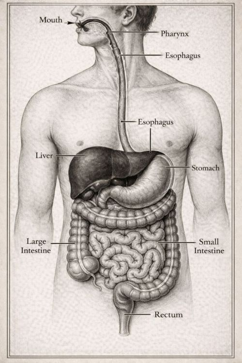
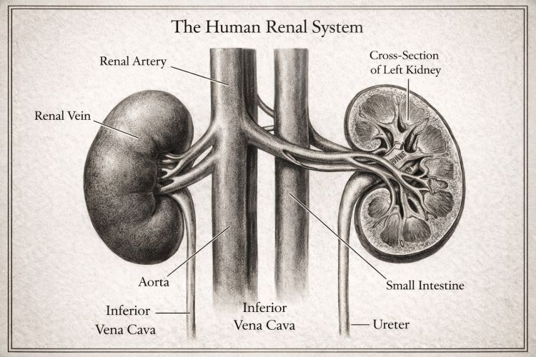
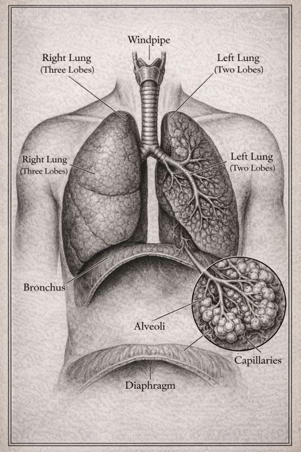
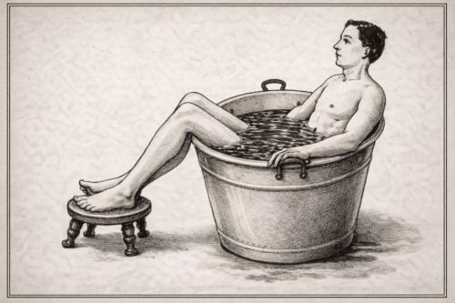
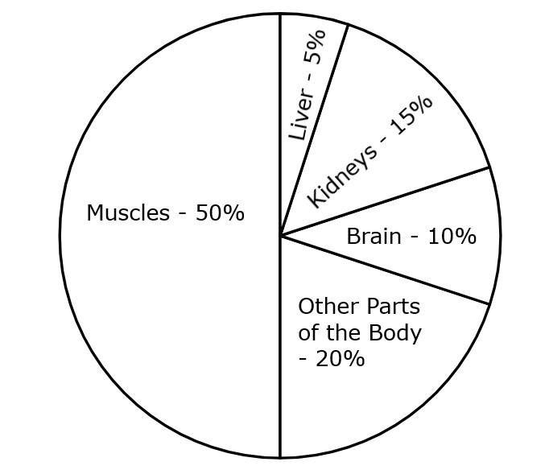
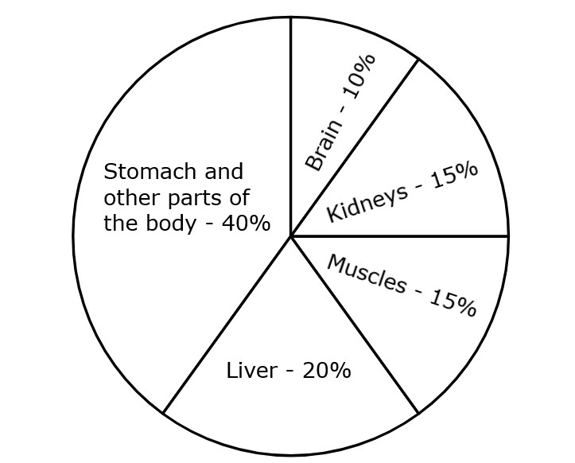
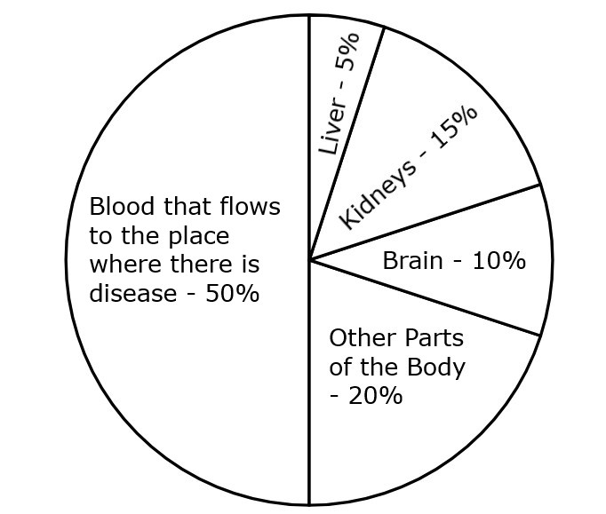
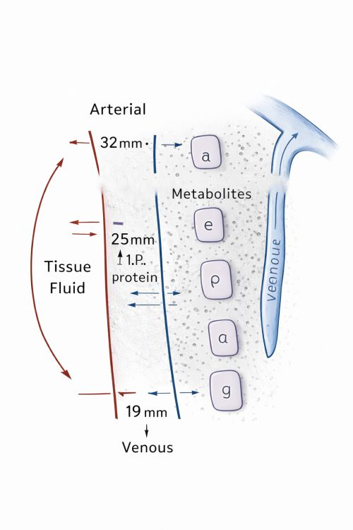

(Steps to a Happy Life - 3)
Protect Complete Health.
Enjoy Prosperity at all times.
Instead of first doing fasts and then following food rules later, we inform you that it is more beneficial — both for you and for us — if you strictly practice the natural way of living and dietary discipline without deviation for six months in advance. After completing this, it is advisable to begin long-term fasts only after consulting a doctor.
We hope that you will follow this guidance.
Yours sincerely,
Natural Way of Living
From the year 1942, after responding to Mahatma Gandhi’s call and playing an active role in the Quit India movement, a great man who became immortal in spirit — one who would dedicate his share of effort with mind, speech, and action (manasā, vāchā, karmaṇā) to any work he believed would bring good to society — Chintalapati Varaprasada Murthy Raju.
As early as 1946, he was drawn towards naturopathy. At a time when there was very little awareness — either within the government or in society — he shaped naturopathy into his way of life. He worked for the benefit of society and succeeded in obtaining government recognition for naturopathy. Such an exemplary person, a guiding elder equal to a father, Murthy Raju garu — this book “The Science and Discipline of Fasting” is dedicated to him.
- Mantena Satyanarayana Raju
Sri C. H. V. P. Murthy Raju — A Great Man
A follower of Gandhian principles
An inspiration to thoughtful people
Sri Murthy Raju garu was born on 16 December 1919 in a small village called China Nindra Kolanu, located in West Godavari district of Andhra Pradesh. He was born into a Kshatriya lineage, to the virtuous couple Sri Chintalapati Bapiraju and Surayamma.
During the freedom movement, Sri Murthy Raju garu worked as the Secretary of the Students’ Congress. Responding to the call of Mahatma Gandhi, he actively participated in the Quit India movement. He dedicated his entire life to the upliftment of the poor. He worked tirelessly for the development of irrigation canals and for building roads to remote areas. In the region surrounding Kolleru Lake, he fought against wealthy landowners on behalf of poor farmers to secure agricultural land for them, and he succeeded. Because he was a true asset to the poor, he was continuously elected to the State Legislative Assembly from 1952 to 1983.
Sri Murthy Raju garu served as a leader in the Sarvodaya movement started by Vinoba Bhave. As a true follower of the ideals of Mahatma Gandhi and Vinoba Bhave, he organized the All-India Sarvodaya Conference in the year 1961 at Unguturu in West Godavari district. This conference was attended by eminent leaders such as Rajendra Prasad, Jayaprakash Narayan, Aryanayakam Krishna Chowdhary, and Shankar Rao Deo, among others, and was conducted successfully.
His efforts in the field of journalism also earned wide recognition. In the year 1961, in Hyderabad, he founded the Telugu newspaper “Andhra Ratna” and served as its editor. In addition, he published Vinoba’s Discourses and brought out 100 books on the occasion of the birth centenary celebrations of Mahatma Gandhi. In the field of education, he rendered valuable service by publishing the journal “Vidyajyoti”. He also authored a book titled “The Kolleru Multipurpose Project”, written in both Telugu and English.
For the welfare of Harijans, he constructed several Harijan colonies. With the objective of creating a casteless society, he made sincere efforts and, as a practical experiment, organized a community kitchen for 50 families. In Pedanindra Kolanu village, he constructed a Gandhi Bhavan with a diameter of 100 feet, and also built many rest houses for the poor and for travelers.
As the President of Bharat Sevak Samaj, and as a committed Gandhian, he undertook a 600-mile foot march to spread Gandhian thought and principles among the people. With the cooperation of Bharat Sevak Samaj, he constructed residential colonies for the poor. He donated 100 acres of land for Vinoba Bhave’s Bhoodan Yajna (land-gift movement), and another 100 acres for Eluru Women's College.
His service to education is beyond measure. He established the Sri Chintalapati Bapiraju Dharma Trust, under whose guidance 68 educational institutions were set up across the state. These included 5 degree colleges, 1 physical education training center, 5 junior colleges, 3 oriental colleges, 28 high schools, 23 oriental high schools, and 3 upper primary schools. Through these efforts, he earned great distinction as a patron of education.
As a lover of the arts, he had a deep interest in photography and founded an institution called Bharata Kala Parishad.
Not only as a social worker, patron of learning, benefactor of education, and political leader, but also as a pioneer of the naturopathy system, Sri Murthy Raju garu worked tirelessly in every possible way for the development and recognition of naturopathy, while personally following the natural way of living. Let us briefly look at the background that led Sri C. H. V. P. Murthy Raju garu to shape his life around living in harmony with nature.
From childhood itself, Sri Murthy Raju garu did not enjoy good health. In those days, medical facilities in the country were very limited. There would usually be only one L.M.P. doctor (Licensed Medical Practitioner) in the area. In villages, whenever someone fell ill, people knowledgeable in Ayurveda would come and give medicines — and they would do so free of cost. In those times, medical treatment was regarded as an act of service and a moral responsibility.
During his childhood, he suffered from severe skin disease, with scabies-like sores (gajji kurupulu) all over his body. He could not sleep at night due to intense itching. His entire body would itch continuously. He could not even lie down properly. The condition was so severe that he could not wear trousers or shirts, and had to wrap himself in a cloth. Because of this suffering, it was said that his formal education could not continue properly.
During the 1946 Assembly elections, he suffered from extreme pain in his legs. Party responsibilities for election campaigning fell heavily on his shoulders, and therefore avoiding campaign work was not possible. On one side were unbearable leg pains, and on the other side were unavoidable election duties. Mulupala Rangayya treated him and advised complete rest. However, due to the serious responsibilities of the elections, taking rest was not possible.
The pain was so intense that it felt as if nails were being driven into his nerves. Unable to bear it, he would sometimes feel that falling under a train might be better. Even under such unbearable pain, he had no option but to continue campaigning. Two people would sit on either side of him in the car, constantly massaging his legs and hands. He would get down from the car, deliver a speech, get back into the car, and again have his legs and hands pressed. In this manner, he fulfilled his election campaign responsibilities.
Later, for medical treatment, he was admitted to a hospital in Rajahmundry, under Dr. (D. S. Raju) Colonel Raju. Even after four months of treatment, there was no improvement. In such a situation, Sri Murthy Raju garu turned his attention towards naturopathy.
He explained his condition to Sri Vegiraju Krishnam Raju, a Nature Cure physician, and asked whether he could come to his ashram for treatment. Krishnam Raju garu assured him that the condition would certainly improve and asked him to come. Thus, Sri Murthy Raju garu joined the Nature Cure Ashram for treatment.
After following the ashram’s treatment methods for just one week, he began to sleep well. He experienced deep, restful sleep. Within two months, he regained complete health. In this way, Murthy Raju garu understood the greatness of naturopathy through his own personal experience. Not only did he understand it, but he also began to encourage and support naturopathy, with the noble intention that everyone suffering from ill health in society should receive the same benefit that he had received. The efforts he made for this cause were truly unparalleled.
In 1952, Sri Murthy Raju garu was elected as an MLA to the Madras Assembly. In 1956, Visalandhra was formed, and Hyderabad became the state capital. At that time, the late Kala Venkata Rao garu was serving as the Health Minister. During those days, naturopathy was not officially permitted. Medical practice without government permission was not allowed. Therefore, Murthy Raju garu approached the minister seeking permission for naturopathy.
As the minister did not have faith in this system of medicine, he reportedly refused to grant permission. Murthy Raju garu did not accept this refusal. He explained his personal experience in detail and firmly persisted, ultimately securing permission for the practice of naturopathy.
He did not stop there. Through his efforts, a naturopathy college was established in the ashram. However, this college did not have government recognition. As a result, those who studied and passed from this college were not legally allowed to practice medicine. There were many naturopathy colleges in different places, but none of them had been approved by any government.
Sri Raju garu was not satisfied merely with obtaining government permission for the practice of naturopathy. His deep and heartfelt desire was to secure government recognition for the naturopathy college that he had established and nurtured.
As if it were the result of merit earned through his commitment to naturopathy, Sri Raju garu became the Minister for Indigenous Systems of Medicine in the Government of Andhra Pradesh in the year 1972.
Immediately after assuming office, he decided to grant recognition to the naturopathy college. At that point, he faced strong resistance. The government machinery was not supportive of his decision. The argument put forward was, “This is not science, therefore it is not acceptable.” Even so, Sri Raju garu instructed his Personal Assistant (P.A.) to put up the file seeking approval for the naturopathy college.
The P.A. was also unwilling and said that the Secretary should first place the file, and only then could the minister act on it. A few days passed. One day, Sri Raju garu told the P.A. to ask the Secretary to submit the file, and added that if it was not done, he would write and send it himself. Having no option, the file was finally placed before him.
On that file, in his capacity as the Health Minister of the time, he wrote the following note:
“Government officials know nothing about naturopathy. I know it. Moreover, I have personal experience. Therefore, I hereby grant permission to the naturopathy college, from its inception.”
With that single note, the permission came into effect.
Sri Murthy Raju garu was an ideal person who shaped the natural way into his very way of life. A clear example of this can be seen in a significant episode from his life.
In the year 1989, due to the rush of elections, intense mental pressure, and continuous travel, he was forced to abandon all natural disciplines for nearly one year. As a result, Sri Murthy Raju garu suffered a heart attack. He was admitted for treatment in Bhimavaram, Hyderabad, at NIMS, and later at Vijaya Hospital in Madras (Chennai).
The doctors advised bypass surgery. Sri Raju garu asked them, “If I undergo surgery, how long will I live?” The doctors replied that he might live for another ten years, but would have to take medicines continuously.
Sri Raju garu responded with firm resolve: “I do not want an operation. I do not want anything. I want to live for another thirty years. Even if I die without an operation, there will be no loss to the nation because of me. I will cure my heart through naturopathy alone.”
With this courageous decision, he refused the operation. From that day onward, he strictly and with great discipline followed the laws of nature. Without taking any kind of medicine, he regained complete health, was rejuvenated, and threw a direct challenge to modern medical systems. In this way, Sri Murthy Raju garu transformed his own natural way of living into his message. Such a person is blessed, honorable, and a true guide for all of us.
For the past three years, the good fortune of knowing him personally has given me guidance and direction. Sri Murthy Raju garu — a man of truth, an embodiment of non-violence, and a lover of nature — lived as a true Gandhian and showed his very life as a message to all of us.
Considering it my basic duty and great fortune, I dedicate this book “The Science and Discipline of Fasting” to him, with heartfelt gratitude and respectful salutations.
Manthena Satyanarayana Raju

Embodiment of Srimannarayana
H. H. Tridandi Chinna Srimannarayana Ramanuja Jeeyar Swami
Date: 21-9-1998
Dear Sri Dr. M. Satyanarayana Raju garu,
Srimathe Narayanaya Namah — many auspicious blessings!
There is a Sanskrit saying: “Nānr̥ṣiḥ kurute kāvyam.” Its meaning is — one who is not a rishi cannot create true literature. Here, kāvya does not merely mean writing poetry. It means revealing thoughts that appear ever new, and at the same time presenting them in a form that can be practiced in daily life.
A rishi means one who sees. One who can see not only what is happening now, but also what has happened and what is yet to happen. Merely seeing is of no use. A true rishi is one who reflects on what has happened, envisions what should happen, and harmonizes it with the present to offer a meaningful way of life.
You belong to that category. This becomes very clear when one looks at the book “The Science and Discipline of Fasting.”
Whatever name the book may carry, this work clearly explains a way of life through which one can live simply, gracefully, and remain youthful every day. This book shows a method by which a highly valuable life can be achieved with minimal effort. It presents a practice through which great inner energy can be attained with very little strain. Your book, “The Science and Discipline of Fasting,” proves with clear examples how simple practice leads to a joyful and fulfilling life.
With ordinary, natural processes, this book increases and nurtures extraordinary values of life. It serves as a guiding lamp that shows the way. Using methods that are in harmony with nature, this book clearly defines the goals of a pure and meaningful life. It is often said that health is the greatest wealth. For attaining such complete and prosperous health, your book presents a natural and easily accessible process. It explains very well how anyone can protect and maintain pleasant, joyful health that is within everyone’s reach.
Written in an extremely simple, gentle, and graceful language — in a way that even highly experienced scholars may not be able to achieve — this book naturally draws in readers who have even a slight interest. It not only makes them read, but also inspires them to put the ideas into practice.
The manner in which the subject is presented energizes every reader, encourages reflection on the truth contained within, and motivates practical application. In today’s times, when prices are soaring high, not only the lives of ordinary people but even those of the higher sections of society are becoming increasingly difficult. When we look at health, people are becoming so weak that they are unable to face anything on their own and are forced to depend entirely on medicines. When we look at food, almost everything has become a chemical product — artificial forms that have lost their natural quality. Even color, taste, and energy are being made artificial. Everyone knows that the environment has become polluted.
In such a situation, there is a great need for human beings to develop natural resistance and inner strength from within themselves. There is a need to create and accumulate self-generated strength capable of facing external pollution. Present-day medical systems are not suited to this purpose. Your book “The Science and Discipline of Fasting” appears to offer a simple, effective, low-cost, and scientific solution to this problem.
To achieve anything, a person must first have clarity and purity of purpose (lakshya śuddhi — purity of goal). There must be firm determination such as, “I must do this, I must reach this point, I must achieve this much.” A person who possesses such resolve does not really need any external motivation at all. One who has strong mental stability and focus does not waver for anything. In every situation, such a person’s mind stands firmly by his side.
When such a person falls ill, he relies primarily on the strength of his own mind, not on external factors. However, not everyone possesses such unwavering determination. Even so, almost everyone does have at least the desire to become well. For those who have even that much, there must be a way to gradually climb the steps of health in an orderly manner and gain the qualification to sit upon the throne of happiness.
Your system of treatment makes this clear, practical, and easily achievable — like holding something plainly in the palm of one’s hand (karatalāmalakam — something made unmistakably clear).
Lord Krishna Himself explains in the Bhagavad Gita that practices which appear easy and pleasurable at first but finally result in severe harm and destruction are tāmasic (tamasam — dulling, destructive). Practices that seem pleasant at first but become painful later are rājasic (rajasam — restless, effort-driven). Practices that may feel slightly difficult in the beginning, but in the end give extraordinary results and deep joy, are sāttvic (sattvikam — pure, uplifting). Your method itself stands as a clear example of this truth.
To enter this path, one only needs a little mental steadiness and courage. Once a person tastes it even once, the practice itself gradually develops interest and joy, drawing the seeker naturally into disciplined practice. That you are offering — based on your own experience — a method that restores health to the sick and increases joy in the healthy gives us immense satisfaction.
For those who already live a natural, disciplined, and scientific life, no special method is really required at all. Such people are called “Pancha-kāla parāyaṇulu” (pancha-kāla — five sacred time divisions of the day). From the moment they wake up until they sleep, they divide the entire day into five parts and regard their whole life as continuous worship of God. They perform divine worship, and then accept food itself as God’s grace (prasāda — sacred offering). Even water is taken in that spirit.
That is, by sustaining the body only with divinely offered food, taken in just the required quantity, they strengthen their mental power. Since God Himself is their goal, they prepare food worthy of divine glory, containing all six tastes (ṣaḍ-rasa — sweet, sour, salty, bitter, pungent, and astringent). In this, there is no personal craving — they eat only with a prasāda-buddhi (the attitude of accepting God’s gift), and only as much as needed.
Such people also observe fasts (upavāsam — voluntary abstinence) strictly according to scriptural rules. These fasts and their disciplines are different from ordinary fasting. The Ekādaśī tithi (the eleventh lunar day) is dear to God and is therefore called Hari Vāsara (the day of Lord Hari). On that day, the moon has a strong influence on the mind. Scriptures say that if tāmasic foods are consumed on that day, they stimulate the mind in a negative way and disturb devotion to God. Therefore, complete fasting is prescribed.
On that day, one may accept only God’s sacred offering — no more than a very small quantity, about the size of an ordinary Indian jujube fruit (regu pandu), and that too only after worship, purely for God’s pleasure. Only then is the fast considered proper. The Vedas say that once food is offered to God externally, the Lord Himself resides in the cave of the heart and tastes that offering through our tongue. With this faith, such food is accepted — not to fill the stomach, but as sacred grace.
For the rest of Ekādaśī, one remains in complete fasting, without even drinking water. Even water is considered to break the fast. In truth, except for air, if anything enters the body, the fast is considered broken. Only God’s prasāda — and that too once, after worship — is accepted.
In the Ambarīṣa Upākhyāna (the story of King Ambarīṣa), it is well known that the king drank water during Dvādasi time, saying “salilabhikṣaṇambu sammatambu” — meaning that drinking water marks the formal completion (pāraṇa — ceremonial breaking) of the fast. This clearly shows that even water is not taken during the fast itself.
Except for Ekādaśī, fasting at other times is not considered scripturally valid. The common practice today, where people skip food once a week in the name of some deity, does not fall under scientific or scriptural discipline. Scripture clearly defines what to eat, how much to eat, when to eat, and what should not be eaten. According to these rules, one should not exceed two yāmas (yāma — a time unit; two yāmas equal about six hours) between meals. What remains depends on what is eaten and how much is eaten.
When understood and practiced properly, even the six tastes created by God are acceptable — nothing needs to be rejected. Such people have control over their body, senses, mind, and intellect. However, in today’s world, nearly 96 percent of people live outside these scientific disciplines. That is why health deteriorates and doctors become necessary. Forget control over mind and intellect — people no longer even have basic control over their own bodies.
At the slightest natural disturbance, they are tossed about like cotton in a storm. Uncontrolled eating fills the body with countless hidden disorders, and meaningless treatments then follow. Unable to live day-to-day with stability, families continue their lives in a state where every single day feels like a massive struggle, yet they somehow survive through it.
Is it easy to raise such people again to the level of the ancient rishis (ṛṣi — seers)? Is it easy to shape them into minds that are so pure? Is it something that can be achieved effortlessly — to pull a person out of the cage of the senses and make him strong enough to keep the senses under control? And will everyone readily agree to such a change?
After all, people have deliberately acquired bitter and harmful powers — unhealthy habits and attachments. If someone says, “We will take them away, we will remove them,” the first ones to feel pain are these very people. How can we give up what we have earned with so much effort? Therefore, such tendencies must be removed without the person even realizing it.
For that, there must be a process that appears attractive on the outside, yet works with great effectiveness within. The body should not become weak, the mind should not become restless or frightened, impurities should be removed, and behavior should naturally move away from faults and excesses.
In the past, there were many systems of natural treatment, many methods, and many small books that aimed to shape human beings in this manner. But your book is much more comprehensive. It creates interest. It draws the reader inward. It is a divine process formed by gradually reducing deep-rooted defects in a complete and integrated way. It is truly excellent.
Apart from giving up salt, which alone involves some effort, you have refined and presented all the other tastes in a way that they can be enjoyed properly. In fact, even salt itself may have a scope for refinement rather than complete rejection — this deserves careful examination. This is because our scriptures say, “Ṣaṇṇāṁ rasānāṁ lavaṇaṁ pradhānam” — among the six tastes, salt is primary. This indicates that salt also has its necessity.
Life on this planet exists on a surface where water is abundant. Living beings perceive this excess water in the form of salt. Water itself is the foundation of life. The human body, which is a result of this same process, is composed of nearly 60 percent water, and that water remains safe and balanced only when salt is present in the proper measure. Otherwise, the body’s condition may gradually lose its self-protective capacity.
Indian food culture trained people, in a disciplined manner, to include all tastes in their diet. Because of this, the Indian body and skin became adaptable to all kinds of climates and did not easily become a breeding ground for diseases. This is not something formed in a few years, but the result of dietary habits developed over many ages.
However, people have ignored these rules. Because salt has been used excessively, even if it is given up completely for some time now, there is no immediate danger, as enough reserves still remain within the body. It is not surprising if this can continue for a few generations as well. But that does not make it a true way of life.
The natural method you have given should remain with everyone across generations. Everyone should practice it and become healthy. For that to happen, one must look into the intentions behind age-old practices. We must also observe the distinctiveness of our people when compared to those in other parts of the world who follow salt-free diets. This is something that requires deeper thought and research on your part.
That said, for those who are currently following modern medical treatments, completely giving up salt for some time is indeed very beneficial. On this point, we have no disagreement at all.
Even though you are young, because you have personally experienced and practiced what you teach, every word you speak is filled with lived experience. Your words do not merely reach the listener — they touch the heart directly, create a response, and also inspire actual practice. God has given you the ability to express these truths so clearly and effectively. Added to this, your grounding in modern education, exposure to science, and understanding of human physiology are like the perfect handle fitted to gold — making your work all the more valuable.
We sincerely offer our auspicious blessings, wishing that this “The Science and Discipline of Fasting” you present may enable common people to live close to God, who is the very embodiment of health, and that it may steady their minds toward overall well-being, guided by dharmic (dharmika — righteous) and sāttvic (sattvika — pure and elevating) strength.
Many great beings — kings and noble rulers — have revealed profound Upanishadic truths related to nature and life for the benefit of the world. Among them, the Upanishads tell us of a great king named Ashvapati, who taught six sages the worship of Vaishvānara (Vaishvānara Upāsana — contemplation of the universal life force). His message was, in essence: “Refine your food — your health is in your hands, and happiness stands at your doorstep.”
That very principle seems to be at work within you. Along with fasting (upavāsa — disciplined abstinence), you are bringing to the world an extremely effective state of health through a natural system of healing that is also very easy to practice. May God, through you, properly shape and refine this society in His own way. And may all those for whose welfare this path is offered accept it as their own.
- H. H. Tridandi Chinna Srimannarayana Ramanuja Jeeyar Swami
Sri Satyanarayana Raju garu has been known to me for about a year now. With unwavering dedication, he has been making sincere efforts to bring our ancient traditional system of naturopathy back into public awareness. He firmly believes that almost all of today’s medical and health problems are closely linked to our way of life.
In the present lifestyle, the body does not get sufficient physical activity. At the same time, food availability has increased greatly, and people eat at all times without following any discipline. Because of these reasons, ill health develops. In today’s medical system, medicine is given for the disease, but we are unable to live life with proper rules and discipline.
Sri Raju garu goes to people personally and instills confidence in them about what he himself firmly believes — that if a person eats with discipline, there is no chance of falling ill. In this system, fasting is a very important component. Through fasting, harmful substances formed in the body are expelled, and clean, pure blood flows again through the system. As a result, many diseases are cured, and a person gets the opportunity to live a healthy life.
Sri Raju garu has conducted research on many subjects and has carried out those experiments on his own body. He is a true karmayogi (karmayōgi — one who lives a life of selfless action). Keeping the welfare of everyone in mind, he is making great efforts to take naturopathy to the doorstep of all.
I sincerely pray that God may bless him with long life and good health, and enable him to contribute even more to this noble work.
H. J. Dora, IPS
Director General of Police,
Hyderabad
Dear Readers,
Greetings to you all.
Our body is formed from the five elements (pancha bhūtas — the five fundamental elements). It grows and functions through the strength of these five elements alone. It is also true that the defects and diseases that arise in such a body can be removed only through treatments based on these same five elements. Diseases occur because of deficiencies or imbalances in the powers of the five elements.
Animals and birds do not suffer from diseases in the way humans do because they live without disturbing the balance of these five elemental forces. In human beings, deficiencies in the five elements arise because of our habits, our food, and our lifestyle. The five elements are — air, water, earth, sun (heat), and space. All the diseases that affect us due to deficiencies in these elements can be completely removed by correcting and restoring them.
Just as a snakebite is treated at the very spot where the bite occurs, these treatments work directly at the root of the diseases that arise in us. Treatments based on the five elements blend with the body like milk and water, forming a natural harmony. Because of this, these treatments have no harmful side effects at all.
Science tells us that human beings evolved from animals. When we reflect on the fact that animals — living and reproducing for hundreds of millions of years — live healthy lives without doctors, hospitals, or medicines, the secret becomes clear. Not only do they never violate the laws of food and eating, but when discomfort or illness appears in the body, they instinctively and strictly follow the discipline of fasting created by the Creator. This is their most important principle.
The discipline of fasting existed even before human beings were born. Therefore, fasting is not something invented by humans. It is a natural system of healing given by the Creator to all living beings on this earth. Moving away from this discipline, or violating it, is like defying the command of the Creator. Violating the discipline of fasting is an unpardonable mistake. By doing so, people distance themselves from the happiness granted by God, move closer to disease, and accumulate suffering and wrongdoing.
Among the five elements, the most important is space (ākāśa — emptiness, openness). The entire creation exists within this vast space. The discipline of fasting is directly connected to this element of space. Within our own body also, there is space — emptiness or openness — and because of this, the movement of substances happens continuously.
When diseased or dead matter (lifeless wastes) accumulates in the body, this inner space reduces — as if space itself is diminished — or becomes like a traffic jam. This obstructs the movement of beneficial substances such as food, air, and water. Fasting removes these obstructions, recreates inner space, and allows the movement of nutrients to flow smoothly again. That is the true purpose of fasting.
God has endowed this body with the power to heal itself. That power can be activated only by following the discipline of fasting. Fasting means giving the body rest by not supplying food. The one who makes a car alone can repair it properly. Likewise, the one who created the body alone is the true doctor of the body.
When God Himself says, “You stop eating, and I will heal you,” refusing that physician and instead handing your body over to other doctors is a great mistake. That itself is a misunderstanding. It is said that restraining food is tapas (disciplined austerity). That means fasting is as pure and powerful as spiritual austerity itself.
In this Kali Yuga (Kali yugam — the present age), human beings have especially forgotten the discipline of fasting. Regardless of the age or era, even while living alongside humans of the Kali Yuga, other living beings have not abandoned this discipline of fasting. Through this, they silently demonstrate their closeness to the Divine.
The dog, cat, buffalo, and cow that live with us in our own surroundings continue to observe fasting naturally. Yet, it is deeply unfortunate that human beings are unable to relearn the forgotten discipline of fasting even by observing these animals — who are said to be equal to the Divine in their natural wisdom. It is believed that only if one has committed sins in some previous birth does one develop resistance in this life toward fasting. Gaining the opportunity to practice the discipline of fasting itself means that one has earned great merit (puṇya).
By practicing tapas (austerity), which is fasting itself, merit is gained. It is true that through such tapas, all the afflictions and impurities attached to the body are completely destroyed. Keeping all these aspects in view, fasting has been explained here not merely as a treatment, but as a dharma — a fundamental principle of life. That is what has come before you as “The Science and Discipline of Fasting.” It is a natural law of creation.
For about the last 250 years, this discipline of fasting has come into prominence mainly as a therapeutic method. Because human eating habits and lifestyles have become unnatural, cleansing the body through fasting now takes much longer than it does for animals — not just one or two days, but many more days. If one remains without food for many days, consuming only water, the body can become weak and damaged.
In naturopathy, fasting has been practiced in different ways — some with only water, some with lemon water, some with jaggery water, and some with honey taken three or four times a day. Due to the lack of proper glucose supply during fasting, people experienced weakness, dizziness and fainting, extreme drying of the body, fear of starvation, and even loss of life in some cases. These incidents created fear about fasting among the public.
Because of these reasons, people moved away from the discipline of fasting and turned toward artificial treatments. This book, “The Science and Discipline of Fasting,” has come before you to prove that fasting removes weakness and increases strength, removes disease and gives health, removes indigestion and restores true hunger, and even preserves life when it is slipping away. That is the law of life itself.
According to human physiology, for the brain to function powerfully every day, it requires about 800 calories of energy. Based on experiments I conducted on my own body, I developed a method of fasting in which no harm comes to the body.
In this method, 250 grams of honey is given in the form of four teaspoons every two hours, totaling eight times a day. Along with this, five liters of water is consumed daily — two glasses every two hours, strictly according to time. Keeping the modern civilized world in mind, and basing this on physiological science, this new discipline of fasting is being presented to humanity as a kind of protective armor.
In the fasting method we conduct, weakness comes to the disease and leaves the body — never to the body itself. Until diseases are completely expelled from the body, the body remains strong and continues to fight them. Fasting can be practiced for as many days as the body requires, without causing any discomfort.
Age is no barrier. With us, a one-year-old child successfully fasted for seven days, while a 96-year-old elderly man fasted for six days. Even people who take insulin injections for severe diabetes were able to fast for 44 days without insulin — that is, without food. Normally, no one allows people with high sugar levels to fast. But this discipline of fasting has the capacity to safely guide even such individuals.
This fasting method is suitable for people suffering from all kinds of chronic diseases, and even for those with deep-seated imbalances. It is commonly said that people with low blood levels should not fast. But through this discipline of fasting, new blood is formed day by day during the fast itself. It is true that no matter how many days fasting is done, there will be no blood deficiency or blood-related disorders.
With us, people have fasted anywhere from one week to one hundred days. One man, aged 65 years, had a hemoglobin level of 14.8 grams on the day he began fasting. When his blood was tested again on the 58th day, the day he ended his fast, his hemoglobin had increased to 15.8 grams. This shows the greatness of this fasting method.
Many people hesitate to fast because they believe fasting means sitting still without movement, setting aside all work. With older fasting methods, those who continued working would indeed become weak. But with honey-based fasting, even 80-year-old individuals are able to go to the office daily and work up to 12 hours while fasting.
Working excessively is not advisable; whenever possible, taking rest is better. Even so, for people of this age, our fasting method can stand as firm support, just as Hanuman stood by Lord Rama. There is no doubt about this.
That is why this “Discipline of Fasting” is truly the dharma of us all.
If the discipline of fasting (upavāsa dharma) helps wash away diseased matter from the body, then proper food helps ensure that diseased matter does not enter the body again. In naturopathy, vegetables are often boiled and given to patients in a bland form. Because of this lack of taste, patients eat such food only for a few days — usually only while staying in the ashram — and then return to their usual flavorful foods. As a result, diseases and suffering naturally return.
For many years, a strong desire was growing within me to shape naturopathy into a true way of life, not just a temporary treatment. I firmly believed that only then could a patient permanently follow a single, wholesome diet and bid farewell to both doctors and diseases. With this conviction, I conducted 15 months of experiments in cooking, and as a result, foods for a joyful life — dishes that are also tasty — came into being.
Without cooking in the usual way we are accustomed to — that is, without salt, oil, ghee, sugar, sourness, spice, or masalas — we discovered methods of cooking that use alternative natural tastes, allowing one to enjoy food while still driving disease away. From the time these dishes were developed, it has become possible — as Mahatma Gandhi and Krishnam Raju garu of Bhimavaram envisioned — to form nature-centered families. Entire households can eat this food throughout the year and protect their health.
Through this transformation in cooking, we are able to offer people the food discipline (āhāra dharma) that goes hand in hand with the natural way of living — this “Science and Discipline of Fasting.”
Call it the Creator, call it God, or call it Mother Nature — for the past five years, inspiration has been continuously flowing to me from that source. Protecting me like the eyelid protects the eye, it gently awakened me, placed a hand on my shoulder, and led me away from the world of medicines into this field — to offer people the laws of nature and the discipline of fasting.
About four years ago, one day, a clear inner realization arose within me that my life was about to transform in this natural direction. In that very moment, it was conveyed to me that events would unfold in this way. Today, that vision is becoming clearly visible in reality. That same inspiration awakened me and, through hands that could not even write a proper letter, enabled me to write and present to all of you the books “Steps to a Happy Life” (January 1997) and “Food and Thought” (February 1998 — about food and cooking).
Later, at the end of July 1998, when I began writing about “The Science and Discipline of Fasting”, I initially thought it would be about 100 to 150 pages. But it eventually grew to around 450 pages. As I continued writing, I noticed that what I thought would be one page would turn into five pages, and many new ideas would arise in my mind without my conscious effort. Watching this happen, it felt as though Mother Nature herself was making me write, as if to say, “Is there really so much to be said about the discipline of fasting?”
I consider all this to be my great good fortune. The insights and understandings that I have gained over the past five years through the practice of fasting — and which people have been accepting with happiness — are what this “The Science and Discipline of Fasting” seeks to place into the hands of all of you.
Disease is lifeless matter, while you are a living being. Because you are alive, you are the one holding on to the disease. The disease will never leave you on its own. As a person endowed with awareness and inner strength, you yourself must let go of the disease. Never forget that if we truly wish to release the diseased matter present in the body, fasting alone is the ultimate refuge.
Just as we consider food, sleep, and marital life to be essential parts of living, we must, with wisdom, recognize that the discipline of fasting is also an integral part of life. Eating food and swallowing medicines when there is no hunger and when the mouth tastes bitter is not something a wise person should do. Giving medicines to the body without first giving a chance to the laws of nature, when the body is already in distress, is like striking at one place when the snake is somewhere else.
Understand clearly that such actions only damage the body that already lacks health — the house and the body may collapse, but health will not return. This “Science and Discipline of Fasting” teaches how to live without circling hospitals and without dependence on medicines. That itself is the dharma of health.
The elders say that good advice must be repeated again and again for many people to understand it. Keeping this in mind, and taking the common person as the foundation, the same truth has been explained using different examples, and when necessary, repeated two or three times. I have written in this manner only with the earnest desire that my words may embrace every heart and become firmly imprinted in your mind.
If you are to explain these ideas again to ten more people, it becomes possible only through examples. Therefore, I humbly request that experienced and learned readers should not misunderstand my words.
This book, “The Science and Discipline of Fasting”, is my humble attempt to share with you the joy of health that I myself experience. The stream of thoughts that has been moving and stirring within me for many years has taken the form of written words in this book. I believe it is not wrong to hope that, at every step in this book, you will hear my silent plea — “Protect your health.”
Even if some parts of this book sound strict or harsh, it does not matter if they are misunderstood at first. But if you understand the subject from the right perspective, put it into practice, become healthy yourself, and are able to gift health to ten others, then my birth will feel truly meaningful, my effort successful, and my heartfelt wish fulfilled.
In nature, which is an ever-active laboratory, new changes continue to happen every day. I sincerely request you to share your suggestions, cooperation, and personal experiences with me. In my life’s journey of newly adopting and living by the principles of naturopathic food and health, your advice will always be held in the highest regard.
Please read this book with a kind heart.
Think with a broad and generous mind.
Try practicing the discipline of fasting.
Let your entire family attain complete health.
And continue your journey of life joyfully and peacefully.
Speak to me!
Share your opinion!
Bless this effort!
To the many well-wishers
My respectful salutations to all of you.
Wishing health for everyone,
Proclaiming that “Health is Happiness”.
Yours sincerely,
Mantena Satyanarayana Raju
In this great city filled with many eminent people, wherever one looks there are concrete jungles everywhere. A calm environment with lush green trees that allows one to relax is rarely seen. Searching for greenery itself feels like a sacred effort. In this fortunate city, surrounded by hills, valleys, and rocky terrain, there is a place in Jubilee Hills that feels as though Nature herself has descended from heaven to earth — a place with abundant trees and a viewpoint from which the entire city can be seen at once.
It was Atluri Subbarao who provided me with such a beautiful and suitable place to offer naturopathy services. Inspired by the words of the great poet Sri Sri — “I too have offered my small piece of sacred fuel into the fire” — he gave me the opportunity to provide naturopathy free of cost to the public. Through this, the revered Atluri Subbarao garu found the satisfaction that he too was able to render meaningful service to society.
In today’s social climate, where it is often believed that no one undertakes any work without expecting personal gain, his selfless social awareness stands out. Without expecting anything in return, without hesitating over expenses, he encouraged me, supported the practice of naturopathy, and provided me — a newcomer to Hyderabad — with shelter and stability. To Subbarao garu, I first offer my heartfelt gratitude.
My special thanks go to Tridandi Chinna Srimannarayana Ramanuja Jeeyar Swami, the embodiment of Srimannarayana, who blessed me and showered his grace for the writing of “The Science and Discipline of Fasting.”
I also express my sincere thanks to H. J. Dora, IPS, Director General of Police, who immediately agreed to write the Foreword, delighted me with his encouragement, and inspired me in the task of writing this book.
There is a saying — If each house brings a single flower, it becomes a garland for Lord Shiva. Writing a book is like performing a sacred ritual (yajna). I express my gratitude to Sri Gopalakrishna Murthy garu, who cooperated in this effort, and to all my well-wishers who practiced my naturopathy methods, regained health, and shared their experiences in written form.
I also offer my respectful thanks to Suraj Printers, who beautifully and uniquely printed this book in a very short time, and especially to Sri Shivaji Raju garu, who worked tirelessly and extended great cooperation.
With gratitude,
Mantena Satyanarayana Raju
Health is the birthright of every living being. Except for human beings, every other life form in creation receives health as a natural part of life. Our ancestors and the ancient rishis (ṛṣis — seers) recognized health as a great blessing. By following the laws of the body with discipline and without deviation, they enjoyed good health. They were able to live as people free from disease, and as people to whom disease did not even come.
Over time, however, as occupational practices, bodily disciplines, and dietary principles changed, disease also began to feel like a birthright — alongside health. Today, people who live a truly healthy life are rarely seen. Like the moon among scattered stars, healthy individuals are few and far between. Falling ill has become something considered natural for human beings. Diseases now affect people without distinction of gender, age, or season.
It is commonly believed that with age, the body must inevitably deteriorate — eyesight failing, teeth falling out, the waist bending, inability to rise after sitting, joints wearing out, being confined to bed, and groaning in pain. Hardly anyone pauses to recognize that if these conditions appear, they are the result of our own mistakes. Since “everyone gets them,” people adopt the attitude of “going along with the crowd” and begin preparing themselves for illness in advance.
But if we truly think about it, there is no reason at all for human beings to fall ill even within a hundred years of life. The organs given to us by God are endowed with immense strength and capacity. Even doctors, who constantly see people suffering from diseases, often say, “At this age, these illnesses are unavoidable — after all, you are old now.” Such statements are meant more to cover up helplessness than to reflect the truth.
In reality, there is a way for human beings to live without losing eyesight, without joint damage, without losing teeth, and without being confined to bed. There is a need for us to understand why diseases come, how they come, and how they can be removed. The truth is this — unless we know how diseases arise, diseases will never leave us.
Therefore, let us first understand how diseases come into the body.
There are only two kinds of matter in our body. One is living matter, and the other is lifeless matter.
Living matter means that which is alive. It nourishes the body, organs, and glands. It gives strength to the body and provides the energy and capacity needed to perform various bodily functions. This living matter is also called native matter — matter that truly belongs to the body.
Lifeless matter, on the other hand, is also referred to as disease matter, foreign matter, or alien matter. Lifeless matter means that which has no life and no movement. When such lifeless, motionless matter enters the body, it obstructs the flowing blood, which is full of movement. By blocking this flow, it creates resistance and disturbance in circulation.
When such obstruction occurs, the body begins a process of internal friction in order to remove the blockage. As a result, pain and discomfort begin. When this disease matter enters the nervous system, conditions such as paralysis and nervous disorders develop. When disease matter enters the bloodstream, blood vessels become clogged and blood circulation reduces.
When blood vessels become blocked in this manner, the heart is forced to pump blood with greater pressure. This leads to heart diseases and an increase in blood pressure. If this disease matter accumulates in the blood vessels supplying the heart itself, proper blood flow to the heart is cut off, and the heart may stop functioning.
If the same disease matter accumulates in the joints, the joints become stiff and rigid.
Our body is nourished by food. If the food we eat is useful and suitable for the body, then such food does not harm the body and no disease matter is formed. But when we eat food that is unsuitable for the body, driven by taste and becoming slaves to the tongue, that food not only fails to provide proper energy, but the lifeless elements within it remain in the body as disease matter.
Wherever this disease matter settles — in whichever organ or body part — that part becomes diseased. This makes it clear that disease matter is formed from the food we eat. Disease does not originate suddenly in any single place or organ. Our faulty food habits and lifestyle practices are the true causes of this disease matter.
Since disease matter is lifeless, it remains lodged in the body — both in internal organs and on the skin — in different forms, namely solid, liquid, and gaseous. When this accumulated disease matter obstructs the flow of nutrients, blood, nerves, and air, the body’s immune power attempts to push it out. That very effort made by the body is what we call “disease.”
When the body’s immune strength is weak, the disease matter remains trapped inside the body. Because it is lifeless, it quickly decays and deteriorates, giving rise to many kinds of germs and pathogens. These germs continue to damage the internal parts of the body.
To remove the lifeless disease matter that gives rise to germs, the body expels solid waste in the form of stools, purgation, and diarrhea. Liquid waste is expelled through urine, sweat, sneezing, nasal discharge, and cold-related secretions. Gaseous waste is expelled through inhalation and exhalation, and also through the skin.
The commonly seen acute conditions such as cough, sneezing, cold, diarrhea, and similar discomforts are clear signals given by our immune system to tell us that disease matter exists inside the body and needs to be removed. We must understand that sneezing, coughing, cold, and diarrhea are not diseases themselves — they are only like smoke.
When smoke rises, we know there is fire somewhere inside, don’t we? In the same way, since the “fire” — the disease matter — exists within, these acute conditions appear. Therefore, we must make every effort to completely eliminate the disease matter and protect the body.
If this disease matter is completely washed out, disease is removed from its very roots, and the body becomes radiant and healthy. But if this disease matter is merely suppressed, it accumulates with “interest,” increasing day by day and laying the foundation for new diseases and chronic illnesses.
Let us think about what our ancestors did when such conditions arose in the body. They did not have medicines or modern medical facilities readily available. What they knew and practiced were fasting, drinking castor oil, taking purgative remedies, using enemas, inhaling steam, and following strict dietary discipline (pathyam). When necessary, they also consumed leaf extracts or Ayurvedic herbs.
Whenever any kind of acute illness affected the body, the very first thing they did was to stop eating food. After that, they would cleanse the bowels. Because of this, all the bitter and harmful matter that needed to leave the body in solid form was expelled through stools. By taking steam, they enabled the liquid-form disease matter to leave the body through the skin. In the same way, disease matter in gaseous form was also expelled.
By giving the body two or three days of rest through fasting (lankhanam — abstinence), the body began producing new antibodies (immune strength) to resist the disease matter. This prepared the body to fight and eliminate disease quickly. Because food was stopped, no new disease matter entered the body, and the body got a clear opportunity to expel the old, accumulated disease matter.
They did not return to food until the disease matter was completely eliminated. By that time, the accumulated disease matter within the body was expelled along with its very roots. Through such fasting, the body became fully healthy again.
For us to regain complete health, the most important thing is to completely eliminate the disease matter accumulated within us — not which particular medical system we use. Any treatment that is unable to cleanse this disease matter from the roots will not only fail to give health, but may actually harm the body. That is when chronic diseases or other kinds of illnesses begin to arise.
The treatments practiced by our ancestors helped the body resist disease and ensured that the internal “fire” — the disease matter — was completely extinguished. Once the fire goes out, where can smoke come from? The antibodies formed during fasting remained in the body and helped prevent the same acute illnesses from returning quickly.
This is a form of treatment that truly supports and protects the body.
Under foreign rule, through friendship with foreigners, through education in foreign languages, and through dependence on foreign systems, foreign medical practices came to us as a so-called gift. Even though the foreigners left more than five decades ago, the habits they introduced have not left the people. The discipline of fasting and dietary rules that had existed for hundreds of thousands of years were slowly erased because of this association.
Eating even when there is no hunger, drinking tea and coffee repeatedly, eating late at night, consuming alcohol, and continuing to eat even while taking medicines during illness — all these have led us toward decline. The English medicines we use today also came from that influence. As civilization progressed, human beings began seeking immediate relief. By using powerful medicines for acute illnesses, people gradually forgot the disciplines of fasting and proper food.
Let us understand what happens within us when we take medicines for acute illnesses. When cold, cough, sneezing, diarrhea, or fever occurs, and we take medicine, the visible symptoms — such as cough, cold, or diarrhea — stop. The special nature of such medicines is this: instead of allowing the solid, liquid, and gaseous wastes to move out, they suppress the immune force that tries to expel them. In other words, the disease matter is prevented from coming out and is forced to remain inside the body.
We think that what comes out causes discomfort, so medicines help keep the disease matter inside. Because diarrhea, cough, cold, and fever stop appearing externally, we experience temporary relief and feel comfortable. But those who take medicines rarely think about the damage caused by trapping disease matter inside the body.
Disease matter that is prevented from coming out remains lodged inside and begins to give rise to new diseases and new microorganisms. This is like covering a fire so that smoke does not appear. A covered fire continues to burn slowly inside and eventually bursts out fiercely. In the same way, disease matter suppressed by medicines grows stronger day by day and suddenly emerges as chronic illness.
Even a great tree must begin as a small plant. Likewise, chronic diseases grow out of small illnesses. Those who cleanse and remove minor illnesses never develop chronic diseases. But how can disease leave the body of those who nourish illness by suppressing it with medicines?
That is why the number of diseases in the country continues to increase day by day.
For example, when indigestion occurs in our body, phlegm (kapha) increases. This phlegm enters the respiratory passages and obstructs the flow of vital air (prāṇa). To remove this difficulty, the body’s natural power responds by producing cold, cough, and sneezing. The body temperature rises, the phlegm becomes thinner, and it begins to flow out through the nose and eyes as discharge.
During this time, one may feel mild fever, throat pain, or headache, and it may feel uncomfortable. If we are unable to tolerate this discomfort and immediately use medicines, the phlegm remains trapped in the respiratory passages. It then hardens, settles inside, and stays there for a long time.
Later, when conditions such as faulty diet or unfavorable climate combine, that simple cold-related phlegm disorder turns into bronchitis (a lung-related disease). If strong medicines are again used at that stage, it transforms into asthma. In some people, it settles permanently as sinusitis — a condition where the nose remains constantly blocked.
By suppressing disease matter that arose from a small dietary mistake, we ourselves are creating diseases that do not leave us for a lifetime. Medicines taken for asthma give rise to other kinds of illnesses. Relief comes only after taking yet another set of medicines. Just as covering up one mistake leads to ten more mistakes, the medicines we use are themselves leading to new diseases.
Our body is not a patchwork bundle stitched together. Though it has many organs performing different functions, all of them are inseparably connected. They are all operated by one single life force. Disease matter that is suppressed in one place leaves that location and occupies another.
Depending on where the disease matter settles, a name is given to the disease, and specialists prescribe different medicines. Yet the disease matter only changes form and continues to remain inside the body. Different doctors handle different organs, and for the same disease matter, ten different medicines are given. Each doctor looks after one organ, but the inseparable relationship between the organs is ignored.
Medicines may change, hospitals may change, specialists may change — but in the end, only the number of diseases changes, not the strength of the disease matter. It is a well-known truth that once a person steps into a hospital, he rarely returns home in a state of complete health.
As a result, the patient’s entire life becomes dependent on medicines, and the body gradually turns into a stitched bundle held together by drugs.
By keeping disease matter trapped inside the body and merely passing time with medicines, the body gradually becomes weak. Eventually, a person ends up taking one medicine to digest food, another to pass stools, one to reduce pain, one to gain strength, one for nervous weakness, and another to induce sleep — in this way, consuming medicines as if they were meals. Swallowing medicines has become a custom for human beings.
A survey has revealed that only 25 percent of people in the world die because of the disease they originally had, while the remaining 75 percent die due to the harmful side effects of the medicines they consume. Our carelessness itself is taking our lives. For every five benefits a medicine may have, it often carries seven harmful effects. Because I studied medicines for four years, I have fully understood both their benefits and their harms.
If medicines are used properly and wisely, they can give good results and even save lives. Medicines that are meant to be used in emergency situations, to protect life, are instead being used without real necessity, even for minor issues — and by doing so, we are inviting danger upon ourselves.
The allopathic system and its medicines should be used like a walking stick when a leg is broken — useful for a short time, to support life — and then set aside like a visiting relative. One should not form a permanent relationship with them or depend on them for daily living. Because we do not use medicines in this way, we are suffering losses.
Everything has its own purpose. Nothing needs to be branded as entirely bad. No medical system is wrong. All systems of medicine have been given by God for the welfare of humanity. Which system we use should depend on our health condition and the need of the moment. But swallowing medicines for every small issue is not righteous living.
Human beings should stop taking medicines for every minor problem, practice the laws of nature, and use medicines only when necessary or when life is truly at risk.
The reason we have spoken so much about medicines here is this — by misusing medicines, people are turning ordinary illnesses into chronic diseases and spending their entire lives suffering. This is said only to encourage people to stay away from that path and think in ways that lead to health.
In this context, the words of the late physician Vegiraju Krishnam Raju are worth remembering:
“A medicine should be used only as a medicine —
it should never be used as food.
Medicines only change the form of disease.”
He also said:
“Disease is lifeless matter.
You are a living being.
Since you are alive, you are the one holding on to the disease.
Disease will never leave you on its own —
you must have the inner strength to let it go.”
If we truly understand the truth in Krishnam Raju garu’s words and change our mindset, then just as insects leave grains when they are spread under the sun, diseases too are ready to leave us when we let go of them.
But to let go of disease, a human being also needs courage.
With the passage of time, doctors, medical systems, hospitals, patients, diseases, medicines, and treatments may change. But the fundamental principles that regulate the powers of the human body, which have existed from time immemorial, never change — anywhere, at any time, under any condition.
From ancient times till today, the same truths remain:
the nutritious foods that nourish the body,
the pure air that provides life energy,
the sun’s energy that gives vitality and radiance,
the water that cools and cleanses the body,
the sound sleep that restores the strength of the senses lost during the day,
and the physical exercise that gives muscular strength and the blessing of health —
know that these alone are the supreme and timeless forms of treatment.
Understand clearly that if these were to change, human survival itself would become impossible.
In the very design of the body given to us by the all-pervading Creator, the power to nourish and heal itself has been embedded. Protecting that power is our first and foremost duty. For the body, the five elements, rest, and exercise are extremely important. These are the very foundations of health. Any system of treatment that is based on these foundations can completely eliminate disease matter. Any medical system that ignores these — especially the five elements — can be said to be without a foundation.
If the foundation is weak, the walls will crack; likewise, the body becomes a dwelling place for various diseases. Without strengthening the foundation, applying cement to cracks again and again brings only temporary relief, never a permanent solution. In the same way, without correcting the five elements, no matter how many treatments are done, only temporary relief is achieved — complete cure never happens. This is a plain and undeniable truth.
Every disease has a cause. If the cause is understood and removed, medicine is not required. Without removing the cause, eliminating disease is impossible. Therefore, without removing the cause, the effect cannot be resolved — this is the law of creation.
The present medical world has, as the saying goes, lost contact with the ground — it has abandoned the cause and is attempting to deal only with the effect (treatment). That is why, in society today, the number of diseases and patients is increasing day by day in unimaginable ways.
If we are to come out of this condition, medical practice must follow the cause-and-effect relationship.
When human beings consume food that is against nature and against the body, disease matter enters the body. That itself becomes the foundation of disease. To prevent disease matter from entering the body in this way, the only solution is to return to natural, body-appropriate food.
If one follows proper dietary discipline, medicine is not required. If dietary discipline is not followed, medicine will not work. The science that explains what constitutes wholesome and suitable food is naturopathy. Because the body possesses the power to heal itself, if we give it the right opportunity, it can completely eliminate the disease matter present within it.
Giving the body that opportunity means withdrawing food — that is, practicing the discipline of fasting, which is a law of creation. Through fasting, disease matter that has been lodged inside the body for a long time can be completely expelled. In this way, the very foundation of disease is removed.
If fasting helps remove the problem that has already arisen, wholesome food helps ensure that the problem does not arise again. In other words, to remove disease and to prevent its return, both fasting and proper dietary discipline are essential. Naturopathy is the science that teaches both these principles. The union of these two is what constitutes true human health.
The naturopathy system works strictly on a cause-and-effect basis. It prevents disease from arising at its source, and through fasting it helps the body completely expel the disease that already exists. Because this method removes disease from its very roots, naturopathy stands as the foundation of all systems of healing.
It is natural for human beings, and it follows the laws of creation. This system blends with the body like water blends with milk. Medicines, on the other hand, never merge with the body — like clods of mud mixed with rice. That is why medicines often fail to cure disease completely and instead give rise to side effects.
This discipline of fasting is a natural healing system that comes from Mother Nature herself. When living beings in the animal world fall ill, they instinctively practice the law of fasting for recovery. Human beings — who are also part of this living world — have forgotten this law. In today’s society, there is a great need for humans to make a sincere effort to rediscover and practice this forgotten discipline.
All living beings are an integral part of nature and live by the laws of nature. They live in good health. They do not need separate doctors or medicines — the discipline of fasting alone is the medicine they naturally follow. Let us also try to fully understand this discipline of fasting and make an effort to live healthy lives like them.
The discipline of fasting can be compared to a double-edged sword. Those two edges are these: the first edge helps people who are ill to recover from disease, and the second edge helps healthy people remain free from disease.
Today, there are many systems of medicine available to protect human health. But the usefulness of all these medical systems is very different from the usefulness of the discipline of fasting. Almost all medical systems are limited to treating disease after it appears. Whether the disease is cured or not, their role ends there. For a person who is already healthy, those systems have no role to play. If someone wants to live in such a way that disease does not come in the future, those systems do not offer such a possibility.
A person who falls ill has a doctor and medicine. But for a person who is not yet ill, where is the doctor or medicine to prevent disease from occurring? For example, if someone asks,
“Doctor, my father has diabetes. I may also get diabetes at this age. Is there any medicine you can give me so that I do not get diabetes?”
— such a medicine does not exist, because there is no medicine meant to prevent a disease that has not yet come.
It is precisely to protect us from such future problems that the discipline of fasting, given by nature, stands beside human beings like a great blessing. Just as khadi cloth provides coolness in summer and warmth in winter — working suitably in all seasons — fasting too works in every condition, providing exactly what the body needs at that time.
This is the ultimate truth — the discipline of fasting gives human beings what they truly require. It is nature’s own prevention and cure.
Every time a person falls ill, he goes to a doctor and takes medicines as advised. The illness may subside with those medicines. But who guarantees that the disease will not return? Who can assure that it will never come again? When the same disease returns, he goes back to the same doctor; if a different disease appears, he goes to another doctor. Thus, each time illness strikes, he keeps running around, ruining both his home and his body, wasting precious time, and circling doctors like flies around jaggery.
To free human beings from such a condition, nature has given us its own law — the discipline of fasting — for the welfare of humanity. Those who understand this with discernment and take refuge in it are fortunate. There is no need to say separately that the rest are unfortunate.
Any system of medicine can either reduce the illness of a patient or turn him into a chronic patient. But it cannot make a patient into a doctor. Are you surprised by that statement? Yes, it is true — a truth as bright as the sun. If one fully experiences, practices, and understands the laws of nature and the discipline of fasting, whether illness comes or not, no disease will trouble him.
Even if some illness does occur, one can treat one’s own body at home, without going to any doctor — not even to a naturopathic doctor. One can regain complete health. Not only that, one can also take care of the health needs of one’s entire family.
Those who trust nature may never get the chance to live like a patient, but they are surely blessed with the opportunity to live like a yogi (Sage). Whether one becomes a yogi, a bhogi (one who seeks pleasure), or a rogi (patient) depends on the path one chooses — that is, the medical system and way of life one follows.
If one’s destiny is favorable, one enters the right system of medicine and the right way of living. Just as it is said that what is written on the forehead does not fade by rubbing, if destiny is unfavorable — if one fails to choose the right medical system — even a doctor may end up suffering like a patient. That, in fact, is what we see happening in the world today.
When doctors themselves — after studying human physiology and health science for many years — are unable to follow the principles of health and end up suffering from diseases, how can health come to the patient? If a doctor does not truly understand the joy that exists in good health, how can he sincerely strive to give complete health to others? After all, a doctor is meant to be one who gives health. When he himself does not possess full health, from where can he give it to the patient?
The present state of health in society resembles the saying, “When two ascetics (sanyasis) rub against each other, only ash rubs off”. (Two incompetent, broke, or completely helpless people collaborate, results in absolutely zero benefit or progress.) Doctors themselves are unable to clearly understand which way of living actually brings health, and while they themselves suffer, they are unable to free patients from suffering. Until the day doctors themselves begin to live joyfully in complete health, good days will not come for the people. Only then will the nation truly flourish, like a house decorated with fresh green festoons for an eternal celebration.
Without such a transformation in society, no country can truly progress. Every doctor, after all, is born of nature. It is the responsibility and duty of every doctor — regardless of which medical system he has studied or which profession he practices — to follow the laws of nature with discipline if he wishes to attain health. If doctors themselves violate the laws of creation, what will patients learn by observing them? How much can they possibly understand about natural discipline and order?
The joy of true health can be understood only by those who follow the discipline of fasting and dietary regulation. To those who do not know these two principles, health is understood only partially — like the tiny black spot on a Rosary Pea (Crab's Eye or Gurivinda seed). Just as the seed is unaware of its own blackness, people who do not know these disciplines assume that their limited state itself is complete health.
I am not writing these words as a doctor. I am writing them as a well-wisher, hoping that all of you may experience the joy of health that I myself experience — and believing that this alone can become a protective shield for patients. Violating the laws of nature is an unpardonable offense, and whoever does so must inevitably face its consequences.
I am not asking anyone to listen to me or practice something that belongs only to doctors. I am asking everyone — doctors of all medical systems, people suffering from diseases, and even those who are currently disease-free — to listen to and practice the laws of nature, because they belong to all living beings.
It is my firm belief that this is the primary duty of every Indian. Since what is most essential for both doctors and patients is health, the natural laws that give health apply to everyone equally. Feeling it as my responsibility and foremost duty, with inspiration, determination, and heartfelt concern to offer health to society, and with the resolve to share the discipline of fasting, this book has been written.
I sincerely pray that everyone recognizes the discipline of fasting as our own dharma, and preserves the health that we have lost by straying away from nature.
When one takes refuge in nature, whatever is needed — whatever the body truly requires — is provided. Just as going to a supermarket gives access to everything in one place, there is no need to run to different hospitals, doctors, or medical systems to remove different diseases. All difficulties can be addressed through a single system — the law of nature, namely the discipline of fasting and the discipline of food.
If a condition is not resolved through this natural approach, then it is appropriate to seek another medical system at that time. That itself is righteous conduct. As human beings, it is our first duty to give nature’s law an opportunity. Through the laws of nature, a strong foundation is laid for the body and for health.
Once that foundation is firmly established, any medical system we choose afterward will work in our favor. Just as a building with a strong foundation remains stable no matter how many floors are added, when the body is grounded in natural discipline, any medicine used afterward gives quick and proper results.
Because people do not understand the laws of nature, they often receive only limited benefit from other medical systems. But when natural principles are combined with other medical treatments, the results can be remarkable. Therefore, instead of dismissing nature as irrelevant, every doctor and every patient should understand and follow the laws of nature. Only then is true justice done to the body, and the body is protected from disease more quickly and effectively.
That which gives health is dharma. That which gives illness is not. Health cannot come without cleansing the body. The discipline of fasting cleanses the body not only internally, but from every cell, removes internal pollution, and leads to complete health.
Just as our daily bath cleanses the body externally, the discipline of fasting cleanses the body from within. When disease matter accumulates and illness arises, there is no other process available to cleanse the body internally except fasting. No matter how many doctors or medical systems a sick person turns to, without inner cleansing of the body, the result remains zero.
Such an important discipline of fasting — vital to the body — has been pushed away by us, knowingly or unknowingly. What has already passed cannot be brought back. But if we wish to live the remaining years of life at least in comfort and good health, we must surely practice the discipline of fasting.
Because of its importance, this book explains in detail how fasting should be done, why it should be done, what losses occur if it is not done, why health comes easily when it is practiced, and why fasting is our natural life-law.
I sincerely hope that readers will fully understand these principles, begin practicing the discipline of fasting along with their families, free their bodies from the misfortune that has clung to them in the name of disease, restore to the body the freedom called health, and bid farewell to a life spent circling around doctors.
Victory surely comes to those who place their trust in dharma.
Science tells us that animal life began on this earth about 3.5 billion years ago. It also says that human life began hundreds of thousands of years ago. In this five-element (pañchabhūta)–based creation, it is said that there are 84 lakh (8.4 million) forms of life. Every living being in creation has its own laws of the body and laws of living.
For animals and birds, which do not possess intellectual reasoning, four natural activities form their way of life — food, sleep, fear, and reproduction. They never deviate from these natural laws, and by doing so, they continue to support the process of creation itself. Their food is natural, suitable to their bodies, and nourishing.
As part of nature’s design, every living being clearly knows what food it should eat, when it should eat, and how much it should eat, in accordance with its body structure. By following these laws, they carry on their journey of life.
Creatures that eat during the day consume their food only in daytime and give their bodies complete rest at night for about 12 hours — which is nothing but a 12-hour fast. This allows their bodies to regain strength for the next day. Likewise, creatures that eat at night rest completely during the daytime for about 12 hours.
When seasonal or environmental changes occur in nature and their bodies develop weakness or illness, the Creator has already provided them with a way to recover without depending on anyone else. Because they live in harmony with creation, they naturally follow the law of creation — the discipline of fasting — whenever illness arises.
This is the innate wisdom of life, embedded by nature itself.
The discipline of fasting means that when illness arises, living beings stop eating their regular food and give rest both to the body and to the digestive system. During fasting, most creatures drink plenty of water. They instinctively know how many days they need to fast. They continue fasting until the bitterness in the mouth disappears and the digestive system begins to function again — in other words, until true hunger returns.
Depending on the severity of the problem, they may fast for one day, two days, or if necessary, even four days. Since they already give their bodies about 12 hours of rest every night, waste matter does not accumulate much in their bodies, and therefore their fasting periods usually end quickly.
Even though they are speechless, unintelligent beings, they do not think, “What if food is not available later?” Even if food is available during fasting, they do not touch it. They do not eat out of fear or opportunity, thinking, “This chance may not come again.” They do not abandon fasting once it has begun.
Because animals and other living beings follow the four natural activities — food, sleep, fear, and reproduction — along with the discipline of fasting, as ordained by the Creator, they are able to live happily and without disease for the duration of their lifespan.
Just as they follow the law of eating when hungry, they also follow the law of fasting when illness arises, thereby fulfilling the purpose of their birth. Each living being moves from one birth to another in accordance with the laws of creation. In no birth do they violate the natural laws of food, reproduction, sleep, or fasting.
Because they live righteously for countless births in this manner, they ultimately attain the most exalted birth — the human birth, which is said to be the gateway to the divine.
As the fruit of many births of spiritual effort and accumulated merit (puṇya), human birth — endowed with a thinking mind — has been granted to us as the highest of all births. In animal births, food, sleep, fear, reproduction, fasting, and also ignorance exist as part of life. In human birth too, food, sleep, reproduction, and the discipline of fasting must continue as essential laws.
However, human beings must rise above the fear inherited from animal life, and along with that, destroy ignorance and cultivate knowledge, thereby giving true meaning to human birth. Scriptures state that humans who fail to develop knowledge and remain in ignorance are no different from animals.
Those who seek happiness both in this world and beyond must follow dietary discipline and the discipline of fasting throughout life. These two principles alone can elevate human beings to a higher state of existence. More than in any previous animal birth, these two disciplines are especially mandatory in human birth.
If these two laws had been violated in previous births, the body would have quickly fallen into disease, perished early, and another birth would have followed soon. But no living being in those births engaged in such violation. If, however, in this human birth, one fails to follow dietary discipline and fasting, the body becomes diseased, and within the limited span of a hundred years, the pursuit of knowledge is obstructed.
If this birth is wasted, it does not return. To fulfill the purpose of human life through knowledge, the most important requirement is the physical body. Without a healthy body, no meaningful work can be accomplished. Without dietary discipline and fasting, the body cannot function properly.
This is the law of creation.
In earlier times, because people and rishis followed dietary discipline and the discipline of fasting, they were able to live well beyond one hundred years — even up to one hundred and fifty years. Through these disciplines, they pursued the path of knowledge and revealed to society the true meaning of human birth.
As time passed and civilization advanced, people began to alter their dietary rules. As long as they ate natural food, practiced fasting, lived in harmony with nature, and supported nature in return, these qualities were clearly visible in human life. A tiger eats only meat wherever it lives — that is its natural law. But as human intelligence increased, humans themselves lost clarity about what food truly suits them.
People began eating whatever suited their taste or pleased their mind, rather than what suited the laws of the body. From the moment humans began consuming food against nature, the support of nature itself began to withdraw. Tasty foods started cutting off the bond between humans and nature. From that point onward, the discipline of fasting slowly faded from human life.
Along with that, people also began behaving without restraint in other disciplines such as sleep and reproduction, acting purely according to desire. They became slaves to sensory pleasures. Once tasty food became habitual, not only did diseases and suffering begin, but dependence on others also became a habit.
Our illnesses are forcing us into dependence. Look at the elephant — it lives for a hundred years in health and joy without depending on anyone. Because it depends on nature alone, it needs no other support. As we move closer to distorted food and distorted habits, we move closer to disease and become a burden on others.
The influence of taste has driven humans away from the discipline of fasting. Even on the day illness strikes, driven by craving — “What if those foods disappear if I don’t eat?” — we forget fasting and act against the body’s nature. In this way, we are turning human birth into a life filled with suffering.
Human life is meant to be filled with joy — human life is inherently joyful. Yet, after millions of births in which fasting was practiced naturally, in this final and precious human birth, people have abandoned fasting due to addiction to taste.
See how powerful taste is — it can distance us from even the most sacred discipline. Just as Viśvāmitra, after years of austerity and restraint, lost the fruits of his penance by falling into the illusion of Menakā, we too are falling into the illusion of taste, abandoning the discipline of fasting, and drawing diseases closer to ourselves.
Human beings, though born of nature, have abandoned the natural law of fasting and continue to live in nature without following its discipline. Animals, on the other hand, for millions of years, have never abandoned the discipline of fasting. They preserve their health and live without breaking their bond with nature.
Even though animals live in close association with humans for several years, they do not learn our unnatural habits. They never abandon their own law. See how righteously they live. That very discipline protects them throughout their lives.
Take the example of a dog kept at home. We often feed it the same food we eat — food cooked with salt, spices, and masalas. Since the dog eats the same food as us, it too sometimes develops fever or illness, just like humans. Because we have forgotten the laws of nature and fasting, we rush to doctors, spend money, and swallow medicines.
But what does the dog do? Let us think. When it feels discomfort, it immediately eats a few blades of grass, vomits the undigested matter inside, and from that moment onwards, follows the discipline of fasting for a day or two without touching any food. Even if, by habit, we cook a tasty meat curry that day and place it in front of the dog, it does not even attempt to smell it.
The dog does not think, “Meat is cooked only once a week; if I don’t eat now, I won’t get it again for another week,” and then greedily eat, thereby violating the discipline of fasting. As soon as the discomfort subsides and true hunger returns, it resumes eating.
But what do we do? Even when the mouth tastes bitter, we say, “I’m taking tablets anyway,” and greedily eat the meat thinking it won’t be available again for a week — and then suffer for five or six days. While the dog completely removes the illness through fasting — a natural treatment, we suppress disease with medicines and give it the opportunity to grow and lay deeper roots in the body.
When the dog recovers through fasting, we destroy ourselves through medicines. That is why the dog is called a faithful being. Because of nearly two hundred years of association with Western influence, humans abandoned their own discipline of fasting and descended into a state where, when illness comes, they eat heavily and take medicines, just like them.
Through foreign influence, we gave up what was good in us — the discipline of fasting — and adopted what is harmful — dependence on medicines. Yet, even after living with us, eating our tasty foods, and observing us closely, the dog never abandoned its own discipline.
Why does the dog fast when it falls ill, even though it lives with us and eats our food?
From whom did it learn to fast?
Who encouraged it to do so?
Think about it.
Which medical science has a dog studied to practice fasting?
Which Vedas are its authority?
With the help of which doctor does it fast?
To which system of medicine does a dog’s fasting belong?
Fasting does not belong to any medical system. Even assuming it belongs to Ayurveda would be incorrect. The Vedas and medical sciences themselves came into existence many years after human birth began. But fasting existed hundreds of millions of years earlier, from the very moment animals were created.
The discipline of fasting was not invented by humans. It is a natural law of nature itself. This law applies to all the millions of living beings born on this earth. Fasting is a marvelous, natural healing method created by the Creator who brought life into existence on earth.
That is why dogs, even though they grow up in our homes, continue to follow this discipline. Because they adhere to natural law, they do not get corrupted by observing human behavior and are still able to practice fasting — the law of creation itself. The reason a dog fasts is nature’s law, nothing else.
If humans had relearned the discipline of fasting by merely observing the dog that lives in their home, or the other animals they encounter daily in society, human health would have improved long ago. The fact that an uneducated, instinct-driven creature like a dog understands more principles of health than an intellectually advanced human clearly shows how far humanity has declined in matters of health.
Ours is a sacred land, a land of the Vedas. Its foundation lies in the tradition of our sages. Many hundreds of years ago, sages practiced fasting as a dharma. They regarded fasting as tapas (austerity) and observed it with great sanctity.
Over time, as the sage tradition faded, the discipline of fasting too gradually drifted away from people.
In the 19th century (about 125 years ago), in Germany, Louis Kuhne introduced fasting as a medical practice and therapeutic method. How Kuhne came to recognize the value of fasting is an interesting story. He kept a cat as a pet. One day, he noticed that the cat’s leg was caught in a door and had fractured. Curious about how it would heal itself, Kuhne began observing the cat.
From the very day its leg broke, the cat stopped eating altogether and began fasting. Even when milk was offered, it did not touch it. It would occasionally drink water. The cat repeatedly licked the injured leg with its tongue, about four or five times a day, and otherwise remained at complete rest. After about a week of continuous fasting, the leg began to function again. Only after seven days did the cat resume taking food (milk).
By licking the injured area, blood circulation to that part increased, helping the injury heal faster. What we now do in the form of hot fomentations, mud packs, and hip baths belong to the same principle.
See how remarkable this is — humans had to learn the principles of health by observing a cat! What the cat taught Kuhne is the foundation of naturopathy. Kuhne transformed the cat’s natural fasting discipline into fasting therapy.
However, fasting therapy became limited only to those who were ill. Society gradually formed the belief that only people undergoing naturopathy should fast. This is a complete misconception.
Among the 84 lakh (8.4 million) forms of life, the human being is simply one creature endowed with intelligence. The discipline of fasting applies equally to all 84 lakh living beings. Treating fasting as something learned merely by observing a cat and categorizing it narrowly under naturopathy or as “fasting therapy,” and therefore keeping distance from it, is not righteous. Every living being, when the need arises, must practice the discipline of fasting.
Human beings are a part of nature. Respecting the laws of nature means protecting ourselves. Practicing the fasting discipline, which is a law of creation, means uplifting and saving ourselves. Opposing the laws of creation is a grave sin. And what are sins? Diseases. When we oppose the natural law of fasting, diseases are inevitable.
When diseases arise or when any disorder occurs in the body, God places bitterness in the mouth as a way of protecting the body. That is precisely the time when fasting should be practiced. Fasting means refraining from food when the body does not ask for it. Because food cannot be digested at that time, bitterness appears in the mouth — this is the Creator’s warning not to eat.
Yet, we ignore this signal, take medicines, and force ourselves to eat. While the Creator is trying to protect us, we ourselves sabotage that effort. In doing so, we dig our own pit. When illness is present and the mouth cannot tolerate food, the food we eat becomes poison, destroying the body. This is an act against the laws of creation.
In society, most people take medicines and continue eating regardless. That is why fevers take five or six days to subside, and typhoid takes fifteen days to reduce. By beginning the discipline of fasting, the body can be purified within just a few days.
The rise of chronic diseases and the spread of acute illnesses in the country are solely due to neglecting the discipline of fasting and the rules of proper diet.
The laws of nature, the laws of creation, and the discipline of fasting are principles that have existed through all ages. We may exist today and be gone tomorrow, but these laws are eternal, true, and everlasting. No matter how many people change, or how many new medical systems emerge, never forget that these are unchanging laws.
Respect once again the discipline of fasting that we have knowingly or unknowingly pushed aside. Through fasting, protect the body from the onslaught of diseases. Fasting is the natural medicine given to us by God.
If one thinks:
—and neglects the discipline of fasting for these reasons, then there is no greater loss than that, nor will there ever be.
There is one medicine for all diseases — that is the discipline of fasting.
Just as life-force is essential for consciousness, just as water is necessary when thirsty, just as food is needed when hungry, and just as rest is essential when exhausted, in the same way, when disorders, illnesses, and disturbances arise in the body, fasting must be practiced with equal necessity.
O intelligent being walking the path of wisdom!
Do not forget that fasting when the body asks for it is your duty.
Do not abandon this fundamental duty and fall into suffering.
Abandon the path of ignorance and walk the path of knowledge.
Leave unrighteousness and embrace righteousness.
Forsake falsehood and hold on to truth.
Leave sorrow behind and experience happiness.
Abandon disease and live in health.
Transcend nature and attain the Supreme Self.
That is your destination.
Fasting means completely refraining from eating any kind of food. The ancient saying “Ashana-nigraham tapaḥ” declares that self-restraint in eating itself is penance. That is why Bhishmacharya proclaimed: “There is no penance greater than the vow of fasting.” Fasting is therefore extremely sacred and profoundly health-giving.
The elders believed that disease is the result of sin, and that fasting alone is the path to liberation from disease. Since fasting restores health, they held that observing fasting earns merit (puṇya). Some even said that fasting leads to liberation (moksha) itself.
Every night, during sleep, the organs of perception—the ears, eyes, skin, nose, and tongue — and the organs of action — speech, legs, hands, anus, and urinary passage — take complete rest and regain strength by the next morning. Organs such as the heart, kidneys, lungs, brain, and blood vessels, however, must function continuously. God has endowed them with the capacity to do so.
But the digestive system — comprising the stomach, intestines, liver, pancreas, and related organs — was not designed to function without rest. The Creator did not grant these organs the ability to work endlessly. Only when they receive daily rest can they function powerfully the next day. When rest is denied, disorders inevitably arise. Therefore, giving rest to the digestive system is our duty.
Human beings are diurnal creatures. Since our vision functions in daylight, we are meant to eat during the day and allow the digestive system to rest at night. Night spans roughly twelve hours, and during this entire period the digestive organs should remain at rest.
However, as human cleverness increased, people began eating late into the night. As a result, the digestive system is forced to work even during the hours meant for rest. Over time, this leads to a decline in digestive efficiency. Once digestion weakens, the body becomes an open invitation to all diseases.
If diseases were to argue among themselves about who is the greatest tormentor and killer of human beings, indigestion would have the final word. It would say: “I am the greatest of all. Only after indigestion appears do all of you come into existence. I am like the mother of all diseases. Without me, none of you could exist.” Such is the pride of indigestion.
Do you see now? When proper rest is denied to the intestines, the body becomes fertile ground for every disease. The digestive system is the foundation of disease, but it is also the foundation of health.
Fasting protects this powerful digestive system and restores its strength. In essence, fasting means giving complete rest to the digestive system.
Animals and other living beings that strictly follow the laws of creation instinctively give full rest to their digestive systems whenever illness arises. Through fasting, they naturally recover from disease. This is how they protect themselves — by honoring the eternal law of fasting.
Let us understand why diseases subside when the digestive system is given rest. Whenever we have free time with no work, we use that time to arrange the house, decorate it, and clean it. In the same way, when the body has free time, it pushes out disease-causing matter, repairs its cells, and cleanses itself.
“Free time” for the body means when there is no food in the stomach — especially during the night — and it carries out these processes then. After all, when we are busy cooking, we do not clean the house at the same time, do we? Likewise, when there is food in the stomach, the body cannot focus on repair, because all its available energy is first spent on digesting the food. During that time, the body has neither the energy nor the opportunity to carry out elimination.
When the body faces any problem, it cannot recover immediately unless a complete repair takes place. Complete repair means that, in addition to the usual 12 hours of repair that happens at night, the body also undertakes repair work during the 12 daytime hours when disease is present. Giving the body the opportunity to heal itself continuously for 24 hours is what fasting truly is. This is the real secret of fasting.
When we eat food, the body takes approximately 4-5 hours to digest it. Along with this, a great deal of energy is spent on digestion. This means that whenever we eat, both money (energy) and time are inevitably spent. If we eat three meals a day, we waste approximately 12-15 hours along with a large amount of energy every single day.
In fasting, however, not only are those 12-15 hours saved, but a tremendous amount of energy is also conserved. During fasting, the saved time and energy together fully support the processes of elimination and repair. As a result, during fasting, the body carries out cleansing both day and night and is able to restore itself to health much more quickly.
On days when we eat food, the body spends the daytime producing new cells and destroying old (aged) cells, while at night it repairs the diseased or damaged cells. In contrast, during fasting, because there is no food at all, the processes of cell birth and cell death almost completely stop, and for the entire 24 hours the body focuses only on repairing the cells.
A great deal of energy is wasted every day on the processes of cell birth and death. When this process pauses during fasting, a large amount of energy is conserved, allowing us to feel more energetic than usual while fasting. When we eat food, all available energy gets spent, leaving us feeling weak and fatigued. During fasting, however, energy is conserved, so fasting essentially means increasing the body’s energy.
If food drains the body’s existing energy, fasting is what builds new energy within the body. This is why our ancestors gave such great importance to fasting.
For example, farmers plough the field and then leave it dry during the summer. This is equivalent to giving the field a “fast.” By allowing the field to rest and dry out, its strength increases, and farmers observe that crops grow better afterward. If, instead, crops are grown continuously without giving the field such rest, yields decrease and pest infestations increase.
In the same way, when we practice fasting, we receive the same benefits; when we do not, we naturally suffer the same losses. Through fasting (drying out), the rested land is able to absorb water and fertilizer more efficiently. Similarly, after fasting, our body not only digests food and nutrients better, but also gains an increased ability to absorb them quickly.
That is why fasting strengthens the digestive system and becomes the very foundation of good health.
Among the five elements, fasting belongs to the element of space (ākāśa). Space is that which gives room for everything. The very meaning of space is emptiness. Only when there is empty space inside a bag can we place something into it; if there is no empty space in the bag, it means there is no space.
Likewise, when the empty spaces within our body, and the spaces within our cells, get occupied by diseased matter, illness arises. Fasting is the process of dislodging that diseased matter from those areas, expelling it outward, restoring the empty space once again, and thereby allowing healthy substances to be supplied properly.
When drainage channels become clogged, neither water nor waste can flow forward. This means that the element of space (emptiness) is lacking in the channel. Digging and widening the drain is equivalent to increasing the space element. Increasing the space element is what is called fasting. Fasting is nothing but transforming the body from congestion into openness and expansiveness.
When we eat food every day, a very large amount of vital energy (prāṇa śakti) gets consumed in digesting that food. It is this vital energy that carries out all the functions of the body. By practicing fasting — because there is no food — the vital energy in the body is conserved. This conserved vital energy then helps in expelling diseased and toxic substances from within us.
That is why illnesses tend to subside quickly during fasting. Let us now understand more completely what fasting truly is.
Fasting Means
In its true sense, fasting means drawing closer to God, or coming into the presence of the Divine.
Since fasting enables a person to acquire so many noble qualities, practicing fasting opens the possibility of attaining the Divine or experiencing supreme bliss (Brahmānanda).
To reach the Divine, the body must be healthy, balanced, and supportive—therefore, the discipline of fasting must be followed without fail.
God itself is Nature. To practice fasting is to move closer to Nature, or to become one with Nature.
A person who drifts away from Nature must inevitably suffer, just like an infant separated from its mother.
Never forget that to honor fasting is to honor Mother Nature.
Nature is filled with the five elements. Our body too is constructed from these five elements — it is born in nature, grows within nature, and ultimately merges back into nature. All living beings in creation conduct their life’s journey and reach their destination by relying upon the five elements.
The five elements are air, water, earth, space, and the sun.
Air provides the vital life force required by the body.
Water cools and cleanses the body.
Earth supplies nourishing food and nutrients.
Space provides the necessary emptiness that allows food, air, and water to move freely within the body.
The sun provides radiance, consciousness, vitality, and life energy essential for the body.
Thus, these five elements nourish us and all living beings. For every living being, these five alone form the fundamental support for living a healthy life throughout its lifespan. When the five elements are supplied to the body in proper balance, the body remains healthy; when they are not, the body becomes diseased.
Animals use the five elements properly every day and are therefore able to live healthy, natural lives. All living beings that live in harmony with the Creator’s design are able to live without the need for medicines, doctors, or hospitals. Human beings, however, who lead an unnatural and distorted way of life contrary to creation, are compelled to depend on doctors and medicines.
It is due to deficiencies in these five elements that our bodies become prone to diseases and deformities. That is, when we are unable to absorb sufficient life-giving air; when we fail to cleanse the body adequately through water; when we do not consume wholesome food derived from the earth; when the body becomes clogged and lacks the necessary internal space for nerve and blood circulation (space — emptiness); and when we fail to absorb the immunity-giving energy released by the sun — the result is the occurrence of various diseases.
All the illnesses we face today arise because of deficiencies in these five elements. For those who are able to restore and correct these deficiencies, diseases can be completely eliminated.
To make sambar tasty, people add salt, spices, tamarind, seasoning seeds, sambar powder, oil, and so on. If any one ingredient is missing in cooked sambar, the taste changes. To restore the taste, the missing ingredient — salt, spice, or sourness — must be added back. If the dish lacks spice, adding more salt will not correct the imbalance.
In the same way, when diseases arise due to deficiencies in the five elements, complete cure is not possible unless those deficiencies are corrected — no matter what other medical systems are used. What is the use of striking in one place when the snake is hiding somewhere else?
This is exactly how efforts toward health are being made in society today. This is why the number of diseases is increasing day by day. As a result, homes and bodies are being ruined, but health is not being restored. The medicines and medical systems we use do not harm the disease itself — instead, they harm the body that is already burdened by disease.
If we can treat the disease without damaging the body, then we can live healthy, joyful lives for our entire lifespan.
When a copper pot develops a hole, we repair it by fixing it with a piece of copper. We do not try to mend copper by attaching a piece of iron to it. Yet, when it comes to our own bodies, we fail to apply this same logic — think about why that is.
We are trying to correct the defects of a natural, nature-made body by using artificial medicines. How can that ever truly work? When a body made of the five elements develops deficiencies (diseases), only treatments based on the five elements are appropriate.
Such treatments merge with the body just as water blends seamlessly with milk. That is why therapies based on the five elements do not produce side effects. Artificial treatments applied to a body made of the five elements are inadequate. Like stones mixed into rice, these treatments remain foreign to the body.
As a result, various side effects and adverse reactions occur, causing harm to the body. If we at least learn from these signals given by the body, understand them, and change our approach, we can live a life of comfort and well-being.
By breathing in clean air, drinking plenty of water when hungry and when the stomach is empty, moving about in the sunlight, eating food that comes from the earth in a natural manner, and observing a daily fast every night, animals live while continually increasing the space principle (ākāśa tattva — emptiness/opportunity) in their bodies.
Animals that eat during the daytime eat for about 12 hours and then give their bodies complete rest for 12 hours at night. Animals that eat at night give their bodies complete rest for 12 hours during the daytime. In this way, all animals follow the discipline of fasting every single day.
Because they maintain this daily fasting — the space principle — everything they take in through food and the other elements during those 12 hours is completely cleared out of the body by the next morning, making the body ready once again to receive food. This kind of daily routine happens naturally for them every day.
When we consider our own situation, we see that the five elements we consume to nourish the body are not given proper rest at night. As a result, by morning they are not fully cleared from the body. Because we neither drink sufficient water, nor breathe adequate life-giving air, nor eat food that is naturally suited to the body, the food, water, and air we take in are not fully expelled by the next morning.
Without fully eliminating the waste products formed from the previous day’s food, we get ready to eat again the next day. Here, the space principle in the body begins to decline. That is, the internal empty space in the body gradually decreases day by day.
Within the remaining space, waste materials stay behind in the body, take root as disease-causing substances, and gradually become established. After some time, as these disease substances increase, symptoms of illness begin to appear.
Once disease matter accumulates, we are no longer able to properly absorb the five elements. Appetite weakens, interest in food declines, the desire to drink water reduces, we feel the need to breathe more frequently, and exposure to sunlight begins to feel uncomfortable or irritating.
Diseases arise because harmful substances occupy the space within us instead of beneficial ones. If we can completely remove these harmful substances and increase the space once again, health will be restored.
Let us now understand a little more about this space principle.
All of creation exists within space. Space is what gives opportunity (openness) to everything. All the elements exist within space. Likewise, in our own body, if there is no inner space — no emptiness — the other four elements cannot enter or function properly. Therefore, among all elements, the space principle is the most important.
We may not be able to live even for a moment without air, but in order to draw that air into our lungs, there must be space — emptiness — within the lungs. Only because there is space do we receive life force through breathing. If the airways are filled with phlegm and congestion, leaving no space for air, we experience distress. Even if abundant life force exists outside, what use is it to us if there is no space within to receive it?
Similarly, only when the stomach is empty can we eat food. No matter how pleasant the aroma of food may be, if the stomach is not empty, a person feels no desire to eat at all. In the same way, the remaining two elements also cannot enter the body properly when inner space is lacking.
Thus, it becomes clear that space is the foundation and the primary support for all elements. We have understood that diseases arise due to imbalances in the five elements. However, correcting the other four elements without first correcting the space element yields no real benefit.
If we wish to protect the body and preserve health, we must first increase the space principle. No medicines and no medical systems are capable of increasing this space principle. Even if medicines reduce symptoms of disease, the reason we do not feel light, free, or joyful within the body is that the space principle has not increased.
Without the growth of the space principle, there can be no true opportunity for health or happiness.
Increasing the space principle is the first step toward health. Fasting means removing the harmful substances that have occupied the natural space — the inner emptiness — within the body. During fasting, since no food is taken, no new substances enter the body. The accumulated waste and harmful matter begin to move out day by day during the fast. The more waste that leaves and the more space that is created, the greater the opportunity for good and nourishing elements to enter again.
Fasting means moving closer to God, or coming into the presence of the Divine. Through fasting, inner space is created within the body. As a result, both the body and the mind become expansive, making it possible to experience joy and a sense of divinity. Sages and seers consumed very little food, increased the space principle within the body, and thereby attained self-knowledge.
Only when the body is empty and well-rested do we feel truly comfortable and happy. For example, after morning exercise, the phlegm and congestion in the lungs evaporate, leaving the lungs clear and open. Because the space increases in the lungs, we feel light and pleasant on the days we exercise. If phlegm accumulates instead, discomfort and breathlessness are unavoidable.
Similarly, on days when bowel movement is smooth and complete, we feel extremely light and happy, as if floating in the air. This is also due to the creation of space within the intestines. Even while eating, there is a certain amount of pleasure. But once the stomach is completely full, that pleasure disappears, and heaviness, irritation, and discomfort arise. In contrast, when the stomach is empty in the morning, we feel energetic and relaxed.
We can observe that whenever the space principle increases within the body, a person naturally becomes healthier and happier. During fasting, this space principle continues to grow throughout the full 24 hours.
Among the five elements, space is the most empty and expansive. Only when space is present in sufficient measure within our internal organs can internal flows move freely. When impurities accumulate in these inner organs, space — the sense of openness — decreases. When space is reduced, obstructions arise within the organs. These obstructions become the root cause of various diseases.
When space is lacking in the blood vessels, blood circulation becomes obstructed, leading to conditions such as numbness in the body, loss of sensation, and similar problems. Likewise, when the body becomes overweight or excess fat accumulates, obstructions form in the internal channels and flows. The only process capable of removing all such obstructions, creating inner space within the organs, enhancing circulation, and restoring enthusiasm and vitality is fasting.
All those who suffer from disease experience disturbances in blood flow, nerve flow, or air flow. Therefore, never forget that fasting alone can completely remove these disturbances. For those who are free from disease, fasting removes the few minor obstructions that exist and thereby preserves health and prevents illness.
As Bhīṣmācārya declared, “There is no penance greater than the vow of fasting.” To fast is to perform tapas — it is that sacred. Never forget that for our naturally formed body, therapies based on the five elements are the true foundation. Understand that artificial and distorted treatments do not suit a natural body.
Respecting the five elements is equivalent to honoring and worshipping Mother Nature. Rejecting fasting is the same as rejecting Mother Nature herself. Nature is the foundation of our life, and the discipline of fasting, born from nature, is also the foundation of natural living. Those who truly understand this truth remain free from suffering.
Diseases are not coming and catching hold of humans; rather, humans themselves are deliberately bringing diseases upon themselves. Therefore, if a person lets go, diseases will also leave. These are the words spoken by the pioneer of naturopathy, the late Sri Vaidyaraju Vegiraju Krishnam Raju garu of Bhimavaram.
If both the food we consume and the mind that governs the body are good, then about 75 percent of diseases will not occur. If proper exercise is also added to this, a person can live with good health. When the food we consume is pure and natural, it leaves behind very little waste after digestion. This, in turn, supports the body’s natural process of elimination.
If the food we eat is meant only to satisfy taste, it not only causes difficulty in digestion but also leaves behind a large amount of waste in the body after digestion. From food that is not properly digested, healthy cells cannot be formed.
To remove toxic substances and waste that enter the body through food, air, and water, the body has four excretory organs. Even after the cells use the food we consume, certain toxic acids (poisonous substances) are continuously produced. If all these are properly eliminated from the body, there is no problem.
However, when the excretory organs do not function properly, the amount of waste produced inside the body becomes greater than the amount eliminated. If one or two excretory organs reduce their functioning, toxic substances begin to accumulate in excess day by day. These toxins remain stored in the body and accumulate in the tissues (cells), causing the cells to die early or fall sick.
Cells that become diseased in this way cannot function properly and cannot produce energy. Thus, the foundation for diseases is laid. The root cause of all this is the improper functioning of the elimination process.
Let us now understand why our four excretory organs are unable to perform their own duties properly, and how diseases arise in the body through them.
It can be said that the main reason for the birth of diseases in us is the failure of the excretory organs, whose job is to eliminate waste from the body, to function properly. The four important excretory organs are the large intestine, kidneys, skin, and lungs. Let us learn about them in detail.
1. Large Intestine:
After the small intestine, which is about five meters long, is completed, the large intestine begins. The large intestine is about one and a half meters in length. After the food we eat is completely digested in the stomach and small intestine, it turns into a fluid form. This fluid passes through the walls of the intestines and mixes into the blood.
The remaining undigested matter, fibrous material, and some waste substances present in the small intestine together enter the large intestine. In the large intestine, these substances undergo about another ten percent of digestion. After this process is completed, all these substances are expelled from the body in the form of stool.
If the stool that is formed is eliminated immediately, there is no chance for harmful bacteria or toxic substances to develop in the intestine. If the stool formed from the food eaten in the morning is eliminated by night, and the stool formed from the food eaten at night is eliminated by the next morning, then this excretory organ can be considered clean.

Similarly, if we eat three meals a day, bowel movement should also happen three times a day. Only then does the entire body feel light and healthy. Just as animals remain healthy by eliminating waste as many times as they eat, humans too can remain healthy if elimination happens the same way.
However, it can be said that this does not happen for 99 out of 100 people. You may be surprised to know that, for most people, the stool formed from the food eaten today is expelled only after two or three days. Because of this, it can be said that the large intestine becomes the foundation for our diseases.
Ayurveda also states that all diseases originate from waste. In fact, our problems begin first in the large intestine and not in the other excretory organs. However, the large intestine is unable to properly send signals about the troubles occurring within it.
The reason for this is that the nerves that carry signals from the intestine — especially the large intestine — are fewer compared to other parts of the body. Because of this, even though many kinds of germs are formed daily in the large intestine and cause harm to the body, the large intestine is unable to clearly inform us about it. Only when the problem becomes very severe does it alert us in the form of stomach pain.
As a result, we are unable to fully understand the damage happening there. In this way, the large intestine causes the greatest deception. The health of the body depends entirely on comfortable and regular bowel movements.
No matter which cells of the body we consider — whether of the kidneys, stomach, brain, or other organs — their cleanliness and health depend on the cleanliness of the large intestine.
Even if leftover rice and curry after dinner are kept in a clean vessel and covered with a lid, we observe that a foul smell develops by the next morning. If it is kept like that for another five or six hours, threads begin to form and worms appear. If good food items can produce so many germs within just fifteen hours of being kept aside, imagine how many germs and microorganisms can develop in useless waste and in stool where air cannot circulate.
That is why stool gives off such a strong foul smell. Since the intestines have an absorbing nature, they absorb the harmful substances produced within them. In this manner, if the body keeps producing germs daily from the large intestine, it is impossible to attain health.
Let us now understand the reasons why 99 out of 100 people in today’s modern world suffer from constipation. For bowel movements to happen smoothly, the most important factors are eating foods rich in fiber, drinking plenty of water, having a relaxed and positive mindset toward elimination, and doing physical work. All these together help in smooth elimination.
However, our habits are such that we consume pearl-white rice that has no fiber as our main food. The husk is completely removed, and we eat small quantities of fried vegetables or vegetables cooked with excess oil. The pickles, curries, and sambars we consume daily do not help bowel movement even a little. Since non-vegetarian food contains no fiber at all, it leads to constipation.
Excessive consumption of non-vegetarian food, frequent eating of cakes and bread, heavy use of soft drinks, and daily intake of fiber-less breakfast items all cause bowel movement to get stuck. Because people do not drink enough water required for smooth movement of waste through the intestines, and because fruits and fruit juices are consumed after removing the pulp, we are deliberately inviting diseases.
On top of this, there is almost no work that causes sweating. Out of fear of gaining weight, people eat very little food. As a result, very little stool is formed in the intestines, and it loses the ability to move forward. When there is more quantity, movement can happen quickly due to pressure, but when the quantity of stool is less, it takes more time to move through the intestines. During this time, the stool becomes hard.
This hard stool remains in the intestines for many days and continues to produce germs every day. Constipation is the main reason for the increasing number of diseases in the country day by day. It has become the foundation for all ailments.
In earlier times, doctors of all systems of medicine used to ask every patient whether bowel movement was happening smoothly. First, they would prevent diseases from arising in the body from that source, and only then begin treatment.
But in today’s times, it can be said that there are hardly any doctors who give importance to bowel movement, or patients who even think about it and take it seriously. If a person goes to a doctor with stomach pain, medicine is given only for the pain, and the stomach is left as it is. No one thinks about the stool that caused the pain, and no one treats it.
By covering up the waste that weakens the body’s immune system and causes small illnesses to turn into chronic diseases, and by repeatedly applying ointments and medicines on top, how long will we continue to deceive this body?
If we want to escape from the grip of diseases and shape the body into a healthy and happy one, our first responsibility is to make an effort to cleanse the stool. Any system of medicine that begins treatment by completely cleaning the large intestine does full justice to the body and the mind.
All treatments done without thinking about this are nothing but deception — both of ourselves and of the body.
In the fasting method, since no food is consumed, there is no possibility of new stool being formed. In other words, the formation of new waste inside the body is completely stopped. At the same time, the waste that is already stored in the body is washed out from the first day itself, once or twice daily, using enema.
From the day fasting begins, the formation of new germs and bacteria through stool inside the body comes to a halt. As the stored stool is gradually and easily expelled day by day through enema, the body feels as if it has been filled with new life and becomes light, as though floating in air.
Since we are able to remove stool, which is the main cause of diseases, diseases begin to subside (reduce) through this fasting method. By protecting the body from the burden of toxic substances, the immune system gradually regains its strength day by day and continues to reduce diseases.
The reason for all this is the effort made during fasting to wash out the stool, which forms the foundation of diseases. That is why, during fasting, diseases have the chance to reduce easily even without medicines.
Above all, completely cleansing the large intestine — the most important excretory organ — is the first step toward health. This alone is the fundamental basis for the reduction of diseases.
2. Kidneys (Urinary Organs):
We have two kidneys. Both of them continuously filter our blood every day and eliminate substances that are not needed by the body through urine. Together, the two kidneys filter about 180 liters of fluid per day. Out of this, around one to two liters are expelled from the body as urine, while the remaining water is reabsorbed back into the body, helping maintain the proper water balance.
After the food we eat is digested, waste substances such as salt, urea, uric acid, and others remain in the body. All these are expelled from the body through urine.

Substances Eliminated Through Urine
If such waste substances are not properly eliminated from the body, imbalances occur in the acid–alkaline balance of the blood. Among the substances eliminated through urine, salt is especially important. Because we consume salt in excessive amounts, our kidneys are forced to filter and eliminate large quantities of it.
When salt is not properly expelled, it accumulates in the fluid surrounding the cells and damages the outer membrane of the cells. Gradually, it enters the cells and poisons the inner parts as well, thereby damaging cellular health.
When we drink less water, the amount of urine produced is also less. In a smaller quantity of urine, larger amounts of waste substances cannot be expelled. Even if we consume salt and drink five or six glasses of clean water daily, that water is often sufficient only to process the salt we eat, but not enough to eliminate the waste materials already present in the body. Because of this, urine becomes very dark yellow and comes out with a strong odor.
The clean water we drink mixes with the blood and reaches the cells. On its return journey, it collects waste materials and toxic substances from the cells and leaves the body as urine. Water is required for every chemical process that takes place in the body. Likewise, if we want all waste materials in the body to be completely eliminated, the only way is to drink more water and pass urine more frequently.
Those who do not drink enough water and are unable to pass urine properly end up with blood filled with toxic substances, while water remains retained within the body. That is why, when the kidneys are affected, blood purification does not happen properly and many people lose their lives.
For the blood to be purified every day, one must drink five to six liters of clean water daily, especially when the stomach is empty. Only then does urination happen smoothly and the body remains clean. In those who do not drink enough water, waste materials and toxic substances keep circulating within the blood instead of being expelled through urine.
People think eating food is important, but hardly anyone considers water to be more important than food. When the stomach is empty, people think only about when to eat, not about drinking water. About 75 percent of people are inviting diseases by avoiding water, thinking that drinking more water will make them visit the toilet frequently.
Whenever they feel thirsty, they satisfy it with soft drinks, coconut water, or soda, thereby reducing their intake of plain water. Even the small amount of water they drink is often consumed during meals, so it is used mainly for digestion and is not sufficient to cleanse the waste stored in the body through urine.
Some people reduce water intake fearing that drinking more water will cause water retention in the body. Others reduce it thinking that frequent urination will drain the body’s essence and cause weakness. There are also well-meaning people who reduce water intake thinking that drinking more water will overwork the kidneys.
People who work hard naturally feel thirsty. When they feel thirsty, they drink water. In those who drink more water, the body keeps getting cleansed through urine. Because of the use of air conditioners, coolers, and fans, and also due to cold weather, people do not drink enough water, causing large amounts of waste to remain inside the body.
The more clean water we pour into the body, the more dirty water inside gets pushed out. Doctors usually advise drinking water only after kidney stones develop, but hardly anyone advises drinking enough clean water daily to cleanse the body. No one teaches the process of cleansing the body by drinking water, whether it is repeated urinary infections, blood impurities, kidney-related diseases, or various other infections and illnesses.
Because of this, diseases keep returning. Kidneys, which are meant to function for a hundred years, get damaged by middle age itself. As a result, people are forced to live with water retention in the body, diseases, and mental distress.
After bowel movement, this excretory organ — the kidneys — is the one that allows the greatest amount of waste to remain stored in the body. If this organ is made to function properly, even chronic diseases begin to reduce.
During fasting, drinking five to six liters of clean water helps purify the blood day by day. In addition, using honey during fasting also helps cleanse the body. From the day fasting begins, instead of new waste being formed in the body, all the stored waste materials gradually move out through urine.
Since toxic substances are completely eliminated from the body and purity is restored to the blood, diseases steadily reduce day by day during fasting.
3. Skin:
The skin acts as a protective shield that prevents damage to the internal parts of the body. It eliminates waste from the body in the form of sweat. To protect the skin from heat damage, the water present inside the skin evaporates and continuously safeguards it.
Within the skin are sweat glands that produce sweat. These sweat glands are supplied by very fine blood vessels. To allow the sweat produced by the sweat glands to come out, the skin has tiny, invisible pores.
Whenever the body is exposed to heat — that is, when the temperature rises by about 0.25°C to 0.5°C — the sweat glands get activated and produce sweat. When the external environment becomes cold, the tiny blood vessels in the skin contract, reducing blood circulation to the skin. As blood circulation reduces, the supply of nourishment to the skin also decreases.
That is why skin diseases do not heal quickly. No matter how many medicines are used, complete cure does not easily happen. People who work under the hot sun sweat a lot, and through this sweating, waste materials present in the skin are completely eliminated. Those who engage in work that causes sweating generally stay away from skin diseases.
Compared to stool and urine, the amount of waste eliminated through sweat is very small.
Substances Eliminated Through Sweat
No one has said that a person who does not have smooth bowel movement is unfit to eat, but Mahatma Gandhi’s words that a person who does not sweat has no right to eat are true. Even though only a small amount of waste is eliminated through sweat, sweat has a special importance, and that is why Gandhiji would have said so.
Only those who work hard sweat. Through physical work, the food that is eaten gets digested well. Food moves quickly through the intestines, resulting in smooth bowel movement. Those who work also feel thirsty and therefore drink more water, which helps urine pass smoothly as well.
In people who sweat, the waste materials in the body move quickly and get eliminated through all the excretory organs. When sweat occurs without air circulation, the amount of waste eliminated through that sweat is small. But when sweating happens while working under the sun, a larger amount of waste material is completely expelled through the skin.
Our skin has millions of pores. In those who do not sweat daily, these pores gradually get blocked, and more waste materials remain trapped within the skin. That is why sweat develops a strong odor. Even though the substances eliminated through the skin are small in quantity, and even though sweat is 99.4 percent water, think about why it smells so strong.
From childhood, by not engaging in work that causes sweating, we have been accumulating waste materials in the skin for many years. That is why, as age increases, skin diseases and chronic illnesses begin to appear.
Fearing that sweat may make the skin oily, that applied powders may wash away, or that the clothes we wear may get wet with sweat, we surround ourselves at every step with air conditioners and fans and deliberately avoid sweating. Even allowing the waste inside to come out is something people do not like. They decorate the skin on the outside, but no one makes arrangements to send the waste inside out.
The colder the climate, the more waste materials get trapped within the skin. That is why skin diseases increase during winter. No medicines and no systems of treatment can really help in eliminating the waste accumulated inside the skin. That is why skin diseases do not get cured by medicines alone.
No one thinks about a proper way to completely remove the waste that should go out through the skin. In people who do not sweat, the substances that should be eliminated through the skin spread throughout the body again and are forced to depend on the other excretory organs to leave the body. How efficiently can the other organs handle this extra work? As a result, most of the waste remains inside the body.
When the small burner holes of a gas stove get blocked, we clean them by piercing them with a pin from time to time. In the same way, when our tiny skin pores get blocked, people are unable to make any effort to clear them even after many years. Even when diseases finally appear, there is no attempt made to cleanse the skin.
If clothes develop stains, we stop wearing them. But even when spots, sores, and skin diseases appear on the skin, people are unable to show the same effort and care to completely heal them. We are able to clean the clothes we wear every day, but we are unable to clean the skin itself.
Through fasting, all the waste materials that have been stored in the skin soften and begin to get eliminated day by day. To completely cleanse the skin, body massages are done during fasting. Through these massages, blood circulation to the skin increases significantly. After this, steam treatment is given, through which dirt and waste materials present in the skin flow out in the form of sweat.
Even substances that have been stored for many years begin to loosen and move out. Sun bathing is also done. Through the rays of the sun, substances present in the skin are eliminated and the skin is cleansed. Applying mud to the body is also practiced during fasting to cleanse the skin.
Since waste materials present in the skin are eliminated in so many ways, this excretory organ provides complete protection to the body during fasting. Skin diseases begin to reduce during fasting. Because fasting focuses on cleansing the excretory organ (the skin) that causes the accumulation of diseases in the body and prevents new diseases from arising, there is a possibility for all diseases to reduce.
4. Lungs:
Our two lungs together have the capacity to inhale about two and a half to three liters of air. The air we inhale contains a high amount of life force (Prana Shakti), while the air we exhale contains a higher amount of carbon dioxide (boggu pulusu vayuvu).
After the fats and carbohydrates present in the food we eat are digested and converted into energy within the cells, carbon dioxide is released as a waste product. The blood carries the life force present in the inhaled air and supplies it to the body and the cells. On its return journey, the blood collects the waste carbon dioxide from the cells and brings it to the lungs for elimination.
Those who are unable to inhale sufficient life force are also unable to expel enough carbon dioxide. The amount of waste that goes out depends on how much goodness goes in. Unless life force enters the body properly, waste cannot be expelled effectively. Those who can inhale more life force have purer blood.
In people who do not receive adequate life force, the cells of the body begin to die quickly. Some cells become diseased. If cells do not receive sufficient life force, they cannot function with strength. Life force plays a major role in burning and eliminating most of the waste materials in the body.
We breathe about 18 times per minute. When a large amount of waste material is produced in the body and released into the blood, more life force is required to cleanse it. At such times, we naturally begin to breathe more frequently. Only when both lungs are wide and healthy can enough life air be supplied to cleanse the body properly.

In those who do not do physical work, the arms and body do not move freely. But in people whose arms move actively, air is able to reach even the far ends of the lungs. In addition, those who work inhale more life force during their work, allowing better movement and exchange of air.
Air has the quality of generating heat. Due to the friction of air, the mucus and phlegm present in the lungs evaporate completely on the same day they are formed. Because of the increased intake of life force while working, people feel more joyful during work itself. We often notice that after working hard or after doing exercises, we feel very fresh, energetic, and enthusiastic.
People who work hard have less chance of developing a large belly. Because of this, the lungs are able to fully inhale air. The greater amount of life air inhaled through physical work helps in eliminating a larger quantity of waste materials from the body.
Those who do not do physical work never get the opportunity to inhale large amounts of air. Because they do not work, the body gradually becomes fat and gains weight. For every one kilogram of weight gained, about 3,000 kilometers of additional blood vessels are formed in the body. As a result, several crores of additional cells are created. To supply life force to these cells, our two lungs have to work much harder.
In people who gain 10 to 20 kilograms of extra weight, the deficiency of life force in the body becomes very high. The life air we inhale is not enough to completely cleanse the body and the blood. As a result, a large portion of waste materials remains inside the body. Because of this lack of life force, obese people experience more fatigue.
Moreover, in those with a large belly, the lower parts of the lungs get compressed and cannot hold much air. If weight gain is one loss, the closing of the lungs is another loss. In both ways, the deficiency of life air becomes very severe.
The occurrence of all diseases in obese people, the inability to do any work, reduction in lifespan, and the uncertainty of when the heart may stop — all these happen due to a lack of life force. Once this condition sets in, waste materials and useless cells begin to grow excessively in the body.
If food meant for two people is shared by four, it will not be sufficient for anyone, and all four will get up half-hungry. In the same way, life force in obese people is also insufficient. Even though God provides life force in abundance in every way, if we do not have the capacity to receive it, what can anyone do?
When sufficient air is not supplied, other parts of the body and even the other three excretory organs are unable to eliminate waste properly. Day by day, diseases gain strength and lay a strong foundation in the body. We may apply medicines for diseases, but can we apply medicines to remove the lack of life force that causes diseases?
No system of medicine and no doctor can help in increasing life force. Doctors focus on secondary treatments without making any effort to prevent the deficiency of life force itself. That is why people who develop respiratory diseases do not find complete relief in life.
Without understanding the importance of life air that governs both the body and the mind, we are damaging our lungs.
Many people smoke cigarettes and damage their lungs with smoke, then keep going around doctors, without realizing that they are themselves destroying their health and lifespan with their own hands. Along with this, some people consume ice creams, sweets, and soft drinks, filling their lungs — which should be filled with life force — with phlegm instead.
The lungs try to push out this phlegm that obstructs breathing, remove the blockage, and refill themselves with life air. But here again, some people use different kinds of medicines to suppress the phlegm, prevent it from coming out, and feel comfortable without coughing.
The food we eat is largely made up of refined carbohydrates and fats. Because of this, the amount of carbon dioxide in the body increases. When there is not enough life force to cleanse it, it remains inside the body and creates various toxic substances and disease-causing materials.
If we are unable to prevent the damage happening within us in this way, diseases will not completely reduce. Treatment must begin from the place where the disease originates. Only then can the diseases that affect us be completely cured.
From the day fasting begins, the stomach remains empty because there is no intake of food. When there is no food, all the life force that would otherwise be used for digestion is conserved and instead helps in expelling the carbon dioxide and toxic substances present within the body.
During fasting, the lungs become more open and are able to inhale more life air and exhale more polluted air. In addition, the honey and lemon water used during fasting help remove phlegm and mucus from the lungs, clearing the respiratory passages. As a result, the lungs are able to inhale the full three liters of life force.
All substances that have been lodged in the lungs for a long time and that obstruct the airways are eliminated. The entire blood in the body gradually becomes purified. As excess belly fat and body weight reduce during fasting, the life force later becomes sufficient for the body’s needs.
From the second day of fasting onward, the lungs first get cleansed, supply good life force to the body, and enable the other excretory organs to function properly. Because fasting ensures a proper supply of life force for the elimination of all diseases, illnesses reduce day by day — faster than they would with medicines.
If we do not cleanse these organs and continue taking medicines, it is like pouring perfume on ashes — all our money gets wasted, and there is no real benefit.
You do agree that it is true that diseases do not come and catch humans, but humans themselves deliberately catch diseases, don’t you? If a field has one irrigation canal, it has only one drainage canal. But the Creator who designed the human body provided one opening for taking in food and built four excretory organs to remove the waste that comes through food.
This means that the waste produced from the food we eat will not remain in the body only if it is eliminated through all four excretory organs. In other words, the food we eat produces a large amount of waste. If we eat the natural food given by God, the four organs He provided are fully sufficient to cleanse the body.
But instead, we consume salt, oil, ghee, sugar, and many such items. Because of this, even if our four excretory organs function properly, some amount of waste still remains in the body. When we continue to eat such waste-producing food every day, the excretory organs gradually lose their efficiency and begin to get clogged over time.
From that point onward, a large portion of waste remains stored in the body, and only a small portion gets eliminated. If some of the daily waste produced from food remains in the body and causes harm, then from the waste that is already stored, germs, toxins, and poisonous substances are formed, introducing new diseases into the body. These then settle inside as a foundation, slowly damaging the organs.
When the four excretory organs do not function properly, the waste materials produced in the body begin to circulate within the body, just as water keeps swirling in one place when it gets trapped in a whirlpool. In a field, water accumulates more on the side where the land is lower. In the same way, waste materials in the body accumulate and settle in those parts where there is less movement and more emptiness.
For example, gold is only one substance. Depending on how we shape it, it becomes different ornaments. In the same way, the disease-causing material is also one. Depending on what we do, it transforms into different diseases. When gold is worn around the neck, it is called a chain. Similarly, when the disease material settles in the neck, it is called neck pain or spondylosis.
If the same gold is worn around the waist, it is called a waist belt; when worn on the ankle, it is called an anklet; and when worn on the head, it is called a head ornament — each with a different name. In the same way, when the same disease material settles in the stomach, it is called gas trouble; when it settles in the lungs, it is called asthma or bronchitis; when it settles in the joints, it is called joint pain or arthritis; and when it settles in the head, it is called headache or migraine (one-sided headache).
Though the names are different and the forms appear different, we all believe that God is one. In the same way, even though diseases are many and their symptoms are different, we must understand that the substance causing all of them is one and the same. When the cause of all diseases is one, then the treatment must also be one.
Yes — there is only one treatment. That treatment is fasting.
Even when different doctors treat different diseases and different body parts separately, if diseases are not completely cured, it means that those treatments are not removing the root disease-causing material. When treatments are given only for symptoms, without treating the actual disease material or preventing its formation, germs multiply inside the body day by day, with interest, and lead to new diseases.
Because modern society has forgotten the method of fasting, treatments today are carried out in this manner. That is why the number of diseases in the country is increasing day by day. People are merely passing time with diseases, but the disease itself does not leave the body.
We must learn treatments that remove diseases from the body, instead of spending time with diseases or playing around with them. Otherwise, just as a small plant grows into a huge tree, minor illnesses turn into major chronic diseases. It is medicines that are turning diseases into chronic illnesses.
When the water used in a bathroom flows out and does not stagnate, there is no foul smell. Germs and mosquitoes do not breed there. In the same way, if waste materials in our body keep moving and get eliminated instead of stagnating, there will be no foul odors in the body, and germs and toxins will not be produced inside.
If wastewater stagnates outside the bathroom, foul smell develops day by day and germs begin to gather. If we sprinkle bleaching powder or lime to control the smell, it works only for one or two days. By the third day, the problem returns. In the same way, when waste materials do not get eliminated properly inside the body, medicines used to kill the toxins and bacteria work only for two or three days. After that, everything becomes normal again.
But if we prevent wastewater from stagnating outside the bathroom or remove the drain pit and clean it completely, the problem disappears permanently. In the same way, during fasting, since we completely eliminate the waste stored in the body and thoroughly cleanse the four excretory organs, the very foundation of disease is removed.
Because the single substance that causes all diseases is completely washed away, diseases reduce during fasting. There is no mere “passing time” with diseases during fasting. Since the foundation of disease is removed, diseases are forced to move out of the body.
Therefore, there is not even a one percent chance of diseases turning into chronic illnesses. This is the reason why diseases reduce during fasting. Since there is a path to completely eliminate diseases that have already come, let us protect the body through fasting.
In the naturopathic system based on the five elements (Pancha Bhutas), fasting itself is a form of treatment. Through fasting, waste materials that have been stored in the body for many months and even years begin to loosen and move, creating the possibility for them to be expelled through the excretory organs present within us.
However, even if the stored waste materials begin to move due to fasting, how can they go out if the excretory organs — which are the exit pathways — are clogged? Moreover, no one has been cleaning or washing these excretory organs for many years. People who do physical labor every day expel some amount of waste daily through all the excretory organs, so these organs do not get clogged easily in them.
We are keeping the disease-causing waste inside and applying treatments only on the outside. That is why, in people who do not do physical work, the excretory organs are unable to function properly. The treatments used during fasting are meant precisely to cleanse these excretory organs.
When drainage canals get clogged or blocked, how can the wastewater flowing from above move smoothly? The same thing is happening within us. Canals are widened and repaired at least once every two or three years. Our excretory organs have not even received that much care all these years.
Even septic tanks are cleaned at least once in ten years, but humans do not even get the thought of cleansing the excretory organs within their own bodies. No matter how many diseases arise, these organs do not get cleansed through other systems of medicine. Those who are fortunate enough to come to naturopathy find relief there.
In the naturopathic system, four treatments — water therapy, air therapy, sun-ray therapy, and mud therapy — are used as part of fasting treatment to cleanse the body. Just as canals are repaired, if we also repair and cleanse our four excretory organs through these therapies, fasting becomes truly beneficial.
Treating a body made of the five elements with the five elements is righteous and correct. Just as water is added when milk overflows, when diseases arise in the body, the support of natural therapies is appropriate. Just as water mixes naturally with milk, naturopathic treatments merge naturally with the body.
For a body made of the five elements, treatments using the five elements are natural. Let us now briefly understand some important therapies. First, let us understand how the body responds to cold and heat.
The Nature of Cold Water
The skin has two types of receptive qualities (receptors): one that senses heat and another that senses cold. In different parts of the body, the number of heat-sensing receptors and cold-sensing receptors varies. Overall, cold-sensing receptors are about 15 percent more in number than heat-sensing receptors.
The cells in the skin that sense temperature send signals to the brain through nerves. Because cold-sensing receptors are more abundant in the skin, the electric-like energy produced through them is greater. This energy reaches the hypothalamus in the brain, which contains the center that regulates body temperature.
Let us observe the changes that occur when cold-water therapy is applied to the skin. The skin remains warm due to the presence of blood within it. When the skin is wetted with cold water, the blood present in the skin is exposed to cold and becomes slightly cooler. The electric-like energy generated by the cold sensation and the slightly cooled blood together reach the temperature-regulating center.
To protect the body from cold, the brain prepares the nervous system to face the cold. Immediately, it tries to prevent further increase of cold on the skin. From the moment we begin wetting the skin, within less than half a minute, signals from the brain reach the skin through the nerves. From that point onward, the skin begins to resist the cold and protects itself from damage caused by cold.
1. Due to cold, the skin tightens and its overall size reduces slightly.
2. At the points where veins and arteries meet in the skin, the blood vessels constrict and close. The brain initiates this mechanism to stop further blood circulation to the skin.
3. From the moment the skin gets wet, the tiny blood vessels in that area also close, and blood circulation to that part of the skin stops. When blood circulation to that area stops, the cold present on the skin does not reach the blood. From that moment onward, we no longer feel cold.
When we bathe with cold water, the first two or three pots of water feel very cold. This happens because the blood present in the skin becomes slightly cooled by the initial water. By the time we pour the fourth pot of water, signals from the brain have already reached the skin. The three changes mentioned above occur immediately in the skin.
That is why, by the time we pour the fourth or fifth pot of water, we no longer feel cold. These three reasons are responsible for that effect.
As a reaction to the earlier cold action, a certain chemical substance is released in the body. Because of this chemical, the blood vessels that had constricted and closed open up again, and a larger amount of blood than before flows into the blood vessels, including the very tiny ones.
When the blood present in the skin moves inward at the time of wetting, it is called the action. After a short while, when a larger quantity of blood returns from inside the body back to the skin, it is called the reaction. Here, the reaction is stronger than the action. If we say one word, the other person says two in return. If we hit once, the other hits twice — that is the idea. In the same way, the body sends more blood to the skin than it withdrew earlier.
All this extra blood that reaches the skin to warm the cooled skin remains there for a longer time. That is why, when we bathe in cold water, we notice that the body slowly becomes warm from the middle outward. Even after the bath is over, the body continues to feel warm because of the increased blood present in the skin.
The reason our elders advised not to bathe immediately after eating is this: the blood that has reached the stomach to digest the food gets diverted back to the skin due to bathing and remains there for a longer time. Because of this, digestion gets delayed or does not happen properly.
In the treatments done during fasting, when any part of the body is cooled using mud or water, blood circulation increases in that part in the manner explained earlier. Not only in the area where the skin is cooled, but even in the nearby body regions and the internal organs on that side, blood circulation improves.
This includes internal organs such as the heart, kidneys, lungs, brain, throat, intestines, and others. Whichever side of the body receives cold treatment, the organs on that side also receive increased blood circulation. Through cold-water therapies, it is possible to increase blood circulation to any chosen part of the body.
In people who do not do physical work, blood circulation to the skin and other body parts remains very low. That is why, even at a young age, they appear aged, feel incapable of doing any work, and experience weakness and loss of strength in their organs.
Blood circulation is what carries nourishment to all organs and parts of the body, and also brings waste materials back from the cells to the excretory organs. Air, water, and food all travel together through the blood. When blood circulation is not proper in any part of the body, that part does not receive sufficient air (life force), water, or nourishment. Moreover, due to poor circulation, the blood is also unable to properly carry waste and excretory substances away from the cells on its return journey.
Even if we eat good food three times a day, and even if the nutrients from that food mix into the blood, people with sluggish or improper blood circulation receive very little benefit. Those who work physically may eat less, but whatever they eat reaches the cells fully. That is why they suffer from fewer diseases.
Even though people in America consume nutritious food, the reason they suffer from more diseases is the lack of proper exercise and inadequate blood circulation. There are no medicines that can increase blood circulation effectively. That is why even doctors who prescribe medicines advise people to walk and exercise.
Due to poor blood circulation, the functioning of the body’s organs gets severely affected. Just as we feel weak when we do not eat enough food, internal organs also become weak and lose their efficiency when they do not receive adequate nourishment due to poor circulation. We need to think about how diseases caused by this condition can be prevented and reduced.
People think only up to eating full meals and swallowing medicines, but they do not make an effort to completely eliminate the disease. Doctors may be convenient for patients, but treatment is not being done in a way that is truly favorable to diseases. These are the reasons why the human race has not been able to gain freedom from diseases.
Our ancestors and sages incorporated certain practices into daily customs and rituals to prevent disorders of blood circulation in the body, and they advised people to follow them regularly as part of a disciplined life. To people of the present age, all these appear like unnecessary rituals or superstitions. We have reached a stage where those who follow such practices are even looked at as strange.
Among the important practices they prescribed for maintaining blood circulation were: cooking while wearing wet clothes after bathing, taking cold-water baths in wells, canals, or rivers early in the morning, washing the feet before and after meals, washing the feet when entering the house from outside, bathing in canals or ponds during the early mornings of Karthika and Dhanur months, applying turmeric to prevent sores on hands and feet caused by constant wetness, and occasionally applying henna (using the excuse of festivals).
Women, after washing their hair, did not sit under fans as we do today. Instead, they would tie a cloth around the head. Because of this, coolness would remain on the head for a longer time, reach the brain, and help good blood circulation. Sitting for worship in that state kept the mind calm, pleasant, steady, and suitable for devotion.
By moving away from all these practices, we are today moving closer to doctors and diseases. The most unfortunate thing is that humans are unable to follow valuable health principles that can give health without spending even five paise. It must be said that the elders of today do not truly understand the value and benefits of ancient practices. If they understand them and explain them to the younger generation, their meaning and usefulness will be clearly rooted. Only then will such good habits survive in society and be passed on to future generations.
By taking cold-water baths frequently — two or three times a day — our ancestors gained another major benefit: they did not gain excess body weight. This may sound surprising to you, isn’t it? Does bathing in cold water really reduce weight? It may sound strange, but it is true — that is nature’s secret.
The blood in the body is warm. To heat cold water to lukewarm, we need to spend kerosene or gas. In the same way, when we take a full cold-water bath, energy or calories from within the body are required to warm the cooled skin back to the temperature of the blood. In other words, some of the energy or calories obtained from food are additionally spent in this process. Because of this, our ancestors had less chance of stored energy turning into fat.
This is the real reason why people felt very hungry after bathing for half an hour in canals or ponds. The stored energy gets used up during that time, so hunger increases immediately. Fishermen and villagers who stayed in water for long periods remained lean, and the reason for their strong appetite is the same.
When one bathes with hot water, the warmth of the water is sufficient for the blood, so the body does not need to spend its own energy. Our elders used cold water for bathing on all days except the day they washed their hair using soapnut (kunkudu kaya).
Today, about 80 percent of people say they cannot tolerate cold water. That is not a correct view. Staying away from cold water is the same as staying away from nature. Naturopathy teaches how to accustom the body to cold water and, through water therapies, improve blood circulation and achieve good health.
The main purpose of treatments during fasting is to regain the health that nature has embedded in water. Water is natural, and the health that comes through water is also natural. Just as Sanjeevani saved the life of Lakshmana, I firmly believe that these water therapies can similarly protect humans who seek natural health.
The Nature of Hot Water
If the body responds in one way to cold water, it responds differently to hot water. Cold causes contraction, while heat causes expansion. We have already learned that when the skin is cooled, it first contracts and later expands. Now let us see what happens when heat is applied to the skin.
As soon as heat touches the skin, the tiny blood vessels in that area expand first. Because of this, a larger amount of blood flows from the deeper blood vessels into the fine capillaries. That is why we notice the skin becoming red when we get a mild burn, when hot water splashes on us, or when hot food spills on the skin. The change described above is what happens then.
Whichever side of the body heat is applied to, changes in blood circulation also occur in the internal organs connected to that side. For as long as heat is applied, blood continues to flow more toward that area. This movement of blood is called action. As long as heat is applied, the blood vessels remain dilated.
Since the blood that has come to the area does not return immediately, sweating begins at the heated spot. Because more life force enters the tiny blood vessels, sweating increases. As the blood does not move back, there is no reaction in hot-water treatment. In contrast, cold-water treatment has both action and reaction. That is why hot water has comparatively less usefulness.
For this reason, whenever hot-water treatment is done, it should not be stopped without applying cold water afterward to the same area. To make the blood vessels and muscles that expanded due to heat contract again, cold water must be applied to that part. Then, due to cold, the area contracts and normal blood circulation is restored.
Hot water does not improve blood circulation in the same way cold water does. That is why, after a hot-water bath, we often feel cold. People who bathe with hot water experience dryness of the skin, which looks pale and lifeless.
Even if hot water is used, there is no harm if it is used only briefly and the bath is started again with cold water and ended with cold water. But the mind does not easily accept this. If one pours four pots of hot water and then tries to use cold water, it feels extremely cold. Since this is difficult to do, remember one thing clearly — the farther we stay away from hot water, the better it is.
Let us now understand treatments done for the body made of the five elements, using the five elements themselves.
I. Water Therapies
For these treatments, either hot water or cold water is used.
1. Cold-Water Foot Bath
Pour cold water into a wide basin or tub. Sit on a chair and immerse both feet in the water up to the ankles. Keep the feet in cold water for about 12 to 15 minutes. Occasionally, move the water gently with your feet.
After the time is over, take the feet out and either walk around for about ten minutes or rub the feet with a dry cloth until warmth is generated. This is done to restore normal blood circulation. The feet should not be kept in water for a longer time than this.
This cold-water foot bath helps reduce blood pressure in the head and chest. It is beneficial for the stomach and lungs. It also helps reduce tiredness in the legs, prevents leg cramps, and improves the functioning of the intestines. It is useful for people who experience numbness in the legs or loss of sensation.
2. Hot-Water Foot Bath
Pour lukewarm water into a wide basin and immerse both feet in it. Lightly sprinkle water on the calves or place a wet cloth over them. After about four minutes, the water temperature can be increased gradually to a level that can be comfortably tolerated.
By adding hot water once or twice in this way, keep the feet immersed in the basin for 10 to 15 minutes. After removing the feet, pour cold water into the basin and place the feet in it for about two minutes. Alternatively, wash the feet with four or five pots of cold water.
Hot-water foot bath is beneficial for people who feel heaviness in the heart or suffer from heart pain. It helps those with chest congestion and throat phlegm. It is very effective in reducing leg pain. For those who have difficulty sleeping, doing this foot bath before going to bed helps induce good sleep.
3. Hot and Cold-Water Foot Baths (Alternating)
Place two basins side by side. Pour hot water into one basin and cold water into the other. Place a wet cloth on the head and first immerse the feet in the hot-water basin for five minutes. Then remove the feet from the hot water and immerse them in the cold-water basin for one minute.
After this, again place the feet in the hot water for five minutes, followed by one minute in cold water. Repeat this cycle one more time in the same manner.
This alternating foot bath greatly improves blood circulation in the legs. When the feet are placed in hot water, blood quickly rushes down into the feet. When the feet are immersed in cold water, the blood moves back upward into the legs. This repeated upward and downward movement of blood helps reopen and strengthen blood vessels that may have become blocked.
This therapy is very effective for people who suffer from severe numbness and calf pain. It is also useful for those whose feet are always cold — after this treatment, the feet become warm. Headaches caused by high blood pressure and nerve-related headaches reduce through this method.
This treatment is very helpful for relieving body fatigue, inducing sleep, and reducing water retention or swelling in the legs.
4. Hand Therapies
If cold water is poured into a bowl and the left hand is immersed in it up to the wrist for about 10 to 15 minutes, blood circulation to the heart increases significantly. The coronary arteries that supply blood to the heart get stimulated, allowing more blood to reach the heart and helping prevent heart pain.
On the other hand, if the right hand is given hot-water fomentation or immersed in hot water, warmth is felt on the forehead and the skin becomes warm.
5. Fomentation (Applying Heat)
Fomentation is useful whenever there is pain in any part of the body or when we want to increase blood circulation to a specific area. Before applying fomentation to any area, it is advisable to gently massage that part with a little sesame oil. Doing this massage for about 10 minutes is beneficial. The oil is applied to prevent damage to the skin from the heat.
After that, take boiled water into a bowl, dip a cloth into the hot water, wring it out, and apply the warm cloth to the desired area. If hot-water bags are available, they can also be filled with hot water and used for fomentation.
When fomentation is applied with very hot water, it should not be continued for more than 10 minutes. If lukewarm water is used, it can be applied for 15 to 20 minutes. While applying fomentation, the mind should be focused on the area being treated, imagining the pain gradually reducing.
When there is pain in muscles or joints, applying heat relaxes the affected area and significantly reduces pain. Applying lukewarm fomentation for a longer duration helps soothe muscle pain and gives a calming effect to the muscles.
In cases of stomach pain, gas, or intestinal cramps, applying hot-water fomentation on the abdomen and drinking warm water helps relieve the condition. Applying heat on the abdomen reduces excessive movements in the intestines. Warm fomentation also reduces digestive acids (gastric acid) in the intestines.
By applying hot fomentation over the liver region on the abdomen, blood circulation to the liver increases and liver function improves. For those with joint or knee pain, applying heat provides temporary relief. However, heat should not be applied for more than 10 minutes.
The heat applied does not penetrate deep into the joints. In fact, due to heat, the internal joint temperature may reduce (intra-articular temperature). Therefore, immediately after applying heat, cold wet cloths or mud packs should be applied to the joints. This helps generate proper warmth within the joints.
After applying hot-water fomentation to any part of the body, that area should always be followed by cold-water application or cold mud packs. The cold cloth can be kept in place for 10 to 15 minutes. Keep the mind focused on the treated area and observe the changes, visualizing improved blood circulation.
6. Wet Packs
For those who have pain, wet packs should be applied to the affected area after first giving fomentation. Take a soft cotton cloth, soak it in cold water, and place or wrap it around the affected part. Over this, wrap another dry cloth that does not absorb water. The dry cloth should be wrapped in such a way that air does not pass through.
This method helps increase blood circulation to that area. When there is fever, applying a wet pack on the abdomen without using fomentation can quickly induce sweating and help reduce chills. Even when there is no pain, simply applying a wet cloth to improve blood circulation is beneficial.
In this way, whenever wet packs are applied to any part of the body, blood circulation increases immediately in that area. The pack can be kept in place for 15 to 20 minutes.
7. Tub Baths (Hip Baths)
There are three to four types of tub baths. Both hot water and cold water are used for these baths.
Pour cold water into a round tub and sit in it with the legs kept outside. The body should be immersed in water from the upper thighs up to the navel. The area above the navel and below the thighs should not get wet.
A large portion of the body’s blood gets directed toward the part of the body immersed in the tub. Through tub baths, a significant amount of blood can be directed toward the large intestine, uterus, and lower abdomen. A tub bath can be taken for 15 to 20 minutes.

While taking the tub bath, place the hand on the lower abdomen and gently rub it. This helps blood circulation reach those areas more effectively. The method of giving a tub bath depends on the condition of the patient and the nature of the disease.
These tub baths provide very important benefits. They are essential for preventing and reducing all kinds of chronic diseases. They are especially effective for paralysis, all kinds of nerve disorders, uterine diseases, menstrual-related disorders, kidney-related diseases, piles (Moolashankha), problems related to married life, gas, constipation, digestive system disorders, and for reducing phlegm.
This tub bath method works wonderfully for all these conditions. Every household must have a tub. It is that important.
8. Steam Therapy
For those who sweat regularly, waste materials are expelled daily through sweat. But for people who do not sweat and retain impurities in the skin, these can be removed through steam therapy. Along with fasting, this steam method is very effective in completely eliminating waste materials and excess salt from the skin.
Steam therapy is not meant only for those who are fasting. Even on normal days, it can be taken once a week or once in ten days. Let us understand the proper method of taking steam.
Before taking steam, it is good to massage the entire body thoroughly with oil (sesame oil). Those who do not have assistance can apply the oil themselves using their hands. This oil helps protect the skin from damage caused by hot steam. In addition, oil massage greatly increases blood circulation to the skin. Through massage, the tiny pores of the skin get opened, allowing more waste materials to be expelled through sweat. Therefore, oil massage before steam therapy is very important.
Before taking steam, it is mandatory to drink two glasses of clean water. Since a large amount of water leaves the body in the form of sweat during steaming, there is a risk of weakness due to loss of water. By drinking two or three glasses of water beforehand, the water we drink replaces the sweat that is lost, preventing discomfort.
Among the precautions to be taken before steam therapy, drinking water is the first. The second important precaution is wetting the head or placing a wet cloth on it. This prevents a reduction in blood circulation to the head and brain. Since blood flows toward the area that is cooled, wetting the head ensures that the brain receives sufficient blood first, and only then does the remaining blood move toward the skin.
If the head is not cooled, the blood that should go to the brain may instead rush to the skin, which can cause heaviness in the head, dizziness, fainting, or severe weakness.
In nature-cure centers, there is usually a special steam box in which one can sit and take steam. At home too, there is a proper method for taking steam.
When you begin applying oil to the body, place a large vessel or pot on the stove and fill it halfway with water. Close it tightly with a lid and allow the water to boil. A vessel with a wide base and a narrow mouth at the top is ideal, as it makes steaming easier. Let the water boil well until strong bubbles form and the sound of boiling is clearly heard.
Those who have an electric rice cooker can also use it for steaming. Pour water up to one-fourth of the cooker and allow it to boil thoroughly.
Place a stool in the bathroom. Keep a large thick blanket nearby — preferably one that is big enough to cover two beds. Remove the boiling vessel from the stove, keep the lid on, and place it inside the bathroom.
Before taking steam, remove all clothing. Sit forward on the stool, keep the legs apart, and place the vessel with the lid on the floor between the legs. Drink water, wet the head, sit comfortably, and then completely cover yourself with the blanket. The blanket should cover you, the stool, and the vessel fully, without allowing air or light to enter.
Now slowly move the lid of the vessel slightly to one side — only about one-fourth open at first. After five minutes, open it a little more. The third time, the lid can be removed almost fully, or completely removed by the fourth stage. Finally, after the lid is fully removed, stirring the water gently with a ladle will produce even more steam.
Within 10 to 20 minutes, the steam in the vessel will be exhausted and the body will begin to sweat profusely. Those who feel afraid when the head is inside the blanket, or feel uncomfortable due to lack of air, may keep the head outside and cover the body only up to the neck.
Those using a rice cooker can place it instead of the vessel and take steam while the water continues boiling with electricity. After 10 to 15 minutes, the power can be switched off.
Once steam therapy is complete, remove the blanket and allow the body to cool naturally in open air for 5 to 6 minutes, letting the sweat settle. After that, take a head bath with cold water. Pouring plenty of cold water on the head is recommended.
Steam taken in nature-cure centers can cause a large amount of sweat to be released in a single day. Because of this, one may feel slightly weak. Even then, if the steam is taken gently, most people do not experience weakness. Steam taken by sitting inside a steam box should be done only two days a week.
Steam taken at home can be done on alternate days. With this method, there is no chance of weakness at all.
Note: People who already feel weak, those with very high blood pressure, or those suffering from diarrhea or vomiting should not take steam. Likewise, people with severe anemia and those suffering from heart disease should take steam only under medical advice.
Changes in the Body During Steam Therapy
When the body gets heated during steam therapy, the tiny blood vessels in the skin open up, allowing more life force (Prana Shakti) to enter them. As a result, sweating begins. During steam therapy, the heart pumps blood more vigorously than usual.
When the body is heated, the spleen in the abdominal region contracts and releases the red blood cells stored within it into the bloodstream. Because of this, new red blood cells get added to the blood circulation. During steaming, some of the fluid present around the tissues, muscles, and blood vessels also moves into the bloodstream. Due to this, the plasma in the blood becomes diluted.
In this way, during the 15 to 20 minutes of steam therapy, the volume of blood increases. Because of the increased number of red blood cells in the blood, the rate of breathing slightly decreases. When the skin temperature rises, blood pressure increases a little.
The amount of sweating depends on the level of heat, the metabolic rate, the amount of salt present in the body, and the condition of the sweat glands. In home steam therapy, about half a liter to one liter of sweat may be released. In steam-box therapy, about one to one and a half liters of sweat may be released.
People who have a high amount of salt in their bodies tend to sweat less. During steam therapy, about 10 to 20 grams of salt may be expelled through sweat. As sweating continues, the increased blood volume gradually returns to normal by the time steam therapy is completed.
Through steam therapy, salt and urea that would normally be eliminated through the kidneys can instead be expelled through sweat. Steam therapy also stimulates the adrenal glands near the kidneys, helping reduce eosinophils in the blood. For up to three days after steam therapy, the level of eosinophils in the blood continues to decrease. Therefore, steam therapy is very helpful for people suffering from eosinophilia.
As old water is expelled from the body through sweat during steam therapy, the reduced water content must be replenished by drinking clean water. Just as old water is drained from a pond and replaced with fresh water, fasting combined with steam therapy helps cleanse the body in the same way.
II. Mud Therapy (Earth)
Treatments done using mud are called mud therapy. All living beings survive by depending on the food that comes from the soil. Mud contains excellent medicinal qualities.
Among different types of soil, the fine silt mud that accumulates in irrigation canals is considered the best. Alternatively, black clay soil can be brought, soaked in water, and used. Red anthill soil can also be soaked and used for therapy.
1. Mud Packs
Spread a thin, soft cloth and place cool, soaked silt mud on it, forming a layer about four to five inches wide, ten to twelve inches long, and two to three inches thick. Fold the cloth upward from all four sides and carry it carefully. Place this mud pack below the navel, over the lower abdomen.
It is best to apply this mud pack for about 15 minutes before taking an enema and then remove it. The cooling effect produced by the mud causes the large intestine to contract. Due to this contraction, the stool present in the large intestine gets a chance to move forward.
Because of the cooling effect of the mud, blood from the abdominal region flows toward the lower abdomen. As a reaction to this cooling action, warmth is generated in that area. Due to this process, blood circulation increases not only in the lower abdomen but also in other parts of the abdomen.
Mud packs can be used to increase intestinal movement. Those who do not have access to mud can place a cold wet cloth (not refrigerator water) on the lower abdomen instead. Mud packs can be used twice a day.
2. Mud Application (Mud Coating)
Good-quality silt mud is applied over the entire body for people suffering from skin diseases. Mud can be applied generously, covering as much of the body as possible. After applying the mud, one should sit in the shade and not go into direct sunlight. Within 20 to 25 minutes, the coolness of the mud gets completely absorbed by the body’s heat and the mud dries.
The medicinal properties present in the mud help correct defects and disorders of the skin. The level of cooling provided by mud cannot be achieved through any other method. Most skin diseases occur because blood circulation to the skin is insufficient. Mud application increases blood circulation to the skin, allowing more life force (Prana Shakti) to reach the skin and help reduce skin-related diseases.
Mud application significantly reduces itching of the skin. Generally, people with skin diseases experience tightness, dryness, and a cracked or dried appearance of the skin, which causes great discomfort. Applying mud during fasting helps relieve all these discomforts.
The increased blood flow to the skin caused by mud application helps the skin repair itself more quickly. Mud application can be used to obtain relief from chronic skin diseases such as psoriasis, scabies, eczema, water retention in the body, pimples, itching, skin allergies, and other skin-related disorders.
People with severe joint pain can apply oil and give hot-water fomentation first. After that, thick mud can be applied in a circular layer over the knees and covered with a cloth to keep it in place. Keeping it for about 20 minutes and then washing it off helps reduce pain.
If the knees or other joints have severe swelling due to water retention, a small amount of salt can be soaked and mixed thoroughly into the mud applied to those areas (as described above). This helps quickly draw out excess water and reduce swelling, as salt has the property of absorbing water. For joint pain, mud packs are best applied twice a day.
III. Sun Therapy
Without the Sun, there is no creation. It is the Sun that protects health and grants it. The Sun is the source of life energy in every living being. It is solar energy that activates and drives every atom within us. The rays of the Sun carry a powerful force that removes all impurities and defects.
Plants do not grow without sunlight. Without the Sun, flowers do not bloom, fruits do not form, and crops do not ripen. Without the Sun, clouds do not form, and therefore rain does not fall. Everything in nature depends on the Sun.
When rotten grains, spoiled seeds, or food items are placed in sunlight, insects and decay are destroyed. Farmers dry seeds in the Sun before sowing them and wait for the first rains before planting. If the same seeds are heated on a stove in a pan to the same temperature as sunlight and then sown in the field, not a single seed will sprout.
The heat from a stove destroys life energy, but when the same heat comes from the Sun, it restores life energy to the seeds and allows them to sprout with renewed vitality. Even though heat may feel the same to us, the living heat is the light that comes from the Sun.
The Sun itself represents ultimate truth. We cannot directly see that truth with our eyes, but we can see the rays that come from it. Through those rays, we can shape our lives to be joyful and healthy.
The rays of the Sun purify our body. The Sun is the visible form of the Divine. Its rays make our body radiant and fill us with immense life energy. To stay away from sunlight is like staying away from the Divine itself.
Before 9 a.m. in the morning and after 4 p.m. in the evening, the Sun’s rays reach the Earth after passing through thicker layers of moisture and the ozone layer. During these times, the rays that fall on our skin promote health. But around midday, especially at 12 noon, the Sun’s rays reach the Earth through thinner ozone and moisture layers, and this can harm the body.
Sunlight is essential for the body to produce Vitamin D. The colored glass used in the windows of our homes was thoughtfully chosen by our ancestors to reduce the harsh impact of sunlight while still allowing its health-giving effects to reach us.
The color of our skin depends on the amount of a substance called melanin present in it. People with darker skin have more melanin. In fair-skinned people, melanin remains in the deeper layers of the skin. When fair-skinned people spend several days continuously in strong sunlight, the melanin from the deeper layers comes to the surface of the skin. This is why people who spend time in the sun become darker, while those who stay in the shade remain fair.
This means that being very fair is not necessarily healthier. Darker skin provides better protection against sunlight and greater tolerance to the Sun’s rays. People living in countries with intense sunlight are generally darker and often healthier.
Let us allow sunlight to touch our bodies daily and increase our immunity and life energy. By spending time in the sun, let us receive its warmth every day and accept from the Sun the protective shield that helps prevent diseases.
Sun Box Therapy
In this therapy, sunlight is made to fall on the body through glass panels of different colors. Colored glass sheets are fixed to a box, and the colors are changed according to the disease being treated. This form of therapy is used in nature-cure centers to treat chronic diseases, skin disorders, digestive system diseases, and similar conditions.
IV. Air Therapy
Air supplies life force (Prana Vayu) to our body and increases vital energy. The more life energy we are able to absorb, the healthier and more vibrant the body becomes. Many kinds of diseases arise because we do not inhale enough vital life force.
To prevent and reduce these diseases, resting under trees and in open, airy, and well-lit places during fasting helps illnesses subside more quickly. Similarly, by practicing pranayama after fasting, the body can maintain strong reserves of life energy.
Through pranayama, life energy can be conserved and strengthened.
Our body is born and grows through the five elements alone. Because of imbalances in these five elements, diseases arise in us. The other 8.4 million living beings in creation are able to live healthy and happy lives because they naturally maintain balance among the five elements and do not disturb them.
To prevent the deficiencies and diseases that arise due to improper use of the five elements — air, water, space (akasha), earth, and the Sun — we must restore them properly to the body. Without correcting the deficiencies caused by the five elements, if we try to reduce diseases through other methods, the body only gets damaged further and does not truly heal.
Even after providing all five elements correctly, if a disease still does not settle, then it becomes our duty to seek other systems of medicine. In such cases, those treatments will truly benefit the body, and we will be completely rescued from danger.
The Creator has given the body the power to heal itself naturally, if given the right opportunity. Those who use this inner healing power find that diseases heal naturally, in harmony with nature. Believe firmly that for a body made of nature, natural treatments are the highest and best. Understand clearly that unnatural methods can never conquer a body that is natural.
Take refuge in nature. Adopt a natural way of living. Consume nature-given nectar-like food and simple, natural diets. Drink abundant amounts of pure natural water. Purify the body with the divine rays of the Sun. Breathe in pure natural air. Move freely and joyfully under the open sky. Attain long life, good health, happiness, and peace.
Those who trust nature do not fear death. They have no dependence on medicines. Their mind remains pure and steady. Life flows smoothly. The body stays clean and balanced. A person’s life journey moves forward in righteousness. Through this, the path to the highest purpose of human life is revealed.
Continue your effort.
You yourself will become a sage (Rishi).
Fasting is mainly divided into four types. They are:
Based on the nature of the body and the type of disease, physicians decide which kind of fasting should be followed. Fasting has been classified into four types according to the liquid taken during the fast.
Each of these four types of fasting provides different results in cleansing the body. Let us now understand the benefits and purpose of each type of fasting one by one.
1. Dry Fasting (Nirjalopavāsa)
Fasting done without consuming even water is called dry fasting. After air, water holds the most important place for the body. Through water, the body also receives a great amount of life energy. Medical science states that the body needs at least two to three liters of water every day. When such an essential element is withheld from the body, dry fasting causes more harm than benefit.
Some people believe that dry fasting can be given to patients whose bodies are swollen due to excessive water retention. However, even if excess water is retained in the body, it does not remain as free water. It gets mixed with salt and stays either between the cells (extra-cellular fluid) or inside the cells. This salt-mixed stagnant water cannot be used for the body’s daily needs from morning to night.
The water the body needs daily means water required to protect the body from heat, water expelled through urine, water lost through sweat, and water that evaporates through the lungs. If we do not drink water every day to meet these needs, the body becomes dehydrated and begins to suffer.
A dry mouth, burning sensation in the eyes, burning during urination — all these are signals from the body calling out for water. When water is not consumed at all, this condition arises during fasting.
At that stage, since water becomes the body’s most urgent need, the body waits only for water and does not begin the cleansing and elimination processes that fasting is meant to initiate.
During summer, when we feel extremely thirsty and water is not available, we keep searching only for water. Even if food is available nearby, we do not try to eat it, do we? In the same way, during dry fasting, the body keeps waiting only for water and does not perform the elimination process.
It is mainly water that carries waste and toxins out of the body. All waste materials inside us can be expelled only after they dissolve in water. Moreover, if excess water or excess salt that is already stored inside the body has to be removed, we must drink plenty of clean water daily from outside. This does not happen in dry fasting. Therefore, this type of fasting does not help in giving health to the body. What we must clearly understand is that dry fasting is ineffective.
Perhaps this is why people who are prepared to sacrifice their lives undertake hunger strikes without touching even water. The real secret behind such fasting lies there. In this context, we are all reminded of the sacrifice made by the late Potti Sriramulu, who fasted without water for 54 days and finally gave his life for the formation of the state. Dry fasting weakens the body from the very first day, gradually and continuously. This truth becomes very clear here.
I hope that those who understand this fact will refrain from such fasting practices. Sages or yogis who lived in forests and consumed very simple, unprocessed food may have practiced such fasting according to their circumstances. While performing yajnas or homas, they may have adopted dry fasting to remain motionless for long hours and keep the mind fully focused, without even getting up for urination.
Their food habits and lifestyles were entirely different from ours. Therefore, I believe that such fasting was not introduced for improving health, but only to complete sacred duties without interruption.
In many households, women observe dry fasting from morning till evening—without touching even water—either in the name of the Karthika month or in the name of various vows. They believe that such fasting brings greater merit, better health, or weight loss.
However, the food eaten on the day before fasting and the day after fasting is usually not proper (often without salt or oil), and therefore such fasting is not suitable for the present times. By doing these kinds of fasts, people develop health issues. Later, they conclude that fasting does not suit them, that it causes stomach burning, or that something else has gone wrong. In this way, a negative opinion about fasting gets formed in their minds.
Even if people like us say that fasting is good for health, or even if they read it somewhere, their past bad experience comes back to mind, and they feel that fasting does not suit them. Understand clearly that fasting done without even drinking water is not suitable either for health or for spiritual well-being.
2. Water Fasting
Fasting done by drinking only water is called water fasting. Animals, birds, and all other living beings naturally follow this kind of fasting. When they fall sick, they drink only water, remain still, and give complete rest to the body. Since they are not overthinking beings, this kind of fasting does not harm them and instead helps them return to full health.
Moreover, animals pass urine and stool whenever needed, eat only when they are hungry, and rest fully at night. Because of this natural lifestyle, they never need to fast for more than four or five days. Therefore, drinking only water and fasting for four or five days causes no harm and gives full benefit. Humans have learned this type of fasting by observing animals.
Along with the benefits of water fasting, it is also good to understand the difficulties that may arise while practicing it.
In India, as well as in other countries, fasting is a familiar practice. Among all methods, water fasting is the most commonly followed. In this method, many people drink lukewarm water or water stored in an earthen pot every hour from morning till night.
Some people squeeze the juice of one lemon into the drinking water four or five times a day and drink plain water the rest of the time. Some others also take honey two or three times during the day. In certain nature-cure centers, jaggery water is given instead of honey.
Many nature-cure doctors, as well as scientists, state that such fasting should not be continued for more than six or seven days. If continued beyond that, it may harm the body and tissues. Those who advocate only this type of fasting believe that once it goes beyond seven days, it becomes long-term fasting, and in their view, long-term water fasting is not good for the body.
In ancient times, sages and ascetics mostly ate fruits, roots, tubers, and uncooked natural foods (raw foods). When they faced any physical discomfort, they practiced fasting by consuming only water. Along with strong mental discipline, they did not accumulate many waste materials in the body because of their pure and simple diet. Therefore, fasting for five or six days was sufficient for them. After that, they would begin juice fasting and fruit fasting. For them, this method worked well.
Because they remained calm, rested well, and fasted only for a few days, the body did not experience much difficulty. Let us now understand the advantages and disadvantages of the fasting methods mentioned above, one by one.
I. Fasting with Only Water
1. Drinking plenty of water during fasting helps dissolve all waste materials in the body completely and expel them through the eliminative organs.
2. Since no food is consumed, the stomach and intestines get complete rest. Because of this rest, the body is able to carry out the elimination process continuously throughout the entire 24 hours, making this type of fasting very effective.
Difficulties:
1. During the first two days, hunger is very strong, and because only water is taken, there is considerable weakness.
2. Unlike the dullness caused by drinking tea or coffee, during fasting the mind becomes dull because the body does not receive glucose when only water is consumed. From the evening of the first day itself, the mind starts feeling dull. (The glucose supplied by the previous day’s food is stored in the liver and lasts only until about noon during fasting.)
3. Even though the body is given rest, the mind continues to work in many ways throughout all 24 hours. For the mind to function strongly during fasting, drinking only water — which cleanses the body — is not sufficient. The glucose produced from stored body fat is not enough to fully energize the mind. Moreover, during the first two or three days of fasting, stored fat does not begin to break down significantly. During those days, mainly excess body water gets reduced. Since glucose is insufficient, the mind remains weak.
4. From the third or fourth day onward, drinking plenty of water helps the elimination process continue well. However, because the mind that controls the body does not receive nourishment (glucose), some cells begin to get damaged slowly.
5. By the fifth or sixth day of fasting, the mind is no longer able to function actively. Due to glucose deficiency, body fat also breaks down significantly, and weakness begins to set in.
6. Because both physical and mental weakness increase, by the sixth or seventh day one feels like ending the fast. Even though toxins are actively moving out of the body, due to lack of stamina the fast has to be stopped and juice fasting must be started. If this type of fasting is continued even after weakness sets in, the body gets severely damaged. That is why it is advised that no one should fast beyond one week.
7. People who are very overweight often try to force themselves to fast for many days in order to lose weight. Causing distress to the body in this way is not good for health.
8. When only water is consumed, the elimination of toxins does not happen as effectively as it does during juice fasting. If all the toxins could be removed within a week, then moving on to juice fasting afterward would be appropriate. However, before the body is fully cleansed and even before true hunger appears, one is forced to stop water fasting and shift to juice fasting. Since water fasting causes some benefit but greater harm to both body and mind, in my opinion it should not be continued for more than one or two days.
9. According to science, for the mind to function powerfully, it must receive at least 800 calories of energy daily from food. Since this requirement is not met during water fasting, it is better to stay away from such fasting.
10. In earlier times, our ancestors’ habits, thinking, and health were different. Their physical strength was also different. They were able to endure the difficulties of water fasting without collapsing and complete fasts with strong determination. But today, diseases are different, thinking is different, and lifestyles are different. Keeping all this in mind, it becomes clear that water fasting is not suitable for the present age.
II. Fasting with Lemon Water
This type of fasting is done by drinking water as usual and, at intervals (approximately once every three hours), squeezing and drinking lemon juice mixed with water. Lemon juice is used because it is believed to increase the body’s immunity and help expel disease-causing substances more quickly.
In earlier times, fasting in our region was commonly practiced in this manner. Even today, in some places, this method is still followed. In the past, such fasting was continued for as long as 21 days. However, those who practiced it have reported that severe weakness, frequent dizziness, and even fainting were common during these fasts.
Whatever effects—both benefits and problems—occur with plain water fasting, the same benefits and the same difficulties (or harm) occur with this type of lemon-water fasting as well. For people of the present time, this form of fasting is also not good for health. The harm caused by it is greater than the benefit. Long-term fasting should not be done with this method either.
III. Fasting with Honey or Jaggery Water Three Times a Day
In this method, along with drinking water as usual, honey water or jaggery water is taken in the morning, afternoon, and evening. Two spoonfuls of honey, along with the juice of one lemon, are mixed with water and consumed three times a day. Some people use about six spoonfuls of honey per day, while others use up to ten spoonfuls.
Even with this amount, the energy supplied to the mind does not exceed about 250 calories. Because of this, weakness occurs during fasting, and the mind functions sluggishly, as though it lacks sufficient energy. However, compared to plain water fasting, this type of fasting can be continued for a slightly longer period.
Even so, this method cannot prevent weakness from occurring until all the waste matter in the body is completely eliminated and true hunger fully returns. Due to weakness, people are forced to discontinue this fasting even without feeling hunger and then continue with juice fasting for many more days.
Practicing this type of fasting for more than seven to ten days causes harm to both the body and the mind. Brain cells begin to die. Even though this damage may not be externally noticeable, internal damage is unavoidable.
If jaggery is used instead of honey, the weakness and harm are even greater. Honey provides energy along with vitamins and minerals and gives quick strength, whereas jaggery lacks these components, and therefore its use causes more harm.
At present, this type of fasting is being practiced in many ashrams in our state. Those who conduct fasting in this manner generally state that long-term fasting is not good. Perhaps this opinion arises because it is not practically possible to continue these fasts for a long duration, and weakness sets in quickly, leading them to conclude that prolonged fasting is harmful.
They often say that if necessary, honey water or jaggery water can be taken again. Perhaps their belief is that since honey provides strength, consuming more of it may no longer count as fasting.
IV. Water Fasting with a Quarter Kilogram of Honey Daily
This is the fasting method that we practice. Through a quarter kilogram (250 grams) of honey, we provide the mind with the required 800 calories of energy. Because of this, neither the mind nor the body experiences weakness at any time during the fast.
This quarter kilogram of honey should be consumed in eight servings, once every two hours from morning till night. Each time, four spoonfuls of honey should be mixed with the juice of one lemon and diluted with water before drinking.
As a result of this method, all waste matter in the body is completely eliminated, and the fast can be continued without weakness until genuine hunger fully returns. Therefore, no matter how many days are required for the body to become purified, this fasting method causes no harm whatsoever. Even long-term fasting carried out through this method provides only benefits and no damage.
In present-day society, many people suffer from poor health due to excessive consumption of unhealthy foods, severe accumulation of toxins in the body, and improper functioning of the excretory system. For such individuals, the usual short-term fasting periods are insufficient. Long-term fasting becomes essential for them, and the fasting method we recommend is particularly effective for such cases.
A fasting method must provide two essential benefits in order for the body to perform detoxification quickly and completely.
First, it must prevent loss of strength in both the body and the mind until all toxic matter is fully eliminated.
Second, it must supply sufficient water to enable the waste matter to move and be expelled through the four excretory organs.
In our fasting method, we recommend drinking five liters of pure water daily. When this five liters of water is combined with eight glasses of honey water, it forms a complete and balanced fasting regimen. This method is suitable and acceptable for people of the present era.
Even allopathic doctors also recognize this fasting method as appropriate. It has been designed in accordance with medical science. Some doctors may feel that giving a quarter kilogram of honey means it cannot be considered fasting, while others may worry that consuming such a quantity of honey could be dangerous.
However, why this still qualifies as fasting, and why consuming this amount of honey does not cause harm, will be explained fully and in detail in the chapter that discusses the relationship between honey and fasting. I hope you will understand it clearly there.
Comparison of Fasting Methods
More (Adequate Method): Fasting with a Higher Quantity of Honey (¼ kg)
Less (Inadequate Methods): Fasting with Less Honey, Jaggery Water, or Plain Lemon Water
1. More: Fasting is done with honey water 8 times a day, along with 5 liters of plain drinking water.
1. Less: Fasting is done by consuming honey water, jaggery water, or plain lemon water only 3–4 times a day, along with increased intake of plain water.
2. More: The mind remains active, alert, and energetic throughout all the days of fasting.
2. Less: The mind remains energetic for the first week, after which it gradually becomes dull and sluggish.
3. More: Brain cells do not suffer any damage at all.
3. Less: If practiced for longer periods, brain cells begin to get damaged.
4. More: The body receives the required daily energy of 800 calories consistently.
4. Less: Only partial energy is supplied.
5. More: There is no feeling of weakness, nor even the sense that one is fasting.
5. Less: The first five to six days feel manageable, after which a feeling of weakness and exhaustion begins to set in.
6. More: This method is highly suitable for long-duration fasts. It causes no harm at all to the body.
6. Less: Long-duration fasting should not be done using this method.
7. More: Fasting can be continued for as many days as the body truly requires, until genuine hunger fully returns.
7. Less: Even if true hunger has not returned, the fasting is broken if weakness occurs, and people are shifted to juice fasting.
8. More: This method works safely and effectively even for people with high blood pressure and diabetes.
8. Less: There is a risk of extreme weakness and even slipping into coma.
9. More: This method is suitable for people of all age groups.
9. Less: It is suitable only for those who are significantly overweight.
10. More: Practicing this method for longer durations helps develop self-control over desires and habits.
10. Less: Since it is done only for short durations, cravings for tastes and indulgence do not go away.
11. More: There is no weakness at all during fasting until true hunger fully appears.
11. Less: There is a possibility of weakness appearing even before true hunger sets in.
12. More: This method is natural, medically sound, and scientifically valid.
12. Less: This method is only natural and traditional, without full medical or scientific support.
13. More: Even if one does light work, there is no harm at all.
13. Less: It can be done only if complete rest is taken.
14. More: Because fasting can be continued for longer periods, there is a greater possibility of significant weight loss.
14. Less: Since long fasting is not possible, weight loss is limited.
15. More: During fasting, the elimination process occurs fully and effectively.
15. Less: Elimination also occurs here, but only for a few days.
16. More: The elimination (detoxification) process is completed entirely during fasting itself.
16. Less: The elimination process does not fully complete during fasting, but continues partially later during juice fasting.
17. More: No matter how many days the fast continues, there is no possibility of muscle tissue breaking down.
17. Less: When fasting is continued for many days, muscle breakdown may occur.
18. More: Skin diseases do not subside unless fasting is continued for longer periods; this method is well-suited for treating skin conditions.
18. Less: Since fasting cannot be continued for long, skin conditions do not steadily improve, even after resuming food.
19. More: Even in cases of chronic diseases and various other illnesses, this method can be followed easily and safely.
19. Less: When conditions such as heart disease are present, this method is not suitable to administer.
20. More: Day by day, energy keeps increasing.
20. Less: For about 7–10 days one may feel energetic, after which fatigue gradually begins to appear for most people.
21. More: There is no risk of dizziness or fainting during this fasting method.
21. Less: There is a possibility that such incidents may occur occasionally.
22. More: Almost everyone says, “We never imagined fasting could be done this easily.”
22. Less: Only some people may feel that way.
23. More: This method is fear-free and well-suited for people of the present era.
23. Less: Even though people today are fearful, many still practice naturopathy without undertaking these fasts.
24. More: This method takes root in people’s hearts, making them feel, “When shall we fast again?”
24. Less: From the very beginning, people may feel, “When will this fasting finally end?”
3. Juice Fasting
Fasting in which fruit juices are given as nourishment is called juice fasting. Juice fasting is started only after completing water fasting.
When, during water fasting, the body has eliminated impurities completely and true hunger begins, light fruit juices are given in accordance with that hunger, so that the appetite gradually increases.
However, if during water fasting — either midway or after about 7–10 days (or every 5–6 days) — a person experiences fatigue or lack of mental energy, and without true hunger prematurely stops water fasting and switches to fruit juices, then juice fasting yields limited benefit.
The number of hours during which elimination occurs in water fasting cannot occur during juice fasting. This is because in juice fasting, more energy and more time are spent digesting the juices, which reduces the time available for elimination. As a result, the removal of toxins takes longer during juice fasting.
Moreover, even if elimination is not complete during juice fasting, hunger keeps increasing day by day. The body’s energy gradually shifts away from detoxification and is fully diverted toward digestion.
In the water fasting method that we practice, all toxins are completely eliminated, true hunger fully manifests during the water fast itself, and then during juice fasting the appetite increases even further. Because of this, people who follow our fasting method are unable to remain on fruit juices for more than two to four days.
From the moment fruit juices are introduced as food, a certain amount of new waste material begins to be produced in the body every day through those juices. After two or three days of juice fasting, the body becomes engaged mainly in pushing out the newly formed waste, and is no longer able to mobilize or eliminate the old, stored toxins.
The more days one is able to continue juice fasting, the better, but juice fasting is best suited only as a transition to end water fasting. If one expects that a body which still needs cleansing during water fasting will become fully purified through juice fasting alone, the expected results will not be achieved.
When compared to honey-water fasting, which supplies energy without straining the intestines, the degree of cleansing achieved through juice fasting is much lower.
In recent times, fasting has taken on a new form. In the majority of nature-cure ashrams, fasting is now begun directly with juice fasting. Since many people feel afraid of fasting, and since many others do not have the facility to stay in nature-cure ashrams for long periods, this method is being adopted not only in ashrams but also in nature-cure clinics.
In this juice fasting method, depending on the patient’s condition, lemon juice, diluted orange juice, sweet lime (mosambi) juice, orange juice, honey water, tender coconut water, barley water, and herbal tea are given three to five times a day. It is said that with this method, juice fasting can be continued from one week up to even a month.
Considering the difficulties experienced during water-only fasting, practitioners may have abandoned that method and shifted to juice fasting. However, the more one eats, the more hunger naturally increases. Just as a ram becomes aggressive when provoked and remains calm if not provoked, hunger behaves in the same way. When fruit juices are given, hunger continues to increase from the very first day and does not subside.
When the body and mind are constantly waiting for food, the elimination process becomes slow and sluggish. In such juice fasting methods, complete elimination (for a full 24 hours) never truly begins. The reason is that digesting the juices consumed takes up nearly half of the day.
When compared to honey-water fasting, juice fasting is about 50–60% less effective. Some people even say that juice fasting is meant for those who are unable to fast. However, it is my belief that there is no person who cannot practice the honey-water fasting method that we prescribe.
Therefore, juice fasting is administered only after completing honey-water fasting, and not as a replacement for it.
4. Fruit Fasting
Fasting done while eating fruits is called fruit fasting. We begin fruit fasting only after completing water fasting and juice fasting. Under our guidance, people are able to practice fruit fasting for anywhere between two days and ten days.
During this period, all kinds of fruits, including juicy fruits, are given. The longer fruit fasting is continued, the greater the purification of the blood, and hunger also increases proportionately. Through the purification of the blood and the correction of vitamin and mineral deficiencies, this diet greatly helps in reducing diseases in the body.
In some nature-cure clinics, one-week cleansing courses are conducted in which — without fasting — fruit juices, fruits, and even raw vegetable pieces are given as part of body cleansing. This causes no harm. However, there is one significant loss: the person never truly understands what fasting is, the joy of fasting, or why fasting should be practiced.
So far, we have fully understood how all types of fasting should be practiced and when they should be practiced, as well as the benefits of each type. I hope that, without causing harm to the body, and in a way that is suitable for present-day conditions, people will choose a proper fasting method, under medical guidance, remove their fear of fasting, and make their lives healthier and more joyful.
Among all sour fruits, lemon holds a special place. Lemon juice has the ability to reduce cravings for food during fasting. That is why, after drinking honey mixed with lemon water, one does not feel like eating anything.
Similarly, after consuming sour fruits, people generally do not feel like eating areca nut powder, sweets, or other foods for one or two hours. There is simply no inclination to put anything into the mouth. This feeling arises due to the sour taste lingering in the mouth. Once the sourness touches the teeth, it is natural that there is no desire to eat or chew anything.
By drinking lemon juice mixed with honey once every two hours, one can continue fasting throughout the day without cravings. If honey alone is mixed with water and consumed, after a few days people tend to develop aversion or nausea toward honey. However, when honey is combined with lemon juice, it can be consumed pleasantly for many days without discomfort, and most people find it enjoyable.
Because this drink is both mildly sour and pleasantly sweet, it appeals to people of all temperaments and tastes.
Facts About Lemon Juice:
1. During fasting, the vitamin C present in lemon juice greatly helps in strengthening the body’s immune system.
2. While fasting, lemon juice provides the body with the ability to fight various diseases and infections.
3. Lemon juice prevents excessive secretion of bile from the liver during fasting. As a result, belching and related discomfort are reduced.
4. Most importantly, lemon juice works remarkably well in dissolving and expelling mucus accumulated in the lungs. It also helps prevent nasal congestion and sinus problems during fasting, thereby supporting the body in receiving greater vital energy.
5. During fasting, lemon juice helps expel gas formed in the stomach and intestines.
6. Lemon acts as a natural medicinal agent in destroying harmful bacteria in the intestines and eliminating intestinal worms present in the large intestine.
7. Lemon juice is highly effective in completely healing stomach burning and ulcers. Although lemon juice is acidic in nature before consumption, the moment it mixes with saliva, water, and honey, it becomes alkaline in nature. Therefore, the belief that sour lemon juice worsens stomach ulcers is incorrect.
8. Due to the vitamin C present in lemon juice, the blood vessels in the body gain strength and resilience.
9. Lemon juice contains a high amount of potassium, which helps keep the heart and all body tissues in a healthy condition.
10. Lemon juice should not be squeezed and stored in advance, as it loses its beneficial properties. Lemons should not be stored in refrigerators. During fasting, it is best to use juice from naturally ripened lemons, freshly squeezed.
There is no need to fear using lemon juice during fasting, whether one has stomach burning, intestinal ulcers, or gas-related problems. Because lemon juice possesses so many beneficial qualities, many people recommend drinking lemon juice mixed with honey once every morning for good health. Just imagine how much better your health would be if such a powerful combination were consumed eight times a day.
Do not delay. If God has created the lemon to bestow good health upon us, then instead of avoiding lemons thinking “they don’t suit me,” it is in accordance with nature — and our duty — to drive away illness through fasting and draw closer to lemon juice.
That is nature’s law—and it is our responsibility as well.
Water is what cleanses and purifies the body. About 68 percent of the human body is made up of water, while the remaining 32 percent consists of solid matter. Since the body contains more water and less solid substance, it is clear that what the body needs most is water, and only a smaller portion of solid food.
Whether knowingly or unknowingly, the first major mistake we make every day is that we provide the body with more food but less water. We consume three parts food and give only one part water. In doing so, we completely disturb the body’s natural water balance.
All chemical processes in the body take place only in the presence of air and water. Imagine adding three parts fertilizer and only one part water to a plant — what would happen? That is exactly what we are doing to our own bodies. Unless three to four times more water is added, fertilizer cannot dissolve and travel through the plant from the roots to the leaves. Only through water does nourishment reach every part of the plant.
The same process happens within us every day. Not only do we eat excessive solid food, but we also consume too much salt. The little water we drink is just enough to carry food from the intestines to the cells, but it is not sufficient to carry waste, toxins, and impurities back from the cells for elimination. This is the greatest mistake we all make.
Because of this, large amounts of waste materials, excess salt, and toxins accumulate in the body. To remove all these accumulated impurities from the body, there is no other option than fasting and drinking plenty of water—about 5 to 7 liters per day.
If, during fasting, we again repeat the same mistake of not drinking enough water due to habit or hesitation, then the fasting itself becomes meaningless. During fasting, honey may cleanse about 10 percent of the blood and body, but plain, pure water alone can cleanse nearly 90 percent.
Many people are willing to buy and consume honey with money, but when asked to drink more water — freely provided by God — they still hesitate, even during fasting. If the mind does not accept drinking free water, then buying bottled water for 12 rupees and drinking it is still better than not drinking enough water at all.
Only when something good enters the body does the bad come out. It is only when good water (pure water) goes inside that bad waste (urine) comes out. In other words, for waste to leave the body, we must necessarily depend on what is good.
By consuming excessive salt daily through food, that excess salt remains stored in the body and causes water retention. This retained water interferes with vital energy and blood circulation. Unless this excess retained water leaves the body, the elimination process during fasting cannot truly begin.
For elimination to become strong and effective during fasting, and for proper blood circulation to reach all organs and cells, one must consciously reduce the excess salt-water stored in the body by drinking plenty of pure water. Only by drinking more pure water does the accumulated “bad water” inside the body get flushed out completely, day after day.
Truths About Water:
1.During fasting, a large amount of waste material moves from the cells into the blood during the night. By drinking one liter of water early in the morning, these wastes dissolve in the water and get eliminated through urine.
2. When patients are told to drink more water during fasting, they usually drink only a little more than their usual intake, but not the full 5 liters required. Therefore, what we recommend is this:
If you do not make it a disciplined, time-based habit, you may drink when convenient and skip it when not. Sometimes, you may even forget due to work or distractions. Those who drink pure water strictly according to schedule, with even more attention than honey water during fasting, gain the greatest benefit. Since waste inside the body is constantly moving, it is best to keep supplying clean water steadily from morning till evening (up to around 7 PM).
3. Those who drink less water during fasting do not allow the accumulated waste inside the body to soak properly. As a result, the waste does not loosen or move.
4. People who drink less water may need to fast for many more days, but their fasting does not complete effectively or quickly.
5. When insufficient water is consumed, stool does not soften properly, and the retained waste in the intestines does not move or get eliminated daily.
6. The more water you drink during fasting, the more urine will be passed. If one reduces water intake just to avoid frequent trips to the bathroom, it only means trapping waste deeper inside the body.
7. Never reduce water intake during fasting, whether it is winter or the rainy season.
8. Refrigerator-cold water should not be consumed during fasting. Drinking cold water slows down the movement of waste in the mouth and intestines due to the cooling effect. The body also wastes energy in warming this cold water up to body temperature (around 39°C). Just as it takes more gas to heat refrigerator water than normal water on a stove, the body also expends extra energy doing the same. Until the cold water warms up, it remains stagnant and does not mix into the bloodstream properly from the intestines. That is why honey mixed in lukewarm water is recommended. Similarly, people with asthma, allergies, cough, stomach burning, or ulcers should drink even plain water in a lukewarm form. Honey dissolved in warm water thins the mucus in the intestines and reduces acidity. In contrast, honey mixed in cold water increases acidity.
9. People whose bodies are swollen due to water retention often think, “Since there is already too much water inside, drinking more water will worsen the swelling,” and therefore reduce water intake. This is a mistake. The more pure water you drink, the more salty, retained water gets expelled from the body.
10. Thinking, “I am not eating food during fasting anyway” and therefore reducing water intake (since one is usually accustomed to drinking water mainly while eating) leads to symptoms such as a dull head, burning sensation in the eyes, and excessive body heat. This happens because water is not being consumed adequately and the honey is generating heat. People then start saying things like, “Fasting doesn’t suit me,” for various reasons.
11. People with low blood pressure who begin fasting need not fear weakness or a dangerous drop in BP, even if they completely stop consuming salt—provided they drink five liters of water at regular intervals. However, if water is not consumed properly, there is a real risk of blood pressure dropping.
12. When consuming a quarter kilogram of honey daily, drinking plenty of water is essential—both for proper digestion and absorption of the honey and for adequate urine output. Using that much honey generates heat within the body’s cells, increasing body warmth. If one thinks, “I already drank a glass of honey water,” and does not drink additional plain water, urine output will either be very minimal or absent. The only way to ensure proper urination is by drinking plain water separately.
Just as soaking clothes in water, adding soap, and failing to rinse them properly makes washing ineffective, the same applies here. When more water is used, washing is completed faster. Likewise, when we drink more water, waste inside the body softens, loosens, and is eliminated more quickly. Fasting without sufficient water is like a lamp without oil.
If one understands the value of water, one understands the value of life itself. All the benefits of fasting depend entirely on water. Through fasting, God has given all of us the opportunity to obtain priceless health using priceless water — completely free. Those who seize this opportunity without delay are truly fortunate.
Let us consciously begin the practice of repeatedly consuming this sacred water and purifying our lives — without postponement, without excuses.
Fasting done with honey can be classified as water fasting. Generally, fasting that involves drinking honey is categorized by most people under juice fasting. In juice fasting, some kind of juice or light food is usually provided. Since honey is also considered a form of food, people may naturally assume that fasting with honey belongs to the category of juice fasting.
However, according to our understanding, even though honey is a food, it does not undergo any digestive process. It does not burden the stomach or intestines. Instead, it enters the bloodstream directly, just like water, without requiring digestion.
Therefore, fasting with honey has rightly been classified by us under water fasting, not juice fasting.
Honey as Oral Saline
When saline is administered to us intravenously, it enters the bloodstream directly and provides instant energy. In the same way, honey, when taken through the mouth, enters the bloodstream directly from the stomach and intestines without requiring any digestive process, just like saline.
That is why honey is called “oral saline.” Because honey has this special quality, it is used during fasting.
Since honey enters the blood directly and provides energy, using honey during fasting does not obstruct the elimination process. As a result, the elimination process continues uninterrupted for all 24 hours during fasting. In other words, honey enables both energy supply and complete elimination at the same time.
In pure water fasting, the elimination process does continue, but weakness develops. In juice fasting, instead of providing energy, the body’s energy is partially consumed due to digestion, and the elimination process also gets disturbed.
Just like watching two movies with a single ticket, taking honey during fasting gives two benefits at once —
energy is supplied, and the elimination process functions smoothly.
Therefore, fasting with honey can be considered far more beneficial.
Fasting means giving complete rest to the body. In particular, only when rest is given to the stomach and intestines can it truly be called fasting. Refraining from eating and drinking food is what places it under the category of fasting.
According to the laws of the body, whether the body is active or at rest, a certain amount of energy is always required for it to function. Even if, in the name of fasting, we give rest to the stomach and intestines and lie down, the heart, lungs, kidneys, brain, blood vessels, and other organs must continue to function continuously.
Moreover, during fasting, these organs carry the additional responsibility of working a little harder to cleanse the body. For all these organs to function continuously and efficiently, about 800 calories of energy are required daily, exclusively for their operation.
Whether we are resting or working, this energy must be supplied every day through some source. This is a fact stated by modern medical scientists who study the human body thoroughly from all angles.
This requirement of 800 calories of energy is the real reason why doctors strongly insist that even during fever or illness, one should eat at least a little, warning that otherwise the body may get damaged.
Among all the organs that work continuously, the brain requires the highest amount of energy to function. Some people believe that even if we do not eat, the stored fat in the body can gradually break down and supply the required 800 calories of energy.
It is true that when we completely stop eating, stored fat does begin to break down. However, the process by which stored fat combines with oxygen and converts into energy is very slow. In contrast, the process by which glucose combines with oxygen to produce energy happens very quickly.
Even though stored fat slowly breaks down and supplies energy in the form of glucose, most of that limited energy is consumed by body movements and daily activities. Only a small portion of the remaining energy reaches the brain. This means that when we stop eating, the brain does not receive sufficient glucose (energy) to function properly.
That is why, when we keep the stomach empty for many hours without eating—especially when we feel intense hunger—the mind feels dull, heavy, and unable to function properly. When the brain does not receive adequate glucose, it becomes energy-deficient and cannot work efficiently.
As soon as food is taken again, the dullness disappears and energy returns, which we can clearly observe. Similarly, when the brain feels dull and inactive, licking or taking honey restores energy within 10 to 15 minutes, and this effect can be clearly felt.
Some people hold the view that the energy produced by the breakdown of stored body fat is sufficient for the brain to function. If that were truly the case, then a person who has about 40 kilograms of stored fat, and who is supplied only with good water and fresh air, should be able to remain healthy, energetic, and mentally alert until all that fat is completely burned—roughly 40 to 50 days. But we do not see anyone actually able to live like that. This itself shows that this assumption is not correct. Science explains that the mind does not mainly depend on glucose produced from stored fat, because that glucose is not sufficient. Instead, the brain primarily uses glucose supplied daily through food. Just as a lion does not eat stored meat but hunts and eats fresh meat whenever it is hungry, the human mind behaves in the same way—it prefers freshly supplied glucose rather than relying on stored fat. Therefore, if fasting is done in a way that provides 800 calories of energy, then fasting does not harm either the body or the brain.
Providing 800 calories of energy during fasting
If one drinks four glasses of fruit juice during fasting, it may provide about 800 calories. However, the intestines must work to digest fruit juice in order for that energy to be absorbed. When the intestines are working, it is no longer complete fasting.
True fasting means providing energy without making the intestines work. To achieve this, one must either receive saline or consume honey, which works like saline.
In 100 grams of honey, there are approximately 325 calories of energy. Therefore, to supply the minimum required 800 calories, one must consume about 250 grams (a quarter kilogram) of honey per day during fasting.
Honey is a rare food that can provide high energy in a short time and sustain energy for a longer duration. It can truly be said that there is no other food that supplies energy in this manner like honey does. Due to the presence of a substance called dextrin in honey, it quickly mixes into the bloodstream and delivers energy almost immediately.
The Great Value of Honey
Honey contains about 75% energy-giving sugars—glucose and fructose. Of this, glucose makes up about 34%. Glucose does not require digestion; the moment it is consumed, it passes directly from the intestines into the bloodstream without any transformation. Through the blood vessels, it reaches the liver, and from there it flows steadily into the body’s tissues, supplying immediate energy.
From the moment honey is consumed, the glucose present in it provides energy for about one hour.
Along with glucose (34%), honey also contains about 39% fructose. Unlike glucose, fructose does not enter the bloodstream all at once. It is absorbed slowly and gradually from the intestines and transported to the liver. Because of this, the fructose in honey continues to supply energy for up to two hours after honey is consumed.
Thus, when four teaspoons of honey are taken, they can provide two hours of energy without putting any strain on the intestines or the stomach.
Whether the energy obtained from honey during fasting is actively used or not, it gets expended naturally. The energy supplied by honey does not get stored or altered in the liver.
If the energy from honey is to be supplied regularly and continuously to vital organs such as the brain and heart, honey must be taken once every two hours. Each time, four full teaspoons should be consumed. This amount provides sufficient energy for the next two hours.
In other words, every intake of honey supplies about 100 calories of energy to the body. That is why honey needs to be consumed eight times a day during fasting.
You may wonder: Instead of drinking honey eight times a day, why not consume a quarter kilogram of honey once or twice? But even if you eat a heavy meal at 10 a.m., you cannot expect that single meal to keep you energetic until night without fatigue.
Similarly, when a large amount of honey is consumed at once, the brain and other vital organs use what they need, and the remaining energy begins to get spent on physical activity. In such a case, the burning of stored body fat slows down, because the body first uses the energy coming from honey. As a result, weight loss during fasting slows, and fatigue begins to appear.
Therefore, honey must be consumed without fail, once every two hours, as a disciplined routine during fasting.
By drinking honey in this manner, the mind remains alert and active during fasting. When the mind is alert, the organs and systems that function under its direction also work efficiently. If, during fasting, the mind and the excretory organs remain energetic and active, the accumulated waste is expelled quickly and completely. Otherwise, if the mind itself becomes dull and sluggish during fasting, what benefit can fasting really give?
Sugar and jaggery may also be sweet like honey, but they cannot be used in fasting in the same way. Sugar and jaggery are digested differently by the intestines. Before they can become glucose, they must undergo hydrolysis, and all this processing happens inside the intestines. This means they make the intestines work, which goes against the very principle of fasting.
Some Additional Benefits of Honey
1. Honey is rich in protein-type nutrients and enzymes. These enzymes have the ability to speed up chemical reactions in the body many times over. All the enzymes present in honey help the body resist disease during fasting.
2. Honey has not only antibacterial (antibiotic) properties but also antifungal (antimycotic) properties. Because of this, honey works very effectively in helping the body fight harmful microbes during fasting.
3. When blood sugar levels fall during fasting, the glucose in honey helps restore alertness and strength to the heart and circulatory system.
4. Honey controls excess acidity and excessive secretion of gastric juices. Because of this, people suffering from ulcers find that ulcers heal completely when fasting is done with honey. Even those with burning sensations in the stomach can fast comfortably with honey.
5. People with diabetes can safely and comfortably fast using honey. The reason is the fructose present in honey. It does not raise blood sugar suddenly; instead, it supplies energy slowly and steadily.
Only honey has the ability to energize the mind and allow the body to fast safely and smoothly. A fast without honey is like a plant without water. Just as a plant without water dries up and withers day by day, the human body also weakens and gets damaged gradually. But a plant that receives water can survive for many days without drying up.
Likewise, fasting done with honey—even long fasts—never harms the body and never causes difficulty. But if honey is avoided during fasting, thinking that it is “food” or that it gives “strength,” then long fasts become impossible.
I sincerely hope that people suffering from all kinds of diseases, regardless of age or gender, will begin honey-based fasting with complete faith and discipline and complete it successfully. Just as the first rays of sunrise instantly dispel the darkness of night, may this honey-based fasting method completely remove the deep-rooted fear of fasting that has lived within people for many years.
When the word enema is mentioned, most people immediately think of the soap-water enema given in hospitals before surgery or before delivery. Beyond this, very few people truly understand the deep connection between health and enema.
Only those who follow nature cure (naturopathy) truly know that every household should have an enema kit. Only those who practice natural healing understand the comfort and relief that enema gives during fasting.
Just as food is essential for a hungry person, enema is equally essential for a person who is fasting. If a hungry person does not get food, they naturally become weak, irritated, restless, and angry. In the same way, if a person who is fasting does not take enema, it is natural for the abdomen to feel heavy, and for the person to become irritated, angry, and weak.
Without an enema kit, fasting should not be started at all.
As long as a person eats food, bowel movement happens either once a day or once every two days. This means that bowel movement occurs because food is being consumed. It is like fresh water entering a canal and pushing old water forward.
From the day fasting begins, because no food (new water) is entering, the old stool (old water) does not get the pressure needed to move forward. When stool remains stagnant inside the intestines, germs and microorganisms develop in it. These then pass through the intestinal walls into the bloodstream and eventually spread throughout the body.
Just as stagnant canal water becomes foul-smelling, dark, and full of mosquitoes and worms, the same thing happens inside the human body.
We begin fasting precisely to completely push out long-accumulated waste materials and the toxic organisms produced from them, right from the roots. This clearly shows that fasting is a process of internal cleansing of the body.
Just as debts cannot be cleared unless new debts are stopped and old debts are paid off, old accumulated waste cannot be removed unless the formation of new waste is stopped through enema, and the already-stored waste is expelled through fasting.
Only then does the body become light, clean, and truly healthy.
If enema is not done during fasting, another serious problem arises. All of the body’s vital energy and blood remain concentrated around the large intestine where stool is retained, working there continuously for 24 hours. Because of this, the body’s ability to repair disease and toxins present in other parts of the body becomes greatly reduced.
In such a situation, no matter how many days fasting is done, the waste inside the body does not get expelled, health does not improve, and true hunger does not appear. Fasting done in this way causes more harm than benefit. In such cases, it cannot even be called real fasting.
The benefit of doing daily enema during fasting is this: Most of the body’s waste leaves in the form of stool. By removing this stool through enema, we greatly reduce the workload on the body. As a result, the vital energy is freed and can move to the places where cleansing is truly needed, helping to completely eliminate all kinds of waste materials.
The birthplace of toxins, harmful substances, and various bacteria in the body is stool. If we can clean the stool from the large intestine — which is like the “mother” of diseases — through enema, then the remaining excretory organs, which are like its “children,” get cleaned easily.
As long as stool remains in the intestines:
This may sound surprising, but during the first week of fasting, even if enema is done twice a day, the stool that comes out later is often more foul-smelling, muddy, and thick than what came earlier.
Even after 60 days of continuous fasting with daily enema, waste matter, hardened fecal deposits, and even parasitic residues can still come out — something that astonishes most people.
It may sound upsetting, but the truth is that 99 out of 100 people in society suffer from constipation. Except for those who pass stool every time they eat — like animals — everyone else must do enema at least once daily during fasting, and some may need it twice a day.
Even if enema is done every single day throughout the fasting period, it benefits the intestines and causes absolutely no harm. This is because enema uses only:
During fasting, no other methods should be used for bowel movement — such as medicines, tablets, castor oil, or salt water. All of these damage the benefits of fasting.
Nothing is as simple as enema.
Nothing is as beneficial to the human body as enema.
Let us quickly bid farewell to the old diseased life and move forward toward true cleansing and health.
Before medicines and hospitals became easily available, people used to reduce their health problems through natural treatments, fasting, and Ayurvedic methods. Over time, people moved away from these approaches, seeking only temporary relief, and in the process turned ordinary illnesses into chronic diseases. Visiting doctors and hospitals has now become a routine part of daily life.
Gradually, human health has declined, and people are experiencing many kinds of suffering. From newborn children to the elderly, it is difficult to find even one person who lives with the confidence: “I am healthy, I will not get any diseases, I can live happily without illness.” Such confidence has almost disappeared.
The time has come for people to understand how diseases are arising due to poisoned food habits and unhealthy lifestyles, and to seriously reflect on it. Humanity now needs to turn back from artificial, distorted living toward nature.
Just as growth leads to breaking down, people are now beginning to feel the need to completely change their ways, to turn their minds again toward natural food and natural healing. This desire has been growing over the past few years. Yet, even though people want to change, they are unable to free themselves from old tastes, cravings, and habits.
If natural healing, which can give complete health without medicines, does not come back into practice, then human survival itself is at risk. For all these years, people have been trapped in the illusion of taste and pleasure, moving away from natural methods and coming closer and closer to disease.
For the past 15–20 years, because people have not followed the rules of nature cure and the discipline of fasting in a proper, systematic way, these principles have become distorted and misunderstood. Fasting has come to be popularly believed as something meant only for overweight people.
It is the responsibility of nature-cure practitioners and supporters of natural healing to once again present the true value of fasting to society in the right and correct manner. Only when natural treatment is given to those who can use it properly and responsibly, without bringing disrepute to the discipline of fasting or the laws of nature, can this medical system be protected. Through such people alone, the public will get a chance to understand the true greatness of nature cure and fasting.
Even today, 95 percent of people do not understand the real truth of fasting. What fasting truly is and what society believes it to be are two different things. The main reason for this confusion is that unqualified or unprepared people attempt it.
For example, if you give a laddu to three people to taste, all three may describe it differently.
Though the laddu has only one true taste, it is described in three different ways based on the condition of the person. In the same way, people practice fasting, experience it differently, and then share their own opinions.
Just as a truly hungry person alone can understand the real taste of the laddu, only those who sincerely wish to live a healthy and joyful life can understand the true greatness of fasting as it really is. Those who lack determination, discipline, and focus — like the two people who ate the laddu without real appetite — cannot properly describe its true taste. Similarly, such people, after fasting, do not explain the real truth of fasting to society, but only speak about their personal experiences.
What they experienced and what they speak about is not the ultimate truth. Yet, because two people say the same thing, society tends to believe them. Even if one person speaks the real truth, it does not spread easily. Everyone knows that “the path walked by many becomes the accepted path, not the path walked by one.”
This is the injustice that has happened to nature cure and the discipline of fasting for many years—and it is still happening today. If fasting is to bring true benefit to society, my humble request is that people who have truly experienced its truth as it is must come forward and share it honestly with others.
If the clouds covering the discipline of fasting are to clear, and if humanity is to flourish with long life and good health, then these principles must be used as principles, not misused. That is my advice.
Those who wish to learn the fasting method for the first time should ideally practice it in the presence of an experienced nature-cure physician. By learning everything thoroughly under proper guidance, removing fear about fasting, and gaining confidence, one should become capable of using this discipline at home whenever the need arises.
One should not simply read books and, in a rush of enthusiasm, immediately begin fasting at home — only to break it when hunger arises or abandon it when discomfort appears. Once you gain proper experience with fasting, then when you practice it again at home, the discipline of fasting explained in this book will serve as a strong support. Likewise, this book can help you understand fasting fully and prepare yourself properly before beginning.
However, it is not my intention that you merely read this book and start fasting at home on your own. Its purpose is to help you understand what is good and what is harmful. Human beings suffer from many illnesses — some known, some unknown. To avoid complications arising from them, it is better to stop medicines carefully and follow fasting only under a doctor’s guidance. My advice is not to begin fasting without experienced supervision.
We teach nature cure and fasting not merely as a medical treatment, but as a natural way of living. After correcting your health through this system, our effort is to teach you how to use this method independently whenever needed, throughout your life. In other words, just as a life partner shares one’s journey, we wish that the natural way of living becomes a lifelong companion in your life.
Our goal is to enable you to protect your own health without depending on anyone, without repeatedly running around doctors and hospitals. If you wish to live a peaceful and healthy life throughout your lifetime, you must trust this path and practice it. Therefore, my advice is that only those with patience and self-discipline should approach these principles.
Fasting is not merely a treatment. It contains a principle far greater than treatment. Thinking that only those who are ill should practice fasting is a mistake. Fasting is a safe and effective method meant for every household, to be used whenever needed.
Such a powerful yet harmless discipline should not be started today and abandoned tomorrow. One must first understand the discipline of fasting thoroughly, from all angles, and prepare the mind properly, making it steady and receptive to this practice. My advice is to mentally prepare yourself in such a way that once you enter the path of fasting, you do not step back, but move forward with self-control and determination.
Fasting should not be used casually, according to one’s whims or convenience. Fasting is a dharma (a sacred discipline). Playing with dharma is a great wrongdoing. If one is not in a position to practice fasting correctly, it is better not to approach it at all. Just as a mother protects her child, nature attempts to protect us through fasting. For those who get the opportunity to practice fasting, it is as if fortune has ripened; for those who do not, diseases continue to deepen.
I firmly believe that there is no simpler path than fasting for restoring health. The discipline of fasting is unchanging, unwavering, and an eternal truth. We may exist today and disappear tomorrow, but dharma is meant to endure through ages. If we fail to use such an eternal principle properly, there is a risk that harm may be caused to society through us. Every Indian has a responsibility to ensure that such harm does not arise through their actions.
For the welfare of the world, every individual must be healthy. Let us adopt the discipline of fasting and the natural way of living that bestows true health, attain complete well-being, and strive to live a righteous life. Understanding the social truth expressed in the saying “Dharma protects those who protect it”, it is the responsibility of all of us to offer the dharma of nature as a protective shield for future generations. I humbly request everyone to accept this responsibility as their own.
My deep belief is that those who seek nature’s principles will find exactly what they need within them.
The human mind is naturally full of joy. If we keep the mind healthy, preventing illness becomes very easy. The body functions according to the thoughts that arise in our mind. When thoughts are good, illness does not occur. There is an inseparable relationship between health and thoughts.
The response of the cells in the brain depends on the quality of our thoughts. Thoughts have a close connection with the chemicals produced in the brain. When we think in a proper and balanced way, chemicals that support health (success) are produced. When we think in an improper or negative way, chemicals that support illness (failure) are produced.
Those who can control their mind achieve health and success. When we sincerely desire a result and think about it wholeheartedly, a chemical called serotonin acts as a connector, helping signals to pass between brain cells. When we think without proper interest or desire in the work we are doing, serotonin is not released in sufficient quantity. As a result, we do not achieve the outcome we expect.
For example, when we are doing a task we do not like, we feel tired very quickly. The root cause of all this is our thoughts. As the saying goes, everything depends on the mind — any work done without full mental involvement brings no benefit. In the end, only disappointment remains.
When we have confidence in ourselves, we are able to think correctly. Since humans have the ability to think, they should think positively. Because of thoughts, even when ordinary soil is given as medicine, illnesses reduce in human beings. But when animals, which do not have such thinking ability, fall ill, these soil pills do not work on them.
Faith and belief give strength to our thoughts. Since we must protect our own health for as long as we live, let us now think about how the mind should be when we adopt fasting as a way of life.
1. About Food:
From the day before starting a fast itself, we should prepare our mind. We must clearly decide that from tomorrow onwards we are not eating food, and that smells and tastes have nothing to do with us. We should firmly set in our mind that from the next day our food will only be honey water and plain water. We should think of all tiffins, teas, and meals as being replaced by honey alone.
If we prepare ourselves mentally in this way, then from the next day there will be no hunger, no urge to eat, and no weakness at all. If we can restrain the mind like this, the production of digestive juices will almost completely stop from the evening of the very first day. The real benefits of fasting begin from the second day itself.
If the mind keeps wavering out of habit, it may take three to five days for the benefits of fasting to begin. Just by seeing an usiri fruit (Indian gooseberry) on a tree and thinking about it, saliva starts flowing in the mouth. Once saliva starts flowing in the mouth, there is a strong chance that digestive juices will also start flowing in the stomach. Even without eating the fruit, the damage caused by thoughts can be greater than actually eating it.
While fasting, the mind should not dwell on tempting smells or aromas. When the mind rests on smells, desires begin. If we do not think about the smells that come and do not pay attention to them, they will naturally go away the same way they came.
When someone dies somewhere in the country, we do not feel sorrow automatically, do we? We feel sorrow only when we think about it. In the same way, hunger begins only when we consider tastes to be connected to us. Even if thoughts related to food arise during fasting, they should come like the wind and go like the wind — they should not stay like a drizzle (slow, lingering rain).
If thoughts during fasting are not handled in this way, signs of hunger will appear before the body is fully cleansed, forcing us to stop the fast. There is a very close relationship between thoughts and the digestive juices produced in the intestines. Just as tears flow quickly from the eyes when we cry, digestive juices can also be produced just as quickly when we think about food with desire during fasting.
If digestive juices are produced in the intestines, it is no longer fasting. Once these juices start flowing, the generation of energy in the body stops, and weakness begins from that point. Do you see how our thoughts can spoil the benefits of fasting?
Some people think, “We are not eating anyway — let us at least imagine our favorite dishes and feel satisfied.” They may feel that a doctor cannot see these thoughts. But deceiving ourselves causes more harm than deceiving others. Our mind can be used to heal us — and it can also be used to destroy us.
2. About the Doctor:
A patient’s faith in the doctor plays a major role in healing. Every religion explains that health can be restored through faith. Especially by using methods such as mantras, doctors and healers stimulate the patient’s belief and achieve remarkable results.
Unless a patient develops complete trust and faith in the doctor and the method of treatment, the disease does not subside. When we trust a doctor, even an injection of pure water (distilled water) given by that doctor can reduce pain. Scientists have discovered that many long-standing and chronic illnesses can also be cured through faith.
Before starting any treatment, one must develop trust in the doctor and the method of treatment. In particular, there should be a clear understanding of natural healing methods. If we do not have trust and faith in the doctor, the doctor’s words will not give us strength. That inner strength can sometimes work more powerfully than medicine itself.
If treatment is begun with the belief that the doctor and the fasting method will do complete justice to our body and health, the desired results are obtained quickly. When a trusted person chants a mantra after a scorpion sting, the pain reduces immediately due to that belief. Because of this faith, the body’s immune system is activated, an antidote to the scorpion venom is produced within the body itself, and relief comes at once.
In natural treatment methods, doctors do not give medicines as such. Moreover, when fasting without food and restraining tastes, it is only through faith in the doctor that one is able to continue fasting. If faith in the doctor weakens, it becomes impossible to continue fasting for many days. Faith alone is the most important thing here.
3. Faith:
Since the root cause of illness is the mind, changing the mind leads to the cure of disease. Faith is a powerful tool for changing the mind. The thoughts that arise in the mind initiate chemical processes in the brain. The biochemicals produced in the brain are in accordance with those thoughts.
The biochemicals produced by the brain mix into the bloodstream and influence every cell in the body. In this way, thoughts become the cause of physical activity within the body’s cells. Thoughts transform into chemicals within the body. The proteins produced in the living cells of the body are aligned with those thoughts. Thoughts, which have no physical form, acquire a physical form within the cells of the body.
A patient who has faith that the disease will be cured recovers quickly. For those who believe that the disease will not be cured, even fasting for many days brings no benefit.
4. Fixing the Mind:
Unless we place the mind fully during fasting, the changes happening in the body cannot be clearly understood. Wherever the mind is focused, nerve activity and blood flow move actively toward that place. The mind should be kept on the honey water that we drink. We should imagine that the honey water goes and gives energy to every cell. We should feel that each cell is becoming stronger and more energetic.
After drinking honey water, we should carefully observe when hunger arises. We should think about what kinds of changes are happening in the body and externally on each day. After doing an enema, the mind should be kept on the intestines. While taking tub baths, the mind should be focused on the parts of the body that are getting wet. We should observe the changes happening in blood circulation.
If we do not send the mind there, neither blood circulation nor nerve activity functions effectively in that area. While doing foot baths, the mind should be focused on the feet. When fasting for the first time, carefully observing the changes on each day helps in practicing fasting independently at home in the future.
Only when the mind is fixed does the true essence become clear. If we do not carefully understand the symptoms that appear before ending a fast and fail to report them properly to the doctor, we may face difficulties. When the mind is not attentive, what is happening inside the body is one thing, while what we describe becomes something else.
5. Worldly Pleasure:
It is very beneficial if sexual thoughts do not arise during fasting. When such desire begins in the mind, the process of elimination stops. The energy and blood that are being used to repair the body are diverted toward the reproductive organs. Only when there is increased blood circulation to those organs can that activity be completed.
The blood, nerve activity, and energy that move to those parts may take one to two hours to return again to the repair process and restart it. If our thoughts do not turn in that direction, energy is conserved, and fasting gets completed more quickly.
6. Neighbours and Relatives:
Encouragement given by our friends, relatives, and people around us can help us move forward. But if they discourage us, we may become weak and lose heart. During fasting, kind and positive words give enormous strength.
It must be said that in society, most people do not have a good opinion about fasting. Often, those who watch someone fasting seem to suffer more than the person who is actually fasting. Neighbours and others keep expressing their own opinions, whether good or bad. It is better for those who are fasting not to pay attention to anyone’s words.
Both practicing fasting properly and ending it correctly are strategies that are fully in our control. Whichever direction our resolve leans toward, that is the direction our actions will take. The key lies entirely in our determination. We should move forward in fasting with the strength of our resolve, and not let the words of others weaken us.
Doubt and fear together become the main reasons for breaking a fast. There is a superstition that encountering a widow brings bad luck for the day. When we truly prepare ourselves believing that something bad will happen on that day, and then do all our work with that thought, our imagination itself turns into reality.
When we are fasting, relatives and friends who come to see us may say many things — some ask, “How many more days will you do this?”, some say it will ruin your health and make you unfit for work, some force you to eat, and others even threaten you. Their words do not allow us to move forward in fasting. While fasting, the best approach is to listen without arguing and remain silent.
If you have faith that fasting will bring good to you, that alone is enough. No one’s words can harm you.
7. Imagination:
Thoughts arise according to our imagination. While fasting, we should imagine only good things. Even after watching a movie for three hours, our thoughts keep revolving around that movie for another hour afterward.
If our imagination is not proper, or if we fast with fear, the changes that occur in the mind cause the chemical glands to release many acids into the bloodstream. The glucose reserves stored in the liver decrease. The heart beats faster. As a result, the workload on the body increases, leading to weakness. Blood pressure rises. Such changes interfere with the elimination process during fasting.
When our imagination is positive and we remain cheerful, the deeper parts of the brain release a chemical called dopamine. When we do things we like, dopamine in the brain provides motivation to perform those activities. Dopamine increases happiness. Therefore, joy and satisfaction give extra energy to the body and help us move forward in fasting.
The chemicals produced in the brain through our thoughts create a sense of enthusiasm within us. During fasting, everyone feels very happy on the days when body weight reduces significantly. But when weight does not reduce for even two days, some people become overly anxious or discouraged. Excessive joy and excessive sorrow both obstruct fasting. In both these states, different chemicals are released into the blood.
To maintain good imagination, it is beneficial to read good literature, books that promote spirituality, and books that explain health while fasting. It is also better to stay away from television and movies.
8. Anger:
Whether we get angry with ourselves or with others, anger causes harm to us alone. Anger is like a seed for future illness. Anger, irritation, fear, tension, crying, sorrow — all these immediately pollute both the body and the mind. That is why, when a person gets angry, they often say things like, “If I get angry, I am no longer human,” or “I don’t know what I might do.”
Anger turns a human being into an animal. If humanity is to grow within us, anger must be kept at a distance. Let us think about what happens within us the very moment anger arises. When we become angry or when we cry, a chemical substance called histamine is immediately released into the bloodstream.
When anger arises, the brain needs more vital energy. Because of this, the heart beats faster to pump more blood (to supply oxygen to the brain). This is the reason people feel tired and exhausted after getting angry. Due to the chemicals released into the blood, the blood becomes heated, and when this heated blood travels to the head, the scalp and head feel warm. Everyone notices that the head heats up when one is angry or crying.
When blood carrying this chemical reaches the lungs, the air passages constrict because of histamine. When the air passages narrow, air cannot properly purify the blood. To dilute this chemical substance present in the airways, more mucus (watery fluid) is produced in the lungs. To prevent this excess mucus from obstructing breathing, the body pushes it out from the lungs through the nose. That is why water flows from the nose.
This is the same reason why water flows from the eyes and nose when we cry or are angry. The water that flows while crying feels warm. But when we laugh heartily, the water that comes from the eyes feels cool. When crying or anger produces chemicals that harm the body and mind, laughter produces chemicals that are beneficial to the body.
After quarrels, anger, and bouts of crying are over, the agitation and emotional disturbance within us continue for several hours. It takes many hours for the chemicals present in the blood to be completely neutralized and removed. Even though anger arises in a moment, see how many hours the body has to struggle to undo all the damage caused by it. That is why it is said that one’s own anger is one’s enemy.
For those who are fasting, giving in to anger, agitation, and irritation causes even greater harm. During fasting, the vital energy and water that are meant to cleanse the body begin to work in a different way — as an antidote to those harmful chemicals. If the damage caused to the body by anger is not corrected immediately, the respiratory system, the brain, and the heart are affected. Therefore, the body temporarily stops the elimination process (fasting) and first takes up the task of repairing that damage.
This is the reason why, when we are angry or crying, hunger completely disappears. There is no desire to eat at all. All our thoughts work in support of anger, but they are unable to produce digestive juices. If a person who is fasting engages in such states, the harm caused will be greater than the benefit gained from fasting.
This is why so much has been said to ensure that such problems do not arise during fasting. If we keep the mind joyful, happy, and content, these qualities work first during fasting and help diseases reduce more quickly.
Simply giving rest to the stomach and the body does not, by itself, become fasting. It becomes true fasting only when we prepare the mind in a way that supports fasting. Even if we go to a nature retreat and practice fasting, there will be no benefit if the mind is not properly focused.
If we completely transform the mind, we can gain greater benefit even by fasting at home, following a doctor’s advice. The elders have said, “Where there is a will, there is a way.” Medicine can save life, and it can also take life. In the same way, the thoughts that arise during fasting can increase our energy or reduce it.
The benefit we receive depends on how we use our mind. Life is a mixture of happiness and sorrow. When sorrow becomes excessive, the immune system does not function properly. No matter how many days we fast, results will not be visible.
Let us prepare the mind to support fasting, calmly and properly handle ups and downs, and fast for as many days as the body requires, so that we may achieve the desired results. Do not forget that in fasting, one’s own body is one’s witness, and one’s own mind is one’s companion.
From the very first day of fasting, it is best to wake up between 5 and 6 in the morning and begin the day. One should not follow the usual habit of sleeping until 7 or 8 a.m. and then feel rushed or unsettled after waking up while fasting.
Waking up early in the morning provides more opportunities to drink plain water and honey water. Drinking both of these more frequently helps the body feel more energetic and allows the body to cleanse itself more quickly.
Immediately after waking up, brush your teeth and drink one liter of plain water at once from a vessel. Those who are not used to this should gradually increase the quantity and try to reach one liter within two or three days.
Drinking one liter of water at one time gives two benefits.
The first benefit is that the weight of the one liter of water in the stomach presses on the large intestine (colon). Because of this pressure, the stool present in the large intestine starts moving forward, and we feel the urge to pass stools. After drinking the liter of water, if we keep the mind focused on the large intestine and walk back and forth for about ten minutes, the stool starts moving freely. One should not go to the toilet until the movement becomes strong and urgent.
If this method of drinking water and activating bowel movement is learned as a habit during fasting, then after breaking the fast and returning to food (eating fruits), bowel movements will occur easily even without an enema. This method helps in making bowel movements smooth whenever they are needed.
The second benefit can be understood through an example. When light drizzle falls continuously, the earth absorbs the water little by little. But when heavy rain falls all at once, the earth absorbs some water, and the excess water flows away into drains. In the same way, when we drink one or two glasses of water, it gets absorbed by the stomach and small intestine and mixes into the bloodstream. But when we drink one liter or one and a quarter liters at once, after absorption by the stomach and small intestine, some of the water moves down into the large intestine.
That water which reaches the large intestine is absorbed by the dry stool present there, causing it to soften. Once softened, the stool can come out quickly through an enema.
About half an hour after drinking one liter of water, an enema should be taken. Even if bowel movement becomes smooth after drinking water, the enema must still be done. If bowel movement does not occur normally even after drinking water and making an effort, there is no need to worry. For those who have constipation, bowel movement does not get activated easily.
Soap should never be mixed into the enema water. Through an enema, one to two liters of water can be introduced. While taking an enema, it is best to lie on the right side. It takes about 10 to 15 minutes for all the water introduced through the enema (along with stool) to come out.
While passing stools, if one stands up in between, presses the abdomen with the hands below and above the navel, and then sits again, the stool and water inside the intestines move better and come out more quickly. Repeating this abdominal pressing two or three times is beneficial.
Those who suffer from constipation should take an enema again in the evening between 5 and 6 p.m. In this way, on every day of fasting, an enema must be taken in the morning.
From the day fasting is started, one must completely stop the habit of drinking early-morning bed coffee or tea. Fifteen minutes after the enema, one should begin drinking honey–lemon water for the first time.
That is, at around 7 a.m., take a large glass of water (about 300–400 ml), squeeze the juice of one lemon into it (without letting seeds or pulp fall in), add four full teaspoons of honey, mix well, and drink it slowly.
One hour after drinking honey water — that is, at around 8 a.m. — drink two large glasses of plain water. Those who cannot drink both glasses at once may drink one glass, and after 15 minutes drink the second glass.
Again, at 9 a.m., drink honey–lemon water. Then at 10 a.m., drink two glasses of plain water. In this manner, from morning till night, honey water should be taken every alternate hour, and plain water in between, hour by hour.
One should not neglect drinking water by thinking that there is no hunger or by getting busy with work. From 7 p.m. onwards, the intake of plain water can be reduced or even stopped completely. The reason is that drinking too much water at that time will disturb sleep due to frequent urination at night. However, honey water must be taken once every two hours until bedtime.
During summer, or on days when the heat is intense, it is better to drink even more plain water (more than two glasses at a time).
Honey–lemon water should always be prepared fresh and drunk immediately. It should not be mixed in advance, stored in a bottle, or kept in the refrigerator for later use. When prepared and stored like that, honey–lemon water reacts with oxygen (oxidation) and gets spoiled. If delayed, the water turns bitter, and drinking it gives no benefit.
If there is no time or opportunity to prepare honey–lemon water, it is sufficient to slowly lick plain honey and then drink water. Water, lemons, and honey should never be stored in the refrigerator and used for fasting.
During fasting, a head bath with cool water must be taken every morning without fail. A bath must also be taken in the evening. If necessary, lukewarm water may be used. In the morning, it is good to slowly pour two or three buckets of water over the head for about 10 to 15 minutes.
During fasting, the body tends to heat up more. Pouring cool water over the head and cooling the body is beneficial for health. From the very first day of fasting, cigarettes, tobacco products, and all food items must be completely stopped. If any of these are consumed even slightly, it cannot be called fasting. It is very important to ensure that the feeling of wanting to eat or drink does not arise.
Going to bed early at night is good during fasting. Giving the body more rest allows it to eliminate more waste materials. Also, sleeping early makes it easier to wake up early in the morning.
Drinking one liter of water in the morning, taking an enema, drinking honey water and plain water, taking a head bath, remaining relaxed, and going to bed early — all these must be followed every day for all the days of fasting.
Depending on the patient’s symptoms and the condition of the body, from the second or third day of fasting, treatments such as mud packs, steam therapy, tub baths, foot baths, wet compresses, and similar therapies may be started. Through all these methods, the body gets cleansed more quickly.
Starting fasting at home on one’s own just by reading books often results in more harm than benefit. When fasting for the first time, it is beneficial to do it under a doctor’s guidance and supervision and learn everything properly. After that, you can practice it on your own at home.
Do not rush into fasting and then, if any difficulty arises, become frightened and distance your body from the friendship of fasting. This is my humble request.
Because human beings eat unnatural foods every day, they are forced to take unnatural medicines. The foods we eat daily contain tastes that produce diseases. Since these disease-causing tastes are not eliminated from the body every day, they remain within the body and gradually give rise to illnesses. This is how we develop diseases.
Even after diseases appear, we do not give up these tastes. Instead, we depend on medicines to control the diseases. Thus, every day we create disease through food, and suppress it through medicine, and continue our life journey.
For example, if a person who has high blood pressure completely stops consuming salt, the blood pressure comes down fully. But instead of doing that, the person only reduces salt slightly and continues to consume a small amount. Because of that small amount of salt, blood pressure continues to exist, and daily medicine becomes necessary to control it. This clearly shows that if salt is completely stopped, medicine is not required.
Since one is unable to give up salt completely, medicines become necessary — otherwise, what role do medicines really have? The seven types of tastes that we consume daily keep producing various diseases in the body. That is why we are compelled to swallow different medicines every day. It becomes very clear that those who give up these tastes can also give up those medicines.
Here, we begin fasting by completely stopping the intake of all seven types of tastes. Since we have fully stopped consuming tastes, from that day onward the creation of disease also stops. However, because diseases have been suppressed daily with medicines, stopping medicines all at once may cause slight mental discomfort during the first one or two days. Other than that, even if medicines are stopped, the disease does not increase.
For the first one or two days, people who have high blood pressure (especially those with higher levels) may need to continue taking tablets. If required, the dosage should be reduced gradually. It is not advisable to stop blood pressure medicines suddenly in severe cases. Those with mild blood pressure can stop medicines from the very first day.
Even though we completely stop consuming salt from the day fasting begins, the salt already stored in the body does not get eliminated immediately, nor do the blood vessels become flexible within just four days. Because of this, blood pressure gradually decreases day by day.
People with diabetes should stop tablets completely from the first day itself. Otherwise, there is a risk of blood sugar dropping too low. Even if blood sugar increases slightly during the first two or three days, it does not pose any danger. It gradually settles down on its own.
Those who have diseases related to the digestive system can completely stop medicines. Through enemas, the intestines get cleansed, making it very easy for the digestive system. Moreover, from the first day itself, the stomach and intestines are in complete rest, allowing diseases to reduce easily. In addition, honey water and plain water are very gentle on the digestive system.
Those who have diseases related to the lungs can also stop medicines from the first day. With honey–lemon water, the accumulated phlegm loosens and gets expelled completely. Moreover, since there is no food intake, new phlegm is not produced. Because the stomach remains empty and more air enters the lungs, such people feel lighter day by day during fasting, even without medicines.
For those who have kidney-related problems and conditions such as fluid retention, completely stopping salt during fasting causes more water to be expelled through urine than even with medicines. Some amount of water is also reduced through steam baths. When this excess water is fully eliminated, it becomes a great relief for the kidneys. Kidney diseases gradually improve during fasting even without medicines.
Similarly, those who have heart-related diseases can also completely stop medicines from the very first day. From the day fasting begins, blood circulation to the heart improves. Moreover, because honey is taken, there is no chance of blood clot formation. During fasting, greater vital energy is supplied to the heart. In addition, as excess water content in the body reduces day by day, the heart is able to function easily even without medicines.
Those who suffer from muscle and joint pains can reduce pain during fasting without medicines by using hot-water therapies. As body weight reduces day by day during fasting, the body becomes lighter without the help of medicines — so why are medicines still needed?
People who take daily medicines for nerve and blood vessel–related problems can stop medicines from the first day of fasting. During fasting, nerve flow and blood flow become very active. Fasting itself means creating emptiness. As the fat and cholesterol accumulated in the blood vessels reduce day by day during fasting, there is truly no need for medicines.
Since the various medicines we take daily are not required during fasting, we stop them completely. If there is ever a genuine need to use medicine, it can be taken at that time. When diseases are naturally reducing day by day during fasting, continuing medicines can cause conditions like blood pressure or diabetes to drop below normal levels and create danger.
It is for this reason that we say medicines can be stopped during fasting.
Fasting is a medicine greater than medicines themselves. When such fasting is practiced, diseases reduce even faster than they do with medicines. Day by day, the body returns to its natural state. During fasting, the five elements (Pancha Bhoothalu) themselves work as medicines. Since natural healing is taking place, diseases also reduce naturally. At that time, there is no need to use unnatural medicines.
There is no need to fear what might happen if medicines are stopped during fasting. Fear itself causes diseases to increase further. Through the treatments done during fasting, the problems we have may reduce even without medicines. There are many people with us who used to swallow even thirty tablets a day, yet stopped all of them from the very first day of fasting and became healthy.
It is true that ants gather where there is sweetness. In the same way, it is also true that as long as there are no tastes, diseases cannot harm you. There is no medicine greater than fasting, and no taste greater than hunger. Do not delay — accept and receive this blessing.
Fear about how one will feel during fasting and what might happen continues to trouble people. By imagining many things in advance about fasting and increasing unnecessary fear, people keep themselves away from fasting.
When there is a belief that the benefit will be great, people do not hesitate to face hardship and step forward eagerly. It is said that walking and climbing the steps to Lord Venkateswara brings greater merit, and that is why even people who are not used to walking do not hesitate to climb the Seven Hills. Yet, when fasting is said to give health benefits that may never come otherwise, people still hesitate.
Human beings run after things that can be measured and priced, but they do not strive to gain wealth that cannot be priced or bought. Perhaps this is a weakness of human nature.
Even though people know that medicines have side effects, they still do not try to live without them. In other words, even knowing that one problem may lead to another through medicines, they still try to befriend them. In the same way, everyone doubts fasting, believing that it may cause losses or side effects.
If we think that the difficulties that arise during fasting are problems, we are mistaken. They are actually wonderful opportunities provided by God to cleanse the body. Whatever happens during fasting happens for our own good. Fasting never causes harm to the body. It is a truth that righteous practices always bring good and never evil. Moral principles exist to improve human beings, not to destroy them.
Since fasting is a righteous practice (dharma), it is true that it brings good to the body. Fasting protects us. The words of those who deceive often sound sweet and pleasant. It is the nature of the world to doubt good people more. Doubting fasting is also like that.
If we stay away from fasting by treating someone else’s negative experiences as absolute truth, then that is our misfortune. If you clearly understand the reality for yourself, there will be no need to believe what others say.
Whatever Happens Is for Our Good:
Just as we cannot live comfortably in a house that is not clean, health cannot reside in a body that is not clean on the inside. Fasting is what cleans the body internally and creates the opportunity for health to settle within it.
Each of us takes responsibility and follows a method to remove dirt from our homes. In the same way, should we not also take responsibility for removing the dirt inside our own bodies? Cleaning the house daily with a damp cloth is similar to bathing every day and cleaning the body externally.
Even though we clean the house every day, does anyone stop doing a thorough cleaning during festivals — scrubbing with soap, sweeping, rubbing well, and washing the house two or three times with plenty of water? In the same way, we should not stop cleaning the body internally through fasting during such special times.
Because of festivals, houses get cleaned — but in the name of festivals, instead of cleaning the body, we have made a habit of harming it even more. When a house that has been locked for four months is cleaned, it requires more time, more effort, and also causes some inconvenience. Similarly, when a body that has not been cleaned internally for many years is cleaned for the first time, it is natural that the accumulated waste does not move easily, that fasting takes more days, and that some difficulties arise.
We have started cleaning the house by pouring clean water. In the same way, we have begun cleaning the body internally through fasting, using honey water and plain water.
When we first pour a bucket of water in the house, the dirt begins to soak and loosen. Similarly, when we stop eating food and drink honey water and plain water properly, the waste materials in the body begin to soften within two or three days. Just as places with more dirt take a little longer to soak or move, people who have more accumulated waste in the body may need four or five additional days during fasting for it to soften or start moving.
When polished stone floors are washed, there is less splashing, and the dirt comes off easily. In the same way, people who have less waste accumulated in the body experience fewer difficulties during fasting, and waste moves out easily without issues such as loose motions, vomiting, or pain.
But when rough stone floors are washed, splashing is more, and dirt does not come off easily. Similarly, in people with a heavy buildup of waste in the body, the waste does not move easily during fasting, even with minor difficulties, and fasting may need to continue for more days.
Sometimes, when dirt does not come off easily, we scrub or scrape that area. Only when extra attention and effort are applied does the dirt loosen. In the same way, when waste material in the body has accumulated strongly in some place and does not move normally, the body sends more energy to that area to loosen and remove it completely.
During this effort — similar to scrubbing and scraping in a house — the body carries out stronger repair work in that particular area, and because of this, we may feel some discomfort there. Just as splashing occurs while scrubbing a floor, it is natural for us to experience pain, minor aches, or small troubles during fasting.
Even if the noise and splashing during house cleaning cause discomfort, do we stop cleaning the house? In the same way, even if there is some discomfort such as stomach churning, gurgling sounds, or pain while the body is being cleaned internally, we should not stop the process.
Do we stop cleaning the house simply because it is hard work? Likewise, even if there are small difficulties, we should not abandon the cleansing of the body thinking, “Why should we bother?” We must continue cleaning the body as well.
When a house is cleaned, all the dirt inside must inevitably go out of the house. In the same way, when fasting is practiced, all the waste that gets loosened inside the body must inevitably leave the body.
While cleaning a house, the dirty water flows out through a drain. Similarly, the waste and impurities loosened in the body during fasting are expelled not only through the four organs of elimination — stool, urine, sweat, and breath — but also through the mouth in the form of vomiting.
If the dirt loosened during cleaning remains inside the house, there is no benefit in cleaning it, is there? Likewise, if the waste and impurities loosened in the body during fasting do not come out — if there are no bowel movements or vomiting — then what is the benefit of fasting?
When household waste is flowing out and the drain gets blocked, we stay nearby, poke and clear it patiently until the waste passes through. Should not the same principle apply to the body as well?
During fasting, when the body’s dirt begins to move out on its own, some people become impatient and irritated. Some wish that the waste would stop moving and not come out at all. Others, unable to tolerate small inconveniences, decide to stop fasting and start eating again.
If fasting is stopped or food is taken at that stage, the body will never become clean. If someone thinks that the small troubles experienced during fasting are side effects of fasting, that is a mistake. Through these experiences — such as loose motions, vomiting, stomach pain, hiccups, fever, gurgling sounds, and similar symptoms — we must understand that the body is freeing itself completely from waste and impurities.
Let us now understand why different changes occur during fasting and what they actually mean.
1. Headache:
For some people, headache begins from the evening of the very first day of fasting, while for others it starts from the next morning. Anyone who has the habit of drinking tea or coffee will definitely experience headache during fasting when these are stopped.
Giving up a good habit does not trouble the body, but suddenly giving up bad habits and unhealthy companions like tea and coffee will certainly cause headaches. Tea and coffee have a stimulating effect on the nerves. Because the nerves receive this stimulation daily, when it suddenly stops even for one day, the nerves in the body and head become dull and sluggish due to the absence of their usual stimulation. Therefore, people who regularly drink tea or coffee will inevitably experience headaches for three to four days during fasting.
Similarly, people who smoke cigarettes, drink alcohol, or chew certain intoxicating substances will also experience headaches during fasting. Even those who do not have these habits but suffer from headaches daily or occasionally may experience headaches during fasting.
Just as one feels discomfort when stepping suddenly from an air-conditioned room into the hot sun, stopping all kinds of tastes and foods suddenly after consuming them daily also causes discomfort. Drinking unfamiliar honey water, drinking large quantities of plain water, and pouring cool water over the head can also cause headaches during the first one or two days.
For most people, the headache is stronger on the second day of fasting. Taking cool-water head baths twice a day helps. If the pain is severe, applying wet clay (or a wet cloth if clay is not available) on the scalp for about 20 minutes helps reduce the pain. If the pain still does not subside and becomes unbearable, a headache tablet may be taken.
There is no need to worry about taking a tablet on an empty stomach. Honey works as food, so tablets can be taken along with honey water. By the third day, the pain begins to ease. In general, for most people, headaches completely disappear within three to six days. Once they subside, headaches usually do not return during the same fasting period.
When symptoms such as nausea or dizziness arise, vomiting may occur, and once vomiting happens, the headache subsides immediately. Those who never experience headaches ordinarily will not experience them during fasting either.
One should never drink tea or coffee, eat food, or stop fasting just because of a headache. If one patiently endures this discomfort for four days during fasting, one can live comfortably for the rest of life without headaches and without medicines.
2. Weakness:
During the first two or three days of fasting, the intense headache causes irritation in the mind. It does not allow us to do any work and does not let us rest. When the mind that drives the body itself becomes dull, how can the body not feel weak?
The main reason for this weakness is the sudden stopping of tea, coffee, cigarettes, alcohol, and food from the very first day. Especially, when the body does not receive salt through food, some weakness is felt. From the afternoon of the first day, mild weakness begins, and on the second day, the feeling of weakness becomes more pronounced.
Many people begin to feel energetic from the third day onward. For some, weakness does not reduce until the headache completely subsides. For others, weakness is felt after a strong bowel movement caused by an enema on the second day. From the fourth day of fasting until two days before breaking the fast, the body generally does not feel weak at all.
If fasting is done properly, the body never truly becomes weak during fasting. If weakness is felt, it is mostly mental weakness. There is also a chance of weakness if honey water is not taken on time or if proper rest is not given to the body during fasting.
Whenever nausea or vomiting occurs, weakness is felt again. Some people experience weakness if they have frequent bowel movements and do not drink enough water. If unexpected weakness becomes severe during fasting, one can try drinking honey water two more times. If weakness still does not reduce, one or two bondu (jaggery balls) may be taken.
However, one should not start eating food just because of weakness and invite unnecessary problems. For some people, due to an unsettled mind, various thoughts, or bodily changes, sleep does not come on certain days. On such days, mild weakness may be felt the following day. Excessive walking or working during fasting can also cause weakness the next day.
To practice fasting for many days, one must be careful each day to ensure that weakness does not arise.
3. Bitter Taste in the Mouth:
For many people, a bitter taste in the mouth begins from the third or fourth day after starting fasting. This happens mainly in those who have a large amount of waste accumulated in the intestines and the liver, when that waste begins to move and get eliminated.
The meaning of this bitter taste is that the body is under repair. Through this bitterness, the stomach and intestines are signaling that they do not want food. When the mouth tastes bitter in this way, the desire to eat naturally reduces.
When a person has fever, the body is also under repair. That is why a bitter taste appears in the mouth on those days as well. If this bitterness did not occur, we would feel like eating even during fasting or while having a fever. It is God’s way of helping us avoid food at such times.
Once the intestines and liver are completely cleansed, the mouth becomes fresh again. Brushing the teeth three times a day will not remove this bitter taste. Using a neem twig (vepa pulla) to clean the teeth twice a day may give some relief and make the mouth feel a little lighter.
Getting a bitter taste in the mouth during fasting is natural. There is no need to worry or panic about why this is happening during fasting.
4. Stomach Pain:
During fasting, some people experience stomach pain. For some, the pain is mild, while for others it can be severe and difficult to tolerate.
Since enemas are done daily during fasting, the stagnant stool inside the intestines begins to move due to the enema water. Stool that moves easily with the enema water passes out without much pain. But in people whose stool has become very dry, hardened, and sticky inside the intestines, that stool keeps soaking in the enema water day after day.
When the stool soaks but still does not move out of the intestines, the body directs all its energy toward the intestines to move it. The intestines begin to contract strongly in an effort to push the stool out. During this effort, the hardened or sticky stool moves painfully and starts separating from the intestinal walls. Those who experience this can clearly feel the intestinal contractions and the associated pain.
Because all the body’s energy gathers in one place to create these strong contractions, the pain at that time feels intense. This effort is the body’s way of protecting itself — to ensure that the stagnant waste does not continue to harm the body.
When a person eats food daily, only the freshly eaten food passes out regularly, while the long-standing waste remains unmoved. During fasting, since no food is eaten, all the stagnant waste begins to move.
In many people, a large amount of dark, long-standing stool accumulates in the abdomen or near the navel area, and it often sticks to the toilet pan when passed. This means that after the pain occurs, bowel movement becomes thorough. Once such a bowel movement happens, the pain completely subsides.
For some people, this pain may last for one or two days. As long as the body is trying but the stool does not move, the pain continues.
After mild pain appears, some people pass stools immediately and feel complete relief right away. If there is mild pain but no bowel movement, an enema can be taken at that time to help the stool pass. Even after an enema, the pain may not reduce for some people.
If the pain becomes unbearable, a pain-relief tablet (painkiller) can be taken immediately to reduce it. Within about 20 minutes, the pain usually subsides. The tablet is taken only to reduce the pain, not to stop the cleansing process or cure the disease. After one or two days, the stagnant stool completely loosens and comes out through the enema.
In rare cases where the pain does not reduce even after taking a tablet, an injection may be taken immediately. Such a situation may occur in one out of about 400 people. Applying mud packs or hot compresses may help only slightly and mostly serve as temporary comfort; they do not effectively reduce pain caused by moving stool, though they may help with mild pain.
The large intestine begins on the lower right side below the navel, and this is where a large amount of stool may remain accumulated for many years. Therefore, most people experience stronger pain in this region. The appendix is also located in the same area. Because the pain caused by moving stool occurs there, some people fear that it is appendicitis. There is no possibility of appendicitis occurring during fasting, so there is no need to panic even if the stomach pain is severe.
During fasting, pain felt around the navel or below it is always related to stool movement. In such situations, if necessary, drinking two tender coconuts of slightly salty coconut water may help the stool move more easily. Depending on the need, lemon water may be taken, or an enema can be done using plain water or water boiled with neem leaves.
Generally, such pains may occur in the middle of fasting or during the final days. This simply means that the stool is soaking and loosening day by day. Do not be afraid. There is no need to worry that everyone will experience such pain. Out of a hundred people, only about four may need to take a painkiller.
Instead of fearing pain, one should feel happy that waste hidden in the body for many years is finally being removed during fasting. One should never step back thinking, “What if I also get such pain?”
5. Loose Motions (Diarrhea):
Normally, if we have four or five loose motions, we become exhausted and weak. We immediately go to the hospital, take tablets, or get saline administered. Since loose motions reduce the water content in the body, weakness sets in quickly.
But the loose motions that occur during fasting do not cause excessive loss of water. Therefore, even if loose motions occur ten times, weakness does not come during fasting. Even people who pass stools as many as 30 to 35 times a day do not become so weak that saline is required.
Generally, most people have loose motions about five to ten times a day during fasting. If someone experiences vomiting along with loose motions, then because no food enters the body, they may feel some weakness. In such cases, if absolutely necessary, there is no harm in administering saline.
Because we drink plenty of plain water, some of it reaches the large intestine and softens the stool there. Similarly, the water introduced through enemas also softens the stool. Even if a large amount of stool is passed in the morning, some water still remains in the intestines. In people who have excess mucus in the intestines, this softened waste keeps moving little by little and gets expelled intermittently.
Moreover, in people who have a lot of mucus or amoebiasis in the intestines, during fasting the body’s energy is directed toward that area for repair work. During this process, stool keeps moving gradually. Once sticky, mucus-filled stool starts moving, it does not remain in the intestines for long. This is because mucus has a slippery nature. As a result, whenever stool moves, it quickly reaches the rectum and causes discomfort.
On the other hand, in people with severe constipation, the stool forms hard lumps and remains firmly lodged in the intestines. Even if it starts moving during the afternoon in fasting, it may not come out until the next morning, even with enema water. Hard stool lumps do not move easily in the intestines. This is the reason why people with constipation may not have bowel movements at all during fasting.
The small amount of stool that moves inside the intestines comes out immediately in a sticky form along with the small amount of water present there. In such loose motions, the water content is very little. During fasting, it is mainly the water that we drink that comes out, not the water from within the body entering the intestines. That is why there is no need to panic about loose motions during fasting.
However, some people complain of leg pain or weakness because of going to the toilet repeatedly and sitting down and getting up many times. If loose motions cause slight discomfort or weakness, one glass of buttermilk can be sipped slowly. If necessary, it may be taken again.
Instead of drinking two glasses of plain water quickly at once, it is better to sip lukewarm water slowly over about 10 minutes. Drinking a large quantity at once may trigger another bout of loose motions. Honey–lemon water intake can be reduced slightly, and instead, taking two spoons of honey, keeping it in the mouth for a longer time and slowly sucking it, helps prevent weakness.
Sometimes, doing an enema with cool water may stop loose motions. Applying a wet cloth or a mud pack over the abdomen can also help to some extent. In some cases, even after doing all this, loose motions may not stop.
If the discomfort becomes severe, it is advisable to take one tablet to reduce loose motions. For some people, this works. For others, tablets may not help at all. In such cases, an injection becomes necessary. To reduce weakness, along with buttermilk, a small quantity of very sweet coconut water may be taken.
Once the loose motions reduce, fasting should be continued again as usual. If there are clear signs that loose motions may occur, the morning practice of drinking one liter of water should be stopped temporarily.
Through loose motions, the body is washing away all the waste present in the intestines.
6. Dizziness:
In the honey–lemon water fasting that we prescribe, dizziness generally does not occur for anyone. However, if someone does not drink honey water properly and allows long gaps without intake, dizziness may be felt.
Even though it is advised to drink honey water at 7 a.m., some people neglect it, thinking they will drink it after steam therapy or bathing, and postpone it until all activities are done. This negligence can lead to dizziness.
Overweight people, if they suddenly jump out of bed immediately after waking up, may feel the head spin or experience dizziness. It is better to sit for a minute after waking up and then stand. Similarly, those who have been sitting on the floor for a long time should not get up suddenly and start walking. It is better to stand for a minute, regain balance, and then move.
During fasting, most of the body’s energy is engaged in internal repair work. Because of this, it takes a little longer than usual for energy to reach the body’s external movements. Due to this slight delay, anyone may experience mild dizziness or a spinning sensation during fasting.
Some people feel this when they get up after an enema, while others feel it after sitting on the toilet for about 15 minutes and then standing up. Some may feel it after vomiting as well.
Rather than getting dizzy and falling down and injuring the head, it is better to understand the reason and take precautions in advance. If someone neglects drinking honey water and collapses due to dizziness, those who witness it may assume that fasting itself causes people to faint. No one will think that it was the person’s mistake. It is also our responsibility to ensure that fasting and treatment do not get a bad name because of our negligence.
Dizziness can also occur if plain water is not consumed properly. Be careful to avoid dizziness. If someone does feel dizzy and collapses, sprinkling water on them and giving a little honey to lick is sufficient.
7. Burning Sensation in the Stomach:
During fasting, the production of digestive juices normally stops. However, if a person who is fasting develops strong cravings for food, thinks excessively about eating, or experiences anger, tension, or similar emotions, there is a chance that some acids may start forming again in the intestines.
For some people, even after fasting begins, the digestive juices in the intestines do not stop flowing. Because of this, a mild burning sensation may be felt in the stomach. After drinking honey water, the burning may subside for about half an hour, but then it may start again. Similarly, after drinking plain water, the burning reduces for a short time and then returns.
To completely remove the acids present in the intestines, one may drink lukewarm water and induce vomiting. If a little salt is added to the lukewarm water, the process becomes easier. When such burning occurs, it is good to slowly drink lukewarm water mixed with honey (lemon can be avoided if it causes discomfort). Plain lukewarm water can also be taken.
If necessary, inducing vomiting once or twice a day gives relief. Applying mud packs over the abdomen twice a day is also beneficial. If the burning still does not reduce, coconut water or diluted buttermilk may be taken two or three times.
If this is done for one or two days, the burning sensation in the stomach usually subsides completely. However, one should not drink milk or eat food just to reduce the burning. Once the burning subsides, fasting should be continued again with honey water.
If thoughts are kept balanced and proper during fasting, such problems generally do not arise.
8. Hiccups, Nausea, and Vomiting:
During fasting, the plain water and honey water that we drink first cause the waste accumulated in the liver to move actively. At the same time, the waste present in the intestines also begins to move well because of the water. If digestive juices start forming again in the intestines during fasting, the body feels nausea in order to expel them.
When the waste accumulated in the liver moves, it mixes with the bile secreted by the liver and enters the intestines. When bile enters the intestines without the presence of food, it causes a slight burning sensation, sour belching, and nausea. People who have a large amount of waste in the liver, or those with liver-related diseases, tend to experience more nausea during fasting.
When such juices enter the intestines, one does not feel like doing any work, and the abdomen feels bloated. There is also a feeling of fatigue. Some people experience excessive gurgling sounds in the stomach. All the waste that enters the intestines in this way must be expelled through vomiting. After vomiting, one feels very relieved.
When the stomach is empty, drinking four or five glasses of lukewarm water quickly, and then inducing vomiting by inserting two fingers into the mouth, brings immediate relief. If vomiting does not occur properly with plain water, adding half a teaspoon of salt to lukewarm water, drinking it, and then inducing vomiting helps expel all the bile completely.
While inducing vomiting with fingers, if the fingernails scratch the throat, a small amount of blood may appear in the vomit. People may panic seeing blood in the vomit. Care should be taken to induce vomiting without scratching the throat.
Vomiting will not occur unless the stomach is filled well with salt water. If the salt water does not come out through vomiting, it will immediately cause watery loose motions. Therefore, when drinking salt water, one must ensure that everything is expelled through vomiting.
To reduce nausea, applying hot-water compresses over the liver area, followed by mud packs, is beneficial. This can be done twice a day.
As long as nausea persists, one does not feel like drinking honey water or plain water at all. After nausea begins, headache also starts. Until vomiting occurs, the mind does not feel settled. After vomiting, if honey water or plain water does not feel appealing, a small quantity of coconut water may be taken. Occasionally, to reduce weakness, a little honey may be licked.
After vomiting, some people may feel a slight burning or soreness in the throat. A mild burning sensation may also be felt in the stomach. In such cases, drinking one glass of buttermilk gives relief. If one is able to induce vomiting two or three times a day and completely expel the bile and waste from the intestines, a great sense of relief is felt.
Normally, vomiting causes weakness. But vomiting that occurs during fasting does not cause weakness. After vomiting, weakness reduces and one feels energetic. There is no need to panic even if vomiting occurs five or six times a day. If vomiting does not stop and there is severe burning in the stomach, slowly chewing a few pomegranate seeds, swallowing the juice, and spitting out the pulp helps stop the vomiting. From the next day onward, fasting with honey water can be resumed as usual.
When feeling nauseated, it is better to drink water in small quantities rather than drinking a large amount at once.
When repair is happening in the liver and the waste there does not move easily, hiccups occur during fasting to help move it. On normal days, hiccups stop by drinking water. But during fasting, hiccups do not stop even after drinking honey water or plain water. Each time a hiccup occurs, the liver undergoes contractions, which help loosen the waste present there.
If vomiting is induced when hiccups occur, the hiccups usually stop within one or two hours after vomiting. In some people, they may start again. Even liver-focused treatments may not help much in such cases — the hiccups must stop on their own.
Some people do not experience hiccups at all during fasting, while others may feel them throughout the day. Inducing vomiting two or three times is the only effective way in such cases.
During Fasting, One May Feel Like This:
1. During the first two to four or five days after starting fasting, because the body is not yet accustomed to fasting, many people experience headache, weakness, hunger, the urge to eat, and a feeling that honey water or plain water does not taste good. Because of these discomforts and thoughts, many feel like giving up fasting.
If someone gives up fasting due to these initial difficulties or thoughts, later whenever they think of starting fasting again, they may fear that all these problems will return. But if one patiently endures the first four days, all these small troubles gradually settle down. From that point onward, the waste in the body starts moving properly, and all the earlier discomforts stop from that day itself.
A child, when going to school for the first time, creates trouble for four or five days because it is unfamiliar. Once the child gets used to going to school for five or six days, from the seventh day onward, the child goes without protest. In the same way, once you get accustomed to fasting for five or six days, from the seventh day onward, you will feel like the child — you will no longer feel like stopping fasting.
2. After five or six days of fasting, day by day one begins to feel as if one is floating lightly in the air, as if all the impurities (diseases) are leaving the body, and as if the body is finally attaining freedom. From that moment onward, one feels that it would be wonderful to live on honey water alone for the rest of life, and feels like continuing fasting indefinitely.
People begin to regret why they did not learn about fasting earlier, why they did not practice it before, and why the government does not promote fasting. There arises an urge to encourage everyone they meet and everyone they know to practice fasting.
However, if at such a happy and enthusiastic stage one experiences loose motions, vomiting, or stomach pain, the person may suddenly forget all this understanding and feel that eating food and stopping fasting might bring relief. One should not get carried away when feeling happy and joyful during fasting, nor should one become depressed when a small difficulty arises.
Only if the mind remains balanced in this way can fasting be completed successfully. If the mind becomes overly excited or overly depressed, within moments certain hormones that disturb the blood are produced in the body, and they can disturb the mind for one or two days afterward. Take care that such a situation does not arise for you.
3. On normal days, when we have loose motions, headache, or a burning sensation in the stomach, everyone knows that eating a full meal immediately brings relief, and so people do exactly that. It is true that the discomfort settles once food is eaten. But when difficulties arise during fasting, if we eat, not only does the removal of waste and disease stop, but new problems also arise because of eating.
If we try to reduce the difficulties that arise during fasting by continuing the fast itself, the body becomes completely clean. If we become frightened by pain or vomiting and give up fasting, we will never again experience the benefits of fasting in our lifetime. That fear will remain with us. If we overcome these difficulties and are able to fast for many days, a strong confidence develops that we can live without food for many days if needed. After that, you will never hesitate to practice fasting on your own at home.
4. After drinking honey water daily for ten to fifteen days, some people may feel bored, irritated, or even develop an aversion or fear toward honey water. They may feel like stopping honey water and continuing fasting for many days using fruit juices instead.
However, the body does not get cleansed through fruit juices in the same way it does with honey water. Because fruit juices create more hunger, one cannot continue fasting for many days on them. It is most beneficial to fast for as many days as possible using honey water.
During fasting, honey water is not consumed for its taste. It is better to develop the habit from the very first day of drinking honey water without focusing on its taste and just drinking it. If in the initial days one keeps thinking it tastes good, later, when it becomes familiar, the taste fades and drinking it feels difficult.
One should not attempt to give up fasting because honey water feels hard to drink. At the same time, one should not force oneself to drink it either. If taken forcefully, it does not benefit the body. It should be taken with sincere effort and willingness.
5. During fasting, some people do not feel hunger even after many days. Since this continues no matter how many days they fast, they begin to worry that their hunger has completely disappeared. Hunger never dies during fasting. It only means that there is still a lot of internal cleansing left to happen, and therefore hunger has not yet arisen. There is no benefit in panicking or fearing — one must simply wait until hunger naturally appears. For some people, hunger may arise in a week, while for others it may take 50 to 60 days.
6. On certain days during fasting, some people may feel that their speech is not coming out clearly, their vision feels blurred, their ears feel blocked, or their legs feel light or unsteady. In such situations, drinking honey water two or three times helps everything settle down. There is no need to become anxious thinking that something serious is happening inside the body.
7. For the small difficulties that arise during fasting, we should first try all possible natural treatments. Sometimes, when the severity of disease is high, the natural methods we try during fasting may not provide enough relief. In such situations, in order to overcome the difficulty and continue fasting, we may take help from other medical systems.
Thinking that “since we are following natural treatment, there is no point in using medicines again” is a mistake. Many people fear whether medicines can be used during fasting or not. No matter which medical system we follow, when discomfort becomes unbearable or when the situation becomes life-threatening, allopathic (English) medicines must definitely be used.
If we do not use medicine when such serious need arises, we would be at fault. All medical systems exist only to free us from difficulties and give us health. Medicines should be used like visiting relatives, not treated like lifelong friends. One should not build a permanent friendship with medicines. When used in this way, there is no danger from them.
Look at medicine only as medicine. During fasting, if necessary, any medicine can be used. Medicines can help us overcome difficulties and move forward, without forcing fasting to be stopped.
8. Sometimes, while fasting, a person may develop fever. Medicines should not be used to reduce the fever. Instead, the intake of honey water should be slightly reduced, and plain water should be consumed in larger quantity. Within one or two days, the fever usually subsides on its own. When fever occurs during fasting, it actually helps the waste in the body move and get eliminated more quickly.
9. If 100 people practice fasting at our center, let us see approximately what percentage of people experience which minor difficulties during fasting.
Type of difficulty — Percentage
Only those who come in from the heat truly feel the comfort of shade. Similarly, compared to people who experience no difficulties at all during fasting, those who experience one or two minor troubles and then see them subside feel greater relief and satisfaction.
Do not panic thinking that all the difficulties mentioned above will happen to you. Depending on one’s body nature and the amount of waste present inside, it cannot be predicted what each person will experience. About 70 percent of people experience two or three of the above-mentioned difficulties at some point during the fasting period.
Apart from the difficulties described above, there are no other problems that occur during fasting. No matter how many different diseases a person may have, there is no need to doubt or fear that something else unknown will arise during fasting.
When such difficulties occur while fasting, people around us — family members, relatives, or others — may try to persuade us to stop fasting, saying, “Why undergo so much trouble?” It is our responsibility to clearly explain to them the good and the bad in all aspects, and to ensure that they do not develop a negative opinion about fasting.
Before starting fasting, everyone has this doubt. Because there is no food during fasting, people worry in advance that they may not be able to sleep properly. As civilization progressed, humans became accustomed to eating food every night before going to bed.
Some people, even after having dinner at night, delay going to bed and, if they feel hungry again, eat a little more to fill the stomach and then sleep. Others fear that if they feel hungry, they will not be able to sleep at night, so they wait without eating until bedtime and eat only just before lying down. Because the body has been trained in this manner, such feelings arise. But in truth, it can be said that sleep has no real connection with the stomach.
Our ancestors completed their meals while it was still light and did not wait for the food to digest fully before going to sleep. Did they fail to get sleep because of this? No. They would fall asleep as soon as they lay down.
Pleasant, refreshing sleep is understood by those who work hard. Heavy, dull sleep is experienced by those who go to bed after filling the stomach completely.
When a person’s stomach is empty, there is a habitual urge to eat something. During fasting, in the first two or three days, hunger arises and the desire to eat becomes strong, so the mind keeps focusing on food. When the mind and thoughts remain centered on the stomach and cravings are not satisfied, some people do not get proper sleep during those initial two or three days.
From the fourth day onward, hunger begins to reduce and the urge to eat fades away. As cravings disappear and thoughts are no longer centered on the stomach, sleep becomes comfortable and peaceful.
For those who do not feel hunger at all, those whose bodies retain a lot of water, or those who have severe constipation, doing an enema on the very first day of fasting greatly reduces the weight in the intestines. From the very first day itself, such people experience a deep and pleasant sleep that they may never have known before. Because they have no hunger or cravings, they fall asleep as soon as they lie down.
People with various chronic illnesses, those who do not get proper sleep daily, and those who take sleeping pills due to bodily pain may not sleep well during the first two days. This change occurs because the elimination process does not begin fully during the first two days. From the third day onward, by doing massage, steam baths, and similar therapies, very good sleep begins to return.
As waste materials in the body begin to move completely and get eliminated, the body becomes lighter day by day during fasting. Because of this, good sleep comes naturally every day. During fasting, one feels sleepy early at night, and it is also common to wake up refreshed early in the morning.
For those who snore, snoring completely stops by the fourth or fifth day after starting fasting. Because the stomach remains empty and more vital energy is supplied fully to the lungs during fasting, sleep becomes calm and undisturbed. Day by day, all the organs in the body shed their burden and become lighter.
Before fasting, the body works very hard at night trying to move the accumulated waste, and therefore it does not get complete rest. Now, since all that waste has moved out, the entire body becomes light, takes proper rest, and provides us with deep, refreshing sleep. Many people express the view that they experience deeper sleep during fasting than on days when they eat food.
When the stomach is full of food, a large amount of blood and energy is directed toward the stomach to digest the food. Because of this, we feel drowsy immediately after eating. That kind of sleep is a dull, heavy sleep. The sleep that comes when the body takes complete rest is pleasant sleep or deep sleep. Disturbances are common in dull sleep, but such disturbances do not occur in pleasant sleep.
The sleep experienced during fasting can be called pleasant sleep or deep sleep. Do not avoid fasting just because of the worry that sleep may not come. If sleep does not come, we will suggest simple ways to help you sleep. Everyone should begin fasting without fear.
If sleep does not come easily, taking a hot-water foot bath before going to bed at night helps induce good sleep. Pour warm-to-hot water (as hot as you can comfortably tolerate) into a basin. Sit on a chair and immerse both feet in the water for about 15 minutes. While doing the foot bath, it is good to place a cool cloth lightly on the head. After that, wash the feet with four mugs of cold water, drink honey water, and then go to bed. This helps bring sound sleep.
If sleep still does not come, putting two drops of honey into both eyes brings sleep immediately. Are you surprised, wondering how sleep can come by putting honey in the eyes? Or are you thinking that honey is being suggested for everything?
Honey is a thick liquid. The moment it enters the eye, the eyes begin to water heavily in order to dilute it. In addition, as soon as honey touches the eyes, it causes a sharp burning sensation for a short while. When the eyes start burning like this, our thoughts and mind — especially the thoughts that were preventing sleep — suddenly shift and become fully focused on the burning sensation.
Until that burning reduces slightly, the mind does not wander elsewhere. In the meantime, without realizing it, one slips into sleep. Are you getting scared just because it was said that the eyes will burn? Applying honey causes no harm to the eyes. There is no unbearable discomfort. You may try it.
Because sleep during fasting is deep, there is no need to sleep for long hours. In contrast, the dull sleep that comes after eating food requires many hours of sleep before the body feels energetic. Therefore, the sleep that comes during fasting can be recognized as pure and genuine sleep.
Such a beautiful experience of sleep is said to be available only to those who practice fasting. If you wish, try fasting yourself — you will understand.
Fasting means completely abstaining from all kinds of food. You may feel that if no food is eaten at all, how can hunger not arise? We are not saying this just to convince you to fast. On normal days, it is common that once the food eaten is digested, hunger arises again. Keeping that experience in mind, people imagine that the same thing will happen during fasting as well, and they begin to fear — What if hunger comes? What should I do then? What should I eat?
This fear is similar to how someone who is not used to it hesitates to bathe in cold water during winter. As long as one stands holding a mug and keeps saying, “It’s cold, it’s cold,” the cold remains. In the same way, as long as one fears that hunger may come and that it may not be tolerable, that fear remains and fasting is not begun.
But once one gathers courage and starts bathing, the first one or two mugs of water feel cold. By the time the third mug is poured, the cold no longer feels intense. Similarly, if one bravely begins fasting, hunger may be felt slightly for the first two days, but from the third day onward, it feels as though hunger is no longer present.
After completing three mugs of cold-water bathing, the cold subsides and the fear of cold water disappears. Likewise, after completing three days of fasting, hunger reduces and the fear of hunger disappears. By the time the fourth mug of water is poured, the cold completely goes away, warmth spreads through the body, and bathing actually feels more pleasant and comfortable than before.
In the same way, after four days of fasting, hunger completely subsides, warmth and energy arise in the body, and even without eating anything, one feels more energetic and comfortable during fasting than before fasting.
Do you know why cold reduces when cold water is poured on the body? To prevent the skin from becoming cold, the body’s vital energy sends blood toward the skin. When this warm blood reaches the skin, the skin becomes warm.
In the same way, do you know why hunger arises daily when we eat food, but does not arise when we completely stop eating (during fasting)?
To digest the food we eat, digestive juices are produced in the stomach and intestines. When it is time to eat, when thoughts begin in the mind that we are about to eat, and when the smells of food reach us, digestive juices begin to flow in the mouth and stomach. From the moment these juices start flowing, the urge of hunger increases.
Once this urge begins, the mind’s attention gradually shifts away from other tasks and becomes focused on the stomach. At that time, minutes feel like hours. In some people, we even see extreme restlessness due to hunger during this phase. Hunger becomes painful when the effect of digestive juices produced in the stomach combines with the desire that has arisen in the mind.
Even if hunger is present, if the mind does not turn toward the stomach, hunger is not felt. When the mind is engaged in work or focused elsewhere, hunger does not arise. The root cause of all this is the mind.
The words of Vemana are true:
“When the mind is confused, nothing is understood;
when clarity arises and one walks rightly, that alone is enough —
listen, O Rama who pervades the universe.”
Naturally, even when women feel hunger in the morning, their attention is more focused on preparing breakfast and lunch boxes for their husband and children. Because their attention and mind are occupied there, they do not feel hunger or weakness at that time. The reason is the mind and where it is focused.
Similarly, if you have a strong intention and firm resolve to fast, hunger will not trouble you during fasting. Those who strengthen their mind in this way do not experience hunger during fasting from the very first day. This is just like people who have no fear of cold water — even when they pour the first mug, they do not feel cold.
Even though we decide in the mind that we are starting fasting from today and that we will not eat anything, let us understand why most people feel a little hunger during the first three days.
Fasting begins with an enema, and from morning onward honey–lemon water is consumed. On the first day, a large amount of stool is expelled through the enema. Because of this, by breakfast time, the stomach feels emptier than usual. According to habit, when breakfast time arrives, if you remember the items you usually eat at that time, digestive juices begin to flow in the stomach and mouth, and a mild feeling of hunger arises. Those who do not even remember that it is breakfast time do not feel hunger. At that moment, drinking honey water reduces the hunger.
When lunchtime arrives, if thoughts about food arise at that time, a small amount of digestive juices are produced again, and hunger is felt once more. For those without such thoughts, nothing happens. Similarly, during afternoon tea time and evening meal time, such discomfort may be felt.
Those who have control over the mind do not experience any of this. Since it is the first day of fasting, the foods eaten yesterday may come to mind. Even if coffee, tea, or snacks do not consciously come to your mind, your stomach cells are still waiting at the usual times for what they receive daily. Because of this, a small amount of digestive juices may still be produced. Therefore, feeling hunger on the first day is natural.
Since honey water is taken once every two hours, even if hunger arises, it does not cause much trouble. However, the tongue and mouth, which are used to chewing something every day, still crave having something to chew. They keep yearning to chew or suck on something if anything becomes available.
You must gently train your tongue and mouth to adjust, telling them that for a few days, chewing and sucking must be satisfied only with honey.
On the second day of fasting, there is usually not much bowel movement through the enema, so hunger is not felt much in the morning. But when lunchtime arrives, the stomach seems to wait eagerly, thinking, “Yesterday nothing was given. At least today something might be eaten.” Because of this expectation, hunger feels stronger.
When this happens, drinking honey water immediately helps the stomach settle down. The stomach only needs something as nourishment; it does not crave meals or pickles the way the mind does. If honey water is given to the stomach and the mind is deliberately diverted elsewhere, fasting continues smoothly.
But if, instead, you keep recalling tasty foods and neglect drinking honey water, the mind will not remain calm until those tastes are actually eaten. The moment you eat them, that day becomes the last day of fasting. If this happens on the second day, many people never manage to fast again in their lifetime. The fear of hunger gets firmly lodged in the mind. A feeling of weakness and cowardice develops — “I am not capable of fasting; I cannot do it.” This becomes a loss to one’s life.
In the evening meal time as well, the mind may create the same hunger-related struggle. On the second day especially, many different tastes keep coming to memory. Only if one is able to restrain all of them does the true comfort of fasting remain.
Just as the first two mugs of cold-water bathing feel very difficult, you complete those difficulties during the first two days of fasting and reach the third mug — the third day.
The third day of fasting feels somewhat easier. Because there has been no intake of snacks, coffee, tea, or meals for two days, even when the usual breakfast or lunch time arrives, the stomach cells stop waiting. Since food did not arrive at those times during the previous two days, from the third day onward the expectation itself drops.
Just as when a child lies twice, we do not give much importance to the child’s words even if the third time the child speaks the truth, in the same way the stomach cells also stop depending on food and tastes. Similarly, since the mind has not eaten for two days, the craving also reduces by the third day.
Because of this, the production of digestive juices in the stomach and mouth decreases. Both physically and mentally, the illusion and pull toward food disappears. Therefore, from the third day onward, hunger does not arise.
During the first two days, according to habit, a large portion of blood circulation is directed toward the stomach and intestines. From the third day onward, because there is no food, the blood that would normally go to the stomach and intestines no longer comes there. Instead, it gets redirected elsewhere and begins repairing the body.
The real benefits of fasting begin from the third day. From the day fasting truly starts for the body, cravings and thoughts related to food begin to change. From this day onward, the production of digestive juices completely stops for most people. Only a very small number of people may still feel hunger even on the third day.
From the fourth day of fasting onward, the body remains focused on the elimination process for all 24 hours. Because of this, hunger completely stops from this day. Even if you see different kinds of food, no desire arises. From this day onward, the stomach, intestines, and mouth all remain in complete rest while actively expelling the waste present in them.
Hunger arises when we eat or when we think of eating, but from the fourth day onward, the suffering of hunger does not exist. When water is drawn repeatedly from a well, fresh water keeps seeping in. In the same way, as long as we keep eating, digestive juices continue to be produced. When drawing water from the well is stopped, the fresh seepage also stops. Likewise, when eating food is completely stopped, the production of digestive juices—and therefore hunger—also completely stops.
Let me tell you one more thing. In a fire pit used for a ritual (homa), the more ghee that is poured, the more the fire flares up—it never reduces on its own. In the same way, by eating continuously every day, we keep stoking the digestive fire. During fasting, we do not consume food that acts like ghee to fuel this fire. Therefore, during fasting, there is absolutely no chance of hunger arising.
By now, I hope all of you have clearly understood why hunger does not arise during fasting. If not, tell me—I can give a few more examples and explain it so well that not only during fasting, but even after fasting, hunger will not trouble you at all, and you could remain without food comfortably.
But you are all sensible people, and you are saying that you will practice fasting without fearing hunger, just as explained. So, I will take leave of you here.
It is a law of nature that people find happiness in what they like to do. Those who work find joy in work; those who eat bland food find joy in eating; those who write find joy in writing; lazy people find joy in sitting idle. In different ways, everyone does what they like and finds satisfaction and happiness in it. What every human being actually seeks is this happiness.
Some people believe that eating gives them more pleasure than anything else, and so they keep eating again and again. When any activity is repeated continuously, the mind becomes habituated to it, and after some time, one feels unable to live without it. “I cannot live without this activity or this pleasure” — this is a mental attachment.
In the same way, for someone who eats frequently, the urge to eat whenever hunger appears is also a mental attachment. Hunger is created by the mind. Hunger is felt through the mind. Even temporarily suppressing hunger is done by the mind, and the sense of taste is also experienced through the mind.
There is a saying: “An idle mother thinks only of food.” This means that when the mind is empty and there is no work or engagement, thoughts of food increase. Based on this, one might think that during fasting, when we sit quietly without work, hunger will increase even more.
If you think so, you are mistaken.
In reality, let us now understand what actually happens to you during fasting.
Marriage removes loneliness and allows a person to live together with a companion. In the same way, fasting removes ill health and gives the body the companionship of health. Let us understand it like this. Marriage and fasting both bring a new change into life and give happiness. Yet, because there is no prior experience, just thinking about them creates a little fear. This is natural for everyone. Still, does anyone stop themselves from getting married because of fear?
Some people may hesitate, but very few remain unmarried out of fear. However, when it comes to fasting, many people are frightened by it and try to avoid it altogether. We consider marriage a necessity and accept it as our responsibility. But although fasting is also necessary, we do not recognize it as our responsibility, and instead we feel afraid of it.
We accept marriage as a necessity and complete it. In the same way, unable to bear suffering anymore, we finally begin fasting as well. For a girl leaving her parents’ home and going to her in-laws’ house, leaving the birth home is one kind of pain, and adjusting to the new home is another kind of pain. Likewise, for a person starting fasting, giving up familiar tea, coffee, snacks, and meals is one difficulty, and beginning an unfamiliar fast with honey water and plain water is another difficulty.
It is the very first day the bride steps into her in-laws’ house. In the same way, it is also your first day after beginning a fast. The mother-in-law’s house, the husband, the relatives, and the entire environment feel new to her. Likewise, during fasting, the enema, honey water, cold-water head bath—all these feel new and unfamiliar.
As per habit, when certain times of the day arrive, memories of old friends and people from the parental home arise strongly. In the same way, during fasting, when the usual tea time comes, one feels like drinking coffee or tea; at snack time, snacks come to mind and the desire to eat increases. At meal times too, various food items come to mind and the urge to eat arises—this is completely natural on the first day.
When relatives or people around the bride speak to her and keep her engaged, her attention shifts and her longing for her home reduces—this is natural. Similarly, if you keep drinking honey water at the prescribed times, the mind’s urge to eat also reduces to some extent.
It is not possible to give up twenty years of attachment, upbringing, and memories in a single day and prevent those thoughts from arising. Likewise, it is not possible to abandon eating habits built over many years and control the mind completely from eating in just one day. Therefore, on the first day, the bride’s body may be in her in-laws’ house, but her mind remains with her own people at her parents’ home. In the same way, on the first day of fasting, your body may be in fasting, but your mind remains with food, feeling like eating everything.
Just as the bride’s first night passes with worry and thoughts about her home, your first day of fasting also passes with anxiety and concern about food.
Even on the first day, though she is able to speak somewhat freely with everyone as part of getting acquainted, when night comes and she sees her family members from her parental home in her dreams, her anxiety becomes intense. In the same way, during fasting, worry about food prevents proper sleep, and by the time breakfast hour comes on the second day, the urge to eat becomes very strong.
Just as a girl’s longing becomes stronger on the second day when she has not seen her parents for two days, after staying away from tastes and food for one full day, the desire to eat becomes much stronger on the second day, especially during meal times. We often say that a child wants exactly what is denied to him—that it is the child’s nature. But our own nature is no different. Because we have decided not to eat, those very foods come to mind more strongly, and the urge to eat increases.
Whenever such urges arise on the second day, if one drinks honey water or plain water and consciously diverts the mind in a different direction, it is possible—though with difficulty—to pass through the second day without eating, despite the strong desire.
The same in-laws’ house that felt uncomfortable for two days begins to feel familiar by the third day. The familiar parental home begins to occupy the mind less by the third day. Likewise, after drinking honey water for two days, on the third day it starts to taste pleasant. After avoiding tastes for two days, from the third day onward the illusion or craving to eat begins to reduce.
There is a saying: “After two days of companionship, he becomes this one, and this one becomes that one.” That saying feels true here, doesn’t it? For this change to happen, patience for two days is essential. Once the attachment to the parental home reduces, the girl is able to live cheerfully and happily in her in-laws’ house. In the same way, once the craving for old tastes diminishes, the real benefits of fasting begin.
The mind’s desire for tastes reduces, and the process of eliminating impurities during fasting truly begins.
By the time three nights have passed, the girl begins to feel that her in-laws’ home itself is like heaven, and her husband feels like a god to her. In the same way, once three days of fasting are completed, on the fourth day the desire to eat food disappears completely. Self-control in the mind increases, and one feels that it would be wonderful to live the rest of life only on honey water.
From the third day itself, some people begin to experience bitterness in the mouth, unpleasant smells, coating on the tongue, stickiness in the mouth, and similar symptoms. From that day onward, their desire to eat food completely disappears. For some others, these symptoms appear on the fourth day, and from that day their urge to eat stops entirely.
Just as fire gets extinguished when water is poured on it, the desire to eat is extinguished when coating and bitterness appear on the tongue. Even if you pour kerosene or petrol on wet charcoal that has been extinguished with water, it will not ignite. In the same way, when the mouth changes like this during fasting, no matter what food you see or what smell you encounter, you do not feel like eating again. When that wetness dries and the charcoal becomes usable again, it can burn once more. Similarly, when the coating on the tongue clears, the desire to eat can return.
When fever occurs, even though the stomach is empty, the mind has no desire to eat food. The mind that usually creates the desire to eat becomes fully engaged in the process of eliminating impurities from the body during fever. Until that impurity is removed, there is no urge to eat. Once the fever subsides, strong hunger returns and one feels like eating well.
The same thing happens during fasting. Just as it feels unnatural to want to eat when you have a fever, it is equally unnatural to feel like eating while fasting. The distance from here to Kashi is the same as the distance from Kashi back to here—everyone will agree with that truth. In the same way, if one feels like eating during fasting, does it not simply mean that complete understanding has not yet arisen?
Do you know one more thing?
As long as a dog keeps running, it keeps chasing. The moment we stop running, the dog also stops. In the same way, as long as you keep eating, tastes keep chasing you—that is, the more you eat, the more you feel like eating. When we stop eating, the desire to eat also stops.
That means, since during fasting we stop eating food, the urge to eat food also stops during fasting. Running after tastes is like running after a mirage in the desert. Be careful—you will only get hurt. Until now, your running has been exactly like that. At least from now onward, wake up and put a brake on such running through fasting.
Even speechless animals, which have no knowledge, are able to fast without eating and without even thinking about eating. O intelligent human being! Why are you still hesitating? That is wrong—completely wrong.
We generally think of fasting as rest. But is rest something that weakens the body, or something that gives rest to the body? Decide for yourself.
If fasting truly caused weakness, then a person who takes 7–8 hours of rest (sleep) at night should wake up weak and exhausted in the morning, shouldn’t they? But that does not happen. The energy lost during the day’s work is regained through rest at night. That is why, after waking up in the morning, people are able to work actively and efficiently. The body feels light and energetic in the morning.
The reason is that during sleep we are fasting. Only because the body receives 7–8 hours of rest (fasting) at night does it feel so energetic and refreshed in the morning. Now imagine how much more energy the body can gain if it is given rest (fasting) for 24 hours continuously.
That is why a person is many times stronger during fasting than while eating.
If, as you believe, strength comes only from eating, then a person should feel energetic after eating a full meal, shouldn’t they? But after eating a heavy meal, a person experiences heaviness and fatigue, sometimes feeling unable even to carry their own body. How then can they feel energetic?
After eating, all the body’s energy is diverted toward digesting the food. As a result, most of the available energy is spent on digestion. Once energy is diverted to digestion, that energy is no longer available to us for other purposes. If we want to avoid this loss of energy, the only way is to stop the work of digestion — that is, to fast. In other words, fasting is the path to gaining energy.
For example, do people who participate in running races eat a full meal and then run? Or do they keep their stomach light — fast — and then run to achieve victory?
After eating, the energy within us splits into two parts: one part is used for physical activity, and the other part is used for digesting food. But when there is no food in the stomach (during fasting), instead of splitting, both energies combine and work together as one. That is the true meaning of fasting — it unites the energies within us and gives us strength.
When both hands work together on a single task, the power produced is much greater. This is exactly what happens during fasting. When the hands work separately on different tasks, the strength produced is much less — and that is what happens when we eat.
After eating a full meal, since most of the blood and energy flow toward the digestive system, the mind also becomes dull. That is why we feel drowsy immediately after eating. When the mind — which gives commands and activates energy — itself becomes sluggish and sleepy, where will our strength come from? That is why, as long as food remains in the stomach, a person feels weak and lazy.
Moreover, the vital life force (prāṇa) that we inhale is also largely allocated to the digestive system. As a result, food becomes one of the reasons why the mind and the rest of the body receive less prāṇa — the very source of energy — because so much of it is diverted to digestion.
There are a few more reasons why we feel energetic during fasting.
1. Through the Elimination Process
Eating food is like lifting a heavy load from the ground and carrying it on your head. Fasting is like slowly putting that load down. When a heavy load rests on the head, a lot of our stored energy is spent just carrying it. Our thoughts also remain focused on that burden. As the load is gradually put down, energy is conserved and the body becomes lighter.
In the same way, for many years we have been carrying waste materials stored inside the body. These wastes obstruct blood circulation to different body parts. As long as we keep eating, the burden only increases—one thing adds to another—but it never reduces. During fasting, this burden is gradually eliminated day by day. As it leaves the body, the internal organs regain their strength and begin supplying energy to us once again.
During fasting, the body continuously engages in the elimination process for 24 hours. That is why one remains energetic throughout the entire fasting period. All of this clearly explains why fasting keeps the body energetic around the clock.
2. Through Honey
Honey is the only food that can supply a large amount of energy in a short time without putting strain on the intestines. Just as we choose an engine oil that produces less smoke and gives better pickup (faster acceleration) for our vehicle, honey works in the same way as an ideal fuel for the body.
By consuming honey during fasting, the body and mind receive continuous energy without any work from the digestive system. Because the mind remains energetic during fasting, weakness does not occur, and one experiences sustained strength throughout the fasting period.
3. Through Reduction of Excess Water
As long as we consume salt, the body retains about 10–20% more water than necessary. This excess water obstructs blood circulation to the cells, interferes with oxygen supply, and hampers the movement of nutrients. As a result, it reduces the energy produced within the cells. The energy generated in our cells is the true source of our strength.
Having a boat on water is not a problem—but having water inside the boat is dangerous. In the same way, excess water inside the body is harmful. It prevents proper energy generation within us.
During fasting, because we drink plenty of plain water, avoid salt, and consume honey, all the unnecessary excess water is expelled from the body through urine and sweat (especially through steam baths). As each day passes and more excess water leaves the body, our energy correspondingly increases during fasting.
4. Through Vital Energy (Oxygen)
When we eat a heavy meal, the weight of the stomach presses against the lungs, preventing them from fully expanding and taking in enough air. Another reason is that much of the vital energy (oxygen) we inhale is used up in digesting food.
Because of these two factors, there is often a deficiency of vital energy in people who eat regularly. That is why, on eating days, a person feels energetic for a few hours and then weak or tired at other times.
Is it really logical, then, to fear that fasting will reduce energy? During fasting, since there is no food, the stomach remains empty, allowing the lungs to expand fully and take in more air. This means oxygen reaches the body completely and abundantly.
Moreover, because there is no digestion taking place, vital energy is not wasted on digestive work. As a result, the circulation of vital energy throughout the body increases significantly.
For all living beings, food is not the primary source of energy. Air (prāṇa) is the most important, followed by water. When fasting supplies these two essential sources in sufficient quantity, how can weakness occur? On the contrary, greater energy is produced.
People who eat something or the other every single day, all 365 days, know only the pleasure of eating and the energy they feel from food. Like frogs living inside a well, that limited energy feels like the greatest energy to them. They do not truly know how much real energy exists, or what it is really like, until they experience fasting.
Instead of spending your entire life weak and tired—imagining that fasting will cause weakness, believing various fears, and treating the words of those who practiced fasting incorrectly as unquestionable truth—why not try fasting yourself and discover the reality firsthand?
Just as you cannot know how deep the water is as long as you stand on the shore, in the same way, as long as you judge fasting only through your past eating-based experiences, the fear that “something bad will happen if I fast” will continue to exist.
When a person eats food twice a day regularly, the body gets 5 to 8 hours of rest at night. During this rest period (when there is no exercise and eventually even digestion slows down), the body begins its repair work.
Those who eat while there is still daylight and then go to sleep get more hours for repair, whereas those who eat late at night—around ten or eleven—get less time for repair.
In fasting, however, the body is in a continuous state of repair for all 24 hours. Since no food is being eaten throughout the day, if one takes more rest (by avoiding exercise and heavy work), every hour becomes useful for fasting.
From the third day of fasting onward, the body’s energy or life force (prāṇa) moves to whichever part of the body needs it most and remains there for repair. This means that all the body’s energy becomes concentrated in one place and works continuously on healing.
The human body contains about five liters of blood. Out of this:
Whether we are working or resting, there is no change at all in the blood circulation to these two organs.
1. During Exercise

This is why, while exercising, the whole body feels very hot. Since muscles are actively moving during exercise, more blood is sent to the muscles.
2. On Normal Eating Days (After Digestion, During Rest)

On days when we eat food, after finishing digestion and lying down during the daytime (rest):
3. During Fasting

When a person is fasting:
Blood carries air (oxygen), water, and nutrients while traveling through the body. On its return journey, it carries waste materials, including carbon dioxide, and delivers them to the excretory organs. This is the primary function of blood.
Wherever more work is happening, more nourishment (blood) is needed:
During fasting, repair work requires more resources (air and water act as nourishment). Therefore, the body’s energy ensures that more blood reaches the areas undergoing repair.
The same 50% of blood is also used to carry away the large amount of waste released during this repair process.
When we are fasting (since there is no food intake and no exercise), the 50% of blood that remains free is directed to the part of the body for which the fasting was started, in order to reduce or heal that illness.
Since the area that needs repair requires more water, more air (oxygen), and nourishment, the blood carries these to that spot and supplies them there. On the return journey, the blood carries away the waste materials produced during the repair process, as well as the disease-related substances that have been loosened or mobilized.
The blood then delivers these wastes to the excretory organs, helping them to be eliminated from the body.
During fasting, blood circulation functions in this manner only when the body is kept at rest.
What happens if we exercise?
When we exercise, the muscles are actively working. Muscles that are working more than usual need more air (oxygen), more water, and more nourishment immediately. Since supplying these to the working muscles becomes the priority, some of the 50% of blood that was engaged in the repair process gets diverted toward the muscles.
If the exercise is very tiring or intense, almost the entire 50% of blood shifts to the muscles. Even with lighter activities like walking or doing asanas, about 20–40% of the blood has to move away from the area where repair is taking place. When this blood shifts to the muscles, the repair process completely stops.
We start fasting to give the body a chance to heal itself. Even if we exercise for just half an hour or one hour during fasting, it does not disturb the body only for that short time. After exercise, it may take two to three hours for the fasting-related repair process to restart.
When muscles become tired due to exercise and then rest, the blood remains in the muscles for some time. After that, it takes additional time for the blood to redistribute to the rest of the body. This is similar to how, after watching a movie, the scenes and thoughts continue in our mind for half an hour or an hour. The same thing happens here.
Because of this, exercise can interrupt the benefits of fasting for about two to three hours.
You might think that exercise is useful because waste is released through sweat, but sweating does not require exercise. During fasting, steam therapy allows waste materials to be released through sweat without physical strain. In this way, impurities that reach the skin are eliminated easily.
Through exercise, the body’s energy and blood are redirected away from fasting and repair, toward muscular activity. Because of this diversion, fasting may take more days to produce results.
Animals take complete rest during fasting, without unnecessary movement or activity. Because of this total rest, they need only short fasting periods.
If we exercise during fasting, the food reserves present in the body’s cells get completely exhausted. At the same time, the glycogen stored in the liver is also fully used up. Energy from fat is not released immediately, because fat takes time to convert into glucose. Until that happens, the cells wait urgently for food.
By then, the glucose present in the blood is also largely depleted. Even the glucose supply to the brain becomes insufficient, making the brain feel dull and sluggish. The entire body begins to behave as if food is immediately required.
At that point, the part of the brain that signals hunger becomes active. Through this, we start feeling hunger in the stomach and cravings for food arise. This is when the desire to eat becomes strong.
If, at this stage, we eat food before the accumulated waste and toxins are fully eliminated, when will that stored waste ever move out? From the moment hunger appears and our thoughts shift toward food, the elimination process stops.
Even if we consume more honey, it is not enough to satisfy the hunger caused by exercise. When hunger arises and food is either given or insufficiently supplied, fatigue begins to appear.
Therefore, when exercises are done during fasting, hunger and weakness occur more frequently, and the real benefits of fasting are greatly reduced.
What happens if we work?
If the walking and routine activities we do at home were enough, why would we go outside every morning for walking, running, or different kinds of exercise? When we go out and exercise, about 50% of the blood flow shifts to the muscles. In comparison, for light household activities, about 15–20% of the blood flows to the muscles.
For heavy household work such as washing clothes by hand, drawing water, grinding flour, and similar tasks, around 20–35% of the blood may move toward the muscles. This is why people who are fasting are advised not to do heavy work at all.
Even light tasks like cutting vegetables, cooking, or doing office work while sitting can cause 15–20% of the blood to move to the muscles, thereby reducing the benefits of fasting. To regain this 15–20% of lost benefit, nothing is better than complete rest during fasting.
Some people, feeling energetic during fasting, continue working actively. Others stay at home but remain busy with work. And there is no need to even mention those who go to offices.
When told to take leave and stay at home for the entire fasting period, people say it is not possible or practical. Similarly, when women are asked to leave household responsibilities and stay still in nature cure centers, they too say it is not feasible or manageable. Because of such difficulties, many stay away from natural healing methods.
It is due to these practical constraints that this method has not been able to reach everyone.
To make the fasting way of life accessible to such people, we encourage the practice of fasting at home. Women learn and follow the discipline of fasting while doing small household tasks, and men do so while continuing their office work.
Because they engage in limited activity, about 15–20% of the blood flow shifts away from repair work toward activity. However, when they rest in the afternoon or sleep at night, the body once again receives the full benefits of fasting during those periods.
Due to this small amount of work during fasting, the total duration of fasting required for complete cleansing may take 15–20% longer than for those who take complete rest. In other words, a fast that would normally be completed in 10 days may take 14–15 days when done while working.
Because adequate honey is provided, the small amount of work done does not cause fatigue. Thanks to honey, people are able to continue their work on one side and complete fasting properly on the other, without harming the fasting process.
Still, in my opinion, those who have the opportunity should try to fast while taking complete rest. Those who do so do full justice to the practice of fasting.
The Value of Rest:
Only when proper rest is given does fasting gain its true value.
The more rest you give, the more strength fasting receives.
It is through rest that the body’s energy also increases.
During fasting, it is very good to lie down peacefully for long periods, both during the day and at night, whenever possible. Even if sleep does not come, simply lying down keeps the body in a condition that supports repair.
If you try to drive a nail into a piece of wood while it is moving, it will not go in properly. But if the wood is steady and still, the nail goes in easily with very little effort. In the same way, when the body remains still during fasting, energy can work steadily and effectively.
There is no harm in lying down for long hours during the day while fasting. Once food is resumed, the more you work, the better it is. But during fasting, the more rest you take, the better it is.
If proper rest is taken, fatigue will not occur before true hunger appears. If fatigue comes without hunger, one may be forced to break the fast before it is complete. Therefore, taking rest during fasting is the foremost duty.
To complete a fast properly without unnecessary difficulties, it is best to avoid exercise and work during fasting and focus on rest. By doing so, you will surely obtain the results you desire—and sooner than expected.
Where discipline is required, it must be followed.
Since we are human, we must make our own effort.
Make the effort. Try it.
When we take loans, it feels pleasant. But when the time comes to repay those loans, it becomes painful. In the same way, while eating food, we enjoy it only when it tastes good and gives off pleasant aromas. However, the waste materials produced from such tasty food are not completely expelled from the body every day. These wastes remain inside the body and eventually turn into bad odors.
When waste materials remain inside the body without being expelled, they harden within two or three days, accumulate inside the body, dry up, and settle there. Once these harmful substances dry out, they temporarily lose some of their smell.
In today’s lifestyle, among salaried employees and businesspeople, about 60% of the waste produced from food remains accumulated inside the body, while only 40% is expelled daily. In this way, harmful waste keeps accumulating inside the body over many years.
The more a person eats food that is rich in taste and pleasant aromas, the stronger the bad odor will be when that waste is finally expelled.
For example, one reason animal urine and feces do not have a strong foul smell is that the food animals eat is natural and has simple taste and aroma. That is the secret behind it.
Every day, only a small portion of waste leaves our body through stool, urine, sweat, and breath. Because of this, these wastes come out with only a mild smell, while most of the harmful substances and their odors remain trapped inside the body.
We begin fasting in order to cleanse the body from within. During fasting, since no new food enters the body, instead of more waste accumulating, the waste that has already been stored inside begins to move. Because we drink much more water during fasting than ever before—about 6 to 7 liters a day—all the waste materials that have been sitting inside start soaking and loosening.
From the third or fourth day of fasting, the deeply stored waste begins to move along with its very roots. Once these dried wastes absorb water during fasting, their foul smell becomes much stronger. These loosened wastes must exit the body through the excretory organs. The true nature and strong odor of this waste become evident only when it starts coming out.
This is similar to how the stench from roadside drains becomes unbearable on the day the municipality cleans them—much worse than on normal days. A person’s true nature becomes visible through their actions; in the same way, we only realize how much harmful waste we have stored inside our bodies when it begins to move and exit during fasting.
All these bad odors gradually disappear completely before the fast ends.
While fasting, people often experience bad breath, foul-smelling breath through the nose, smelly sweat, strong-smelling urine, and foul-smelling stools—all appearing at the same time. This makes many people panic. Some think, “I have never had these smells before—why are they all coming now? Is something seriously wrong inside me?” Others find the smells unbearable and consider breaking the fast.
Because of these odors, some feel embarrassed to speak to others or go near people. But if these harmful substances do not leave the body, they will remain inside and eventually lead to many chronic diseases.
Instead of suffering for a lifetime with long-term illnesses, it is far better to tolerate a few days of discomfort—even if it troubles the nose—and complete the fast, fully cleansing the body. When the body is truly clean from within, you will reach a stage where you no longer need powders, perfumes, soaps, or toothpaste to mask odors.
This is the truth.
If the body is a family, then all its organs are the family members.
In a family, the head is the husband or the father. In the same way, the mind is the head of the body.
Just as the wife and children function in harmony with the head of the family, all the organs and parts of the body function according to the mind. In a family, happiness and sorrow are shared by everyone together. Likewise, health and illness are shared jointly by the body and the mind.
If even one person in the house is unwell, the head of the family loses peace of mind. In the same way, if any part or organ in the body is not functioning well, the mind loses its calm.
If the wife or children do not do the work instructed by the head of the family, it is natural for him to feel anger toward them. From that moment onward, he becomes irritated and restless. Similarly, when the body parts or organs fail to do what the mind expects, the mind—just like us—experiences pain, irritation, and unrest.
When everything we plan happens exactly as we expect, we not only feel happy but also remain peaceful. In the same way, when things inside the body happen as expected, the mind stays calm.
For example, the mind constantly tries to ensure that the bowel movement of each day is completely expelled on that very day. We all observe that on days when bowel movement happens smoothly, the mind feels relaxed and peaceful, and on days when it does not happen properly, the mind becomes irritated and distressed.
When stool becomes hard in the intestines and does not move easily, not only do the intestines struggle, but the mind—by directing that effort—also shares in the pain. When one is capable of sharing joy, one must also be capable of sharing difficulty and suffering. That is exactly what the mind is doing here.
Our mind creates desires every day, urging us to eat different kinds of tastes. The tongue accepts food only when those tastes are pleasing. Once we eat, the body accepts everything that has been consumed. In a moment, the work of the mind and the tongue is over.
But from the food that is eaten, whether it is good or bad, the body has to experience the results first. When food is eaten only for taste, the body begins to suffer from that very day. When the organs of the body suffer, the mind — being their master — cannot avoid sharing that suffering.
Moreover, since it was the mind itself that prompted us to eat those tastes, the responsibility of sharing the loss and hardship falls even more on the mind. In this way, day after day, the mind and the body pass time sharing happiness and suffering together.
Elders say that the more attachments we create, the more suffering we experience, and the more troubles we invite into our lives. In the same way, the desires and tastes that the mind keeps asking for are themselves bringing trouble and pain to the mind. By doing so, the mind is pushing away its own peace.
Now let us understand why the mind becomes calm only when we stop fulfilling its demands and desires — that is, during fasting.
1. By Keeping the Stomach Empty:
Does it sound surprising to hear that keeping the stomach empty brings peace to the mind?
Normally, when the stomach is empty, desires begin to race in the mind, and the peace we have starts to reduce. This shows how much work hunger makes the mind do. That lost peace is temporarily regained through the pleasure that comes from eating food.
When we eat tasty food, we feel happy only for the short time we are eating it. But when that food begins to digest, the peace is again disturbed. For example, when eating dishes like pulao or deep-fried snacks soaked in oil, the intestines and stomach struggle with the changes taking place inside. At that time, we feel heaviness in the stomach, irritation, and a sense that nothing feels right.
During such moments, the mind—being the leader of the stomach and intestines—shares their discomfort to some extent and becomes irritated and restless as well. That is why after eating, we are unable to work actively, cannot focus properly, feel dull, and often feel sleepy.
On the other hand, in the morning when the stomach is empty, everyone feels more energetic and peaceful. This condition lasts as long as hunger has not started. From the moment hunger begins, this peace slowly starts to disappear.
You may think that during fasting also, since we do not eat anything, hunger will arise and peace will be disturbed. That is not true.
Let us understand why.
During the first two days of fasting, some people may occasionally feel hunger. When that happens, it is true that the mind can feel uncomfortable and less peaceful. However, from the morning of the very first day of fasting, the mind generally remains quite calm. It is only from the evening of the first day that this calmness may begin to reduce slightly. That means hunger does not really start during fasting until the evening of the first day.
From the third day of fasting onwards, the craving for food completely begins to reduce. The less hunger there is during fasting, the more peaceful the mind becomes. When the stomach and intestines have no work to do and remain at rest, we naturally experience peace.
On normal eating days, we feel so much happiness and calm in the morning for one or two hours simply because the stomach is empty and hunger has not yet started. If that is so, how can we even describe the peace and happiness the mind experiences when the stomach is empty and hunger-free for all 24 hours during fasting? It is beyond words.
Honey is like amrita (nectar). When we live on such nectar while fasting, we feel so uplifted that a strong feeling arises—why not spend our entire life on these honey-water fasts? The joy, inner satisfaction, and mental peace that a person experiences during fasting are priceless and cannot be bought. How else could such a thought arise?
A mind that normally keeps craving different foods and tastes begins to think this way during fasting only because it discovers a joy that is far greater than taste and momentary pleasure.
In earlier times, when comforts were few, bus travel itself felt enjoyable. As comforts increased and train travel became easier and more pleasant, people gradually stopped preferring buses. In the same way, compared to the short-lived pleasure that taste gives, the joy the mind receives during fasting is hundreds of times greater. That is why, during fasting, we feel that we no longer need those taste-based pleasures.
This is the reason why sages and saints who seek supreme bliss strictly follow food discipline and fasting. Those who, after breaking the fast, remember the joy experienced during fasting and do not return to chasing tastes are truly blessed in life.
Because of food discipline, such people experience peace and happiness throughout the day — as if the mind itself remains in a state of fasting. That is why many people practice meditation to attain this peace. No one who meditates does so after eating a full meal. After eating, the mind loses calmness and cannot remain steady.
It becomes clear here that only when the stomach is empty can a person truly attain concentration, focus, and deep mental happiness.
Perhaps this is why our ancestors and sages established the practice of fasting during rituals, weddings, sacred ceremonies, and yajnas, and made it part of tradition. At such times, the mind needs to be focused, peaceful, and attentive. Since eating food disturbs this state, fasting was introduced so that these sacred acts could be carried out without obstacles.
If a wedding takes place in the evening, the bride, as well as the parents performing kanyadaanam, are kept on a fast from the morning of that day. Our elders believed that such a great and sacred act cannot be performed smoothly unless the stomach remains empty for many hours. On the wedding day, grand feasts, fried snacks, and pulaos are prepared and served to the guests, but those who sit at the wedding ceremony itself are not served food until the sacred ritual is completed. If the few people seated at the ceremony were to eat a full meal and then sit continuously for long hours, it would be uncomfortable. Therefore, the discipline of fasting was prescribed for them.
Similarly, during pitru karmas—the rituals performed when elders pass away—food is served only once a day during the thirteen-day period. From morning until about one in the afternoon, people remain on a fast. The grief caused by the loss of elders already weakens health to some extent. If, in addition, people were to eat two full meals a day, their health would suffer further, making it difficult to perform the rituals properly. Hence, fasting was made part of the practice.
In the same way, during complete fasting vows, food is entirely avoided to strengthen the mind and to accomplish a noble purpose. When there is no food, thoughts become very clear. The mental restlessness seen in normal days does not exist during fasting.
Scriptures also say that food should not be taken while performing worship, so that one can pray to God wholeheartedly and keep the mind fully absorbed in Him. Giving up food is meant to cultivate peace and devotion in the mind.
Today, we are sadly witnessing a time when such fasting practices that bring peace are being pushed aside, and as a result, love, joy, and mental peace are disappearing from society.
Finally, what we must understand is this: whenever we wish to experience peace and happiness, by abstaining from food and keeping the stomach empty, we can certainly attain deep mental joy.
2. Through the process of elimination (excretion):
Whenever we eat food every day, waste materials are continuously formed inside the body. The mind works tirelessly, twenty-four hours a day, to push these waste materials completely out of the body. If the impurities of each day move and leave the body on the same day, the mind completes its task without much effort.
During the days when we eat food, the act of eating itself takes away a part of the mind’s peace. In addition to that, when the waste materials produced from that food are not fully eliminated, they steal away even more peace. What remains after this loss is the limited peace that we experience daily. As time passes, waste materials keep accumulating inside the body, and as a result, peace gradually diminishes day by day.
This is why people suffering from chronic illnesses or multiple diseases often appear sad, depressed, and helpless. We look at them and say, “Why worry? Don’t be sad. Everything will settle down. Be happy.” But when all the organs of the body are clogged with impurities and are themselves suffering, they also cause suffering to the mind. That is why people who are ill cannot remain joyful or peaceful even if they wish to. Only on the day when the body becomes fully clean does peace return to them.
When we use medicines for diseases, the medicine only suppresses the symptoms of the disease. The disease itself remains inside the body. That is why, even after many years, we continue to go from one doctor to another. Because the disease still exists within, even if it appears outwardly that the illness has subsided, the mind does not attain peace. A body that depends on medicines — and the mind associated with it — continues to suffer internally, and therefore true happiness is not possible.
On the other hand, when a patient undertakes fasting, the disease gradually reduces from within, day by day. As a result, the person becomes increasingly peaceful and joyful during the fast. The joy experienced during fasting cannot be measured or expressed in words. It is then that one truly understands what medicines do to the body, and what fasting does. Until that day, the true value of fasting is not understood.
Now let us see how, through the process of elimination during fasting, the mind becomes lighter and more peaceful.
During the first two days after starting a fast, the impurities inside the body do not yet soften. They do not begin to move out of the body. During these two days of fasting, the mind experiences only a limited degree of calmness.
From the third day of fasting onward, the accumulated impurities in the body begin to loosen and move out. As the mind desires, all the organs and parts of the body, one by one, start releasing their stored impurities during fasting. The very impurities that had accumulated inside the body and troubled the mind every day now begin to move out during the fast.
Just as one feels immense relief after a cleansing bowel movement induced by purgation, in the same way, when long-stored impurities begin to move out, the mind experiences great comfort and relief. In normal days, when waste is expelled through just one excretory organ—the intestines via bowel cleansing—the mind feels so much relief. Now imagine how much greater the comfort and peace the mind experiences when impurities are being expelled through all four excretory channels during fasting.
When a tiny grain of dust enters the eye, the mind remains restless and uncomfortable until it is removed. Even such a small particle causes so much disturbance and loss of peace for a short while. If we reflect on this, imagine how much peace and joy we lose daily due to the roughly 50–60 percent of accumulated impurities constantly present in the body.
We do not realize this loss in ordinary days. When the body and mind become accustomed to living with that level of impurity, the limited peace that remains — about 40 percent, since nearly 60 percent of impurities still remain inside — feels complete and sufficient. In such a state, even those who meditate daily can experience only that approximate 40 percent level of peace. Those who never practice fasting also experience no more than this.
From the fourth day of fasting onward, as the impurities that disturb the mind gradually move out, the mind’s calmness and peace begin to increase little by little, becoming more evident with each passing day.
In ordinary daily life, we are unaware of how much impurity is hidden within us. But during fasting, when these impurities begin to move out of the body — through stool, urine, and sweat, along with their foul odors — we begin to wonder: Where was all this? How long has it been there? Why is there so much of it? These questions arise naturally.
Likewise, only when the body becomes completely purified through fasting does one truly realize how much peace and joy are lost during food-eating days. Only those who attentively observe the bodily changes during fasting clearly understand the difference and the deep comfort it brings.
We bathe daily with soap and feel that the body is thoroughly clean and refreshed. When the bath is over, it seems as though all dirt has been completely removed and nothing remains. But it is only on a day when one applies nalugu (traditional turmeric-based body paste) that the amount of dirt released makes us realize what soap has actually been doing every day and how much deeper cleansing is possible. In the same way, only those who undergo fasting clearly understand how much food disturbs the mind’s peace and happiness.
That is why elders say that nothing can be fully understood unless it is personally experienced. For those who do not follow dietary discipline or fasting practices, mental happiness, comfort, and peace remain limited to only about 40–50 percent. Even those who practice meditation but do not observe food discipline or fasting attain only this much peace.
During the days of fasting, mental calmness is experienced in its fullness. Just before breaking the fast, on the day hunger returns, the mind begins to lose a little of its steadiness — this change occurs due to hunger. From the following day onward, if the food that is introduced is wholesome, that peace continues and gradually increases, remaining with us throughout the day. But if more and more tastes and flavors are added again, that inner happiness begins to recede.
People say that fortune plays a role in everything. The degree of happiness and peace that God grants us depends on the dietary discipline we choose to follow in order to preserve and sustain it.
3. Through Life Energy:
It is life energy (prāṇa śakti) that energizes and awakens the mind. When life energy is abundant, the restless wandering of the mind can be restrained.
Normally, we inhale and exhale about 18 times per minute. But after eating a meal, this rate increases to around 20–25 breaths per minute. There are two reasons for this increase in breathing.
The first reason is that when we eat, the stomach becomes heavy. This weight presses upward against the lower parts of the lungs, preventing them from expanding fully. Because of this, we are unable to inhale deeply, losing nearly 25 percent of our breathing capacity.
The second reason is that digesting food consumes a great deal of life energy. Cooked food has lost almost all of its inherent life energy. To digest such lifeless cooked food, not only the prāṇa already stored in the body but also the prāṇa we inhale from the air gets consumed in large amounts. As a result, there is a shortage of prāṇa available to energize the mind, and the mind becomes dull and sluggish.
Even though we breathe more to compensate, the mind still becomes weak. This is not the case when one eats natural raw vegetables and fruits. Since they contain abundant life energy, their digestion does not consume much prāṇa. Moreover, they do not overly burden the stomach, so they do not cause breathlessness or heaviness, no matter how much one eats.
Thus, by eating cooked meals twice a day, the mind tends to become dull, restless, and less peaceful for about 4–5 hours in the morning and another 4–5 hours in the evening after meals. In addition, snacks, tiffins, and drinks consumed in the morning and evening cause further loss.
If one consciously observes the mind after eating, the difference between the mental clarity before a meal and after a meal becomes very evident. A major reason for this is that a large portion of the prāṇa required for brain function is consumed in digesting food. Along with this, the stored energy in the body is also heavily spent on digestion.
Because of this, we are unable to remain mentally and physically comfortable, joyful, and peaceful after eating. All of this has been explained to help us understand how much the food we eat disturbs and damages our mental peace and calmness.
On days when we eat food, after waking up in the morning our lungs move only 14–15 times per minute. At that time the stomach is empty, so the life energy we inhale is not spent much. The body’s needs are also minimal, and therefore we breathe fewer times — only 14 or 15 times per minute.
That is why, during those early morning hours, we feel very pure, calm, and energetic. Many qualities of a person free from impurities are visible in us at that time. The less prāṇa śakti we learn to expend, the more happiness we experience in life. The more prāṇa śakti we waste, the more suffering we invite into our lives.
When prāṇa śakti (air) is spent excessively, it indicates that more waste materials are being produced in the body, and that the energy stored within us is also being consumed to deal with these harmful substances. Even though air comes freely and endlessly, we may not realize the damage caused by breathing excessively — but life span does get reduced.
If breathing 18 times per minute is natural, then breathing more than 18 times at any moment is a sign of ill health and inner unrest. People who smoke heavily, have enlarged bellies, or are very overweight exceed this limit of 18 breaths per minute. That is why they suffer from fatigue, breathlessness, and a lack of mental peace.
Those who breathe more than 25 times per minute live in constant distress — experiencing breathlessness, anxiety, fear, weakness, sleeplessness, and a continuous feeling as though life itself is slipping away. People suffering from asthma or lung diseases breathe even more frequently and live as if they are experiencing hell on earth, twenty-four hours a day.
As the number of breaths increases, deep and restful sleep decreases. With increased breathing come anger, irritation, jealousy, hatred, loss of love, and absence of peace — qualities that should never exist in a human being. As breathing becomes more rapid, the intensity of these negative traits also increases. At that stage, humaneness itself begins to fade away.
When breathing is 18 times per minute, all bodily and mental functions remain at an average level. The more we are able to reduce our breathing below 18 breaths per minute, the greater our mental control and inner discipline become.
We have already noted that on days when we eat food, in the early morning hours our breathing rate is about 14–15 times per minute. That is why, at that time, we feel energetic, fresh, and calm. If we could remain in that state throughout the day — with breathing at 14–15 times per minute—we would remain calm and energetic all day long.
But because of our habit of eating fully cooked foods, that pleasant state lasts only until we eat in the morning. To prevent the loss of that calmness, at least 60% of our diet must consist of uncooked (raw) food.
Through prāṇāyāma (deep breathing practices), we can increase the amount of air entering the lungs and gradually reduce the number of breaths. That is why sages and yogis always practiced prāṇāyāma. If our breathing rate drops even below 14 breaths per minute, the mind becomes steadier and health improves greatly.
If we follow the food practices we recommend, regularly observe fasting, and make this way of eating a daily habit, then within five to six months the breathing rate can come down to 10–14 breaths per minute. When body weight increases beyond what is necessary, breathing also increases.
If breathing reduces further to 6–10 breaths per minute, such a person can be considered on the level of a yogi. They no longer need separate meditation. Their mind remains pure and peaceful throughout the day. Anger and irritation disappear. Hatred cannot come near them. Love increases. Courage becomes abundant. Fear of death vanishes. Control over the senses strengthens. They fully experience and enjoy the happiness granted by God.
By eating more raw food (about 60%), having bowel movements three times a day, eating lightly, fasting when necessary, drinking about 5 liters of water daily, and practicing āsanas and prāṇāyāma, breathing can reduce to 6–10 times per minute within a few months.
All these disciplines lead to complete mastery over the senses. Such a person is like a renunciate who has not worn saffron robes.
Now, let us return to the main topic: how our breathing behaves during fasting.
During the first two days of fasting, those who normally breathe about 18 times per minute will see their breathing reduce to 14–18 times per minute. Those who usually breathe more than 18 times per minute will generally come down to around 18 breaths per minute. Because of this, the mind remains somewhat calm during those first two days.
From the third day of fasting, the production of digestive juices in the intestines stops. As a result, the energy that was earlier being spent on digestion is saved. In the same way, from the very first day of fasting, because digestion is not taking place, a large amount of prāṇa (life energy) that would otherwise be used for digestion is conserved.
Moreover, since the honey used during fasting is considered amṛta (nectar), it contains abundant life energy. Thus, energy reaches the body in this way, and because the stomach remains empty, the lungs get the chance to fill completely with air.
In our body, a large amount of life energy is normally spent every day on the birth of new cells and the death of old cells. From the third day of fasting, this process of cell birth and death almost completely comes to a halt. In animals, this process begins from the very first day of fasting, but in humans it takes about two days, because the mind is involved.
Since this process stops, the life energy saved through it contributes to health and mental peace.
For people whose body weight is appropriate and whose blood circulation is normal, breathing tends to reduce day by day during fasting. However, in people who are overweight, have a protruding abdomen, retain excess water in the body, or suffer from lung disorders, breathing does not reduce quickly. As these conditions gradually improve, breathing slowly decreases, and peacefulness begins little by little.
As breathing drops below 14 breaths per minute during fasting, the body starts to feel light, as if floating in the air. In a seven-day fast, many people experience their breathing reducing to around 10 breaths per minute. Some reach 8–10 breaths per minute within 10 to 15 days. Those whose breathing drops to 6–8 breaths per minute are very rare.
The reduction in breathing during fasting depends entirely on a person’s health condition. Not everyone’s diseases disappear within ten or fifteen days of fasting, and therefore breathing does not reduce immediately. As fasting continues over time, breathing gradually decreases.
It can therefore be said that fasting is a very effective path for gaining mental calmness and self-control. Some people may feel that they are already calm and self-disciplined even without fasting. But there is no doubt that through fasting, their level of calmness and control can increase many times more than what they experience now.
If we had known from childhood that our breathing holds so much power, we might have been more careful, isn’t it? But why worry about what has already passed? From now on at least, make an effort to conserve your breath (life energy). Then you can live your remaining life happily.
You may ask, “How do we know how many breaths we are taking per minute?” It is very simple. No machines are needed. There is no cost at all. You don’t even need a doctor’s prescription.
When your stomach is empty, lie down flat on your back. After five minutes (so that any tiredness settles), place your hand on your abdomen. Within the time the second hand of a clock completes one full round of 60 seconds, count how many times your abdomen rises. That is the number of breaths your lungs are taking in one minute.
If the count is high, do not panic. If you panic, your breathing will increase even more — be careful. That is why it is said that calmness is greater than the ocean. Calmness is extremely valuable for health.
When we get angry, feel afraid, become irritated, fight, cry, or consume coffee, tea, cigarettes, or alcohol, certain hormones are instantly produced in the blood. These hormones cause the air passages to constrict, which increases breathing. As a result, both health and mental peace decline.
Peace cannot be obtained by looking at others. There is no one who has such a surplus of health and peace that they can lend it to us. There is no amount of money with which we can buy it. It cannot be stolen. Even if we attack someone to take it, we only lose whatever little health and peace we already have—there is no gain. Gaining it merely through books and knowledge is also not possible.
So how do health and peace come? Very easily, in fact.
There is no need to climb mountains.
No need to block the nose.
No need to abandon family life.
No need to wear saffron robes.
If the body is completely purified through fasting, and from then onward, if one follows discipline in food and conduct as instructed by the Guru, accepting the Guru’s command as divine grace, and spending time in good company (satsang), then gradually everything sprouts, grows into a plant, and finally becomes a deep-rooted tree that stands firm in the mind without shaking.
Those who make the effort will surely achieve the result.
If we keep damaging the body through improper food habits and, in the process, keep breaking the bond between the mind and the body, then only suffering will remain in our lives. Without purifying the body, distancing ourselves from the divine within us, and merely running around external temples, towers, and gurus brings no real benefit.
Instead of running across worlds to see God like Kumara Swami, if we can believe in, respect, and worship the God who is near and accessible within us, like Vinayaka Swami, then our birth itself becomes meaningful.
To attain mental happiness and inner peace, let us sincerely try to follow food discipline and the principles of fasting. Unable to restrain food, human beings are inviting countless sufferings through the mouth. By using fasting to restrain this, by cleansing the body, breaking cravings in the mind, firmly holding on to wholesome food, and attaining the true happiness and peace that lie in health, let us all strive to make these qualities permanent residents within the body—like lifelong prisoners in a jail.
Just as it is natural for flowers to spread fragrance, it is equally natural to attain health, happiness, and peace through fasting — never forget this.
Do not stop making the effort to live as a true human being.
When food intake is completely stopped during fasting, the body gets a full opportunity to carry out the process of elimination. From the day this elimination process begins during a fast, the intestines and the stomach completely stop producing digestive juices and related fluids. These juices have a natural quality — they are produced only when food is eaten, and they stop when food is not consumed.
During fasting, the body remains engaged for all 24 hours in the activity of pushing waste and impurities out. That is why, when we fast, many kinds of illnesses begin to reduce through fasting alone. The body and the mind become fully absorbed in this process and continue working together.
At such times, let us think about what happens if, even while fasting, we feel tempted to eat some food, fruits, or snacks, and we give in to that urge.
On normal days, digestive juices are produced automatically — before eating, while eating, and even after eating. This happens out of habit. Because of fasting, the intestines lose this habit. Moreover, during fasting, the intestines keep pushing waste out and also repair the body’s cells.
If, while fasting, a person keeps thinking too much about food and increases the desire to eat, the process of elimination starts reducing from that very day. Internal changes take place according to our thoughts. Since, during fasting, the mind becomes fully occupied with desires, digestive juices begin to form little by little in the intestines in response to those desires, while on the other side the elimination process gradually slows down.
If a person thinks deeply for one or two days in this way and then eats, the food they eat may get digested without causing major trouble. This usually happens for those who have been fasting for less than a week or ten days. But if the same thing is done after fasting for many days, the digestive juices do not get produced quickly, and one has to face certain difficulties.
We have already mentioned in another chapter that starting a fast is like slowly climbing a tree, and breaking a fast (returning to food) is like slowly coming down from the tree. Eating during a fast is like jumping down from the tree. If one jumps from a small tree (short-term fasting), one may remain safe without breaking the legs. But if one jumps from a big tree (long-term fasting), even if life is not lost, something may break, injuries may occur, or pain may arise.
The same thing happens when one eats during fasting. If such an act is done after ten or fifteen days of fasting, the damage is much greater. For people who have fasted for many days without losing the desire for food even on a single day, if they suddenly give in to a smell or craving and eat immediately, the difficulties are more severe.
Because there were no prior thoughts or desires, digestive juices are not formed in the intestines. If food is eaten the very moment the thought arises, digestive juices are absent, and they do not get produced even after eating. As a result, the food becomes a heavy burden on the intestines. That food does not get properly processed and does not move downward.
As the scriptures say, “When there is indigestion, food itself becomes poison.” Undigested food turns into poison for the body. Because of this, some people may experience loose motions, vomiting, or stomach pain. While these problems may reduce on their own for some, others may even need medicines to deal with the suffering.
If the harm caused to the body by eating during fasting is considered to be 40 percent, then stopping the process of elimination results in a 60 percent loss.
If someone in our household suddenly passes away, then no matter how important the work we are engaged in, it becomes our responsibility to immediately leave everything and attend to that event. In the same way, even though the body’s energy may be engaged in various processes of elimination, it immediately leaves all of them and comes to the stomach and intestines, because digestion becomes the first priority.
From the day we eat food, the very benefit for which we started fasting stops completely. That means the process of elimination comes to a full halt. Even if, after eating for one day during a fast, we again start drinking honey-water the next day, it takes another one or two days for the elimination process to resume. Because of eating on a single day, two or three days of fasting become useless.
After eating for one day during a fast, many people feel like eating again on the second day as well. Let us think about what happens if, instead of continuing the fast, one starts eating again from the second day. Since natural hunger has not yet arisen during fasting, the food eaten from the next day does not digest properly, leading to stomach bloating and gas.
As some waste in the body has already softened and started moving, part of the body wants to eliminate it. At the same time, another part is trying to digest the incoming food. Because of this conflict, the body is unable to eliminate properly on one side and unable to digest food properly on the other. In both ways, this creates problems and puts us into difficulty.
When someone in our home dies, due to mental shock and disturbing thoughts, we are unable to perform our tasks properly for a few days and tend to make mistakes. The same condition arises in the body. Since the body is also in such a disturbed state, it starts making more errors.
If food does not digest properly, harmful substances and impurities accumulate in the liver. Later, this can lead to liver diseases, fevers, or even jaundice. Because of the small problems that arise afterward, one is unable to eat properly on one side and unable to fast on the other. Caught in between, the body deteriorates.
Now you can see how many difficulties one has to face by giving importance to desires that arise during fasting. After all, what does the tongue really need? Its craving is satisfied within ten minutes. But after that, the body has to suffer, and in the end the fast itself gets broken.
When the desire to eat arises during fasting, or when such thoughts come, if we allow them to continue, the senses keep pulling us until we finally eat. To come out of such a situation, one can immediately take four spoons of honey, or drink honey mixed with lemon water, or slowly chew a small piece of lemon (not a piece taken from pickle). By doing this, one can escape from that danger.
All these years, by eating whatever the mind demanded, we have ruined our health. Even while trying to regain the health we have lost, if we repeat the same mistake again, when will we ever become healthy? Making mistakes while fasting is like committing offenses even while being in jail. No one will forgive such actions in the end, except the One above.
The discipline of fasting is extremely sacred. It is not right for us to make such a sacred discipline impure. Let us use this discipline properly, regain the health we have lost, and for the rest of our lives eat tastes in moderation, becoming examples for future generations.
In the present civilized world, because of our food habits and the lack of physical labor, waste materials have been accumulating in the body for many years. These wastes later transform into diseases. When 60 percent of the waste remains inside the body every day and only 40 percent is eliminated, this is the condition of elimination for most people today, due to our habits.
Moreover, we prevent the body’s natural cleansing processes — such as loose motions, vomiting, cold, cough, and fever — from occurring. By doing so, we retain even more waste inside the body. The medical treatments we follow also work mainly by suppressing these processes. As a result, the body becomes worse than a garbage bin.
Keeping this in mind, when we fast for the first time, our thoughts should be directed toward completely cleansing the body and protecting it from accumulated waste. Even if some difficulties arise after starting the fast, or even if there is unexpected work pressure due to job or business reasons, fasting should never be stopped because of these reasons.
At the beginning of fasting, the first three or four days may feel somewhat difficult. It is like climbing a hill during those four days. There is a big difference between walking on a normal road and walking while climbing a hill. In the same way, from the day fasting begins, headaches, weakness, hunger, the urge to eat, and thoughts of giving up may arise, making it feel uncomfortable.
Once the hill is climbed, walking becomes easy. Similarly, once four days of fasting are completed, it starts to feel lighter from that point onward. During these four days of fasting, all the waste materials in the body begin to soften, and some poisonous substances start moving. From the fifth day of fasting, the body begins to receive benefits. After all, this is the very purpose for which we started fasting.
From this point onward, diseases begin to reduce more actively day by day. With each passing day, the body feels lighter and more pleasant. Those who have reached five or six days of fasting should not break the fast due to lack of time or because of other difficulties.
If the fast is broken at that stage, all the waste that has begun to move and all the softened impurities settle back into the body again. Whenever one tries to move that waste again, the first five or six days will once again be wasted, and the same difficulties will have to be faced again.
Before washing cooking vessels, we first sprinkle water and soak them. Once soaked, the dirt comes off easily while washing. But if they are not washed, all the soaked dirt dries again. If we soak them again, it takes the same amount of time once more. The same thing happens within us.
Many people today think that five or six days are enough and stop fasting at that point. They do not receive any of the expected results. The impurities that come out during fasting never come out through juices or food. In the fasting practices we recommend, there is no harm to the body. Therefore, fasting should be continued for as many days as the body requires, and it should not be stopped at one’s own convenience after five or six days.
However, in the case of fasting done by drinking only water or lemon juice, stopping at that stage may not cause much harm compared to continuing further. Since not everyone can follow that method for longer periods, this guideline applies to that particular method.
Those who have properly followed fasting, completely cleansed the body, and then started eating the diet recommended by us may find that, if any difficulty arises later or if they begin fasting again for the purpose of weight reduction, then five or six days of fasting will be sufficient. In such cases, there is a possibility that all the waste may be completely eliminated within five or six days. People who fast mainly for weight control can do a five- or six-day fast once every two months.
For those who are starting fasting for the first time, it may come as a surprise to hear that even a quarter of the body does not get cleansed in five or six days. But that is the reality. Many people stop after doing just a few days and, as a result, fail to experience the complete well-being that fasting can bring. That is why it becomes necessary to explain these points again and again.
Fasting for five or six days leaves us only with difficulties, but does not give us true comfort or happiness. If we wish to receive that comfort, we must move forward and make the effort. There is no alternative.
In the present times, due to professional and business commitments, people often do not have much free time. Many decide the date of their return home even before going to a nature-cure ashram. If they are firmly told that treatment is not complete unless one stays in the ashram for one or two months, they feel unable to devote so much time to their health and stop coming for nature-cure treatment altogether.
Since ashrams (hospitals) cannot function if patients do not come, the methods of treatment have been modified to suit the patients. As a result, the discipline of fasting has been greatly relaxed. The natural system has been changed into something like a one week servicing course or a ten or fifteen day cleaning course. Fasts are pre-decided as four days, seven days, or ten days, and once those days are completed, the fast is stopped.
Deciding in advance how many days to fast is not a correct method. If you go to a doctor and say that you will fast only for a fixed number of days, or that you do not have time to fast longer, or that one week is enough for you, then you are deceiving yourself.
Even if people are of the same age, the same weight, have the same type of disease symptoms, and even start fasting on the same day, their fasts will not get completed at the same time. Although the physical features may appear similar, the mind that governs the body is different for each person. Because of this, the accumulated waste does not move in the same way for everyone during fasting.
Therefore, it is not possible to know in advance how many days fasting will take for one person compared to another. If clothes are washed on the same day they are used, the stains do not become deep. In the same way, if the waste formed in the body on a given day is fully eliminated on that very day, waste does not accumulate much in the body.
When clothes are washed on the same day, less soap is needed, and the washing gets completed in less time. Similarly, for those who completely eliminate waste every day — through stool, urine, sweat, and breath — fasting does not take many days, and it also gets completed easily.
If the same set of clothes is used for four days, the clothes become very dirty and require more soap and more time to clean. In the same way, even if waste does not go out daily, but one continues eating regular meals every day, a lot of waste accumulates in the body. For such people, fasting not only takes more days, but the body also has to work much harder to move that waste.
From this, we can understand that fasting takes as many days as the amount of waste accumulated within us. Since we cannot measure how much waste is present in our body and we do not know its quantity, we also cannot know how many days of fasting are required.
Therefore, if anyone tells you in advance a fixed number of days and says that fasting for that many days is sufficient, then that statement is completely wrong.
Most of the patients who come to us first ask how many days of fasting will be enough for them. If you can tell us how much waste is present inside your body, then we can tell you how many days you need to fast. Hard work is in our hands, but the result is in the hands of the Divine. In the same way, starting the fast is our responsibility, but how many days it should continue is not your decision, nor is it the doctor’s decision.
According to the body’s own will, the number of days should be decided by observing the daily changes. Based on these changes, the duration should be increased or reduced day by day, and fasting should be continued until the body becomes completely clean. The question is not how many days one should fast. If a fixed number of days is decided in advance and the fast is stopped once those days are over, even though the body is not yet clean, then the body remains impure. In such a case, what is the benefit of fasting? What is it that we actually achieve through such a fast?
If we look at the fasting practices conducted by us, people who fast with us have been able to fast for a minimum of eight days and up to one hundred and four (104) days. If we observe one hundred people who fast with us, the distribution of fasting days is as follows. About 10 percent fast for 8 to 10 days. About 25 percent fast for 10 to 15 days. Around 50 percent are able to fast for 15 to 30 days. About 15 percent fast for 30 to 60 days. Generally, no one completes fasting in less than eight days.
Those who suffer from constipation, those who consume a lot of non-vegetarian food, those who use many medicines, and those who drink very little water usually need to fast for a longer time.
Instead of fasting for as many days as we are able to, fasting for as many days as the body needs is a sign of true health. We must move according to the body’s will. If we act only according to our own will, the waste inside the body will not be eliminated. When you begin cleansing the body through fasting for the first time, stop counting the days.
From the third or fourth day after starting a fast, the body becomes fully focused on the process of elimination. From that day onward, the body continues fasting until all kinds of waste materials, bacteria, toxins, and other poisonous substances present in the body are completely expelled.
If, during fasting, we cooperate with the body in every possible way, all these substances are pushed out through all the organs of elimination. Once the elimination process is completed, the body does not wish to continue fasting. From that point onward, the body asks for the fast to be broken.
We must learn to break the fast by observing the different signals given by the body. Even when the body clearly indicates that the fast should be ended, if we still insist on continuing the fast for another four days thinking it would be better, the body begins to get damaged from that point onward.
Since it is our responsibility to support the body, let us clearly understand the signs that indicate when a fast should be broken.
1. Bad smells should completely disappear: From the time fasting begins, stool, urine, sweat, breath, and the mouth all start giving off strong foul smells. Day by day, as the body gets cleansed during fasting, and as the time to break the fast approaches, the foul smells from stool, urine, sweat, breath, and the mouth gradually disappear and return to a natural smell. The disappearance of bad smells is the earliest and most important sign among all indicators.
2. Stickiness in the mouth and coating on the tongue should go away, and the tongue should turn red: From the day the elimination process starts during fasting, a coating forms on the tongue and a sticky feeling develops in the mouth. That is why one does not feel like eating during fasting. Once the intestines and liver become completely clean, the stickiness in the mouth and the coating on the tongue disappear.
The tongue does not turn red unless all the waste in the body has been eliminated. Sometimes, the tongue may turn red even without the feeling of hunger. This means that waste materials are still present somewhere in the body. If we consider only the color of the tongue as the main indicator, then in such situations we may be forced to break the fast even before it is actually complete.
Just as the clever tongue deceives us every day, during fasting too it tries to mislead us. If we break the fast just by looking at the color of the tongue, it means we have been deceived during fasting. Therefore, be careful with the tongue.
3. Stool should be completely eliminated: During fasting, every day through enema water, some amount of stool may come out, or colored water with smell, or sometimes only colored water may pass during evacuation. One or two days before breaking the fast, the water introduced through the enema comes out in the same form, without any stool, as clear water.
For most people, once stool is completely eliminated and the intestines become clean, the signs to break the fast begin to appear. For those who never had constipation, even though the stool and intestines get cleaned within a few days, hunger does not arise, and they are required to continue fasting for more days.
Even if one organ of elimination — the intestines related to stool — becomes completely clean, if the other eliminating organs and the body’s cells are not yet fully purified, fasting must be continued without hunger. Therefore, complete elimination of stool should also not always be taken as the sole sign to break the fast.
For those who suffer from constipation, some amount of stool continues to come out even up to the day before breaking the fast.
4. Feeling of weakness: As long as the body is eliminating waste during fasting, a person not only does not feel weak, but actually feels energetic. If weakness appears during fasting, it means that something is being done incorrectly. In other words, feeling weakness without the presence of hunger during fasting is a mistake.
Weakness may occur because honey-water is not taken at the proper times, because sufficient rest is not given to the body, or because one’s thoughts are not in harmony with fasting. Such weakness is not the kind that appears before the fast is meant to be broken. Understanding this, one should continue fasting.
If the fast is broken based on such weakness, the body will fall into difficulty. If the above causes are corrected, one can again continue fasting for many days. Weakness that comes without hunger is not a sign to break the fast.
5. The arising of hunger: As long as the body is expelling waste, a person does not feel hunger, and hunger should not arise — this is the natural rule. If hunger starts appearing during this phase, it means that our thoughts and mind are getting diverted from the path of fasting. Hunger that arises after the elimination process is completed is a sign of health.
During fasting, hunger should arise in a specific manner. Initially, hunger is felt about two hours after drinking honey-water. After a few days, it comes in one and a half hours, then after one hour — gradually, the time gap reduces and hunger increases. If hunger does not come in this gradual way and instead suddenly appears strongly on a single day, it is not because the fast is complete, but because desires have arisen in the mind. Such hunger can be called false hunger.
There is another reason for this false hunger. On a day when evacuation happens very freely and smoothly, one may feel as if hunger has arisen. If we trust this false hunger, we may feel like breaking the fast. If we break the fast in this way, it means we deprive ourselves of the true benefits of fasting.
6. Hunger should arise within fifteen to thirty minutes after drinking honey:When fasting is first started, the honey-water we drink can provide energy for up to two hours. As long as the body remains in the process of elimination, energy consumption within the body is low. In addition, from the day fasting begins, the process of cells dying and regenerating in the intestines slows down, which helps conserve energy in the body.
As the elimination process nears completion, hunger begins to arise little by little. As the day of breaking the fast approaches, the energy provided by honey no longer feels sufficient. The reason for this is that the body and its cells have become fully healthy. The honey we provide is no longer enough as food before breaking the fast, and one feels like drinking again within fifteen to thirty minutes.
This sign indicates that the fast can be broken within one or two days.
7. The desire to eat: As long as the body is fully engaged in the process of elimination and there is no mental focus on food, no thought or feeling of eating arises at all. When the energy provided by the honey-water consumed during fasting is no longer sufficient, and when the elimination process is fully completed, hunger increases. At that stage, digestive juices in the intestines and stomach begin to form again little by little, and we start feeling the desire to eat.
It is at this time that memories of old tastes and various dishes come to mind, hunger increases further, and the urge to eat arises. This happens on the day when the fast is meant to be broken.
8. Formation of saliva: Just as water seeps continuously from a newly dug well, saliva keeps flowing continuously in the mouth. The saliva produced at this stage tastes sweet. Since the body that is about to break the fast requires food, this type of saliva is produced in the mouth to help digest food.
In other words, the mouth is expressing its need for food and asking for the fast to be broken. Because the mind develops the desire to eat and hunger arises, the mouth gives a green signal for digestion by producing saliva. The formation of saliva in the mouth is a very important sign for breaking the fast.
9. When hunger pangs and weakness come together, it is correct: False hunger and weakness caused by not drinking honey-water properly usually settle down again by the second day. However, when the body has correctly completed the fast, on the day of breaking the fast, the hunger that comes within fifteen minutes gradually turns into intense hunger pangs. Along with this, weakness suddenly feels much stronger.
Because of this, it feels as though the body has let go. When hunger pangs and weakness are felt together on the same day in this manner, the fast can be broken without doubt either on that day itself or from the next morning.
10. Inability to sleep: Even after the signs mentioned above have appeared, if one continues fasting without breaking it and passes that day, then at night one feels unable to sleep properly. Sleep feels disturbed and restless. Because the body is not receiving sufficient food, the mind and body are unable to rest properly at night. Due to various desires related to food, sleep also does not come easily.
If on the previous night sleep is lost in this way and thoughts repeatedly turn toward food, then from the following day onward the fast must definitely be broken.
11. Head feels dull and the mind becomes sluggish: This condition occurs because the energy obtained from honey is no longer sufficient for the body, especially for the mind. If fasting is continued when the head feels dull in this manner, there is a risk of damage to the brain cells.
On the very day the head feels dull, fasting must be completely stopped. After this sign appears, no further indicators are required to decide about breaking the fast. This is the final sign to completely stop fasting and provide food to the body. Without any doubt, the fast must be broken.
When all these different signs appear one after another over a span of two or three days, fasting can be broken based on them. Anyone, even a foolish person, can fast. But only a person with self-control and wisdom can break a fast correctly.
If someone breaks the fast without the proper appearance of the signs mentioned above, certain changes and disturbances will appear within two or three days. These include a reduction in hunger, a weaker desire to eat compared to two days earlier, a feeling that food is not digesting properly, slight bitterness on the tongue, and a decrease in saliva in the mouth.
The meaning of these signs is that, since the elimination process during fasting has not been properly completed, the body and mind remain engaged in elimination and are indicating that even the light food being given is not acceptable. At such times, without haste and with patience and restraint, fruit juices should be stopped, and the body should be brought back into fasting by again taking honey-water, continuing the fast for a few more days.
From that point, some people may need to fast for another two or three days. Only then does the body accept the change. If the body gives signals to resume fasting and we ignore them, continue breaking the fast, and keep providing fruit juices, disturbances such as nausea and vomiting will start again. This is the law of the body. If the body’s law is violated, the punishment comes immediately during fasting itself.
Those who fast must pay close attention every day to what is happening inside the body and to the changes that occur during fasting. Only then can these signs be understood. If you can correctly and honestly report the changes happening during fasting to the doctor, you can complete the fast fully without facing any difficulties.
If a student does not pay attention to the teacher’s words while lessons are being taught in class, the student will not be able to answer questions properly later. In the same way, if during fasting you do not keep part of your attention focused on your body, you will not be able to properly recognize the signs for breaking the fast. You already know how many problems arise when we do not focus on the task at hand.
When you undertake fasting for the first time — a practice that is useful for life — if you ask the doctor everything and listen carefully, it gives you an opportunity to improve not only yourself but your entire family. Nature-cure methods and the discipline of fasting provide you with such a valuable opportunity. Do not let it go. Make proper use of it and help your entire family live in good health.
Starting a fast is like climbing a tree. Breaking a fast is like coming down from the tree. We climb a tree in order to eat good fruit. In the same way, we climb the tree of fasting to obtain the fruit called good health. Just as plucking the fruit means the work on the tree is complete, completing the fast means the same.
After finishing work on the tree, coming down slowly is natural. In the same way, after completing a fast, breaking it slowly is also natural. The purpose, attention, and caution that we maintain while climbing the tree to obtain fruit must also be maintained while coming down, only then can we safely reach the ground.
Similarly, the purpose, attention, and care with which we begin fasting to gain health must also be present while breaking the fast. Only then can we safely reach the goal. If, after plucking the fruit, we suddenly jump down from the tree, our legs may break or our waist may get injured.
In the same way, if we think, “Health has come, the body is fully clean, and it has been many days since I ate,” and suddenly eat food all at once, the intestines may get damaged or even life may be lost.
Even if we are able to climb a tree quickly, while coming down we must go slowly. By descending carefully, we can reach the ground safely without slipping. In the same way, even if fasting is suddenly started by stopping food in a single day, while breaking the fast we should not suddenly return to full food. By slowly providing light food little by little, we can reach the goal safely without diarrhea or vomiting.
Because of the initial enthusiasm at the start of fasting, or because they are unable to bear the pain of illness, or because they desire comfort, most people begin fasting with great momentum. However, when it comes time to break the fast, that initial enthusiasm is no longer there. After drinking honey-water again and again, people get tired of it. Unable to tolerate hunger and cravings, and because the body no longer has enough energy, breaking the fast becomes difficult for most people.
At the time of breaking the fast, the rush of cravings for tastes in that person is like a mad dog running wildly through the entire village without reason. Those who are able to control the mind, put restraints on these rushing cravings, and break the fast with good juices will receive positive results without harm.
When the Ugadi festival approaches, the women in the house begin the work of cleaning the home. They thoroughly remove cobwebs, wash everything, and arrange the house neatly. This work requires one or two days of hard effort. Because of the attention and responsibility involved in the work, they do not feel weakness, pain, or hunger while working.
After the cleaning is completed, on the following day the women feel much weakness, tiredness, and body aches. The body feels heavy, and they take more rest. In the same way, during fasting, our body works day and night for twenty or thirty days to remove the dirt and dust accumulated within it.
During the days of cleansing, the body continuously confronts its enemies without complaining of weakness, hunger, or pain. After working so hard for so many days, once the cleansing is complete (that is, once the fast is complete), it is natural for the body to seek rest. Therefore, after fasting is completed, it is natural to experience pain, weakness, and hunger while breaking the fast.
Just as women give rest to their bodies the day after completing heavy work and regain strength, the body that has completed fasting can also gain more strength than before by being given complete rest for four or five days after breaking the fast.
The above example was given to explain why a person who was able to carry on all daily activities during fasting becomes weak and unable to do anything after breaking the fast. This means that the body needs more rest after breaking the fast than during the fast itself. Even if fruit juices are given instead of honey-water, energy will not increase within a few days unless the body is given complete rest. Those who go to offices or manage household work during fasting would do very well to take leave and give themselves full rest after breaking the fast.
Food for Breaking the Fast: If a body that has worked continuously for many days is suddenly given a large quantity of food, that food itself becomes an additional burden. If we can provide food that does not strain the body or the intestines, then we are truly cooperating with the body.
Coconut Water, Clear Buttermilk, and Sugarcane Juice: When, one or two days before breaking the fast, the energy from honey-water is no longer sufficient, coconut water may be taken two or three times a day along with honey-water. Even after taking honey-water and coconut water, if hunger is still felt the next day, those who have access may drink sugarcane juice.
While taking honey-water, coconut water, and sugarcane juice, it is good to continue drinking plain water just as during fasting, and remain in this state for one or two days. If absolutely necessary, a little diluted buttermilk or clear buttermilk may also be taken.
If the waste in the body has not been fully eliminated and some impurities still remain, then on taking coconut water, sugarcane juice, or buttermilk, hunger will completely subside. Those who notice this reduction in hunger should return to honey-water and plain water alone and continue fasting until true hunger arises.
If fasting has been completed correctly, then even after taking honey-water eight times a day along with coconut water, sugarcane juice, and buttermilk, hunger will continue to increase and will not reduce even slightly. In spite of drinking all these, weakness increases and it feels as though the body does not have enough energy.
As long as one is able to remain only on these liquids without moving toward fruit juices, that period can still be counted as fasting. With this, the discussion on fasting comes to an end.
Juice Fasting: First, drink one liter of water. Just as during fasting, even during juice fasting, an enema should be taken every morning. When honey–lemon water is taken once for the first time, it slightly reduces weakness. Just as during fasting, even after shifting to fruit juices, plain water must be consumed.
However, instead of drinking water one hour after taking juice, it is better to drink water (two glasses) half an hour before taking fruit juice again. Fruit juice takes more than an hour to digest, so plain water should be taken later.
Fruit juices can be taken four or five times a day. Coconut water, sugarcane juice, and clear buttermilk can also be taken on the days when fruit juices are consumed.
Any fruit that yields juice can be used. Extract the juice, mix a little water (half and half), and add four spoons of honey to it. Drink this juice slowly, sipping it gently. The saliva in the mouth should mix completely with the juice. Drinking the juice slowly reduces the chance of loose motions.
After breaking the fast, without worrying about fixed timings, whenever hunger arises, drink water and after half an hour take some fruit juice. There is no fixed count for how many times fruit juice should be taken in a day.
Fruits Used for Juices: Fruits such as papaya, orange, sweet lime (mosambi), pomegranate, grapes, watermelon, pineapple, apple, and sapota (chikoo) can be extracted as juices and consumed. It is not advisable to prepare and drink juices from fruits like banana, mango, and guava. Fruits kept in the refrigerator should be strictly avoided.
For some people, loose motions may start from the time fruit juices are introduced. Until the loose motions subside, they should stop taking sour fruit juices. Instead, they can gently chew a few pomegranate seeds, swallow only the juice, and spit out the pulp. Eating a small piece of watermelon by chewing it thoroughly is also sufficient. In such situations, using more buttermilk is beneficial, and drinking tender coconut water is also recommended.
People suffering from asthma or sinus problems (nasal congestion) should take fruit juices only after consulting a doctor. Honey-water can be taken whenever required. Or, when feeling weak, a small amount of honey can be slowly licked.
Even if one repeatedly takes fruit juices, coconut water, honey, and similar liquids, if hunger continues to increase, it means that digestion is improving. If hunger keeps increasing no matter how many times these are taken, it indicates that the fast has been broken correctly.
During juice fasting, along with hunger, weakness also increases. One clearly realizes how energetic, active, free from hunger, and free from weakness the body felt during honey–lemon fasting when compared to juice fasting.
It is good to continue juice fasting for as many days as one is able. By taking plenty of rest and drinking juices well, it becomes possible to continue juice fasting for more days. If weakness is felt strongly while taking juices, such people may eat six dates in the morning and six in the evening, chewing them well until they become almost like juice.
Dates provide more energy and are digested faster than fruit juices. The glucose from dates is available in an almost pre-digested form, without requiring much digestive effort.
At our center, most people are unable to continue juice fasting for more than three or four days. When the energy obtained from juices is insufficient and hunger during juice diet becomes unbearable, one must stop juice fasting and move into fruit fasting.
From the time juice fasting begins, weight loss completely stops.
Fruit Fasting: Compared to juice fasting, fruit fasting feels slightly better. On the day fruit fasting is started, an enema should be taken in the morning, and from that day onward enemas should be completely stopped.
On the first morning, it is good to drink fruit juice mixed with honey once. From then on, whenever hunger arises, all kinds of fruits may be eaten by chewing them thoroughly without discarding the pulp. However, sour fruits are better taken as juice.
According to one’s hunger, all kinds of seasonal fruits may be eaten. Plain water must be taken every time — two glasses — half an hour before eating fruit. After eating fruits, water should not be taken again until hunger arises.
During fruit fasting, it is good to eat dates twice a day. This helps prevent weakness. On the first day of fruit fasting, eating fruits may make hunger feel slightly reduced. Some people may feel a sense of heaviness in the stomach for a while after eating fruits. Others may occasionally feel as though there is no hunger at all.
Because the intestines have been accustomed to liquid food for many days, eating fruits may suddenly feel like a load on the system. At the same time, weakness also feels slightly reduced. One may feel like doing normal daily activities.
From the day fruit fasting begins, in the evening around five or six o’clock, when the stomach is empty, one should drink one liter of water at once and try to go for evacuation. Similarly, the next morning, immediately after drinking one liter of water, evacuation usually happens smoothly. On that morning, a second liter of water should be started after half an hour.
Whenever evacuation is required, drinking one liter of water at once and making an effort usually helps the stool move quickly. During fruit fasting, one should ensure evacuation happens three or four times a day. If evacuation is not smooth at this stage, the chances of it being smooth later when regular food is resumed are low.
During fruit fasting as well, digestion gradually increases. On the second day of fruit fasting, hunger increases compared to the first day, and a slight feeling of weakness may be present. Eating fruits for two days is something most people are able to do.
From the third day onward, during fruit fasting, some people experience increased hunger, increased weakness, and even a sense of dislike toward fruits. At our center, about 70 percent of people are unable to continue fruit fasting beyond three days and move into regular food from the fourth day. About 25 percent are able to continue up to five days, while the remaining 5 percent can continue fruit fasting from five up to ten days.
After two or three days of fruit fasting, it is very good to drink a large glass of raw vegetable juice in the morning on an empty stomach instead of fruit juice. Similarly, another serving of vegetable juice may be taken in the afternoon.
Vegetables such as carrot, beetroot, cucumber, ash gourd, tomato, potato, and cabbage can be mixed in combinations of two or three and taken as juice. For example, carrot + beetroot + cucumber as one combination, cabbage + tomato + cucumber as another, and potato + cucumber juice for those who suffer from joint pains.
By eating fruits and drinking vegetable juices in this manner, the longer fruit fasting is continued, the greater the purification of the blood. Those suffering from chronic illnesses have a higher chance of becoming healthy more quickly if they continue fruit fasting for longer periods.
Fruit fasting provides an opportunity to consume the pure food given by nature without spoiling it. Therefore, fruit fasting can greatly help the body develop complete immunity. It is best to continue fruit fasting for as many days as one can tolerate hunger and weakness, and to shift to regular food when discomfort begins to be felt.
Food: Those who are accustomed to eating fruits and dates and drinking vegetable juices may, if possible, eat raw vegetables in small quantities in the morning and evening and continue this for as many days as they can. Eating in this way helps in quickly relieving diabetes, skin diseases, joint pains, asthma, and other chronic illnesses.
This diet completely prevents deficiencies of vitamins, minerals, natural enzymes, and fiber in the body. It supports complete health. If hunger increases further, after a few days, those who are able may add one or two phulkas along with raw vegetables in the morning and evening. This way of eating can be continued for many days.
Those who cannot eat raw vegetables, while continuing to eat fruits and dates and drink raw vegetable juices, may take plain boiled vegetables in the morning and evening, and drink buttermilk both times. This should be followed for two days. If hunger still increases, then from the third day onward, it is good to add one phulka along with boiled vegetables in the morning and another phulka with vegetables in the evening.
After two or three days, if hunger still increases, the number of phulkas can be increased. Those who are unable to chew phulkas may mix vegetables with wheat rice and eat twice a day. Those who wish to reduce weight should eat vegetables only with phulkas. White rice should not be used at all. Unpolished rice may be used instead.
White rice causes constipation, and vegetables eaten with white rice become very bland. After spending four or five days on this diet, if hunger still increases, sprouted grains can be introduced. It is best to start eating sprouts only after evacuation begins happening two or three times a day.
If evacuation is not smooth, the stomach feels heavy and gas forms. In such situations, eating green gram sprouts can feel very uncomfortable. However, if one stops eating sprouts because of gas, the body’s weakness increases. Instead, efforts should be made to ensure smooth evacuation.
If hunger continues to increase even after following all these dietary changes, one may start taking buttermilk rice or curd rice, and along with that, introduce banana. At this stage, raw coconut can also be included in the diet.
After completing the fasting program and cleansing the body in the effort to regain full health, only if one is able to fully follow the diet recommended by us can one truly become completely healthy.
Now you can see how much care is required to break a fast compared to simply doing a fast. At night, by giving the stomach rest for five or six hours during sleep, we are able to eat breakfast easily the next morning. Because eating a small quantity feels light, it is called light food. When the stomach and intestines have been given complete rest for twenty to thirty days, imagine how light the food must be when we begin eating again.
Before lighting a stove, we first use small pieces of paper, dry grass, or other easily ignitable material. In the same way, while breaking a fast, we must use coconut water and sugarcane juice to initiate the production of digestive juices and restart digestion. Once the fire catches, to keep it burning steadily without going out, we add thin dry sticks or dried leaves. Similarly, as digestion increases slightly and hunger begins to appear, fruit juices are given.
Once the fire is established, we gradually add slightly thicker sticks and continue cooking. In the same way, as digestive juices increase further and hunger grows, we should spend days eating fruits, dates, raw vegetables, or cooked vegetables with phulkas. When the fire is burning strongly, even large logs or slightly green wood can burn completely. Similarly, when digestive juices are strong and hunger is good, the intestines can digest food even if the quantity is increased.
But if, while trying to light the stove, we put large or slightly green logs directly into it, there will be smoke but no fire. In the same way, if after fasting we suddenly eat regular food all at once, digestion does not start properly. Just like smoke without fire, this results in diarrhea, vomiting, stomach pain, and damage to the intestines.
Has it now become clear that one should start fasting only if one has the patience and self-control to eat food so carefully afterward? Do not fast and then break it improperly by eating whatever comes your way, and then blame fasting for the unnecessary problems that arise.
Finally, I will conclude with one statement. Fasting should be broken with wisdom. Fasting and then eating everything recklessly is not something a sensible person should do.
Everyone knows that fasting means not eating any food. Likewise, everyone also knows that during starvation or hunger vows (strike), nothing is eaten. Since food is not consumed in both fasting and starvation, it is natural for people to assume that the harm caused by starvation also occurs during fasting.
Many people in our country are familiar with starvation, but only a few truly understand fasting. Those who do not know may naturally fall into this misunderstanding, and there is nothing wrong in that. Ever since the widespread use of medicines began, the belief has deeply taken root in society that if the stomach is kept empty or if one does not eat at all, illnesses will increase.
Since the arrival of medicines, it has also become a custom that even when sickness occurs, one must still eat food. It must be said that people who follow this custom do not fully understand the value of fasting. That is why they fear fasting, believing that it causes unnecessary problems or may even lead to loss of life.
It can be said that comparing life-giving fasting with life-taking starvation is a great misfortune that has befallen India. It is like tying righteousness and unrighteousness together with the same rope. From this, one can understand how much the value of fasting has declined in society.
I will now attempt to clearly explain the difference between fasting and starvation.
Fasting and starvation (hunger vows/strikes) are two completely different practices. Their purposes are also entirely different, and they are used for different objectives. Fasting protects the body. Starvation destroys the body.
During fasting, the body does not ask for food. When food is not given, the energy that would normally be spent on digestion is saved, and this stored energy helps the body gain health during fasting. That is why it is called fasting.
In starvation, the body asks for food. Even when the body cries out for food in distress, if food is not given, that is called starvation. Fasting is as truthful as the sun, while starvation is as false as darkness. As long as the sun is present, darkness cannot come near. In the same way, as long as fasting is going on, starvation cannot come near.
From the moment the sun’s rays disappear, darkness begins to rise. Similarly, from the day fasting is broken, starvation begins. The final moments of the sun become the first moments of darkness. In the same way, only when the last day of fasting (the day it is completed or broken) is over does it become the first day of starvation.
When darkness has come, there is no need to separately say that the sun is absent. Likewise, when starvation has begun, there is no need to separately say that it is not fasting. This is the story of the difference between fasting and starvation.
Even when the body asks to break the fast in the form of hunger (such as hunger arising within fifteen minutes after drinking honey), if fasting is still continued, starvation begins. If fasting is broken with fruit juices, it is not starvation — it becomes juice fasting.
If someone decides in advance how many days to fast in order to lose more weight, and even when hunger arises ignores it (thus entering starvation) and continues fasting until the pre-decided day, they may suffer from physical and mental disorders. A life-threatening condition may also arise.
Starting a fast is very easy. It does not require great intelligence. But if one fails to intelligently and correctly recognize the signs for breaking the fast, one is forced into many risks. By now, I hope it has become clear that fasting is a righteous practice.
Fasting means giving the body an opportunity to consume (use up) the waste present within it. Starvation means that instead of consuming waste, the body starts consuming its existing health. This difference becomes very clear from the following table.
1. Fasting: Enema must be done
1. Starvation: Enema is not done at all
2. Fasting: Honey-water and plain water are consumed
2. Starvation: None of these are consumed
3. Fasting: The mouth becomes bitter
3. Starvation: There is no bitterness in the mouth
4. Fasting: Hunger does not arise, there is no desire to eat
4. Starvation: Hunger increases, there is a strong urge to eat
5. Fasting: Strength increases day by day
5. Starvation: Existing strength decreases day by day
6. Fasting: One gets good, deep sleep
6. Starvation: Proper sleep does not come
7. Fasting: Blood pressure remains normal
7. Starvation: Blood pressure keeps decreasing
8. Fasting: New health develops day by day
8. Starvation: Existing health is lost day by day
9. Fasting: The body becomes radiant
9. Starvation: The body becomes wrinkled
10. Fasting: Brain cells are not damaged
10. Starvation: Brain cells begin to die
11. Fasting: Toxins and harmful microbes reduce day by day
11. Starvation: New toxins and harmful microbes are produced within the body day by day
12. Fasting: It gives rest to the body
12. Starvation: It disturbs the body and removes peace
13. Fasting: Fat and body weight reduce day by day
13. Starvation: Body weight does not reduce at all
14. Fasting: The mind remains alert and energetic
14. Starvation: The mind becomes dull and sluggish
15. Fasting: The intestines regain fresh digestive strength
15. Starvation: The intestines dry up and weaken
16. Fasting: Hunger increases on the day the fast is completed
16. Starvation: Hunger dies away day by day
17. Fasting: A discipline given by God to protect ourselves
17. Starvation: A practice learned by humans to destroy themselves
18. Fasting: The final day of fasting
18. Starvation: The first day of starvation begins
19. Fasting: Keeps death away
19. Starvation: Brings death closer
20. Fasting: Natural and righteous
20. Starvation: Unnatural and unrighteous
The human body is a marvelous machine. When we observe the way it functions, it appears truly astonishing. A car that is designed to run on petrol will not cooperate if we try to run it using diesel or kerosene. The vehicle works properly only when it is given what it actually needs. Since we have made the car ourselves, it functions in that manner.
But the human body is created by God, and its capacity is far beyond human understanding. Even when this body, which actually needs petrol-like food (such as fruits, raw vegetables, and whole grains), is given diesel or kerosene like food (such as pickles, pulao, non-vegetarian food, and similar items), it continues to function without stopping for forty or fifty years.
Because of this misuse, a body that could have functioned for a hundred years gets reduced to forty or fifty years of efficiency, and from then on diseases and suffering become unavoidable for a person. The body changes according to what we eat. If we eat raw foods, the body adjusts itself to them. In the same way, it also becomes accustomed to meat, spices, oily foods, cigarettes, alcohol, and various medicines.
As the body keeps adjusting to everything in this manner, it gradually becomes weakened, and because of that, the damage to us becomes greater. If the body did not have this ability to adjust, then just as a car runs only on petrol, we too would have been forced to live disease-free by eating only the food given by God.
Even after all kinds of diseases develop, the body still has the ability to recover if we give up the tastes we have been eating for so long. The good news is that if we change our mindset and take good food in the right way, the body can completely transform. This is the greatness of the human body. This is the natural law of our body.
By helping us give up the various habits we have imposed on our bodies and guiding the body back toward good habits, the method of fasting greatly supports the attainment of health. Fasting washes away the accumulated waste in the body, old smells, and old tastes, and empties the body completely.
Unless old habits go away, new and good habits cannot take their place. It may take four days for the ground to dry completely, but it does not take even four hours for dry ground to become wet and soaked again. In the same way, it may take many days to wash away the internal waste through fasting, but if we return to improper eating, that waste can accumulate again within just two days.
After fasting, the body becomes completely clean and empty, waiting to receive whatever is given to it. Since we have undertaken fasting for the sake of health, it is our duty to provide good food. Fasting can wash away existing waste and diseases, but it cannot protect the body from diseases returning again.
To prevent diseases from returning, nutritious food must be provided every day. We should try to eat food that does not create excessive waste. Let us now examine the qualities that the food we eat after fasting should possess.
Qualities That Food Should Have:
1. The food we consume should be such that it gets digested easily and provides maximum energy to the body in a short time. It should not be of the kind that consumes most of our body’s energy just for digestion. Any food we take should ideally get digested within about three hours. When this happens, the food does not ferment in the intestines, and excessive gas is not produced. As a result, a large amount of the body’s energy is saved.
When food is easily digested, the intestines and the stomach get an opportunity to rest. When both are able to rest, they develop stronger immunity and are able to prevent toxins from entering the body through food.
2. If a child completes the homework on the same day it is given, there is no fear or anxiety when exams approach. In the same way, since we have completely cleansed the body through fasting, from this point onward, the food we eat should be such that any waste produced from it is completely expelled by the body’s eliminating organs on the very same day.
If we supply more waste through food than what the eliminating organs (breath, urine, stool, sweat) can remove, some waste will remain inside the body every day, and this can lead to the return of diseases. If this continues for some time, diseases will increase.
If we want to protect ourselves from diseases at all times, we must eat food that supports the elimination process — that is, natural and wholesome food. Such foods include fruits, raw vegetables, sprouted grains, and cooked vegetables (what we refer to as life-supporting food), and similar natural items.
3. If, after fasting, we begin to reintroduce salt, oil, ghee, red chilli, tamarind, spices, and sugar into our food once again, then about 50 percent of waste starts accumulating in the body every day. To completely eliminate these substances from the body on the same day they are consumed, we would need four kidneys instead of two, four lungs instead of two, two anal outlets, and double the skin. Only then would the elimination process be complete.
Because this is not possible, our lungs, heart, kidneys, and other organs gradually get damaged. As a result, conditions like high blood pressure and diabetes begin to appear as early as forty or fifty years of age. If elimination were to happen completely every day, one could say that the body would face no problems even for a hundred years.
This is also one of the reasons why animals and other living beings that do not consume these tastes remain healthy throughout their lifespan, without diseases and without damage to their organs.
4. Before fasting, because of eating only cooked food three times a day, because of illnesses, improper diet, mental stress, environmental pollution, excessive use of medicines, and habits such as smoking cigarettes and drinking alcohol, the body becomes troubled due to the complete depletion of vitamin reserves.
For example, our daily requirement of vitamin C is only about 30–40 mg. But smoking just one cigarette destroys or consumes about 25 mg of vitamin C. Think about how much vitamin C is lost in this way. In the same manner, other vitamins are also excessively depleted due to various foods and diseases.
Minerals also play a very important role in the body. Just like vitamins, minerals too get excessively used up and become deficient in the body. If vitamins and minerals are not adequately available for cell health, cell growth, and the proper functioning of the body, diseases related to these deficiencies begin to appear.
If iron levels in the blood are low, the cells cannot effectively carry oxygen to the tissues or bring back carbon dioxide during circulation. Only when these deficiencies in the body are fully corrected do the illnesses and problems that remain even after fasting reduce completely through proper diet. Then the body becomes strong enough to prevent future diseases.
To fully supply vitamins and minerals, it is absolutely necessary to drink raw vegetable juices, eat raw vegetables, consume sprouted grains, and eat fruits. If one eats only cooked food and avoids these, the deficiencies will not be corrected. In such a case, fasting yields no real benefit. Instead, unnecessary weakness, reduction in blood levels, and similar problems begin to appear.
5. When all foods are eaten only in cooked form, there is a high chance of potassium deficiency, which leads to a decline in heart function. Due to potassium deficiency, the normal level of potassium inside the cell (about 8 percent) gets disturbed, creating a threat to cellular health. When such changes occur at the cellular level, there is a strong possibility of developing chronic diseases.
If food is cooked and salt is added, the damage becomes even greater. When raw foods are included daily in the diet, such harm does not occur. Therefore, natural fruits and vegetables that are rich in potassium must be consumed every day.
6. Our blood contains about 80 percent alkaline nature and 20 percent acidic nature. The foods provided by nature also follow this same proportion. If this balance in the blood changes — if the acidic proportion increases or the alkaline proportion decreases even slightly — diseases and illnesses begin to appear in the body.
After the food we eat is digested and transformed at the cellular level, some foods release acidic residues, while others release alkaline residues. Vegetables, fruits, leafy greens, and buttermilk increase the alkaline nature in the body. On the other hand, grains, cakes, bread, eggs, and meat release acidic residues.
Eating 80 percent alkaline-forming food and 20 percent acidic-forming food daily is a sign of good health. If our diet does not follow this pattern, no matter how many medical treatments we undergo, diseases will not leave us.
This rule must be strictly followed in matters of diet. In today’s fast-paced era, most people eat 80 percent white rice, cakes, bread, eggs, and non-vegetarian food, and only 20 percent vegetables and fruits. This is completely the opposite of what is required.
When the acidic level in the body increases, toxins are produced in greater quantities and get stored more easily in the body.
Foods That Leave Acidic or Alkaline Residue
| Food | Acidic / Alkaline Effect (Percentage) |
|---|---|
| Sugarcane juice | 14.57% |
| Bananas | 4.38% |
| Coconut | 4.09% |
| Dates | 5.50% |
| Lemon | 9.90% |
| Mosambi, Orange | 9.61% |
| Grapes | 7.15% |
| Pomegranate | 4.15% |
| Tomatoes | 13.67% |
| Spinach | 28.01% |
| Sweet Potato | 10.31% |
| Leafy Vegetables | 14.12% |
| Cucumber | 13.50% |
| Beetroot | 1.37% |
| Milk | 1.67% |
| Buttermilk | 1.31% |
| White Rice | 17.96% |
| Unpolished Rice | 3.68% |
| Wheat | 2.66% |
| Barley | 10.58% |
| Cake | 12.31% |
| Bread | 10.99% |
| Refined Wheat flour | 8.32% |
| Groundnuts (Peanuts) | 16.39% |
| Other Grains and Pulses | High |
| Almonds | 2.19% |
| Egg Yolk | 51.83% |
| Egg White | 8.27% |
| Meat | 24.32% |
| Fish | 19.52% |
| Goat Meat | 20.30% |
| Ghee | 17.49% |
Findings from the Research of Dr. Ragnar Berg:
These are the results of the research conducted by Dr. Ragnar Berg. In general, most vegetables and fruits have similar values of this kind. For good health, the food we eat every day must обязательно include 80 percent alkaline-forming food and 20 percent acid-forming food.
7. To ensure that all the nutritional values discussed above (in the previous six points) are supplied to the body, it is absolutely necessary that at least 60 percent of our daily food be raw food. That means consuming sprouted grains, fruits, dates, coconut, vegetable juices, and, if possible, small quantities of raw vegetables.
By eating this kind of food, deficiencies of vitamins and minerals in the body are completely corrected. The body also receives sufficient dietary fiber through this food. If we wish to protect the body from chronic diseases and ensure that no other related illnesses occur in the future, our daily diet must consist of 60 percent natural food.
When food is taken in this manner, we can live without complaints such as eyesight failing due to age, joints wearing out, or strength declining. Old age will exist only in the mind, not in the body. By eating this kind of food, we are able to fully absorb the energy that the Sun God has stored within food.
It is this 60 percent natural food alone that protects us from diseases and supplies real strength to the body.
8. Now let us consider the remaining 40 percent of cooked food. This includes rice and wheat (such as cooked rice and phulkas), cooked vegetables, milk, curd, and similar items. From this 40 percent, the body receives proteins, fats, and carbohydrates, which are necessary for daily functioning.
Proteins are essential for building and repairing the body’s cells. Fats and carbohydrates are needed every day to supply the energy required for the body to function. For these reasons, we must consume such foods. This 40 percent of cooked food (taken as two meals a day) mainly serves to fill the stomach.
Due to habits formed over many years, a person does not feel satisfied unless the stomach feels full. To provide this sense of satisfaction and to supply the body with the energy it needs, we consume this 40 percent of cooked food. However, this portion of food does not have the power to protect us from future diseases. It is not strong enough for that purpose.
If salt, oil, and spices are again added to this 40 percent of cooked food, the possibility of diseases arising becomes immediate. There is no guarantee that diseases will not occur. But if this cooked food is prepared without the tastes mentioned above (salt and oil) — in the manner we describe as life-supporting food — then this 40 percent of cooked food does not cause harm to the body.
As for benefit, the real benefit comes from the 60 percent raw food. That is where true health protection lies.
Method of Taking Food: Let us now consider when and how the 60 percent raw food, 40 percent cooked food, and drinking water should be taken for good health.
Early Morning: Waking up early in the morning, around 4–5 a.m., is very beneficial for health. When we wake up at that time, we get more time and energy for physical activity. Immediately after waking up, rinse the mouth and drink one litre (or a little more) of plain water at one time.
Refrigerated water should not be used. Water from a copper vessel, any other container, or an earthen pot may be used. After drinking the water, focus the mind on the lower abdominal region below the navel and gently think about bowel movement starting. Walk around slowly for about ten minutes. This helps bowel movement start smoothly.
Do not go to the toilet until the urge becomes clear and strong. If you wait patiently until the urge is proper, the bowels usually move smoothly and finish completely within a minute. Sitting on the toilet for ten minutes or more leads to constipation.
About 20–30 minutes after drinking water, those who are able may do jogging or running. After that, everyone should practice pranayama for 20 minutes. Then it is good to perform yoga postures (asanas).
After completing asanas and waiting 10–15 minutes, drink a second litre of water and again gently focus the mind on bowel movement. Do not go and sit in the toilet forcing evacuation — it will not come that way. If the movement is not smooth, do not sit.
Taking a cold-water head bath in the morning is good. Shampoo should not be used every day. If needed, lemon juice may be used instead. After finishing the bath, one should express gratitude to Mother Nature and the Sun God, who support and protect us in so many ways, and complete personal prayers, worship of one’s chosen deity, and meditation.
Those who are able may drink a third litre of plain water after bathing. About 20 minutes after drinking this third litre, one may begin taking breakfast.
Morning Breakfast: Drinking raw vegetable juice or leafy vegetable juice in the morning is very beneficial. Those who want to improve blood levels should drink drumstick leaf (moringa) juice mixed with honey. People suffering from any kind of illness should drink vegetable juice in the morning.
Vegetables such as carrot, beetroot, tomato, cabbage, cucumber, bottle gourd, radish, spinach, amaranth leaves, ash gourd, and similar vegetables can be used for making juices. Any two or three vegetables may be combined, ground in a mixer or grinder, then strained, and honey can be added to the juice before drinking. Those who do not require honey may avoid it.
If leafy vegetables are mixed with other vegetables, it becomes easier to consume. A little water may be added to the juice if needed. If cucumber or bottle gourd is used in larger quantity, there is no need to add water. The pulp left after straining the juice should not be thrown away — it can be made into chutney so that it is not wasted. By adding green chillies, coconut, and groundnuts, it can be prepared as a raw chutney and used with meals.
Vegetable juice should be started in a small quantity (a small glass). After getting accustomed to it for about ten days, the quantity can be increased up to a large glass. This juice helps in purifying the blood.
Those who do not have much time in the morning may start eating half an hour after drinking the juice. Those who can afford the time should ideally wait for one hour before eating anything.
At this stage, one may eat sprouted green gram, chickpeas, wheat, soaked groundnuts, and similar foods. Coconut and dates may also be eaten along with sprouts. Each person can gradually increase the quantity of sprouts according to their capacity. Eating sprouts helps in reducing weakness.
Eating oil-free dosas or salt-free idlis every day is not advisable. They may be eaten occasionally if one feels like it, but sprouts should not be skipped in favor of these foods.
If hunger returns one hour after eating sprouts, and if lunch is still late, one may eat any fruit. Otherwise, one can prepare for lunch.
Morning Meal (Lunch) About 20–30 minutes before the meal, drink one litre of plain water again. It is best if the morning meal is taken before 12 noon.
For this meal, one may eat unpolished rice, wheat rice, or phulkas made from whole wheat flour. White rice should not be used. The meal should preferably be taken in the manner we recommend (as explained in the book Food and Thought), consisting of two vegetable dishes and one chutney.
The ideal proportion is three parts vegetables and one part rice or grain. Those who are able may also prepare raw vegetables and eat them with phulkas. Raw chutneys may be prepared and consumed daily.
Curd may be used in the morning meal. Even thick curd is acceptable. Those who drink buttermilk should take it one hour after the meal. If taken along with the meal, it should be used only in very small quantity.
If one wishes, a banana may be taken with the morning meal. Other fruits should preferably not be taken along with the meal. About two hours after the meal, one may drink one or two glasses of plain water.
Afternoon: Between 3 and 4 p.m., fruits may be eaten. About 15 minutes before eating fruits, one may again drink one litre of water. If fruit juices are taken, they should be drunk slowly. It is better to eat fruits half an hour after drinking juice.
All kinds of fruits should be eaten after chewing them well. Those who feel weak may again take dates. Eating tender raw corn cobs is also very beneficial.
Evening Meal (Dinner): About 20 minutes before dinner, drink one litre of plain water again and focus attention on bowel movement. It is best to eat dinner after a smooth bowel movement. Taking the evening meal between 6 and 7 p.m. is highly beneficial.
For this meal, one may eat cooked vegetables with phulkas or raw vegetables with phulkas. Those suffering from chronic diseases or who still have lingering health issues may recover faster if they are able to chew and eat raw vegetables with phulkas in the evening.
Those who cannot chew phulkas well or who are very lean may eat vegetables with wheat rice instead. In the evening, it is best to drink only a small glass of buttermilk.
Whenever we eat, if we eat silently, chewing well, and with full attention on the food, the meal becomes more enjoyable. If the mind is not focused on the meal, the taste of the food is not properly experienced. This may lead to dissatisfaction. For true satisfaction, the mind must be fully on the food while eating.
Eating early in the evening allows all the waste produced from that day’s food to be eliminated by the next morning. This rule works very well in keeping the body healthy without needing to fast again frequently. It is almost like fasting every day.
By eating in this manner, the night naturally becomes a fasting period. After 7 p.m., it is best not to eat anything. If hunger becomes severe, only honey may be taken; nothing else should be eaten.
When food is taken in this way — 60 percent raw and 40 percent cooked — both health and happiness remain with us throughout life.
Once the diet described above is started after fasting, it should not be discontinued under any circumstances for at least five months. Even when attending feasts or social gatherings, one should eat curd rice if needed, but should not touch dishes containing salt, spices, or oil.
Developing good habits takes time. It may take many months or even years to earn a good name. But to earn a bad name or to spoil oneself, not even a minute is required. Unless the tongue, the body, and the mind are kept away from the tastes of salt and oil for a long period, it is not possible to develop friendship with, or get accustomed to, the life-supporting diet that we recommend.
The red blood cells in our body live for about four months. If one strictly follows the discipline for four months without breaking the rules, all the cells formed under the influence of salty and oily tastes will be replaced completely by new cells. Just as drinking for a hundred days does not make one feel like giving up cigarettes, in the same way, unless one follows this diet for more than five months, the desire to give up old food habits does not arise.
After that stage, even if you eat regular food for two or three days, you will neither eat it with desire nor be able to eat it comfortably. Naturally, you will feel like returning to this life-supporting diet again and again. The joy of health experienced during those five months will not allow you to stray from that path. In this way, one should become attached to good food, not enslaved by bad habits and harmful tastes.
Just as people who are addicted say, “I cannot live without coffee or tea,” or “I cannot survive without alcohol,” those who truly desire health should develop the same kind of attachment to this nature-based lifestyle and life-supporting diet, feeling that they cannot live without it.
When this happens, health will live within the body like a parrot safely resting in a cage. Those who understand that good food is as important to life and health as air and water will live happily. They will possess a form of wealth that no thief can steal.
A person develops habits based on what they repeatedly do. Influenced by tendencies and impressions carried over from many lifetimes, a person forms relationships either with good things or with bad things. Over time, these associations turn into habits. Eventually, a stage comes when a person becomes a slave to those habits.
If the habits one acquires are bad, they cause physical and mental harm. Therefore, one day or the other, a person is forced to try to come out of them. If our habits destroy health, there are no external medicines that can truly protect the body or restore it. (What is available to pull a person out of this state and preserve the lost health is the fasting-based way of life.)
In today’s society, it appears that 95 percent of people are in this condition. The body becomes fully accustomed to digesting the various tastes eaten every day — salt, oil, coffee, non-vegetarian food, pickles, and similar items. At the same time, the body also becomes accustomed to storing the waste generated by these foods.
Because the body has been storing such waste for many years, people develop minor ailments as well as chronic diseases. When the body is in this condition — that is, when it is accustomed to unhealthy foods — introducing good food can initially cause some disturbances or reactions.
By good food, we mean drinking more plain water, consuming sour fruits, honey, coconut, and certain vegetables. When these are introduced, they may feel uncomfortable or seem difficult to digest at first.
Do you know why this happens? When unfamiliar good food is eaten, the goodness in that food clashes with the waste already present inside the body — waste that has come from unhealthy tastes. In other words, a battle takes place between good and bad within the body.
There is a saying that birds of the same kind gather together. How can a person with good qualities easily adjust with someone full of bad qualities? That is exactly what is happening here. Without eating good food, a person cannot regain health. The fasting-based way of life removes the resistance to good food, eliminates the initial disturbances, and ultimately provides true health to the body.
Fasting means protecting the body from harm. It means dislodging and removing the harmful and disease-causing substances that have settled in the body over many years. Through fasting, the smells and residues of salt, oil, ghee, and spices that have accumulated in the body are completely washed away. This change occurs during long fasting.
Since fasting removes harmful substances and negative qualities, what remains in the body is goodness. After fasting, the body becomes completely purified. A good body accepts what is good. Therefore, after fasting, the body is able to accept all natural and wholesome foods that earlier did not suit it, without any adverse reactions.
All the natural qualities that God has given to our bodies return after fasting. Because of this, instead of accepting artificial tastes, unnatural foods, and substances that harm the body, the body becomes capable of resisting them. As the body becomes purified, its power to resist harmful substances increases.
This is what happens to us after fasting.
Why step in the mud and why wash your feet? After fasting, if one follows the diet we recommend, it suits the body without causing disturbances and provides complete health. Those who have fasted for seven to ten days and, after breaking the fast, eat bland vegetables for four days and then return to regular cooking and tastes usually do not face major problems; the body is able to adjust.
When fasting is done for fewer days, the smells and residues of salt, oil, and spices are not fully eliminated. When regular food is resumed, the new tastes can easily mix with the old residues that are still present in the body. But for those who have done longer fasts, the tastes are completely washed out. Therefore, when they return to regular tastes, it is natural for disturbances to occur.
At this stage, a struggle takes place for a few days between the inner strength of health and the tastes of illness coming from outside. The changes seen during this struggle may include colds, diarrhea, vomiting, cough, fever, stomach pain, headache, and similar symptoms. Through these, the body pushes out the harmful tastes that were consumed.
This elimination does not happen in the same way for everyone. Some people experience disturbances within the first two days of resuming tastes, while for others the waste comes out after ten days or even a month. Those who never had fever, cough, or cold before fasting may find these symptoms appearing after eating post-fast. Unable to tolerate this, they develop the misconception that fasting reduces immunity and that these problems are happening only because of fasting.
They fail to understand that it is precisely because immunity has increased during fasting that the body is now able to expel the harmful elements present in the tastes they consumed. Without knowing the truth, they end up blaming the natural way of life and the fasting method.
The small disturbances that occur when one eats regular food after fasting are actually the body’s way of pushing out harmful tastes and preventing the formation of a base for disease and toxic substances. Over time, if harmful foods continue to be eaten, waste accumulates excessively, immunity reduces, and the body loses the power to resist harm. From that point onward, these reactions stop appearing.
When people return to normal food after fasting, those who had lost weight often start gaining it again, and those who had BP or diabetes see those problems return to their earlier levels or even worsen. If one thinks this happens because fasting or nature cure is wrong, that is a mistake. It may take four days for the ground to dry (like fasting), but once it is dry, it does not take even four hours for it to absorb water again. This is the law of nature. What happens to us after fasting is exactly the same. So this too is natural.
However, in such cases, the benefit of fasting is completely lost. The happiness and lightness we experience during fasting may not be visible to others, but the problems that appear after returning to normal food are clearly visible to everyone. What we end up giving back to society is only that negative outcome. In the end, what remains in people’s minds about the natural healing method is only this.
By fasting, we make the body experience a comfort and well-being it never had before. One should fast only if one is able to maintain that comfort afterward. Since the body becomes clean during fasting, it must be given clean food afterward. Through fasting, we let go of diseases and harmful substances within us. If we then supply the body with food that has good qualities, it is like cement binding firmly with sand. That strength becomes the foundation for a healthy hundred-year life.
Those who shape their lives in this way are truly fortunate. Every living being born must eventually die. The death given by God comes only once in life. But humans, driven by unnecessary tastes and cravings, live in poor health and keep dying and living every day. If we want freedom from such repeated deaths in life and wish to remain safe and comfortable until God’s final call comes, then we must certainly eat good food after fasting.
Since we have no other alternative, let us begin—starting today itself—to eat healthy food, to the best of our ability.
We have reached the final stage of the Kali Yuga. It is said that in the Kali Yuga, three-fourths is unrighteousness (adharma) and only one-fourth is righteousness (dharma). Now that we are approaching the very end of this age, it can be said that even that one part of dharma is no longer functioning fully. Slowly and steadily, dharma is fading away.
People who practice dharma, experience dharma, or explain dharma as dharma have become very rare in this world. Those who live a righteous life are often viewed in the same way as those who live unrighteously. People who hold on to dharma are forced to face more struggles and difficulties, and they often have to live life as if constantly swimming against the current.
In the same way, the dharma of fasting — which is a law of creation and a law of life — has also been neglected and polluted. It may be surprising to hear this, but not even five percent of people truly understand fasting today. For most people, whatever they see with their own eyes appears to be the truth, and they believe only that.
In today’s society, people observe fasting at home for one or two days and take that as the standard form of fasting. Based on the difficulties they experience during such fasts, they develop a negative opinion about fasting itself. Unless one understands the genuine form of fasting and practices the true fasting dharma, it is difficult to realize that the fasting commonly practiced in society today is not correct.
Let us now examine what today’s fasting looks like, how much health it actually provides, and what kind of harm it may cause.
Fasting means exercising control over food. But no scripture says that merely changing the type of food one eats, or eating less than usual, should be called fasting.
Today’s society believes that eating rice alone counts as having a meal, and that eating anything other than rice somehow means one has not eaten. Many people skip rice in the evening and instead eat idlis, puris, dosas, milk, or chapatis, and then proudly say, “On Saturdays I eat only one meal; the other time I fast.”
Some people spend the whole day without eating food but keep drinking coffee or tea and call it fasting, only to eat heavily at night. Others do not eat or even drink water throughout the day in the name of fasting, and then at night they burden their rested intestines with foods like mudda chalimidi, curd rice, or pulihora.
There are also those who claim to fast one day a week, but on that very day prepare their favorite dishes and eat with extra enthusiasm, slowly damaging their bodies. Instead of giving health to the body and complete rest to the stomach and intestines—which is the true purpose of fasting—they use the name of fasting to make the body work even harder.
In modern times, many people starve the stomach the whole day during a so-called fast and then break it the next morning with cooked breakfast items. Because nothing is eaten that day, bowel movement the following day becomes poor or does not happen at all.
Do they perform an enema as part of fasting? Most do not even know what an enema is. Some know but avoid it out of embarrassment or laziness. In fact, fasting causes even greater harm when done without an enema.
After making the body work hard for six days, we give it rest on the seventh day. But instead of giving true rest to the internal organs that have been working continuously for six days, we use the name of “holiday” or “fasting” on the seventh day and burden the body with various tastes and new dishes, placing a fresh load on it.
Fasting means giving rest to the body—nothing more. It does not mean over-straining the body under the excuse of rest. One may fast for devotion or faith, but if the method of fasting is not correct, it leads to harm in every way.
We must stop fasting according to our own ideas, preferences, or convenience, and learn to fast in a way that suits the body. Only then will the true meaning and deeper purpose of fasting be understood and realized.
It is best to learn the proper method of fasting from experienced doctors and follow the right path—even if it is only for one or two days.
If a person remains completely without food for the entire day, that is called fasting. Even if one eats one meal and skips the other meal, it does not come under fasting.
Instead of eating two meals a day, eating only one meal in the day does happen. So it may be called “one-meal eating”, but it should not be called “one-meal fasting.”
Many people say, “I am doing a one-meal fast.” In reality, it only slightly reduces the burden on the body — it is not fasting.
Fasting is only that process in which the body stops creating new waste from food and begins to eliminate the old waste already stored in the body.
Let us see what happens if a person eats in the morning and avoids food in the evening or at night.
If one eats a meal at around 12 noon, it may take about 4 to 6 hours for that food to digest completely and for the intestines to become empty. That means it will be around 5 or 6 in the evening. From that time onward, the stomach and intestines remain at rest.
The glucose produced from the food eaten in the morning does not get fully used until around 7 or 8 hours later. From night onwards, the elimination process begins. Throughout that night, the waste that is expelled from the body belongs only to the food eaten that same day in the morning. Since the waste created from that day’s food is already present in the blood, it is this waste that gets eliminated.
Thus, the waste created from the morning meal is completely expelled from the body. But the old, stored waste does not move at all. For the stored waste to begin moving, the creation of new waste must stop for one or two continuous days — only then does that happen.
The waste created from food eaten on a particular day never gets completely expelled on the same day. By eating only one meal a day, the only benefit is that today’s waste is expelled by the next morning. There is no major benefit beyond this.
One more minor benefit is that by skipping the second meal, the workload on the body reduces slightly. Because of this, hunger becomes stronger the next morning.
Most people who eat lunch at 12 noon do not actually remain without food in the evening. They usually consume snacks, fruits, tea, coffee, or similar items. When this happens, there is no benefit at all from skipping dinner after eating one meal.
Eating only fruits is acceptable. But eating cooked foods containing salt and oil, even in smaller quantities, gives no benefit. Though the amount of food is reduced, the stomach and intestines do not get proper rest, and waste is not fully eliminated.
This is the real outcome of eating one meal a day.
That is why eating one meal a day does not qualify as fasting.
Some people eat light foods or snacks throughout the day, thinking it will help them lose weight or feel lighter, and then eat a full meal at night. Others claim they are “fasting” during the day by drinking water, coconut water, honey, and similar liquids, but still eat a normal meal at night. This gives no real benefit at all.
Even if the stored fat melts slightly because the stomach is kept empty during the day, it gets stored again once food is eaten at night. During the daytime, when food is avoided, the elimination process does not function properly. Then, at night—when elimination should naturally occur—putting a food load on the body causes more harm than benefit. This way of eating goes against the natural law of the body.
Even the waste produced on that day does not get properly eliminated. Because food is avoided throughout the day, weakness increases. Within a few days, health can become seriously affected.
When health is good and the goal is only to protect it, eating a morning meal and then eating fruits around six or seven in the evening is sufficient. But for those whose health is already weak, eating only one meal a day or simply reducing food intake gives no benefit at all.
Only proper fasting and correct dietary practices can provide complete health. It is best that our efforts move in that direction alone.
There is a saying: “If you satisfy the cravings of the mind, your lifespan becomes shorter.”
It is natural for every person’s mind to desire various tastes and pleasures.
Those who have self-control restrain these desires with wisdom, take care that no harm comes to the body, and provide the body only with food that supports health. Those who lack self-control ignore the body (the very idol they live in) and give first priority to the tongue, satisfying the cravings of the mind through taste.
One person gives the order, another carries it out, and someone else suffers the punishment. What kind of justice is this! There can hardly be a greater deception than this. The mind desires, the tongue eats, and the body suffers the consequences. Since the body experiences the result, it is the body that must also endure the punishment.
Here, punishment means diseases and suffering. The mind may share a small part of this suffering, but the tongue escapes completely, as if it has nothing to do with it. Because the tongue deceives us so thoroughly, we must learn—at least now—not to give it excessive importance or value.
If we do so, both the body and the mind can remain unharmed and support us for a full hundred years. If the food desired by the mind is good, and the tongue accepts only that, then for the body that experiences it, the food becomes not a punishment but a protection. This protection—health—is also shared by the mind.
That is why elders say: when good food is eaten, both the body and the mind become good.
Taste itself is what punishes the body in the form of diseases and suffering. The more varieties of tastes we indulge in, the more varieties of punishment the body is forced to endure. Since tastes are what punish the body, giving up these tastes itself becomes protection for the body.
But merely stopping the eating of tasty foods — how will the old impressions and residues of those tastes leave the body? To protect the body from the lingering residues of taste (which are diseases), and to wash them away, Nature has given us the method of fasting. If the body is punished by taste, it is protected through fasting. One who understands fasting as protection for the body has truly understood the value of health.
If we ask how often fasting should be done, the answer is this: for as many days as we punish the body through tastes, for those many days we must protect it through fasting. Since from childhood we have punished the body for many years through indulgence in tastes, the first time we fast, the body does not receive sufficient protection unless the fasting is done for a longer duration.
Because both the body and the mind share the suffering (punishment) caused by tastes, it becomes clear that through the protection provided by fasting, both the body and the mind are cleansed. Thus, it is now evident that to purify the mind, fasting is also necessary.
When the mind is purified through fasting, not only do the thoughts that cause suffering to the body reduce, but the craving of the tongue also begins to weaken. In this sense, fasting gives even greater benefit to the mind than to the body.
Whenever the mind again begins to act according to the demands of the tongue, or starts troubling the body, we must learn to bring the mind back onto the right path through fasting. When a cart (the mind) slips off its track, fasting can bring it back onto the track. As many times as the cart (mind) goes off track, that many times it must be put back on track through fasting.
If a cart that has gone off track is not put back onto the right path, it may wander onto a side road and eventually overturn. Then the loss becomes complete. Even after knowing that a good path exists, if we fail to escape from the thorny side road that lies right beside it, then that misfortune is our own.
People Who Eat Regular Tasty Foods Every Day:
People who eat regular, taste-based foods every day should first learn to cleanse the body at least once through a complete fast, under a doctor’s supervision. Only when fasting is done for a longer duration does the body become truly clean. Through such fasting, headaches and other discomforts are completely eliminated, and once they are removed in this way, they usually do not recur in later fasts.
Those who are not able to do long fasts initially may gain some benefit by doing a one-day fast once a week with honey water, while at the same time giving up regular tastes and following the Wholesome Living Diet (healthy natural) diet recommended by us. However, whenever an opportunity arises, one should not avoid doing a longer fast to thoroughly cleanse the body.
After eating the foods recommended by us (the recipes described in my book Food and Thought) for one full month, it is good to begin fasting one day every week. During fasting, doing an enema is advisable.
If one continues to eat regular cooked foods daily and does only one day of fasting per week, the body merely gets some rest on that day, but true cleansing does not occur. The impurities accumulated over six days cannot be removed in a single day. Therefore, on the fasting day, nothing except honey water and plain water should be taken.
How to begin fasting properly is explained in earlier chapters of this book — following that method, a single-day fast is sufficient. The next morning, at breakfast time, fruits or fruit juice should be taken, and lunch should also be light.
However, if one fasts one day and then, driven by hunger, eats all kinds of rich and tasty foods the next day, disturbances will occur. Likewise, if someone eats excessively under the excuse of fasting and then fasts once every two or three days, the body will be unable to cope and will suffer damage instead of benefit.
People Who Eat the Healthy Living Diet Daily:
Food that does not contain salt, oil, ghee, spices, red chilli, tamarind, sugar, and similar items is called Wholesome Living Diet.
Now let us consider those who have completed long fasts under a doctor’s supervision and who, from morning till night, eat natural and wholesome foods.
From the day they resume eating after fasting, as long as they completely avoid salt, oil, ghee, spices, chilli, tamarind, sugar, and similar tastes, such people do not need to do a weekly one-day fast, and in fact should not do it. Since the body is receiving protection every day through proper food, there is no separate need for fasting as protection.
However, even while eating such good food, if someone eats dinner late at night (around 9–10 p.m.) and then goes to sleep, it is better for them to give the body rest by doing a one-day fast with honey water once a week. Alternatively, they may do a fruit-juice fast. Eating late at night does not give the body complete rest, and waste is not properly eliminated; therefore, a day of rest becomes necessary.
Those who eat their evening meal before 7 p.m. get sufficient rest for the body during the night. But if any of the seven tastes mentioned above are used even slightly in vegetables, then a one-day fast is mandatory.
While following the Wholesome Living diet, if fever or minor ailments occur, doing just a one-day fast is not enough. One must continue fasting for as many days as required until the problem subsides and natural hunger fully returns. Those who fast due to illness must do enema daily, and if necessary, even twice a day.
For people who normally fast only one day a week, enema is not required during fasting. However, if bowel movement does not occur the morning after fasting, one may take an enema and then begin eating fruits. That morning, food should be very light.
For a weekly one-day fast, drinking honey + lemon water 4 to 6 times is sufficient. Plain water should never be reduced — drinking more water is always beneficial.
People Who Eat Tasty Foods Only on Special Occasions (Feasts and Entertainment):
For the sake of health, Healthy food must be eaten daily at home. We advise that tasty foods should not be prepared at home for regular consumption. By following this rule, one can attain complete health.
After becoming fully healthy in this way, if one feels like eating former tastes, we say: eat them wholeheartedly when an opportunity arises. Just as one wears new clothes on special occasions, eats special foods at feasts, celebrations, or weddings for one or two days, and then returns home to old clothes, similarly one should return to old food habits (Healthy food) after such occasions. If this is understood and practiced, problems will never arise.
If normal tasty foods are eaten for just one day, there is no need to fast the next day. But if such foods are eaten for two or three days, then one day of fasting afterward is advisable. By washing away the tastes eaten over two or three days with a single day of fasting, those cravings and smells leave us completely.
Because eating such foods for two or three days often leads to constipation, an enema should be done not only on the fasting day but also the next morning. If any changes or disturbances appear in health due to eating such foods, fasting should be continued until those changes disappear.
If instead one thinks, “I ate for three days, now let me eat for four more days and then do a long fast,” it will not work. Just as it is very difficult for someone who quit smoking to quit again after smoking for four days, giving up these tastes is equally difficult. From that point, the mind and tongue become accustomed to those tastes and no longer desire healthy food. When that happens, it is as if one has returned to the starting point.
Similarly, if during village visits or tours one eats normal tasty foods for ten or twenty days, and on returning home immediately does three to five days of fasting (drinking honey water eight times a day, and even extending by two more days if needed) before returning to proper food, then such a person is fortunate. But if the same habits are continued at home, that person becomes unfortunate with respect to health.
Those Who Ate Healthy Food for Some Time and Then Stopped:
Even though some people begin fasting for health and decide to eat this food permanently, not everyone is able to continue. Some face difficulties in preparing this food separately at home, some lack time, some are unable to eat this kind of food, and some are unable to control their cravings. As a result, they return to eating normal food.
After eating such food for a few days, earlier problems begin to return. For some people, all kinds of problems reappear immediately. When all the troubles return like this, a person may even develop disinterest in health itself. It is in such situations that patience and self-control are most needed.
One must think calmly and try to follow, every day, whatever helps maintain health without damaging it. When eating all kinds of food like this, the first step should be to fast completely one day a week (drink honey four times and plenty of water). On the remaining days, eating normal cooked food only once a day reduces some of the harm. If the second meal is replaced with fruits or fruit juices, some of the damage caused by tastes can be corrected daily. One should begin by trying this method.
When the time comes, when circumstances allow, and when the mind changes, one should again do complete fasting for as many days as possible, wash away the tastes accumulated over many days, and feel relieved. In this way, everyone should make an effort to eat good food and prevent problems and diseases from increasing.
Everyone makes mistakes—but if we are able to correct the mistakes we make, we can become healthy again. God has given us such an opportunity. Let us use this opportunity well and regain our health.
People Above 50–60 Years of Age:
Let us consider those who have completed fasting properly and who strictly follow the Wholesome Living diet exactly as prescribed. As age increases, the body’s organs require more rest. Therefore, even if one follows a good food discipline, it is essential to make it a habit to do a fast with enema once every Ekadashi (once every 15 days), drinking honey water eight times.
If at any time one is compelled to eat normal food for a day, it is better to give the body rest the next day by doing a fast with enema. Eating normal food for many consecutive days is not good for elderly people. If problems arise due to such eating, fasting should be done for as many days as required to wash them away.
For elderly people, doing fruit fasting (phalopavasa) or juice fasting (rasopavasa) once a week (without enema) is beneficial in every way.
Just as no one applies mud to the body thinking, “I will bathe anyway,” similarly, one should not eat rich tastes beforehand thinking, “I will cleanse the body by fasting later.” Fasting should be used to protect the body, not treated casually. Playing with fasting is like playing with poisonous snakes.
In our homes, to prevent grains and stored items from being spoiled by insects, we dry them in the sun in advance and take precautions. Likewise, we should recognize early signs of trouble in the body or begin fasting the moment a problem appears and take care. If fasting is used according to need in this way, the day will never come when we fall ill and are confined to bed. There will be no need to run to a doctor for small problems.
Fasting is the medicine given by God. To use fasting is to honor Him. To reject fasting is to reject Him.
Be careful — this is dealing with the Divine.
Fasting is nothing but giving complete rest to all the tired parts of the body. Through this rest, the body gets an opportunity to regain the energy it lost, either to the same level as before or even more than that.
We all know how natural it is that the energy lost by working throughout the day is restored by the rest we take at night, so that we wake up refreshed in the morning. In the same way, when there is no hunger and no desire to eat, giving complete rest to the body, stomach, and intestines through fasting and thereby protecting the body from danger is equally natural and should be understood as such.
Just as it is natural for people of all ages to experience times when there is no hunger and no desire to eat, it is also natural for people of all ages to practice fasting, regardless of age. When eating food is considered a duty for everyone — from a child to an elderly person — without regard to age, then fasting too becomes a duty for everyone, from a child to an elderly person, without regard to age.
A person who does not eat food does not need to fast. But anyone who eats food must practice fasting, without discrimination based on age or gender.
If the method of fasting we follow does not harm the body, then it is beneficial for anyone, regardless of age. But if the fasting method we follow leaves the body weak or causes damage, then it will create problems no matter what the age of the person.
If the method of fasting is natural and in accordance with dharma, then age will never become an obstacle. Many people fear that if elderly persons fast, they may become weak. But anything that brings weakness to the body is not true fasting. True fasting is that which increases the body’s strength. That is the greatness of fasting.
Other types of fasting — such as fasting without honey at all, with very little honey, with jaggery water, or with plain lemon water alone — may not be suitable for people of all ages. But the fasting method we prescribe — using a quarter kilo of honey divided into eight servings—has been found suitable for everyone, across all age groups.
Using this fasting method, we have been able to make a one-year-old child fast for seven days. Likewise, elderly people aged 96 years have been able to fast for ten days. Many elderly people between 80 and 90 years of age have successfully completed twenty days of fasting, using only honey water, lemon water, and plain water.
Regarding people above 50–60 years of age:
This phase of life is generally considered the retired stage. From the time of marriage until now, people have lived under various responsibilities and work pressures, leaving them physically and mentally tired. By this age, children’s marriages are usually completed, and one has stepped away from jobs or businesses, hoping to finally live in comfort and peace.
Without paying much attention to health or following proper food discipline all these years, people somehow manage to get through life and finally reach the age when they should be enjoying comfort. But due to long-standing food habits, mental stress, and accumulated worries from childhood onward, by the time this age arrives, the body begins to lose control and gets caught in many illnesses. At an age meant for comfort, suffering becomes unavoidable.
Because this is an age of sitting idle, with little to occupy the mind, attachment to food increases. Thinking they are too old, many people avoid exercise altogether. Due to lack of movement and physical activity, even the small amount of food they eat does not digest properly; and even when it digests, waste is not eliminated properly. As a result, problems increase day by day.
The medical systems available to us today may provide temporary relief, but they fail to give complete health and lasting happiness. For those who change their mindset and wish to come out of this condition and make life joyful, the natural way of living and the method of fasting are available as divine blessings.
At this age, some people wonder, “What is the use of controlling the mouth and seeking health now?” Others believe, “Fasting and bland food are not meant for us at this age.” There are also many in society who discourage them, saying, “Have you lost your mind? Who told you to fast at such an old age?” Such comments become a major reason why people develop fear about fasting.
But through fasting, all the disease-causing substances that have accumulated in the body’s organs over many years are expelled, and the body regains its strength. Because of this, old age does not arrive prematurely. With fasting, this deep cleansing occurs, and desires and cravings naturally reduce.
After that, the healthy diet we recommend becomes easy to digest and easy to eliminate, even at this age. As a result, even as you grow older, illnesses will not trouble you, you will not have to keep visiting doctors, and you will be able to manage your own work and live independently, without depending on others.
You should make use of this wonderful opportunity. Unless you first let go of fear and sincerely complete the discipline of fasting, you will never fully understand the joy hidden in good health or the true greatness of fasting.
Some people may have the misconception that if growing children practice fasting, their growth might stop. In reality, when children are guided properly to fast, their growth happens faster. They develop a healthy appetite, perform better in studies, and since they eat good food, their memory power improves significantly. If we want their future to be bright, without them suffering the difficulties and illnesses that we ourselves face, this is a wonderful opportunity.
When children of marriageable age practice fasting, they contribute healthy future generations to the nation. Women will not face pregnancy or childbirth-related difficulties. Life can be shaped into a smooth and joyful path. This is the right age to learn and adopt this way of living.
Anyone who has illnesses can practice fasting. Since diseases do not depend on age, it becomes clear that fasting too has no age restriction. If one hesitates to begin fasting thinking “I am too young” or “I am too old”, diseases will continue to consume the body. Changes in the body are occurring even without age advancing. We clearly see people showing signs of old age even in their youth. Yet, people neither reflect deeply nor pay proper attention to this reality.
This fasting-based natural lifestyle can make a person live energetically at 60 even when they are 80 years old, without letting the body feel its age. Let us all wish for a society where—from children to the elderly—everyone lives with long life and good health by properly using the natural way of living and the method of fasting that God has given us. And let each of us make our own sincere effort toward that goal.
The person who manufactures a car tells us everything based on the condition of the vehicle — how often it should be serviced, when boring is required, what kind of oil should be used, when the engine oil must be changed, and for how many years the car will work reliably. If we follow these instructions properly, the car’s performance and lifespan increase significantly. Even when repairs are needed, the car gets restored properly only if they are done according to the manufacturer’s guidance. We cannot repair it however we like or in whatever way we know.
In the same way, the Creator who designed the human body has endowed it with the capacity to function for one hundred years. To enable the body to function healthily for a full hundred years, He has created and provided—through nature—food, air, and water that are perfectly suited to the body and its internal organs. Whenever disturbances or breakdowns occur, the Creator has also provided the method of fasting to protect and restore the body.
All other living beings use this God-given law of fasting to repair and maintain the bodies given to them by nature. Because of this, the functioning of their organs does not deteriorate even as age advances, and they are able to attain a natural and effortless death.
In ancient times, rishis and yogis were able to make their bodies function for more than a hundred years through disciplined food habits and systematic fasting practices. By forgetting these fasting methods and dietary disciplines, people today — under the name of modern civilization — are damaging the functioning of a body that is naturally capable of such longevity, starting right from middle age.
We behave as though we ourselves created the body, repairing it however we please. What God has instructed is one thing, but what we actually do is something entirely different. Through the medical treatments we resort to, the body does not undergo complete repair; instead, the functioning of the organs gradually deteriorates. When God has provided us with a system by which the body can automatically and completely repair itself, we ignore it and choose temporary treatments, thereby harming the body.
With our own hands, we are destroying the lifespan of our organs and cells. The energy of our organs and cells is our mental and physical strength, and their lifespan is our lifespan. If we wish to remain healthy for as long as the lifespan given by God lasts, we must cleanse and protect the body through the fasting method provided by Him.
Let us now understand why and how the functioning and lifespan of the body’s organs increase through fasting.
1. By the Suspension of Digestion:
During fasting, since food intake is completely stopped, all the energy that is normally spent every day on digesting food gets conserved. As a result, the body is left with a greater reserve of energy. Scientists have discovered that during fasting, significant changes occur in the cells of the intestines.
Because of this conservation of energy and the cellular changes that take place, ageing is delayed, according to research findings published by scientists from the Centre for Cellular and Molecular Biology (CCMB) in Hyderabad. They have recently made this known through their studies.
As long as fasting continues, energy continues to be conserved in this manner. During fasting, the intestines, stomach, and liver receive complete rest and, as a result, their immunity increases. Because of this, not only does their lifespan increase, but their efficiency and functional capacity also improve significantly.
After fasting, the stomach and intestines are able to digest food much faster and more efficiently. The intestinal walls also become capable of absorbing digested nutrients more quickly. Because the stomach and intestines function properly in digestion, the body is able to fully absorb the essence and nourishment from the food we eat after fasting.
Since food is digested easily and moves forward quickly through the intestines, intestinal fermentation does not occur, and the health of the intestines remains consistently good. As a result, the cells of the stomach and intestines stay healthy and are able to live longer.
2. Through the Process of Elimination:
Whenever fasting is undertaken, all the accumulated impurities stored in the body begin to move and are expelled through the organs of elimination. When waste materials and toxic substances are not properly eliminated from the body, they continue to circulate within it, placing a burden on the internal organs and cells.
As a result, the functioning of the cells deteriorates, and the cells begin to die prematurely. When cell death increases, the rate of new cell formation also increases. When excessive cell production and cell division take place, the body loses a significant amount of energy in that process.
By practicing fasting, the body is protected from this excessive loss of energy. In other words, during fasting, the cycle of rapid cell death and regeneration slows down considerably. Therefore, when the elimination process becomes active and efficient through fasting, the lifespan of the body increases significantly.
3. Through Protoplasm:
In the hundreds of billions of cells present in the body, the protoplasm inside the cells gets severely damaged due to the salt we consume in our daily diet. Similarly, the fluid present outside the cells (extracellular fluid) also undergoes harmful changes because of excess salt.
Under normal conditions, the cell should maintain a ratio of 8 percent potassium inside the cell and 1 percent sodium outside the cell (an 8:1 ratio). However, due to the daily consumption of salt, this ratio gets completely reversed to 1:8.
When the percentage of salt outside the cell increases excessively, the cell membrane becomes severely damaged. Gradually, this excess salt begins to enter the cell, poisoning the protoplasm inside. From that point onward, the lifespan of the cell starts to reduce.
Once these proportions are disturbed, the supply of life energy, nutrients to the cell, and the removal of waste products from the cell all become delayed. Because of this, cellular functioning slows down, and the cells begin to die prematurely.
During fasting, all the unnecessary and harmful excess salt stored in the body is expelled completely through urine and sweat. By removing the very salt that damages cellular health through fasting, cellular health and vitality improve significantly. When the lifespan of the cells increases in this way, it directly results in an increase in our overall lifespan as well.
4. Through Changes in the Blood:
By nature, our blood has a slightly higher alkaline character. Ideally, human blood should contain 80 percent alkaline nature and 20 percent acidic nature. However, due to the consumption of various artificial tastes, polished white rice, refined flour, excessive intake of meat, and reduced consumption of vegetables and fruits, this acid–alkali balance gradually gets disturbed. When this balance changes, various diseases and infections begin to take hold in the body. Because of this imbalance, the functioning and health of the cells also deteriorate. During fasting, the excessive or deficient levels of acidity and alkalinity in the blood get corrected and return to their natural balance. This beneficial change occurs mainly because of the intake of plenty of pure water, honey, and lemon juice during fasting. As a result, the functioning of organs and cells becomes highly active and efficient.
5. Through Changes in Blood Circulation:
Fasting is often described as the element of space (Ākāśa tattva)—that which creates emptiness and expansion. In other words, fasting creates space within the blood vessels and enables smooth, unobstructed blood flow.
Only when blood circulation reaches all organs and cells properly can food, air, and water be supplied efficiently. Likewise, waste materials are transported to the organs of elimination through blood circulation.
During fasting, blood circulation becomes faster and more efficient than usual, allowing toxins to be expelled from the body more quickly. The fat deposits inside the blood vessels melt away during fasting, and the vessels regain their natural ability to contract and expand.
Even after fasting is completed, improved blood circulation continues, preventing organs and cells from undergoing premature aging. As a result, they remain strong and capable of functioning efficiently.
Under normal conditions, when we eat daily, the body spends daytime building and dividing cells, and nighttime repairing them. This cycle continues every day.
However, during fasting, the processes of cell formation and cell division stop, and for the entire 24 hours, the body focuses solely on repairing cells. Because of this, cellular health improves completely, and cells regain the strength to function energetically for a longer time.
As a result, aging is delayed and lifespan increases.
This is why our ancestors understood the value of fasting and established practices such as fasting once a week, on Ekadashi days, and during festivals and religious observances.
Let us, at the very least from now onward, begin practicing these fasts again and strive to make our human life meaningful—by attaining long life with complete health. Let us live as good human beings.
It takes a long time for the body to get accustomed to something good. In contrast, it takes very little time for the body to get used to something harmful. This is the true difference between good and bad. No one deliberately learns a bad habit on their own. One person influences another, or two or three people together introduce the habit to a fourth. In this way habits such as cigarettes, alcohol, ganja (cannabis), chewing tobacco, tea, coffee, paan, and similar substances are learned.
All of these contain certain chemical properties. Once such substances enter the body, they bring about physical and mental changes that are different from the body’s natural state. One may experience an unknown kind of pleasure, a sense of intoxication, or sometimes even a temporary increase in energy. Through these habits, we are providing the body with an unnatural and unnecessary form of pleasure.
For example, when we drink a cup of coffee or tea, about 150 milligrams of a chemical substance such as caffeine or theine enters the body. The nature of this chemical is to stimulate the nerves and cells, forcing them to work more than usual. About half an hour after consuming coffee or tea, we begin to feel light, energetic, alert, and capable of working actively—until the effect of that chemical completely wears off.
When one first develops the habit of coffee or tea, this effect may last for four hours. Gradually, however, it reduces to just about one hour. As soon as the chemical’s effect is exhausted, the nerves and cells that were overstimulated become fatigued and sink below their normal level of functioning. In other words, the efficiency of the nerves and cells declines.
The longer the stimulation lasts, the longer the subsequent weakness also lasts once the effect fades. Just as a ball thrown forcefully against a wall rebounds with equal force, the body reacts in the same way after drinking tea or coffee. Substances that normally function at a steady, natural rhythm are unnecessarily disturbed, resulting in avoidable problems. Wherever there is a rise, there must also be a fall; wherever there is stimulation, there will inevitably be exhaustion.
Once the effect of tea or coffee ends, the nerves and cells become weak and sluggish, the head feels dull and heavy, and headaches may occur. To make those fatigued nerves and cells function again, one feels the need to consume tea or coffee once more. This is why people who are accustomed to tea or coffee feel tired, dull-headed, and uncomfortable if they do not consume it at the usual time.
The chemical residues stored in the cells continue to remind the body to consume these substances again and again. If one does not consume them, certain discomforts arise during that period. Even when we know that bad habits are harmful to health and wish to give them up, they do not easily allow us to do so. They generate cravings and compel us to return to them. If one stops consuming them, discomfort persists for three or four days. Unable to tolerate this phase, most people fail to break free from these addictions.
However, when we truly decide to free ourselves from these habits and purify the cells, the chemical residues and their lingering impressions are completely eliminated. Once this happens, not only do the discomforts disappear, but the desire to consume those substances does not arise again. The cravings themselves cease to exist.
So far, we have spoken mainly about tea and coffee. Similarly, substances such as alcohol, cigarettes, chewing tobacco, ganja, and others introduce different chemical substances into the cells in varying amounts. These substances create corresponding effects while simultaneously causing damage to the body. To protect the body from the impact of these habits, fasting — which purifies the cells — is the most effective and beneficial method.
From the day fasting begins, tea, coffee, cigarettes, and all other such habits are completely stopped. From the evening of the first day itself, the discomfort caused by giving up these habits begins to appear. These discomforts usually last for about two days. However, during the first two or three days, the mind strongly pulls toward those habits.
From the third day onward, as the cells do not receive those chemical substances for two days, their demand for them gradually decreases. Day by day, the craving for those habits weakens and retreats. During fasting, the large quantity of clean water and honey that we consume dissolves the previously accumulated stimulating substances stored in the cells, and they are eliminated from the body.
Since bad habits are discontinued during fasting, no new stimulating substances enter the body, and the already stored stimulants begin to move out and get expelled. After five or six days, even if you see others indulging in the habits you have given up, you will not feel even the slightest desire for them. Because fasting cleanses the system from the very root, we gain control over those habits.
By the time the fasting period is completed, all the nerves and cells in the body return to the state they were in before they ever learned those habits. On the other hand, if one gives up these habits without fasting, the discomfort caused by withdrawal lasts much longer, and the cravings do not disappear easily.
Quitting any bad habit suddenly without fasting is not a very good approach. Doing so can cause some harm to the body. Gradually reducing the habit day by day and finally quitting is one method, but this is not possible for everyone. Giving up bad habits all at once through fasting is a much better and more effective method. It allows one to let go of these habits easily, without any severe reactions.
Whether the nerves and cells are in an overstimulated state (stimulation) or in a weakened, depressed state (depression), during such conditions the body’s elimination process becomes obstructed. As a result, waste materials begin to accumulate within the body, leading to the development of new diseases.
All the bad habits mentioned earlier cause this kind of damage. In addition, they gradually destroy specific organs: chewing habits damage the mouth, cigarettes damage the lungs, alcohol damages the liver, and coffee and tea damage the intestines. Let us protect the body from these harms through fasting and put an end to a life of addiction.
Just as it is easy to give up bad company by keeping good company, it is equally easy to give up bad habits through fasting — do not forget this truth.
A woman is the one who sheds her blood, carries the child for nine months, and gives birth to life. Therefore, a woman is called the field, while the man is called the seed. If the field is barren — that is, if the land is not fertile — even a good seed will not yield results. Only when women are healthy can they give birth to healthy offspring. Only then does the lineage flourish.
Children are like the backbone of a nation. The entire future of such children rests in the hands of the mother. The emotional state of a woman at the time of conception becomes the foundation for the emotional nature of the child. A mother’s influence on a child is profound and long-lasting.
Therefore, if women learn about health-related principles before conceiving and practice them, it contributes not only to the growth of the family lineage but also to the development of the nation. When a woman follows good nutrition, proper exercise, and positive thoughts even before pregnancy, the future of both mother and child becomes bright and secure.
A woman is called the homemaker. She is the one who looks after the well-being and difficulties of everyone in the household. As the elders say, “If you see the home, you need not look at the woman of the house,” meaning that if the mother is healthy, it is as good as the entire family being healthy.
Even though a woman looks after the needs and problems of her children and husband, if she herself is suffering from ill health, none of them are able to support her properly. Carrying her own difficulties, without the chance to rest, she considers the happiness of her children and husband as her own happiness and never hesitates to make any sacrifice. But if something happens to either the husband or the children, the woman serves them tirelessly, without even thinking about her own health.
In the same way, the responsibility of looking after the well-being of in-laws also rests on the woman. Even if the woman is absent from the house for just one day, managing the household becomes very difficult. Such is the weight of responsibility on her shoulders. To fulfill such heavy responsibilities effectively, good health and strength are absolutely essential for a woman.
To remain healthy, she must first eat good, wholesome food herself. Whenever anyone in the family falls ill, it is usually the woman who provides the most care and service. Since she has to work hard continuously, she must keep everyone’s health in mind and follow proper cooking methods, food habits, and health principles herself, while also encouraging the entire family to follow them. This leads to true happiness for the woman.
Let us now think about what happens when a woman does not learn or follow healthy practices.
1. Children are naturally closest to their mother. They learn most of their habits by observing her. Whatever the mother knows, and whatever she practices, children are naturally inclined to follow, according to their age. If the mother has knowledge related to life skills and health, she can inculcate good habits in her children from a very young age. Since the responsibility of protecting children’s health lies primarily with the mother, it is especially important for a woman to understand healthy practices—at least for the sake of her children—and to follow them herself.
2. If a woman is knowledgeable about fasting practices and natural remedies, then whenever someone in the house develops a problem, she need not panic. She can immediately provide relief through methods such as enema, compresses, steam inhalation, and similar natural measures. Fever, cold, cough, headache, stomach pain, indigestion, diarrhea, and such problems commonly occur for everyone at some point. If a mother knows how to treat these through fasting methods, she can prevent illnesses from recurring frequently in children and stop diseases from taking root. If the mother knows methods that give quick relief without spending even a small amount of money and without taking the child to anyone else, it brings immense benefit to the entire family.
3. A woman has the responsibility of teaching children ways of living without depending on doctors for every small issue.
4. Knowing what food to eat, how to eat, how much to eat, when to eat, how to cook, what is good, and what is harmful is primarily the responsibility of the woman. The health of the entire family depends on what she knows and practices.
5. Whatever cooking we learn is what becomes our habit. If women constantly focus only on preparing tasty dishes, it may earn appreciation from many people, but it is not beneficial to health. Very few women first learn how to cook health-promoting food. Even when illness occurs, many women do not know what kind of food helps reduce disease. Women of earlier generations understood the difference between therapeutic food and tasty food, and they adjusted their cooking according to the situation. In today’s society, the same type of food is cooked at all times. That is why there are patients in almost every household, but very few truly healthy people. To come out of this situation and keep the entire family healthy, women must first learn to cook healthy food. They must understand what health-promoting, natural food truly is.
6. There is a saying that diseases are born in the kitchen. The day we realize that the kitchen is the foundation of our illnesses, our lives will become much happier. Preventing diseases from originating in the kitchen is possible only through the woman who cooks the food. If women first adopt the natural way of living and the fasting system, diseases can be prevented from arising in the household itself.
7. We must understand that food itself transforms the body. Correct the food first, and the body will naturally correct itself and become healthy. This positive transformation can happen only through women.
8. When the man of the house has blood pressure, food with less salt is prepared separately for him, while the rest of the family continues eating salted food, thinking, “We don’t have BP, so why should we avoid salt?” Very few women pause to think that if everyone reduces salt, blood pressure can be prevented from developing in others as well. If only the man of the house follows the natural way of living, it may be possible to cook separately for a few days, but it is not practical for the long term. Running two kitchens with two types of cooking is not sustainable. Therefore, my sincere request is that women should shift their focus entirely toward health-giving food for the whole family.
9. Even if the men in the house do not initially cooperate, if women themselves first change and start eating healthy food, then sooner or later — seeing the improvement in health and happiness — men too may change. Or, when some health problem arises, men may at least try this food. God has given women the ability and strength to influence and transform any man. That is the greatness of women.
10. If women cook the Wholesome Living Diet only for men but do not eat it themselves, those dishes often do not turn out tasty. As a result, men may stop eating them. When women themselves eat this food, they learn what combinations bring taste, how to modify recipes, and how to prepare a variety of natural dishes. But when cooking only for men, since women themselves do not eat it, they do not understand its value or taste, and end up cooking it mechanically. The dishes we recommend — though prepared without salt, oil, or spices — can still be made tasty through certain natural variations. Only when women themselves change does what we teach truly become useful for the family.
11. Our effort is not merely to treat those in the family who fall ill, but to shape the entire family into a state of health and happiness through the way of life we describe. For this, the cooperation of women is extremely important. Therefore, if women change first, society and the nation have a strong possibility of becoming healthy very quickly. It is my heartfelt desire — and my humble request — that women take the lead in this change.
12. If the dreams seen by Mahatma Gandhi and by the natural physician Sri Vegiraju Krishnam Raju are to become reality — if natural healing and the dharma of fasting are to reach every household — then women must transform themselves first and become instruments for transforming society. Let us all work together so that the day comes when Gandhi’s dream of true freedom for the nation becomes a living reality.
13. The natural way of living has two essential parts. The first is the fasting-based way of life, and the second is Wholesome Living Diet. While fasting purifies the body, the Wholesome Living Diet helps prevent diseases from returning in the future. One must understand that both are essential for human life.
If the woman of the house is healthy, it is as though the entire household is healthy. If women are weak, children too become weak. Whenever anyone in the family falls ill, it is the woman who loses peace of mind. When salt, oil, and spices are used excessively, the food may taste good, and children, husband, and even the woman herself may enjoy eating it. Everyone may praise her for cooking tasty food. But the family in which a woman realizes that the very salt, oil, and spices she adds for taste are slowly pushing everyone toward illness—that family begins to heal.
Never forget that, unknowingly, you may be distributing disease with your own hands. The same hands that can make a person a yogi, or a pleasure-seeker, can also make one a patient. If women change, it is an absolute truth that hospitals across the country would gradually become empty.
Women possess the power to uplift a family — and also the power to bring about its downfall. Since the golden future of the family lies in women’s hands, by clearly understanding what is good and what is harmful, families can be shaped to live in happiness and peace. It is my firm belief that the natural way of living can greatly help women prevent their families from becoming dependent on hospitals.
Women are often said to possess great patience and endurance. With patience, by gradually transforming everyone at home, I hope women will help create families rooted in nature and health.
Every human being desires to be beautiful, healthy, and well-proportioned in body. However, awareness about how to achieve this, or the practice required for it, is hardly seen in anyone. In today’s modern world, food occupies three parts of life, while physical work occupies only one part. The direct evidence of this imbalance is the ever-increasing number of people suffering from excess body weight.
Our elders rightly said, “Excess should be avoided in everything.” Excess, in any form, leads us toward decline. When we eat more than what is required, the very food we consume begins to destroy our health and shorten our lifespan. That same food becomes the reason for weight gain and the onset of diseases. It even contributes to draining the wealth we earn, while also disturbing the peace and happiness that should rightfully be ours.
Despite food playing such a vital role in our bodies, we lack complete understanding about when to eat, how much to eat, and what to eat, and by doing so we unknowingly invite obesity. Let us clearly understand how an obese body develops, why it causes suffering, how it can be reduced, and how the body can be protected. By learning each of these aspects, let us shape a well-formed body and live actively—remaining light, fit, graceful, healthy, comfortable, and joyful.
Why Does Body Weight Increase?
1. Genes (Heredity):
If parents have a tendency toward obesity, children may also become overweight due to hereditary genes passed on to them. This tendency can be present from birth itself. Such traits often remain throughout life. Even if parents do not leave behind wealth, children can somehow survive on their own; but if healthy genes are not passed on, the child may have to suffer the consequences throughout life because of the parents.
Today, many parents feel their responsibility ends once they arrange their children’s marriages, as if they can wash their hands of further concern. But very few people give thought to the health condition of the prospective bride and groom before marriage. If physical traits and health are not sound, the lineage itself becomes weakened. As a result, the children born into such families may suffer difficulties throughout their lives.
If husband and wife strengthen their bodies and health through proper dietary discipline and exercise before having children, they gain the opportunity to give birth to good citizens for the nation, worthy heirs for the family, and children who truly reflect the best of their parents. Otherwise, if children grow up overweight and burdened with various illnesses from an early age, they are likely to be mentally affected even during childhood.
When parents take appropriate precautions before conceiving children, there is a strong possibility that the children will be born not with bulky, unhealthy bodies, but with firm, well-structured physiques.
2. Fat Cells:
From the time a child is born until about one year of age, the number of fat cells in the body gets determined. A person’s entire life is largely influenced by how many fat cells are formed during that first year. If a newborn is fed breast milk throughout the first year, fewer fat cells are formed. Breast milk plays an excellent role in building immunity and maintaining the body’s natural balance.
In earlier times, mothers were able to breastfeed their children from one year up to even three years of age. Because of this, obese or excessively bulky bodies were rarely seen in those days. But today, breastfeeding mothers themselves have become scarce. Due to artificial food habits and lack of physical activity, milk production decreases. As a result, from as early as one month of age, babies are given packaged milk or cow’s milk.
Then, by the sixth month, annaprāśana (the traditional first solid food ceremony) is performed, and the child is fed white rice mixed generously with ghee or butter, along with a little curry or diluted sambar. Since families now usually have only one child, parents try to raise the baby without letting the child move much, cry, or exert any effort. When the baby develops chubby cheeks and becomes plump, parents feel happy, assuming that the child is healthy.
However, feeding such food during the first year leads to the formation of more fat cells in the child’s body. When a person has more fat cells, the body gains a greater capacity to store fat. Whatever food is eaten gets converted into fat and stored in these fat cells, leading to continuous weight gain over time.
When a boy or girl grows up overweight and later suffers due to obesity or unattractive body shape — whether it affects marriage prospects or self-esteem—parents rarely realize that it was their own mistake. On the other hand, people who are born with fewer fat cells cannot significantly increase the number of fat cells, even if they force themselves to eat ghee, sweets, rice, and rich foods. Only the size of existing fat cells increases, resulting in a weight gain of about 20–30% at most. That is why such individuals do not gain excessive weight no matter how much they eat.
Those who are born with a large number of fat cells may even undergo surgery to remove some fat cells, yet the remaining fat cells expand in size and continue storing excess fat. As food intake increases, the stomach stretches, making it easier to eat more, and the fat cells also stretch, storing still more fat.
To prevent such problems in children, pregnant women should maintain good dietary habits and proper exercise, give birth in a healthy state, and then breastfeed the child continuously for at least one year by eating nourishing food themselves. Only then will the child’s future be secure. Simply eating bread or drinking tonics in the hope of increasing milk supply does not help.
When a mother eats sufficiently—unpolished rice, vegetables, fruits, and sprouted grains—ample and high-quality breast milk is produced, paving the way for the child’s golden future. If nursing mothers eat less out of fear of gaining weight, milk production suffers, and the child may have to endure the consequences throughout life.
To avoid ruining their children’s future through such mistakes, women should adopt healthy dietary disciplines and habits even before marriage, and conceive only when they are strong and healthy. Taking precautions in advance is the mark of wisdom and true understanding.
3. Thyroid Problems:
The body is regulated and controlled by various glands. One of the most important among them is the thyroid gland, located just below the throat. This gland helps the body utilize iodine, which we obtain through the foods we eat. The hormone thyroxine, released by the thyroid gland, plays a key role in preventing unnecessary weight gain.
Due to the frequent consumption of artificial foods, taste-based cooking, and processed foods, the thyroid gland often fails to function properly. As a result, problems such as water retention, reduced blood levels (anemia), and swelling of tissues may develop.
These deficiencies can be corrected to a large extent by regularly consuming sprouted grains and pulses. People living in crowded urban settlements are affected by thyroid disorders in higher numbers and gradually lose the firmness and strength of the body.
Neck exercises, pranayama (breathing practices), and yogic postures that improve blood circulation to the thyroid gland can help prevent such problems and maintain its healthy functioning.
4. Food:
“There should be a blanket according to one’s height” is a well-known saying. In the same way, science says that food should match one’s level of physical effort. Even a foolish person will not use a blanket longer than his body, but 50–60% of people eat far more food than their level of work requires, without any awareness.
Surveys show something shocking: 99% of people die due to diseases caused by overeating, while only 1% die due to lack of food. Isn’t that astonishing? Simply because food is available, because there is money, because someone cooks for them, for time-pass, or for company, people eat unnecessarily and in excess—and bring danger upon their own lives. They knowingly turn life into suffering. In the end, they suffer themselves and also cause suffering to those who depend on them.
Weight gain happens mainly because work is less and food is more. Swami Vivekananda thundered that an ignorant life of eating and sitting idle is worse than death. In villages and cattle sheds, we often see well-fed bulls. They eat a lot without working and become so fat that they can hardly move. But the bulls that pull carts eat more and yet remain fit, because their food matches their labor. If we live the same way, our bodies will not gain excess weight.
Generally, women who do light household work require about 2000–2500 calories per day, while men engaged in office work or business need about 2500–3500 calories.
For example, if a person’s monthly family expenses are ₹3000 and his income is ₹6000, the remaining ₹3000 is deposited in a bank. Over four or five years, that money grows, and the interest also keeps increasing. After some time, even if he stops depositing ₹3000 every month, the interest itself equals that amount. In this way, both principal and interest grow rapidly.
The same thing happens in the body. When work is less and food intake is more, suppose the body uses about 2500 calories for daily activities. The remaining 500–1000 calories stay unused. This excess energy turns into fat and gets stored in fat cells—just like money in a bank. Day after day, a little fat keeps accumulating, and gradually weight increases and the body begins to swell.
After a few years of such a routine, even if food intake is reduced, weight may still increase, just like interest continuing to grow in a bank. The body becomes like an overstretched rubber band.
Many people think, “Even though I eat very little, I am still gaining weight.” But they do not stop to think how much oil, ghee, sugar, and salt are present in what they eat.
Using large quantities of white rice, eating tiffins daily, regularly consuming bakery items such as cakes, biscuits, and jams, and pouring sambar and rasam over rice every day — all these foods are very high in calories. As the saying goes, even a ladleful of rich milk is enough — similarly, even small quantities of these foods are enough to cause harm and weight gain.
Moreover, with increasing “cleverness,” people believe that eating well during the day will make them sleepy, reduce work efficiency, or increase weight. So they either eat very little in the morning or skip food altogether, especially in cities. Some people eat less because food cools down during travel, while others suppress hunger due to work pressure.
However, the body needs the maximum energy during daytime work. Even if one eats more food in the morning, it does not turn into fat, because the food is digested and the energy released is immediately spent on physical and mental activity. Therefore, food eaten in the morning has no chance of becoming fat for anyone.
After working hard throughout the day, employees, businesspeople, and doctors return home late in the evening. In the morning, they usually do not get the chance to eat together with their spouse and children. But at night, everyone sits together happily, chatting and enjoying many varieties of food, eating to full satisfaction—and often eating more than necessary without realizing it while talking.
Moreover, whatever food was reduced or skipped in the morning, whatever could not be eaten because the food had cooled, or whatever was avoided earlier in the day—all of it is made up for at night. Of all habits, eating a heavy meal late at night contributes the most to weight gain.
After eating, people spend half an hour or an hour watching television, then go to sleep in a dull, heavy state. The energy (calories) obtained from the food eaten at night is not really needed during sleep, so a significant portion of it gets converted into fat and stored in fat cells.
During sleep, the body needs only about 60 calories per hour. That means the total energy used during sleep is roughly 400 calories, whereas dinner usually provides around 800–1200 calories. As a result, about 400–800 calories consumed at night are converted into fat and stored in the body.
The next morning, we begin eating again soon after waking up, so the newly consumed energy gets used for daily work. But the fat stored from the previous night is not used up. In this way, eating late at night causes waste materials from food to remain unexcreted in the cells, and body weight keeps increasing gradually.
On the other hand, eating well and sufficiently during the day, and eating light and early in the evening, ensures that the energy obtained does not turn into fat. Instead, it gets fully utilized by the time we wake up in the morning.
5. Physical Effort (Work):
It is said that only the one who works deserves to eat. When a person who does not exert effort eats, the body accumulates weight and diseases begin to increase. If a body that has gained weight is to reduce again, physical effort must be reintroduced.
We often choose to ride a rickshaw instead of walking. We sit comfortably while the rickshaw puller pedals. During that effort, the rickshaw puller burns approximately 150–200 calories in fifteen minutes. In the half hour it takes to drop us at our destination, he spends 300–400 calories of energy. That means nearly half of the energy obtained from his morning meal is used up.
In return, he earns ten rupees. Because he sweats, waste materials are effectively burned and eliminated. Because he works hard, the food he eats is digested well, and hunger returns naturally. Through proper digestion, elimination, and healthy hunger, he gains not only ten rupees but also health and inner satisfaction.
On the other hand, when we eat and then sit in a rickshaw, the food we eat does not digest properly and instead turns into fat. Because there is no physical effort, there is no sweating. Eventually, even hunger does not arise properly. By riding the rickshaw, we lose ten rupees, and because the food turns into fat, body weight increases. Since there is no sweating, toxins are not expelled, and diseases arrive sooner.
As weight increases and illnesses develop, we end up spending money again — this time on hospitals and doctors — and in the end, what remains is suffering. Losing money and inviting misfortune — this is exactly what happens.
In other words, just as only those who work deserve to eat, only those who exert effort deserve to enjoy true well-being. Those who sit idle, avoid sweating, and get work done through others are not fit to enjoy real happiness, nor will it come to them.
What ultimately remains for such people is an obese body and a disease-ridden body.
When heated, ghee melts; when it cools, it solidifies and accumulates. In the same way, fat within our body melts through the heat generated by physical effort. If we do not exert ourselves, and instead have others or machines do the work for us, no internal heat is produced. As a result, fat accumulates in the body just like ghee that has cooled and solidified.
When the work we do enables us to breathe in more vital energy (oxygen / prāṇa), more fat gets burned. To melt fat, the body requires a large amount of prāṇa (oxygen). Remember this clearly: activities that do not increase breathing cannot reduce stored fat.
Only work that causes fatigue or sweating increases the intake and circulation of prāṇa. That is why such work leads to effective weight reduction. If someone else does the work that we ourselves should be doing, how will more prāṇa enter our body? Naturally, there will be no benefit.
Understand this clearly: doing work in closed, poorly ventilated rooms — work that does not cause sweating or generate heat — does not melt even a small amount of stored fat, even if one keeps moving from morning till night.
Activities such as sweeping the house with a broom, cooking while standing, cutting vegetables while seated, washing utensils while standing, mopping polished floors with a wet cloth, or moving around inside the house merely instructing domestic help — none of these help in burning fat, because they do not increase the intake of vital energy (oxygen).
In today’s modern world, pressure cookers for cooking, washing machines for laundry, grinders for grinding, gas stoves for cooking, and mills for pounding and grinding have replaced the physical labor women once performed. As a result, the bodily exertion that women used to get has disappeared, and obesity has become common.
The situation is similar for men: getting into a car, getting down at the office, and sitting all day doing mental work — there is no physical exertion at all. As for children, play has disappeared. Apart from video games, there is hardly any physical activity. For them, life has been reduced to eating and studying.
For most people, the only exercise they know for weight loss is walking. Young people walk, middle-aged people walk, and even the elderly walk — everyone takes to the road in the same way. Just as people of all ages eat the same kind of food, they also limit themselves to the same kind of walking.
However, young people need running, middle-aged people need jogging (slow running), and elderly people need walking to reduce body weight and improve health. Jogging allows much more vital energy (oxygen) to enter the body than walking. Therefore, weight reduces more effectively through jogging.
With walking alone, weight reduction happens only during the first two or three months. After that, the reduction becomes very minimal. When people continue walking for four or five months while also reducing food intake, and still see little improvement, many become discouraged and return to overeating.
Because we do not engage in activities or exercises that cause sweating and melt stored fat, the body either fails to lose weight or continues to gain weight. Therefore, understand clearly that proper physical exertion is essential for human beings.
6. Salt that brings danger:
Everyone thinks that salt is harmful only for people who have high blood pressure or kidney disease. But when someone says that salt must be avoided to reduce body weight, it sounds strange, doesn’t it? That itself is the surprise. If you ask any doctor how to lose weight, they usually advise avoiding oil, sweets, and rice—but no one talks about salt. With all the different efforts people make, what actually happens is that the body’s strength decreases, but the body weight does not. As long as salt is consumed, people with a heavy body continue to gain weight. We must remember that salt has the ability to attract and retain water. One gram of salt can hold up to 80 grams of water. The salt (that is, sodium) required daily by the body is already more than sufficient from natural sources such as milk, buttermilk, curd, fruits, and vegetables. Even the tiny pinch of salt added externally to curries or buttermilk is unnecessary for the body. Yet, we consume anywhere between 4 grams to 25 grams of salt every day. We keep sending unnecessary salt into the body, but we do not drink enough water nor engage in sweat-producing physical work to flush it out. As a result, the salt we eat remains inside the body. Each gram of retained salt holds about 80 grams of water. In this way, the excess salt water mixes with the 68% water content of the body, increases both intracellular and extracellular fluids, and makes the body appear fat and bloated. People who work hard physically may carry 10–20 kilograms of extra weight, yet it does not appear obvious on them. This is because most of the salt they consume is eliminated daily through sweat, so their bodies do not retain excess water. Their bodies may have fat, but not excess water. In contrast, people who do not sweat, do not drink enough water, do not engage in physical labor, and have bulky bodies appear more obese and swollen primarily because of salt. It is a mistake to think that only those whose legs retain water when pressed have excess body water. Anyone whose body weight is 20–25 kilograms above normal carries an extra 5–6 liters of water in their body. Some people notice that if they do not eat for two days, their weight reduces, and if they eat again for two days, the weight increases. This fluctuation is only due to salt-related water retention. Salt also prevents waste materials from being eliminated properly through urine and sweat. By holding these wastes inside along with water, salt causes further increase in body weight.
What is the harm in gaining weight?
Elders often say, “Debt is not wealth, and swelling is not strength.” Let us understand the meaning behind this saying.
Just as a rubber band loses its strength once it is overstretched, a person too loses strength when body weight exceeds what is appropriate. When body weight is suitable for one’s age and height, the heart can pump blood properly, the lungs can supply air efficiently, and the five liters of blood in the body are sufficient for healthy functioning.
But the moment the body starts increasing even slightly beyond its ideal weight, defects and difficulties begin. Just as buttermilk becomes diluted when too many people drink from it, in the body too — once weight increases — food, air, water, and blood all become insufficient.
For example, let us assume a person’s ideal body weight is 60 kg, but the actual weight is 75 kg. For every one kilogram increase in body weight, the body forms approximately 3,000 kilometers of additional blood vessels. These blood vessels are created to supply food, air, water, and blood to the newly formed tissue.
Thus, with an excess of 15 kg, nearly 45,000 kilometers of new blood vessels are formed in the body. Along with this, crores of new cells are produced daily to support that extra weight.
Every day, it is the responsibility of the lungs to supply oxygen to those additional 15 kilograms of body mass. But just because body weight has increased, the lungs do not become larger. They continue to supply the same amount of air per minute as before. That same amount of oxygen now has to be shared by the extra cells formed due to weight gain.
Similarly, the heart has to give up even the little rest it gets and work harder to pump blood through those 45,000 kilometers of additional blood vessels. This means the heart has to perform about 15% more work every day. Yet, the total blood volume remains the same — five liters — even though body weight has increased.
The same applies to food. The food we eat each day must be shared among all the cells.
This situation is similar to a dog giving birth. When a dog has two puppies, there is enough milk for them to grow strong and healthy. But when the dog has seven or eight puppies, the same amount of milk is shared among all of them. Some puppies weaken, some starve, and some may even die.
In the same way, once body weight increases, organs and body parts gradually begin to suffer due to lack of sufficient air, water, blood, and nutrients—just like those puppies. That is why doctors often say that hemoglobin levels drop once a person becomes overweight.
From the moment weight increases, even small tasks cause fatigue. The body feels constantly tired and breathless. As the heart is deprived of adequate rest and is forced to work harder, high blood pressure develops. When blood becomes insufficient, water retention occurs. Due to inadequate nutrition reaching the cells, the person feels weak and exhausted.
From there, vitamin and mineral deficiencies begin to appear rapidly.
Ironically, when people consult doctors for weight loss, they are advised to reduce or avoid food altogether. When the body is already struggling due to lack of proper nourishment, imagine how much damage is caused by further reducing even the little food that is being eaten.
Even when a bull (buffalo ox) gains weight, it does not reduce its food intake. Because of this, although it may not move very actively due to its large body, the extra food it eats still supports its health, and no health-related deficiencies arise.
But when humans, thinking “I am gaining weight,” start reducing food, they end up inviting unnecessary problems. After carrying increased body weight for several years, even the joints become tired from bearing the load. Unable to carry the weight, joint pains begin. Eating food reduces weakness, but at the same time, body weight continues to increase.
When such people try to exercise to reduce weight, their joints do not bend, or joint pains prevent movement. On top of that, fearing injury to their heavy body, they avoid exercise altogether. They are unable to eat properly, unable to bear their body weight, unable to exercise, and unable to reduce food intake.
Thus, they become trapped like a frog fallen into a well, unable to come out, going round and round in the same state. As time passes in this condition, day by day the organs and body parts become weaker, the lifespan of cells decreases, and signs of old age appear at a young age.
New diseases begin to develop in the body every day. Because of these multiple deficiencies, illnesses keep arising. Therefore, no matter how many medicines are taken, results do not appear unless the root causes are addressed.
To correct these deficiencies, one must eat well and reduce body weight properly. Those who remain excessively overweight without reducing their weight end up experiencing hell right here on earth.
If we have a 10-kilogram bag at a railway station and cannot carry it, we hand it over to a porter and ask him to carry it for us. A person who cannot carry a 10-kg bag even for ten minutes ends up carrying an extra 10 to 20 kilograms of body weight continuously, 24 hours a day.
When a porter carries a 20-kg load for a short time, it actually contributes to his health. But when a person carries 20 kilograms of excess body weight all the time, instead of gaining health, the health they already have gets damaged.
Many people, especially those in their middle years, ignore increased body weight, thinking, “I don’t have joint pain or breathlessness, so this weight is not a problem.” But no one thinks about the damage happening inside. As body weight increases, regardless of age, the internal organs begin to suffer.
Gaining excess body weight is like lifting a huge stone from the ground and carrying it on one’s head. Eating more than necessary and burdening oneself in this way is exactly that. When more weight than a bullock can bear is loaded onto a cart, the animal eventually drops the yoke and refuses to move.
In the same way, if we continue to ignore increasing body weight, our body too will eventually react and give up. So be careful.
How Weight Is Reduced:
In today’s society, many different methods are available for reducing body weight. Among them, the fasting method is considered the most important. However, in truth, the fasting method did not originate solely for the purpose of weight loss. Over time, both the public and even practitioners of naturopathy have begun using fasting only as a tool for reducing weight.
As a result, a strong belief has formed in society that fasting and naturopathy are meant only for obese people. This is a stain upon the true dharma of fasting. Restricting the dharma of fasting merely to weight reduction is itself against its true purpose.
The fasting method is meant to correct imbalances within the body and restore it to a state of harmony. In that process, excess body weight is also naturally reduced. Once we fully understand the true essence of fasting dharma, we may use it for weight reduction as well. But reducing such a profound practice only to the goal of losing fat is not the right approach.
Let us think about why weight decreases during fasting. If one observes fasting without even taking honey, the body may lose water weight to some extent, but the stored fat does not melt effectively. When the body does not receive the essential daily requirement of about 800 calories of energy, the brain becomes dull and sluggish. As a result, the process of fat breakdown does not occur efficiently.
This is the real reason why people who undertake absolute fasting (complete abstinence from food) often do not experience significant or healthy weight reduction. During fasting, if the body receives an appropriate amount of glucose or carbohydrates, it remains active and functional. When these 800 calories of energy are supplied during fasting, the body is able to perform its natural functions properly.
The energy we provide during fasting acts as support to the body. Just as a walking stick helps a blind person walk slowly and safely, the 800 calories of energy supplied through honey during fasting help in melting stored fat. Without a walking stick, a blind person struggles to walk; similarly, without honey, fat melting becomes difficult.
If the fat stored in the body does not gradually break down and convert into energy each day, fatigue and weakness appear during fasting. Now let us understand how much fat melts each day during fasting, and from which day onward this process begins.
On the first day after starting fasting, almost everyone generally loses up to one kilogram of body weight. This happens because, during fasting, the large quantity of plain water consumed dissolves the salt stored in the body, which is then expelled through urine. Once salt begins to leave the body, the excess water retained in the body also gets released.
During the first two to three days of fasting, urine output becomes noticeably higher—almost as if a valve has been opened—causing rapid loss of stored water. In addition, on the first day, a significant amount of waste is expelled through enema-induced bowel movements, which further reduces abdominal weight.
Due to these two factors—loss of excess water and bowel cleansing—body weight drops by about one kilogram on the first day. As long as the excess stored water remains in the body, fat does not begin to melt. Therefore, the weight reduction seen during the first two to five days of fasting is mainly due to water loss, not fat loss. This is why people often experience rapid weight loss in the initial days.
For those who practice fasting without consuming honey, after five or six days, instead of fat melting, the muscle tissues begin to break down. As a result, the blood becomes highly acidic, pushing the body into a dangerous, life-threatening condition.
For daily activity, women generally require about 2000 to 2500 calories of energy, while men require approximately 3000 to 4000 calories. On days when we eat normally, the energy obtained from food is first used for daily work (around 2000–3000 calories). If any energy remains after that, it gets stored in the body as fat.
On days when we do not supply energy through food, the energy required for daily activity is obtained by burning the fat already stored in the body. When stored fat melts, body weight decreases. Likewise, when fat accumulates, body weight increases.
During fasting, we do not eat any solid food and consume only honey mixed with water. The energy supplied by honey is about 800–900 calories. When women fast, instead of the usual 2500 calories needed per day, they receive only 800 calories. After using these 800 calories for daily activities, the remaining 1700 calories required are supplied by the melting of stored fat.
When 1700 calories per day are obtained from stored fat during fasting, the body weight reduces by approximately 300 grams per day. In women who are significantly overweight (25–30 kilograms excess weight), the daily energy requirement may be around 3000 calories. During fasting, if only 800 calories are supplied, the remaining 2200 calories are drawn from stored fat, resulting in a weight loss of about half a kilogram per day.
This means that people with more excess weight lose weight faster during fasting, while those with less excess weight lose less, or sometimes do not lose weight at all. This is similar to how a road roller smooths uneven ground—but when the road is already smooth, there is very little left to flatten.
During fasting, men tend to lose more weight per day than women. The reason is that their daily energy expenditure is higher, so a larger amount of stored fat gets burned. People who have 15–20 kilograms of excess weight generally lose about half a kilogram per day during fasting. Those who have 30–40 kilograms of excess weight may lose around one kilogram per day while fasting.
When this process continues for the first one to two weeks, weight loss is relatively rapid. After that, the rate of weight loss gradually slows down. On days when we eat normally, the body spends a lot of energy on digestion. Similarly, during the first week of fasting, the body continues to expend more energy out of habit, which leads to greater weight loss initially.
After about 7 to 10 days, the body becomes accustomed to lower energy intake (around 800 calories supplied by honey) and adapts to functioning with less energy. In addition, after four to five days of fasting, since there is no food intake, the energy normally spent on digestion is saved. As a result, the body begins to conserve more energy each day, and therefore the daily rate of weight loss decreases.
In the early stages, weight loss may also be higher because the body initially has less available energy. By supplying honey during fasting, the stored fat in the body continues to melt gradually each day for the entire duration of the fast. Fasting reduces not only the fat present in the blood vessels, but also a portion of the fat stored in the liver.
Taking a steam bath during fasting helps melt subcutaneous fat (fat beneath the skin) more effectively and supports greater weight reduction. Fat naturally melts when exposed to heat, and steam bathing enhances this process.
God has given the fasting method to humanity in order to purify the body and protect it from diseases. We are able to continue fasting effectively only until the body becomes cleansed. Even if there is a large amount of stored fat in the body, we cannot continue honey fasting for as many days as we wish solely for the purpose of weight loss.
Once the waste matter accumulated in the body is completely eliminated, true hunger appears during fasting. If fasting is continued after hunger sets in, with the intention of losing more weight, then muscle tissue begins to break down instead of fat.
If fasting were meant only for reducing body weight, then one should be able to continue fasting until all excess fat and weight are completely lost. But why is it that no one is able to do this?
This is because fasting is meant primarily for cleansing the body, not merely for weight reduction. When fasting is used for body purification, it is natural that some weight is lost along with the cleansing process. Since body purification happens first, and weight reduction happens alongside it, weight loss during fasting is only a bonus (a free benefit).
Do not fall into the misconception that fasting exists only for losing weight.
Benefits of Weight Loss During Fasting:
1. Even if we begin fasting only with the intention of reducing body weight, along with weight loss, all the organs of the body get purified, whether we expect it or not. There is no other method or process through which the body gets cleansed so deeply while weight is being reduced.
2. Significant weight loss occurs in a short time. Most people lose about half a kilogram per day.
3. There are no harmful side effects or losses involved in weight reduction through fasting.
4. Weight can be reduced without doing any physical exercise during fasting. For people who are very overweight, exercises or excessive walking can further damage the joints and muscles. Exercising with such a heavy body can cause extreme fatigue and various complications. Only fasting offers the possibility of reducing weight even while sitting still, without physical strain.
5. When people try to lose weight by reducing or skipping food, those who are heavily overweight often suffer from severe weakness. Through fasting, regardless of how much excess weight a person has, weight can be reduced without weakness, while remaining energetic and strong.
6. There is no need to step out of the house, no dependence on anyone, very little expense (except for honey), no machines, and absolutely no need for medicines.
7. For people with chronic illnesses, heart disease, or high blood pressure, attempting to lose weight through other methods often meets with poor bodily cooperation and many difficulties. However, even when the body is burdened with multiple diseases, fasting provides a safe and supportive way to reduce weight without harm.
8. Through other methods, weight may go up and down depending on circumstances. But through fasting, weight reduces naturally, in harmony with the body, according to the body’s own rhythm, without causing damage.
9. No matter how much weight is lost, the skin does not wrinkle or sag. Instead, the body tightens and firms naturally, retaining a healthy appearance.
10. Along with weight reduction, one certainly gains clearer skin, facial radiance, good health, increased longevity, and above all, a deep sense of joy. During fasting, one feels lighter day by day, as if floating in the air.
Precautions to Prevent Weight Gain:
By following certain disciplines every day, a person can gradually reduce weight or prevent it from increasing. Although everyone wishes to remain slim and attractive, weight increases mainly because the necessary precautions are not followed. From now on, let us change our attitude — instead of neglecting the body and allowing it to grow heavier, let us train it with care. Only then will the body respond as we wish.
1. The most important rule is to drink six liters of clean water every day without fail. This water should be consumed only when the stomach is empty. It should be taken as explained in the chapter “The Importance of Food After Fasting” in this book, or as described in the book “Health Is Happiness”.
Drinking plenty of water prevents salt from accumulating in the body. When excess water cannot stagnate, weight does not increase easily. Likewise, fat does not accumulate quickly. Existing stored fat also has a greater chance of melting when adequate water is consumed.
Waste materials in the body dissolve and are expelled daily through urine and sweat, thereby preventing weight gain. By drinking this freely available nectar of life, without spending even a single paisa, one can effectively reduce weight.
2. Every morning, without exception, practice pranayama (deep and forceful breathing), followed by yogāsanas, running, or—if elderly—brisk walking (especially for those above 60 years of age).
3. Take cool-water baths twice a day, with a head bath using cool water in the morning.
4. If bowel movements occur three times a day, the likelihood of weight gain becomes very low.
5. Avoid breakfast tiffins, and eventually even items like idlis. Instead, eat more sprouted grains or raw vegetables in the morning.
If necessary, fruits may also be eaten in the morning, but milk should not be consumed.
Growing children, however, may drink milk.
6. For the main meal, take a small quantity of wheat rice or unpolished (raw) rice along with salt-free curries.
Remember: mix rice into the curry, not curry into the rice.
Eat only until three-quarters of the stomach is filled, leaving one-quarter empty.
7. Do not sleep during the daytime for long periods—never more than 15–30 minutes.
8. In the afternoon, fruits such as guava and papaya are especially beneficial.
Fruits available in a particular season should be eaten during that season.
Do not discard the seeds of fruits—the fibrous content is what helps reduce weight and melt fat.
9. Another very important point is to finish the evening meal by 6–7 PM.
Food eaten in the early evening does not easily convert into fat.
Eating chapatis with plain curries or raw vegetables is highly beneficial.
If one wishes to reduce weight further and does not feel weak, one may eat only raw vegetables, even without chapatis, and if needed, a small quantity of fruits.
All of this must be completed before 7 PM.
No food of any kind should be eaten at night.
10. To steadily reduce weight month by month, it is advisable to fast one day a week, consuming honey water only four times, along with plenty of plain water.
Along with this, those who are able should practice yogāsanas in the second half of the day as well.
People with significant excess weight may also undertake week-long fasts once every two to three months.
11. During festivals, feasts, celebrations, or occasions of enjoyment, when the desire arises to eat tasty or rich foods, it is best to eat them only in the morning. From that evening onward, it is advisable to drink plenty of water, and if necessary, consume fruit juices, and pass the rest of the day lightly.
12. White rice, sugar, cakes, breads, sambar, rasam, gravies, stored chutneys, oil, ghee, and similar items must be completely avoided. If one truly desires good health, there is no alternative to this discipline.
When people travel, they are always careful, knowing that less luggage brings more comfort. Even for a journey of just one or two days, they take such precautions. Yet, in this journey of the body that lasts thirty-six thousand five hundred days (36,500 days), one fails to realize that the lighter and healthier the body, the greater the comfort in life.
As the number of belongings increases, the burden of labor increases.
Likewise, as body weight increases by kilograms, life itself becomes more difficult.
If you do not let go of the weight you have accumulated, no porter will carry it for you — not even for crores of money.
Do not raise a useless body that brings no progress.
Do not increase your weight and turn your life into a burden.
Do not burden your own life with excess weight and become a burden to the nation.
Even now, it is not too late.
Change your mindset.
Live as a person with a good heart and good sense.
Then, life will flow smoothly and well.
1. Misconception: We have heard that even people who have diabetes are made to do fasting at your place, and that you give them plenty of honey. Everyone knows that eating sweet things increases sugar levels. And honey is sweeter than everything else, isn’t it? Then why do you say that drinking honey does not increase diabetes?
Truth: What you have heard is true. Even though honey is nearly six times sweeter than sugar, there is no doubt that it is not an enemy for people with diabetes. If you chew sugarcane, sugar levels do not increase, but if you eat sugar made from sugarcane, sugar levels rise. From the day humans learned how to convert sugarcane into refined sugar, harm from sweetness began.
Sugarcane juice contains natural vitamins, minerals, enzymes, and fiber along with sweetness. But by the time it is converted into sugar, all these nutritional values are destroyed, and only empty sweetness remains. Because of this, the glucose present in sugar enters the bloodstream all at once, immediately raising blood sugar levels and causing problems.
When we think about honey, just like sugarcane juice, it contains sweetness along with vitamins, minerals, natural enzymes, and fiber. Because of this, honey does not increase blood sugar levels suddenly. The sugar present in honey, called fructose, enters the bloodstream slowly and gives energy without sharply increasing sugar levels.
To convert honey into energy, the pancreas needs to produce only a small amount of the hormone insulin. But to convert sugar into energy, a much larger amount of insulin is required. That is why sweetness from sugar causes harm to the body. Due to this, people with diabetes have developed the habit of thinking that they should not eat anything sweet.
Since honey is also sweet, it is often grouped together with sugar and assumed to be unsuitable for diabetic patients. But as the poet Vemana said, “Salt and camphor may look alike, but their tastes are completely different.” In the same way, although honey and sugar taste sweet, the difference in their qualities is as vast as the difference between salt and camphor.
Everyone says that honey is good for health, but is there anyone who says that sugar is good for health? No one says so, because honey is known as amrutam (Nectar – that which gives life), while sugar is known as mrutam (that which has no life). The difference between honey and sugar is as great as the difference between an elephant and a corpse. Otherwise, how could anyone even compare sugar with honey?
If honeybees were to hear all this, they might stop making honey altogether and even go on strike — or worse, give up their lives! If that were to happen, what would become of our natural therapy? There is no need to go that far. Just promise us one thing — never again look at honey with suspicion.
2. Misconception: We have diabetes. Even when we eat food on time, we sometimes feel weak. If we completely stop eating and do fasting (upavaasam), won’t we become extremely weak and face the danger of slipping into a coma?
Truth: Do you know one thing? A person actually feels weaker while eating, and feels more energetic when the stomach is empty. For example, in the morning, because the stomach is relatively empty after a light breakfast, people are able to work actively and with enthusiasm. Similarly, after eating a full meal, we often feel dull, sleepy, weak, and lazy. From this, it is clear that we feel more energetic when we eat lightly.
As you said, if people with diabetes completely stop eating and do fasting, weakness may occur and there can indeed be a risk of coma. But in our fasting, honey is given as food. Normally, the food we eat every day takes a long time to digest and convert into energy. During this time, weakness can occur.
In fasting, our food is honey. Honey does not need digestion in the intestines; it provides energy continuously, just like saline. Because honey gives a large amount of energy in a short time, it is no exaggeration to say that fasting done with honey does not cause weakness.
Usually, all of us eat food in four or five stages during the day. But in the fasting we guide, you take food (honey) in about eight stages a day. Because of this, during our fasting, you can work, move around, and function with more energy and enthusiasm than on normal days when you eat regular food.
The only reason weakness may arise during fasting is mental fear — the thought that “I am fasting and not chewing any solid food.” Apart from this mental worry, there is no possibility of weakness during our fasting.
3. Misconception: Can people whose sugar levels are very high, and who take insulin injections twice a day, also do the fasting you recommend? Is there any possibility that their diabetes can completely reduce?
Truth: Even those who take insulin injections daily can stop them and safely do fasting with honey. Honey can move from the blood into the body’s cells and turn into energy without requiring much help from insulin. There is no other food that can provide energy to the cells so easily.
Because of this, even people with very high sugar levels do not experience an increase in sugar or any difficulties during fasting. However, it may not be possible for everyone who takes insulin injections to have their sugar levels completely reduced.
Whether sugar levels reduce or not depends on the functioning of the pancreas gland, which naturally produces the hormone insulin. If the pancreas is completely damaged, then injections are the only option. If it is partially functioning, then with the use of honey, fasting, eating green vegetables after fasting, doing exercise, and consuming food without salt, there is a possibility that sugar levels can completely come down.
4. Misconception: People say that if someone is fasting and, unable to control desire, suddenly eats food, they may die immediately. How true is this? Why does this happen?
Truth: If a person does fasting for many days using only plain water or only lemon water, and then suddenly eats food, such problems can occur. During such fasting, the intestines remain inactive and in complete rest. If food suddenly enters the system, the body may be unable to digest it, and this can lead to danger.
For example, when a vehicle (like a car) has not been used for a long time, it is not driven at high speed immediately. It is first run slowly for a few days until all parts loosen up and natural movement returns. In the same way, if we move slowly from fasting back to eating, there is no harm. But if we suddenly shift to eating, the body may not be able to handle that load and may fail.
From the third day of fasting, the body becomes fully engaged in eliminating waste. Since there is no regular food during fasting, all the body’s energy gets focused on the process of cleansing and excretion. As long as fasting continues, the body remains in this cleansing process for all 24 hours.
After all waste materials in the body are completely expelled, natural hunger arises during fasting. From this point onward, the body once again starts producing digestive juices. If food is then eaten slowly and in small quantities when true hunger appears, the intestines gradually regain their ability to digest food properly over a few days. This is a safe condition.
However, during fasting, since digestive juices are not being produced in the stomach and intestines, any food eaten at that time does not digest properly and instead causes harm to the body.
In the fasting we guide (with 250 grams of honey + 8 lemons + 7 liters of water), even if someone is unable to control desire and eats food, it does not become life-threatening. Instead, the food simply does not digest and comes out as loose motions or vomiting. Because a quarter kilogram of honey is taken daily during fasting, this is one of the reasons why there is no possibility of serious harm in the fasting we conduct.
Please understand clearly that this type of fasting is meant to help you, not harm you.
5. Misconception: Animals and other living beings do fasting without doing enema and without drinking honey or lemon water. They simply fast, even without food. Why shouldn’t we also do fasting in the same way — just drinking plain water and resting? Is there any harm in doing so?
Truth: All living beings in creation, except humans, naturally eliminate urine and stool whenever they are formed. This rule itself becomes the foundation of their day-to-day health. In contrast, in humans, the waste that is produced every day becomes the very foundation for daily illness.
All other living beings pass stool as many times as they eat food. But humans, even though they eat food in five or six stages from morning to night, have become accustomed to bowel movement only once a day, or sometimes once in two days. In this way, stool gets stored in the intestines — which are about one and a half meters long — and remains there for many years.
Even when animals fast without eating food, although there is no pressure from fresh food entering the system, the stool already present in the intestines comes out naturally. Therefore, they do not need enema. But if humans fast for several days without doing enema, germs and toxic substances get produced from the stored stool and enter the body. Fasting is meant to remove existing waste and toxins — not to create new germs inside the body. But this is exactly what happens when fasting is done without enema.
Because humans are thinking beings, complete rest is not achieved during fasting. Since a large amount of waste has accumulated in humans, fasting needs to be done for more days. Animals and other living beings give their bodies ample rest every day, so their fasting lasts for fewer days. Because the duration is shorter, and because they get complete rest during fasting, drinking plain water alone is sufficient for them.
Even though we give rest to the stomach during fasting, the human mind keeps running in many directions. Because of the presence of the mind, and because the body does not receive complete rest during fasting, humans need to fast for longer periods. Therefore, it is better for humans to fast using honey and lemon water. Such fasting does not cause harm to mankind.
6. Misconception: Most people say that if one fasts for a week or ten days, the body becomes completely clean. We have heard that at your place, fasting is done for many more days. Why does it take so long?
Truth: We do not make anyone fast for many days deliberately. Generally, people who go to nature-cure centers decide in advance that staying there for 10–20 days is enough, that a week of fasting will clean everything, and that they cannot do more than that. When a person fixes in the mind that fasting will be done only for a week, then by the end of the week they start feeling the urge to eat, hunger, and weakness, and they stop.
Before we begin fasting, we first prepare the mind with the understanding that fasting must continue until the body becomes completely clean and true hunger appears. Only after this mental preparation do we start fasting. Through fasting, we give complete rest to the body and support it until it fully expels the impurities within.
Fasting should be done according to the body’s needs, not adjusted to suit our convenience. People who do not think in this way assume that one week of fasting is enough. Just as clothes that are more dirty require more soap, a body that has accumulated more waste naturally requires fasting for more days. That is all. It is not that we make people fast for many days against the body’s nature.
7. Misconception: People say that doing long-term fasting is not good for the body. At your place, many people fast for 20 to 40 days, and some even go beyond that. If one fasts for so many days, will it not harm the body?
Truth: No matter how many days you do the fasting we guide, it does not cause any harm to the body. The reason is that during fasting we give four spoonfuls of honey every two hours from morning to night, and we ensure that good drinking water is taken every hour.
At our center, people have been able to fast for as long as 104 days. We have also conducted various urine and blood tests on them. No side effects were found. However, as you rightly feel, if fasting is done for many days by drinking only plain water, or by drinking only lemon juice mixed with water without honey, harm can occur. Such fasting is not good for the body.
We make people fast only in a way that suits the body and for as many days as the body requires. We do not make anyone fast even for a single day against the body’s nature.
8. Misconception: When fasting for many days, isn’t there a possibility that muscle tissue melts and ketone bodies are formed in the body? Isn’t the melting of muscles (instead of fat) a sign of danger?
Truth: As you have rightly thought, if muscle tissue melts during fasting instead of body fat, it can indeed be dangerous. Every day, the body — especially the mind — needs around 800 calories of energy to function properly and to maintain health.
When fasting is done while taking honey as food, the fat stored in the body melts little by little each day and protects the body from weakness and danger. But when fasting is done without honey, the mind does not get the energy it needs to function. As a result, the body loses the ability to burn fat.
At that stage, instead of fat melting, muscle tissue begins to break down to supply the required energy. Fasting that brings the body into such a condition is more dangerous than beneficial. This situation can arise when fasting is done without taking honey.
With fasting done using honey, such dangers will never arise. There is no possibility of them occurring at all.
9. Misconception: It is often said that people who are very overweight need longer fasting, and there is a common saying that obese people can tolerate fasting for many days. How true is this?
Truth: According to the proverb “the bread depends on the amount of flour,” what you are thinking seems correct. But when it comes to fasting, it is not right to say that the duration of fasting depends on how fat a person is.
If fasting depended only on body fat or stored fat, then a person should be able to fast until all that fat melts away. But people are not able to do that. For example, if a person weighing 150 kg wants to reduce to 80 kg and starts fasting, they should be able to fast until about 70 kg of weight is lost. Since roughly half a kilogram of fat melts per day, such a person should be able to fast for nearly 140 days. But this does not happen.
Because people are unable to do this, the belief that fat people can fast for longer periods is incorrect. Deciding or judging fasting based on whether someone is fat or thin is not the right approach.
Fasting depends on the amount of waste and impurities stored in the body, not on fat or thinness. Even very thin people can fast for up to 60 days. Please understand clearly that it is a mistake to think that only overweight people should fast or that only they can tolerate fasting.
10. Misconception: Modern medical doctors say that fasting is unscientific. People also say that fasting causes unnecessary problems, and ask, “Will diseases really disappear just by resting the stomach?” What do you have to say about this?
Truth: Medicines lay the foundation for disease, while fasting shakes the very foundation of disease. As long as people knew how to rest the stomach, the need for hospitals and doctors was very limited. Those who only know how to keep feeding the stomach are the ones living dependent on doctors.
The statement that diseases go away by resting the stomach is one hundred percent true. Animals and other living beings eat food for about 12 hours and then do not eat for the next 12 hours, thereby resting the stomach. During these 12 hours of rest, the body repairs itself daily and cleans itself naturally. That is why they are able to live healthy lives without doctors, hospitals, or medicines.
If such rest is not given every day, waste materials and disease-causing substances accumulate in the human body. These substances eventually turn into diseases and one day force us to fall sick. Even when a disease appears, if a person can rest the stomach and give the body rest at least on that day, the body begins to heal itself.
Is it not because we stop eating that the mouth tastes bitter and sticky when we fall sick? This is a natural process given by God to all living beings, including humans. Giving rest to the organs increases the body’s immunity. This is the law of creation. There is no doubt that those who ignore this law will inevitably face diseases, suffering, and chronic illnesses.
Those who are asked to swallow artificial medicines, and those who eat artificial food every day — how can they understand the value of natural methods, the laws of nature, and fasting practices? If people truly understood natural values, the number of diseases in the country would not be increasing day by day like this.
We have become accustomed to swallowing medicines for every small and big illness. Even when there is no desire for food, people eat only because medicines have to be taken — not because the body actually needs food. Since taking medicines on an empty stomach causes more side effects, people eat unnecessary food at that time. Is this what is called scientific?
A human being who is born naturally, lives by accepting the five elements, and spends life within nature is now calling the natural law of fasting unscientific. From this alone, we can understand how far our civilization has fallen.
Just as the world appears to be spinning to a person who is drunk and staggering, in the same way, those who eat heavily and swallow medicines when sick cannot understand the taste or value of fasting. Thinking that fasting creates unnecessary problems is a mistake. Doubting what is good is human nature.
Is running to doctors for every small issue scientific? Or is it scientific to follow the laws of nature, through which diseases can be reduced naturally, peacefully, at home, without spending a single rupee, the moment they arise?
Think about it.
11. Misconception: After reading your book Food and Thought, we started cooking and eating the dishes mentioned there without salt. From the second day of eating those vegetables, we began to experience calf pain and a pulling sensation in the legs. You said that if salt is avoided, all pains will go away. But after giving up salt, not only did existing pains not go away, we also started feeling weakness. Are salt-free dishes not suitable for us? Or is there some deficiency of salt in our body? Is it better for us to start eating salt again?
Truth: Salt is not food; it is a drug. Salt has a strong stimulating effect on the body. The stimulation and pleasure that come from coffee, tea, cigarettes, brandy, ganja (cannabis), and similar substances belong to the same category as the stimulation and pleasure produced by salt.
Are you surprised that salt is being compared to these? You need not be. In fact, you should not be surprised even if it is said that salt damages and destroys the body more than all of them. None of the other tastes we use have this kind of effect.
You are not getting angry with me for giving such names to salt, even though it gives you pleasant taste and enjoyment, are you? For example, a person who drinks strong coffee every day — if one day they are forced to drink light coffee (with thin decoction), it feels as if they have not drunk coffee at all, and there is no satisfaction. The reason is that the stimulating effect received that day is less than usual.
Similarly, a person who smokes two packets of cigarettes a day — if suddenly reduced to one packet, they feel restless and weak. Brandy and ganja also leave behind similar discomfort when reduced.
In the same way, people who eat tasty food with plenty of salt every day — if they are suddenly served a vegetable dish with less salt, they are unable to eat it and immediately add more salt. It is salt that makes us do this. On the other hand, people who eat very spicy food daily can still eat food even if the spice level is slightly reduced. Likewise, those who eat oily food can eat even if the oil is reduced.
We do not see people adding extra chili powder or extra oil in the same compulsive way. This clearly shows that chili and oil do not have the same stimulating property. Since this stimulating quality is absent, reducing them does not create craving or distress — and this helps us understand the true nature of salt.
Whenever we give up any habit that has a stimulating effect on the body, from the very first day of giving it up, our cells and nerves become weak because they no longer receive that daily stimulation. All the cells in the body keep waiting for that harmful substance to return and start working harder in anticipation. Because of this, on the very day the habit is stopped, symptoms like headache, weakness, tension, and irritation are immediately felt.
Such difficulties usually remain in the body for about four days to a week. The leg pains, calf cramps, and weakness felt from the second day after stopping salt are also of this same nature. Even if such pains are felt for four or five days, after that the body gets accustomed to salt-free food, and you will notice that the pains disappear and the body feels light and energetic.
On the other hand, if you start fasting and give up such stimulating substances (like salt) from the very first day, you will not experience pain or weakness. This is because, from the first day of fasting itself, all the salt stored in the body starts moving out and gets eliminated. As a result, you do not feel any adverse effects.
The difficulties you experienced did not arise because salt-free food was unsuitable for you, nor because your body lacked salt. There is no need for you to eat even a grain-sized amount of salt again. If salt is given up without fasting, the pains will settle within four days. But if, out of fear of those four days of discomfort, you start eating salt again, then you will have to suffer from pain and weakness for the rest of your life.
12. Misconception: Raw vegetables do not feel as if they lack salt. But when the same vegetables are cooked, they feel very bland. By cooking them, doesn’t the small amount of natural salt present in vegetables get lost, leading to salt deficiency in the body? People who always eat raw vegetables may not face this problem, but for those who eat cooked vegetables, wouldn’t it be acceptable to add a little salt from outside?
Truth: The reason raw vegetables taste good while cooked vegetables taste bland has nothing to do with salt. When vegetables are heated, except for salt, some minerals, certain vitamins, and some enzymes get destroyed. This loss is what causes the blandness. No matter how much vegetables are heated, the natural salt present in them remains in the vessel.
For example, when leafy vegetables are cooked, adding just a small amount of salt is enough to bring out the taste. But when lentils like pigeon pea (toor dal) are cooked, much more salt is required for taste. Even after cooking, the salt present in leafy vegetables does not get destroyed, which is why a small quantity of salt is sufficient.
If we think about it another way, the salty water of the ocean evaporates and comes back to us as fresh water in the form of rain. Rainwater tastes sweet because it contains no salt at all. If, as you suggest, salt were to rise and escape in the form of steam when heated, then rainwater should also be salty.
Please understand that salt has a downward-moving nature. By eating cooked food, we may lose some other nutritional values, but there is never a deficiency of salt. Therefore, there is no need for humans to add salt from outside at any time.
13. Misconception: We have seen, at a well-known nature-cure center, that people suffering from diabetes and taking insulin injections twice a day were made to fast using fruit juices. Even though their sugar levels were reducing day by day, after five or six days one day a person suddenly felt dizzy and collapsed. When tests were done, it was found that muscle tissue had broken down and ketone bodies had formed. Fasting was immediately stopped and food was given.
You, on the other hand, conduct fasting using honey. Has such a problem ever occurred at your place? Shouldn’t fruit juices give more energy to diabetic patients? Then why did weakness occur and why did it lead toward coma?
Truth: For people with diabetes, fasting using fruit juices is not suitable. Fruit juices take about one to two hours to digest and convert into energy. Even during fasting, when much time is spent digesting fruits, the time available for eliminating waste gets reduced. As a result, fasting has to be continued for many more days for the waste materials inside the cells to be completely expelled.
When the cells become fully healthy and are able to quickly accept the incoming food (glucose), fruit juices will not raise sugar levels and can prevent weakness. But before the efficiency of the cells improves during fasting, the energy obtained from fruits is insufficient for the body. Because of this, sugar levels drop, dizziness occurs, and weakness is felt.
When the energy coming from fruits during fasting is not enough for the body (that is, glucose is insufficient), the mind does not function properly and becomes disturbed. At this stage, instead of fat melting, muscle tissue begins to break down. This causes several changes in the blood, leading to a dangerous condition — the formation of ketone bodies.
Moreover, for fruit juices to convert into energy, the pancreas must produce some amount of insulin. But because insulin is not produced properly in such people, they take insulin injections from outside every day. Since insulin injections should not be taken during fasting, fasting with fruit juices becomes unsuitable for diabetic patients and leads to complications.
On the other hand, fasting done with honey keeps the body energetic without weakness for all 24 hours from the very first day. Honey has the ability to enter the bloodstream quickly — without requiring digestion — and provide immediate energy to the cells. Therefore, no such problems arise in this type of fasting.
Since fruit juices cannot provide energy the way honey does, diabetic patients may slip toward coma during fasting with fruit juices. In all the fasting we have conducted so far, we have never encountered even a single such incident. We have successfully guided people who were taking insulin injections three times a day to fast with honey for up to 35 days.
When fasting is done with honey and, after true hunger appears, fasting is broken and fruit juices and fruits are given, there will be no weakness and no formation of ketone bodies, no matter how many days fruits are taken. This is because fasting brings changes in the functioning of the cells, corrects the balance of fluids within the cells, improves the working of the pancreas, and most importantly, creates genuine hunger at the cellular level.
Because such changes occur in the body, we are able to give all kinds of fruits in any required quantity to diabetic patients.
14. Misconception: You say that a single method — fasting — can cure or reduce all diseases. How is that even possible?
Truth: It may be true that the same mantra does not work for both a wedding and a death ritual, but there is no exaggeration in saying that one single treatment — fasting therapy — works for all diseases.
If a house is swept every day, it remains clean and free of dust. In the same way, if the waste materials produced in the body (from food) are expelled every day, the entire body remains healthy and clean. But as civilization progressed, humans stopped doing physical labor, began holding back urine and stool, prevented sweating, and confined themselves indoors. Because of this, waste materials are not expelled properly through the excretory organs.
As a result, these harmful substances keep circulating throughout the body every day, gradually producing toxins, useless bacteria, and disease-causing matter. The body itself becomes a dwelling place for diseases. The root cause of all diseases is the accumulation of harmful waste inside the body.
When this harmful matter settles in different parts of the body, doctors give it different names and divide the body into parts for treatment. If the waste is in the stomach, it is called indigestion; if it is in the lungs, it is called asthma, and so on.
For example, if brass is shaped into a small round vessel, it is called a chemba; if it is made larger, it is called a binda; if it is made wide, it is called a taabalam; and if it is made even larger, it is called a gundiga. Though the material is the same, different names are given based on the shape. The same thing is happening in our body.
Storing waste in the body is disease. Removing waste from the body is health. Medicines suppress disease-causing matter inside the body. Fasting washes it out.
A house that is swept is clean; a body that fasts is clean. No matter what kind of dust, dirt, or germs are present on the floor of a house, if water is poured and washed, all that dirt dissolves in the water and flows out naturally. In the same way, no matter what kind of disease-causing matter has accumulated in the body, it can naturally be expelled through one single method — fasting.
15. Misconception: In the method you follow, people do fasting while staying in their own homes. What is your intention behind this? How correct is it to do fasting while staying at home?
Truth: Usually, only people who have serious chronic diseases, who are very overweight, or whose illnesses do not respond to medicines go to nature-cure centers for fasting. But natural therapy and fasting are not meant only for those who are already sick. They are equally useful for people who have no illness at present, to prevent diseases from occurring in the future.
Keeping this in mind, and considering present-day living conditions, we follow this approach so that the values of natural therapy reach society at large. From the moment a person wakes up in the morning until going to bed at night, knowingly or unknowingly, many mistakes are made regarding health. This method helps correct those mistakes and teaches what is good and what is harmful. It is a complete science that explains food and lifestyle for perfect health.
The day a person understands and practices these principles, there will be no lack of mental or physical health. But most people neither get the opportunity nor the thought to leave their work, go to a nature-cure center, and spend 10–20 days learning about health and improving their life. If the good in this therapy has to reach many people, if even healthy people should practice it, and if natural-living families are to be formed, then making natural therapy available at home itself felt like the right approach.
When one person in a household does fasting, others observe and learn. In this way, through one person, the values of this lifestyle reach many people in society in a short time. When people are told that it can be done at home, they come forward more easily. Once a person experiences the comfort and benefits of enema and fasting even once in life, they do not feel like giving it up again.
If one can control the mind, there is no harm in fasting at home. We never begin fasting without first preparing the mind. From the day fasting begins, one continues to see food at home and outside, and sees others eating. But because the mind has been prepared to not eat whatever is seen, the desire to eat does not arise.
In an ashram, since food is not seen, desires do not arise. But when someone who has not seen food for many days suddenly sees food, controlling the mind becomes difficult. If we know in advance that electricity will go off at a certain time, we prepare ourselves and there is no trouble. But if power goes off suddenly without notice, panic and discomfort are natural. The same principle applies here.
After fasting, in ashrams, bland food is served continuously for four days or ten days, so one eats it without choice. Since food is cooked and served there, eating feels easy. But when returning home from an ashram, the food and tastes eaten by others at home are different. After staying away from them for many days, when familiar smells are encountered again, the mind and senses get pulled strongly. Those who cannot control themselves return to regular food within a few days.
When fasting is done at home, all smells are encountered right from the beginning. Even when food is restarted, eating bland food daily along with others who eat normal food helps reduce cravings. The tendency of the mind to get pulled by everything it sees gradually decreases.
Compared to ashram fasting, it has been observed that people who fast while staying at home are actually better able to control tastes and cravings.
16. Misconception: Many doctors say that reducing body weight suddenly by fasting damages the body, and that gradual weight loss is healthier. Does the weight loss that happens during fasting cause any harm to the body?
Truth: Fasting is not meant primarily to reduce weight. Its purpose is to cleanse the body internally. During this cleansing process, because honey is taken and solid food is absent, the body does not receive full nourishment, and therefore the stored fat begins to melt. How much fat melts differs completely from person to person.
Whether a person loses more weight or less is not in our control. In the name of fasting, we are simply giving rest to the body. During this rest, the body adjusts itself in the way it finds suitable and corrects its own imbalances. In other words, during fasting, the body itself dissolves unnecessary fat, stored waste, and disease-causing matter.
If people who are very overweight lose more weight during fasting, and those who are thin and have less body weight lose only a little, that is natural. We have only given the body an opportunity; we must be satisfied with the result the body gives, without discomfort.
If losing weight during fasting were harmful to the body, the body would not allow weight loss to happen at all. This is the law of the body. People who already have low body weight may lose only about five kilograms even after thirty days of fasting.
If fasting were meant only for weight loss, then everyone should lose a large amount of weight. But that does not happen. If we want to force rapid weight loss according to our wish, it might be possible using electricity or machines, but fasting does not work according to our wishes.
When things are done according to our will, the body may suffer. But when things happen according to the body’s will, how can there be any harm? During fasting, weight reduces gradually and naturally. Therefore, there is not even one percent harm to the body. There is no possibility of harm at all.
Do not make accusations against fasting without understanding it properly. That will only lead to our own downfall. Remember that criticizing fasting is the same as criticizing the divine.
17. Misconception: When very overweight people lose 15 to 20 kilograms at once during fasting, isn’t there a chance that their skin will hang loosely and develop wrinkles? If that happens, is there any way to correct it?
Truth: During fasting, body weight reduces little by little each day. Because of this gradual reduction, the skin and muscles also tighten gradually along with the weight loss. As you mentioned, if weight were to drop suddenly all at once, the skin would indeed hang loosely. But in the fasting we guide, even when a person loses as much as 30 kilograms, it does not appear at all as though 30 kilograms have suddenly disappeared from the body.
Just as our muscles and skin have the ability to stretch, they also have the ability to contract again. After childbirth, a woman’s abdomen returns to its normal state within a few days, does it not? Just as that is natural, it is equally natural for loosened skin to tighten again during fasting.
Even if someone feels that the skin has become loose, if they immediately start eating sprouted grains and practice yoga postures (asanas) daily, the skin will soon become tighter — even firmer than before. Through asanas, it is possible to specifically target and strengthen the muscles and skin of any part of the body.
We give you this assurance: fasting will not cause your skin to wrinkle or hang loosely. That is enough.
18. Misconception: You say that by fasting, all the waste materials accumulated and stored in the body are completely expelled and the body becomes fully healthy. If that is the case, then instead of eating food without salt, oil, and spices every day, why not eat everything freely and then do fasting for four or five days a month to wash everything out? When fasting provides such a cleansing opportunity, is it really necessary to eat bland food every day for the sake of health?
Truth: It seems that once people learn about fasting, they want to use it in this way. What you are asking is like saying, “Since we bathe every day anyway, why not smear ourselves with mud?”
Compared to a normal bath, bathing after smearing mud requires more water, more soap, more scrubbing, more effort, and more energy. In the end, only exhaustion remains.
If you eat good food (food without salt, oil, and spices) for 26 days and eat normal food for 4 days, the body can adjust. But if you eat everything freely for 26 days and then fast for 4 days, the body cannot tolerate it — and it will not accept it either.
Children are given two months of holidays after studying hard for ten months. But does anyone study hard for two months and then take holidays for ten months? What you are suggesting about food is exactly like that.
The body adapts to whatever it is made accustomed to. If you sit in an air-conditioned room for one hour and then step into the hot sun, you will suffer for at least fifteen minutes. Because you enjoyed extra comfort in the AC, you have to face extra discomfort afterward.
Fasting is like sitting in an air-conditioned room. Eating food with salt and spices is like going out into the hot sun. Doing fasting and then returning to normal, tasty food is like moving directly from AC into the heat. Doing fasting and then eating bland food is like moving from one AC room into another AC room.
A person who regularly walks in the sun does not feel troubled by the sun. You know what happens if you place your legs in two boats at the same time, don’t you?
Playing with natural laws (fasting) for the sake of selfish desires (taste) is a great mistake. It invites punishment that cannot be escaped — diseases. Be careful. If we want to avoid such punishment, there is no alternative: for our entire life, we must eat good, healthy food for the sake of health.
19. Misconception: People who have low BP use more salt every day — in buttermilk and food — to get relief from dizziness, unsteadiness, and weakness. If they reduce or stop salt even for a day, they feel a difference. Then if such people are made to fast without giving salt or food, won’t their BP fall further? Won’t they feel dizzy or weak?
Truth: When people with low BP consume more salt, the drinking water and other fluids they take are not expelled easily as urine. A larger portion of that water remains inside the body, increasing internal water pressure. Because salt has the property of retaining water, BP (pressure) rises. As mentioned earlier, when water pressure in the body increases, problems related to low BP reduce.
In the fasting we guide, everyone is asked to drink about two liters of water mixed with honey and lemon juice, plus around five liters of plain drinking water every day. Because plenty of water is taken at regular intervals every hour, water pressure in the body increases even without salt, and BP remains at a comfortable level during fasting.
Even if people with low BP do this kind of fasting for many days, they will not experience weakness or dizziness. When someone stops salt without drinking enough water first, they notice weakness and dizziness and begin to fear fasting. But once you understand that drinking sufficient water in stages prevents any harm from low BP, that fear disappears.
So do not be afraid of fasting anymore. Do not say, “I will eat salt.” Understand clearly that even if you drink water with salt, or eat any kind of food and call it fasting, it is not truly fasting.
20. Misconception: When people do fasting once a week, or on Ekadashi, or on Shivaratri, many are unable to tolerate hunger. They feel weak, suffer from headaches, feel as if their body has no strength, and experience many such problems. If people face so many difficulties by fasting for just one day, how can such people do fasting for many days as you suggest? Do such problems not occur in the fasting you guide?
Truth: No matter who conducts fasting, or how it is done, such difficulties are unavoidable in the beginning. Do not be afraid. Refusing to fast or being afraid just because such difficulties exist is foolishness.
Moonlight is very pleasant. But even the moon that gives moonlight undergoes an eclipse. Just as an eclipse lasts for some time for the moon, for us too, these eclipse-like difficulties are unavoidable for the first two days of fasting.
Why do they occur? Because we eat for six days a week and suddenly stop eating on one day. How can the stomach not protest? These difficulties are similar to what happens when a child is sent to school for the first time — the child cries and resists, saying they do not want to go. Just because the child cries for the first two days, do parents stop sending the child to school or stop their education?
If, in your child’s case, you would not do that, then in the same way, do not stop fasting just because of the difficulties that arise in the first two days. People who start learning new yoga postures also inevitably experience pain and discomfort during the first four days. Do we stop practicing yoga just because of that pain and lose the comfort and benefits that yoga brings?
The more difficulty one endures in the beginning, the greater the comfort that follows. Our effort should be to reach that comfort.
21. Misconception: Out of habit, even skipping one meal feels impossible for us. Even after hearing all this, our mind still does not agree to fasting without food. For people with a mindset like ours, if we do not fast but instead regularly follow the food rules you have explained, can we become completely healthy? Is there any harm in making such changes without doing fasting?
Truth: Because you are used to eating every day, you feel like you must eat and cannot stop. The thought of stopping brings fear. Whatever becomes a habit is what the mind wants to continue. If you enjoy movies and outings all day on Sunday, on Monday you do not feel like going to the office or school as usual. In the same way, if fasting becomes a habit for four days, you will not feel like stopping fasting. That is what habit means.
When you remove cobwebs, clean the house thoroughly, and then decorate it with good furniture, how clean and attractive it looks! In the same way, after fasting and cleansing the body internally, when you eat good food, there is cleanliness on one side, health on the other, and beyond both, a deep sense of happiness.
If a house is full of dirt and dust, even if you decorate it with beautiful items, that decoration will not look good. In fact, its beauty is completely lost. Similarly, if we eat good food without cleansing the body, that good food goes inside and disturbs the waste already present in the body. When that waste starts moving out, some pain and discomfort arise. Then we think, “This food did not suit me; it caused pain,” and we feel like giving up that good food.
But if fasting is done first, cleansing the body, and only then good food is taken, there is no waste or disease-causing matter inside. Therefore, no such problems arise. Just as the beauty of household items is spoiled when the house is dirty, trust in good food is lost when the body is unhealthy.
Looking at it another way, by eating good food alone, even without fasting, you may attain good health. But in the future, some difficulty or illness may arise. At that time, the good food you know will not be enough to immediately remove that illness. You will then have to rush to a doctor and take medicines. Money will have to be spent on X-rays, scans, tests, and doctors.
If the method of fasting is known beforehand, then whenever such problems arise in the future, you can simply fast again and reduce your illness quickly, without expense, and without depending on anyone else. If fasting is not learned in advance, these are the kinds of losses that occur.
Therefore, fasting first and then following proper food discipline is beneficial in both ways.
22. Misconception: You say that fasting is a natural law of nature. That sounds fine. But in society, instead of encouraging fasting, many people actually oppose it. If fasting is truly such an important natural principle, why do so many people discourage it?
Truth: Good people encourage what is good. Bad people encourage what is bad. If no one is encouraging those who fast, it does not mean fasting is wrong. It simply means that people who truly seek health and the joy that comes with it have become rare in this world.
Advertisements, roadside boards, and promotions tell smokers to smoke more, drinkers to try new kinds of alcohol and beer, and soft-drink consumers to drink even more soft drinks. Four people gather around one person just to encourage harmful habits. Parents teach children to eat to a full stomach. But they are unable to teach the method of fasting that is required to completely eliminate the food that has been eaten. They believe that eating three full meals a day itself is health and strength.
Who really knows that fasting is a duty — a law of life — and that every person who eats food must necessarily fast when required to cleanse the body? How many people know that fasting should be a part of daily life?
People keep asking, “Have you eaten enough? Eat a little more. Do you want anything else?” But how many wives, mothers, or elders encourage eating lightly, saying, “This food is not good for health,” or “Eating less brings more comfort”? Since thoughts arise based on the food we eat, how many people in society actually eat for the sake of health?
Those who eat with health in mind should encourage fasting. Others will not encourage it because they themselves do not fast. When 90 percent of people are eating unrighteous food, will their minds turn toward the righteous path of fasting? Naturally, their support goes toward unrighteous systems of medicine instead.
If you prepare yourself with determination to do fasting, that itself becomes a mountain of courage for you. Do not listen to what others say. Do not believe the words of those who speak without experience in fasting. Just as worship is for God, fasting is for the health of the body.
23. Misconception: Do you say that doing enema during fasting is compulsory? For those who feel shy about doing enema, for those who cannot do it at home, or for those who are afraid of enema — if instead of enema they take Ayurvedic tablets, allopathic medicines, or castor oil, won’t all the bowel matter be expelled in one day and the intestines become clean? In that case, isn’t it enough even if enema is not done?
Truth: Just as a journey cannot go smoothly in darkness without a lamp, fasting cannot proceed comfortably without enema. Enema is to fasting what a walking stick is to a lame person. Just as a lame person finds it difficult to walk without a stick, the body faces difficulty during fasting if enema is not done.
There is no method as easy and harmless as enema for cleaning the bowels. Fasting itself exists to protect and heal the body. Therefore, whatever process is followed during fasting must not cause even the slightest harm to the body. If any method causes harm, it goes against the very principle of fasting.
After fasting begins, the entire life energy of the body moves toward the place where disease exists and starts repairing it. But when, instead of enema, medicines or castor oil are taken during fasting to induce bowel movements, watery motions begin. How many motions occur depends on the strength of the medicine taken.
From about half an hour after taking such medicine, the body’s life energy — which was repairing diseased areas — gets diverted toward the intestines to first deal with the effect of the medicine. From that moment, the repair process stops. Due to the effect of the tablets, useful water from the body (water containing minerals) is expelled through loose motions, and weakness begins to set in.
The body’s energy tries to protect us from this kind of weakness during fasting, but it fails because the water essential for the body is continuously lost through diarrhea. As a result, weakness develops due to the lack of necessary water levels in the body.
Even if the diarrhea stops after four or five motions, the body’s energy remains focused on the intestines for many hours — sometimes for half a day — to recover from the weakness caused. Think about how many days it will take for your real diseases to reduce if, even during fasting, the repair process is halted for nearly 12 hours because of what we have done.
Fasting means repair for 24 hours. But when medicines are used to induce bowel movements, not only does weakness occur for half the day, the repair process is also obstructed. Thus, harm happens in two ways.
Because of this daily weakness, before the impurities and diseases in the body are fully eliminated, you lose the strength required to continue fasting and are forced to stop fasting midway.
Even if you swallow medicines and say, “Let weakness come, somehow we will tolerate it,” the stored stool does not actually get dislodged and expelled. Only the stool that is already soft and lying near the anal region moves out. Tablets taken for bowel movement mainly make the body send more water into the intestines; they do not try to loosen or move the stool that has been stored for a long time.
The effect of the medicine works only to that extent. In the water that enters the intestines, only the stool that had already softened and loosened earlier comes out as loose motion. For the long-standing, hardened stool to move, there is no alternative except doing enema daily and giving the intestines complete rest for 24 hours.
If tablets were really good enough to clean the bowels, then doctors would give only those tablets to patients before surgeries or before childbirth. But do they do that? No — they use enema. The reason is simple. Tablets cause weakness, and in that weakened state the body is not fit either to withstand surgery or to recover properly. That is why even doctors are forced to use enema in such situations.
During fasting, if the stored stool has to move out, and if fasting has to be completed with energy and without weakness, then enema alone is our refuge. Do not feel shy or lazy about five minutes of inconvenience and invite unnecessary problems into your life.
If, during fasting, someone does such things and faces trouble or harm due to medicines, that harm gets blamed on fasting itself. Then, out of fear, ten other people may also be affected and discouraged. When a child makes a mistake, the blame falls on the parents. In the same way, here the blame falls on fasting.
24. Misconception: We have heard many people say that when patients come to you for nature cure, you make everyone wait for two or three months before starting fasting. In other nature-cure centers, if someone joins today, fasting begins from the very next day. Why do you not do the same? Do you feel there is no benefit if fasting is started immediately?
Truth: It is precisely because of this waiting period that you benefit more — and natural therapy also benefits more. If fasting is started immediately upon arrival, it is you who suffer greater loss. When fasting is begun without properly understanding the method and then stopped midway, it becomes a betrayal of your own life.
A person who moves away from natural therapy and fasting is like an infant separated from its mother — destined to cry. The relationship between natural therapy and a human being is as sacred as the bond between a mother and her child. We make you wait again and again only to ensure that you do not break such a sacred bond without truly understanding it.
This waiting period also gives time to recognize who is genuinely interested and who is not. Many people come to natural therapy driven by suffering, and even here they seek only temporary relief and then want to leave. They do not wish to live a life free from disease. Natural therapy and fasting can help only those who truly desire to live a healthy, joyful life without illness. This effort is meant only for such people.
Hahnemann, the founder of homeopathy, said that even if the right medicine is given in the correct dose after properly diagnosing the disease, only 20 percent of the cure comes from the medicine itself. The remaining 80 percent depends on the patient’s faith in the doctor. It is our responsibility to understand how much faith and trust a person who comes to us for natural therapy or fasting has in these methods.
If there is no trust in the method, even trust in the doctor alone will not cure the disease. Likewise, even if there is faith in the method, without full trust in the doctor and devotion to his guidance, there will be no real benefit. Suffering will not reduce.
In the end, without true hope or willingness, people begin this method half-heartedly. When they do not follow the treatment properly — or even if they do — they later say, “Nothing helped me,” and place blame on natural therapy. In the end, that blame falls on us.
When buying a new clay pot, we first check whether it is strong or cracked. If we knowingly buy a cracked pot and pour something into it, it is natural for the contents to spill onto the ground. In the same way, if you begin this method knowing that you will not be able to follow it properly, just “to try it once,” what remains is like water poured into a cracked pot.
25. Misconception: In almost all nature-cure centers, the food they serve usually contains a little salt and some tempering (tāḷimpu – seasoning with oil and spices). But in the food you recommend, you ask people to eat without any salt or tempering at all. If a little tempering is added to the food, wouldn’t patients be able to follow natural food for a longer time?
Truth: In earlier days, the food given in nature-cure centers was completely free from salt and tempering. In those days, people were able to eat such food. The reason was simple — the doctor had instructed it, and patients had the determination to follow exactly what was said. They had the faith that if they wanted their illness to be completely cured, they must do exactly as advised.
Over time, that attitude became rare. As patients began to dislike salt-free dishes, ashrams slowly started adding small amounts of seasoning to the food. Day by day, importance shifted toward taste. What began as a teaspoon of seasoning gradually grew into a ladle. When doctors and ashrams, who are supposed to teach that taste must be sacrificed for health, themselves allow “a little,” patients naturally take it as an opportunity.
Is there any fixed measure for the word “a little”? Turning something tiny into something huge is human nature. If a doctor allows even a pinch of oil, salt, or tempering, people turn that pinch into a spoonful, while still believing in their mind that it is only a small amount.
Once a person becomes accustomed to stealing even a little, does the mind stop there? It does not — it immediately runs toward doing it again.
Everyone knows that with cigarettes, one must either smoke fully or give them up completely — trying to smoke just one or two a day and expecting no harm to health simply does not work. In the same way, can people who are used to tea or coffee really satisfy themselves by drinking it just once in a while for the sake of health? Is it practical to say, “I will eat non-vegetarian food only once a month”? It does not work that way.
Just like these habits, it is also not possible to eat salt, oil, and spices in small amounts and continue that way for a lifetime. People may invite those who are used to tea or coffee to drink with them, but they do not invite people who have no such habit at all. In the same way, if we try to manage life by using tastes “a little at a time,” society will not allow us to remain that way. It will pull us toward its side.
People will say, “At our house also the food is only slightly bland,” and make us eat everything. If we eat food with full seasoning, at least we get the satisfaction of having eaten tasty food. If we eat completely bland food, even though there is no taste, we get the satisfaction of being fully healthy.
But if we eat food with just a little salt and a little spice, we get neither full taste nor full health. Worse still, neither health nor taste is achieved, and mentally one may begin to feel dissatisfied with life itself. It becomes a state of being stuck in the middle.
One must stand completely on one side or the other — either fully on the side of taste or fully on the side of health. If you try to place one foot in each boat, you will surely fall into the river of illness and suffering.
Telling people to reduce everything and eat with a little salt, oil, and seasoning is the role of allopathy, Ayurveda, or homeopathy doctors — not natural-therapy doctors. Doctors who give medicines insist on some dietary restrictions so that the medicine can work.
In natural therapy, food itself is the medicine given by God. When tastes are added to food, the divinity within food is lost — and that means health is lost. If we truly want health to become our own, there is no alternative but to completely move away from tastes.
26. Misconception: If we keep doing fasting, doesn’t our immunity decrease? Since there is no food for many days, won’t the body become weak, lose its existing immunity, and invite unnecessary diseases and problems?
Truth: If it were true that the body becomes weak when we do not eat food, then in today’s society — where people keep eating something or the other all the time and never keep the stomach empty — everyone should be strong and healthy. But that is not the case.
In reality, the body spends the maximum amount of energy when we eat food. A great deal of energy is wasted in digesting the food, transporting the digested nutrients, and again expelling the waste produced from that food. Science itself says that a person who eats less lives longer. When a person eats less, less energy is wasted, more energy is preserved, and that stored energy protects the body from diseases.
If all the money you earn is spent immediately, there will be nothing left to help you during emergencies. In the same way, if all the energy the body gains is constantly spent, there will be no energy left to fight diseases. This is the hidden meaning behind why we feel energetic in the morning when we wake up, and why that energy reduces after eating a meal.
If you feel so energetic just because your stomach is empty for two hours in the morning, imagine how much energy will increase when the body is kept empty, without food, for 24 hours. The increase in energy is beyond imagination. That is what fasting truly means.
Fasting means preserving energy — that is, preserving immunity — within the body. When this energy increases, diseases begin to heal at a speed beyond what medicines can achieve. When we fall sick, we naturally stop eating food — and because of that, the illness begins to reduce.
Those who never fast keep falling sick with one illness or another. Those who fast are like people protected by a strong fortress — diseases cannot easily enter their body. Just as sunlight is natural to the sun, immunity is natural to fasting. Please understand this clearly.
27. Misconception: Is there any benefit in doing fasting while continuing to work? You say that fasting means complete rest. If fasting is done without taking such rest, will there really be any benefit?
Truth: When someone studies while also working, the learning does happen — but it takes a little more time to sink in. In the same way, doing fasting while continuing to work also gives results, but the results come a little later. What might have come in one day may take two days.
If fasting were allowed only for those who can take complete rest, then natural therapy would not be possible for most people. It would suit only those with severe chronic diseases or those who have no other choice. People with ordinary health problems would stop coming altogether. Even if the results are delayed by a couple of days, there is no real loss.
If one can reduce work and give more rest to the body, that is good. If one can stay in an ashram and take complete rest, that is even better. But with the fasting we guide (with sufficient honey), people can safely complete fasting at home itself — doing light work, without weakness, and with good energy.
However, people suffering from certain chronic conditions — such as severe back pain, joint pains, or extreme obesity — must do fasting only with complete rest.
28. Misconception: Generally, doctors say that if the stomach is kept empty, acids are produced in the stomach, leading to burning sensations and ulcers. That is why they advise people not to keep the stomach empty and to eat something small at frequent intervals. But you say that keeping the stomach empty increases immunity, and that fasting with an empty stomach can completely cure diseases. So which is correct — keeping the stomach empty, or constantly putting something into the stomach?
Truth: When one mistake is made, another mistake is often made to correct it. Everyone knows that one lie usually leads to another lie. The same thing is happening in the matter you asked about.
Because of the food we eat every day — oil, ghee, sugar, fatty items, tea, coffee, and so on — the body has to produce large amounts of digestive acids to digest them. Due to the effect of these fatty foods, even after digestion is complete, the intestines get used to continuously producing digestive juices (acids). When acids are produced in empty intestines, they begin to irritate and damage the intestinal lining, and we start feeling burning sensations.
The first mistake here is eating food that goes against the nature of the intestines, which causes these changes. To reduce the burning, doctors then advise us not to keep the stomach empty and to eat something. But what food do we eat at that time? The same old food again. This becomes the second mistake.
It is like milk boiling over, pouring water to stop it, then the milk boiling again, and pouring water again — this continues endlessly without changing the underlying habit. In the same way, without changing food habits, we keep repeating mistakes.
When food is eaten continuously without giving rest, the stomach and intestines are deprived of rest, and immunity within the intestines reduces. Just as a field regains strength when it is left fallow, the stomach and intestines gain strength, stability, and health when they are given rest.
Those who eat good food — that is, uncooked food (raw foods) — can eat repeatedly throughout the day without giving even a short break to the stomach, and still the intestines do not suffer. Cows and goats fall into this category.
If food is cooked but without salt, ghee, or spices, then after eating, the stomach should be given 3–4 hours of rest. Dogs belong to this category.
If food is cooked with salt, oil, spices, meat, ghee, and other fatty substances, then after eating, the stomach must be given 7–8 hours of rest. Meat-eating animals belong to this category. When meat is eaten, the stomach requires 10–15 hours of rest.
Depending on the nature of the food we eat, giving the stomach adequate rest during the day — that is, maintaining gaps between meals — is essential for health. No matter what kind of food is eaten, the stomach must be given complete rest at night for at least 10 hours.
Eating while giving rest to the stomach leads to health. Continuously burdening the stomach with work leads to disease. Those who keep chewing something all the time wear themselves out faster — their lifespan shortens.
29. Misconception: When someone has acidity problems or ulcers in the stomach, won’t using eight lemons every day during fasting increase the existing problem? Can such people do fasting by drinking only honey water, without lemon?
Truth: During fasting, since there is no solid food, there is generally no chance for excess acid to be produced in the stomach. Acids are produced mainly when hunger is felt. During fasting, true hunger does not arise, so such problems usually do not occur.
When lemon juice is squeezed into a large glass of lukewarm water and mixed with four spoonfuls of honey, it does not cause burning at all. From the moment lemon comes in contact with saliva, it no longer has an acidic effect. Drinking lukewarm water does not increase stomach acid. Adding honey prevents hunger-related burning and stomach irritation.
Moreover, drinking plain water frequently dilutes any acids that may be present, reducing their impact. If, for some reason, lemon juice causes discomfort to someone, they may do fasting by mixing honey in plain water without lemon.
In fact, lemon juice can help completely heal ulcer-related problems. During fasting, lemon does not cause any harm at all.
30. Misconception: People who have hypoglycemia or low blood sugar, or those whose sugar levels frequently drop and who become weak, often need to eat some food or something sweet regularly. How can fasting be possible for such people? Isn’t there a danger that sugar levels may drop during fasting?
Truth: There are many types of fasting. Fasting done without giving honey can indeed lead to weakness and danger. During such fasting, since the body does not receive the glucose it needs, there is a risk of slipping into coma.
In the fasting we guide, honey is given once every two hours. Because of this, there is no need to give any other food or sweets. When regular food is eaten, it takes a long time to digest, convert into glucose, and provide energy. That is why, even though such people eat daily, they still feel weak.
Honey works differently. Within about ten minutes of drinking it, honey begins to provide energy, and it continues to do so for up to two hours. By drinking honey every two hours, sugar levels never drop, and there is no possibility at all of the patient becoming weak.
31. Misconception: From ancient times, fasting has been given importance for protecting health. Also, performing fasting before undertaking any good or sacred activity is a tradition passed down from our elders. When fasting has such great value, why do today’s doctors who prescribe medicines, and even common people, discourage those who fast and say that it causes harm?
Truth: Our elders taught us fasting as a way to attain great fortune — health — and great joy — spiritual well-being — and made it a part of life itself. Over time, just as a system that once stood firmly on three legs came down to standing on only one, the principles of fasting, health practices, and food discipline also declined from three legs to one.
From the time humans became accustomed to comfort without sweating, started eating mainly for taste, gave greater importance to artificial flavors, and modified fasting practices to suit their own convenience, problems began to appear during fasting. Mistakes such as drinking very little plain water, consuming excessive tea and coffee, eating oily breakfast foods early in the morning, using spices daily as regular food, and suppressing diseases with medicines even when sick — all these errors surface within the first or second day after starting fasting.
Because of such habits and tastes, impurities keep accumulating in the body day by day. Disease-causing matter builds up and slowly lays the foundation for illness. As long as we keep eating food on a fixed schedule — that is, before true hunger fully arises — this accumulated waste does not move. Since it does not move, we do not feel discomfort every day.
As long as there is food in the stomach, the waste inside the body remains still. Therefore, for all the days we keep eating regularly, that waste does not come out or show itself. Because some food is present in the stomach for almost 24 hours, waste keeps accumulating but does not move, and no immediate trouble is felt. As a result, we begin to feel that the food we are eating is good for us. In this way, over months and years, we condition the body into these habits and slowly turn it into a dumping ground.
Then, once in a while — weekly, on Ekadashi, during the Karthika month, or for some religious observance — you begin fasting. You may start fasting by drinking only plain water, or honey, or sometimes by not drinking anything at all. Since no solid food enters the stomach, the stomach gets rest, and at that time the stored impurities begin to move.
When that happens, right at the beginning of fasting, various problems start appearing — headaches, burning in the eyes, weakness, body aches, pulling sensations in the legs, inability of the mind to function properly, burning in the stomach, and many other discomforts in one form or another.
Seeing the suffering you are going through, a husband, parents, or elders advise you, saying, “Fasting causes problems; fasting does not suit everyone’s body.” When others also say, “We too had similar troubles during fasting,” it starts to feel true to us. The people who hear these words — including children and young people — absorb this belief into their minds.
No one thinks that these problems arise because there is accumulated waste inside the body, or because that waste has started moving. Instead, it has become a human habit to place all the blame for these difficulties on fasting itself.
When such people face difficulties beyond the usual discomforts during fasting and are unable to tolerate them, they immediately go to the nearest doctor. They explain to the doctor that they have been fasting since morning and narrate their situation. That doctor usually knows nothing about what happens during fasting or why such reactions occur, except how to prescribe medicines. Unless the doctor himself has the habit of fasting, he will not understand even a little of it.
Since fasting is not considered scientific in modern medicine, such doctors generally dislike fasting altogether. When four or five people who experienced problems during fasting go to the same doctor and say that fasting did not suit them, their words become “evidence” for what the doctor already believes. From then on, doctors begin to criticize and scold anyone who practices fasting.
All this happens because people, without guidance from a nature-cure doctor, fast at home in whatever way they like — one person drinks coffee, another eats pooris, another starves all day and eats at night, some do not take anything at all. By fasting according to personal whims and creating problems for themselves, they end up disgracing the very principle of fasting.
There is another way in which natural therapy and the discipline of fasting are harmed. Some people stay in nature-cure centers and fast as advised by the doctor, but in between, unable to control their cravings, they eat something and create complications. Then they go to doctors and speak badly about fasting.
Even those who complete fasting properly sometimes fail afterward by not eating natural food (bland food) correctly, because they miss taste. They then reduce food excessively, weaken their body, become anemic, and invite several new problems. After that, they declare that natural therapy did not suit them.
In reality, this happens not because of any flaw in natural therapy, but because of the inability to follow the method properly. It is unfair blame placed on the system. Remember this clearly — there is no scope for such harm in this method, because it is a law of nature itself.
32. Misconception: You say that in the fasting you guide, about a quarter kilo of honey is used every day. If so much honey is consumed in a single day, wouldn’t it give more energy than eating regular food? If that is the case, how can it still be called fasting?
Truth: On normal days, a person receives roughly 2,000 to 3,000 calories of energy per day through food. But for that energy to become available to the body, the body has to work continuously from morning till night — digesting food, absorbing it, and processing waste.
Even during fasting, for the body to remain energetic, for stored fat to reduce, and for the mind to function properly, a minimum of about 800 calories of energy is required every day. For this 800 calories to reach the body without putting the intestines and the body to work, an energy source like honey is necessary.
Because honey provides energy without making the digestive system work, taking honey still qualifies as fasting. Even if a light solid food provides the same 800 calories, it does not become fasting, because digestion is involved. The energy that comes from honey is quickly and easily spent — whether we are working or even lying down — and therefore it still remains fasting.
Your thought that eating a quarter kilo of honey gives more energy than eating rice is not entirely wrong. Even though rice may give around 2,000 calories and honey gives much less than that, people still say that honey is “stronger” than rice. Why is that?
After eating rice, it takes 2–3 hours before energy begins to be felt. But after drinking honey, within 10–15 minutes one feels fully energized. This immediate availability of energy is what people perceive as “more strength.”
Because energy comes quickly and clearly from honey, you may think that drinking honey gives more strength than food and therefore cannot be fasting. This is a misunderstanding. Due to this lack of understanding, many people avoid honey during fasting and end up slipping into weakness.
33. Misconception: You often say that going to a nature-cure doctor or visiting a nature-cure ashram once or twice every year is a big mistake. Is there really any harm in going to nature-cure ashrams repeatedly?
Truth: A nature-cure ashram is meant to teach natural therapy by clearly showing a patient the mistakes they are making in matters of health, helping them adopt a good way of living, and fully explaining what is good and what is bad, what is health and what is disease. Diseases arise because of mistakes we make, knowingly or unknowingly.
Now let us see what happens when, unable to bear the suffering, we go to doctors who prescribe medicines — whether allopathy, homeopathy, or Ayurveda. One group of doctors treats diseases by giving medicines that provide temporary relief, without correcting the mistakes that caused the illness in the first place. Another group of doctors may cure the disease completely, but they do not teach what should be done so that the disease never comes back, nor do they give any method to prevent its recurrence. As a result, every time illness appears, one has to keep going around doctors again and again, almost like following a routine course of treatment.
As long as we do not understand why diseases keep coming, and how we should change our food and lifestyle, we will have no option but to keep visiting doctors and keep suffering throughout our life.
If a person goes to a nature-cure ashram even once and understands everything thoroughly, not only will the existing diseases be removed along with their root causes, but by following the food rules taught there, future diseases will also be prevented. A patient who comes to nature cure once, truly understands it, and changes their mindset, returns as a doctor. From then on, they themselves become capable of taking care of their own health and correcting problems on their own. They can also show the path of health to everyone in their family.
Each home should become its own hospital, and each person should become their own doctor. But if someone undergoes nature cure and yet continues to repeat all the same old mistakes as before, when and where will they ever improve?
For a person who does not practice the principles of natural living, returning again to a nature-cure ashram as a patient is an unforgivable mistake. It is like going to a guru for enlightenment, listening to everything the guru says, and then going back and repeating all the same mistakes again. If a person keeps repeating the same mistakes over and over, how many ages would it take for true understanding to arise?
Courts exist to teach justice and punish injustice. Nature-cure ashrams are like courts. If repeatedly going around courts damages one’s reputation, then repeatedly going around nature-cure ashrams damages not just one’s own dignity but the dignity of natural therapy itself. Going back again and again to nature-cure ashrams while continuing to commit the same mistakes is like playing with moral principles — it will never lead to true healing.
34. Misconception: We did not do fasting. After reading your book, we continued eating our regular food but started using honey in larger amounts. Our blood sugar increased slightly. You said that honey does not increase sugar — then why did our sugar levels go up?
Truth: When you eat regular food, the glucose that comes from that food is not quickly absorbed by the cells. It remains in the blood for a longer time. That is why blood sugar levels stay high. When your body is in such a condition and you also consume more honey, the glucose present in honey (about 39%) immediately enters the bloodstream and mixes with the glucose already present from your regular food.
Because of this, instead of the glucose from honey quickly reaching the cells and providing energy, it stays longer in the blood, leading to an increase in blood sugar. If the same honey is taken on an empty stomach, blood sugar does not increase. Honey enters the blood quickly and is also quickly converted into energy.
Even if sugar levels increase slightly during the first few days after you start drinking honey, gradually honey will no longer cause sugar levels to rise. That is why, during fasting (when there is no food), even drinking a quarter kilo of honey does not increase blood sugar.
When honey is taken while eating salt and oil rich foods, the effect of salt and oil prevents honey from being absorbed quickly. The mistake here is not with honey — it lies with salt and oil. Because of this, it appears to us that honey increases sugar.
If you prepare food as we suggest, without using salt and oil, and then consume honey freely, there is no harm. Blood sugar will not increase, and you will still get the satisfaction of having something sweet.
35. Misconception: Through the practice of Shankha Prakshalana (drinking salt water and inducing bowel movements), the entire large intestine (colon) is said to get completely cleaned within four hours. In the end, only clear white water (like the water that was drunk) comes out through bowel movements, showing that the intestines are fully cleaned. You say that during fasting one must do enema every day. Instead of doing enema daily, is it possible to do Shankha Prakshalana on the very first day and then continue fasting?
Truth: When one drinks one liter of plain water, within about fifteen minutes it gets absorbed from the stomach and intestines into the blood, and after about an hour it starts coming out through urine. The body absorbs water very quickly, so the stomach empties soon.
But when one drinks one liter of salt water, instead of entering the bloodstream from the stomach and intestines, it passes downward from the stomach and small intestine into the large intestine. The question arises: why does salt water not get absorbed into the blood within fifteen minutes like plain water?
Salt is not a substance required by the body. Therefore, the body does not accept what it does not need. This is a natural law of the body. Because salt is a toxic substance, if a large amount of salt is placed directly in the mouth, anyone will immediately gag and spit it out. The same salt gives us taste every day — yet why could you not swallow it then?
The body does not accept anything that causes harm to it. Just as the body pushes out a thorn when it pierces the skin, salt too acts like a thorn inside the body. That is why, from the very moment salt water is consumed, the body makes every possible effort to expel it.
The body throws out salt water through the two available routes — vomiting and diarrhea — and thus eliminates it.
The process of drinking salt water and immediately vomiting it out to clean the stomach is called Gaja Karna. Since, while drinking salt water, we keep in mind that we want to vomit it out, we drink it in larger quantities, and vomiting happens quickly.
During Shankha Prakshalana, however, we drink salt water with the intention of passing stools. Because the mind is set that way, vomiting does not occur at that time. To protect the stomach and intestines from damage caused by the salt water we drink, the body immediately sends some of its own good water into the stomach and intestines to dilute the salt water.
It is like cutting pieces of bottle gourd and sprinkling salt on them — the water inside the pieces comes out toward the salt, dilutes it, and protects the vegetable from being damaged by the salt. In the same way, wherever the salt water moves inside the intestines, the body sends its own water to that place to protect the intestinal walls until the salt water is expelled.
Within about fifteen to thirty minutes, the salt water that was drunk comes out through bowel movements, mixed with the stool present in the large intestine. The first time, along with the salt water, the stool that was already near the anus and ready for evacuation gets expelled. Therefore, the first bowel movement is usually large.
After that, one again drinks as much salt water as the stomach can hold. Again, within fifteen to thirty minutes, whatever soft stool remains comes out along with the water. The second bowel movement is usually less than the first.
In this way, salt water is repeatedly consumed until white, clear water comes out through bowel movements. When white water comes out, people assume that the entire intestine has been completely cleaned. But this assumption is not correct.
We often see a scooter’s exhaust pipe (silencer) getting clogged with soot. If we try to clean a colon clogged with hardened stool using salt water, it is like pouring kerosene into a clogged exhaust pipe, shaking it, letting it soak for a while, and then pouring it out. The kerosene comes out very black. The first time, a lot of carbon comes out. If we pour kerosene again, shake it, and drain it, the blackness reduces a little. If this is done five or six times, finally the kerosene comes out looking almost the same as it went in.
Just because it comes out clear, can we say the exhaust pipe is completely clean? Try cutting the pipe open after that — you will still see how much carbon is tightly stuck to the inner walls. That is why, when an exhaust pipe gets clogged, it is usually cleaned by burning or cutting it open. Kerosene removes only a little; it does not clean it completely.
In the same way, even if you drink salt water half a dozen times, pass stools, and finally see clear water coming out, the stool that has been stored for many years and the stool stuck firmly to the walls of the intestines still remains there. The reason salt water cannot move this stored stool is that the body’s entire energy is busy first pushing out the salt water quickly, in order to protect the intestines from damage. It does not attempt to loosen or move the hardened stool stuck to the intestinal walls.
For example, while traveling on the road, if it suddenly starts raining, we immediately try to take shelter under whatever is available nearby to avoid getting wet. At that moment, we do not think about whether the shelter is a hut or a big building, or whether it suits our status. Time and circumstance do not allow such thinking. Similarly, the body focuses only on immediate protection.
Moreover, for any waste material to be expelled from the body, the mind must be calm and the stomach must be empty. When watery diarrhea is occurring, how can the mind remain calm? Not only that, the mind remains busy protecting the stomach and intestines and does not move the stored waste even a little.
Stored stool moves only when the mind gives the command. For example, when there is no urge for bowel movement, even if you go to the toilet and try hard, will stool come out? It will not. In the same way, when drinking salt water, it is also not possible to move the stored stool. The mind plays the central role.
Even among people who suffer from severe constipation, there are cases where, despite doing fasting and taking enema twice a day, not even a small amount of stool comes out for 30 to 40 days. During this period, even if enemas are given using neem-leaf water, lemon water, or water mixed with soapnut (kunkudikaya) juice to loosen the stool, no visible benefit is seen.
As you mentioned, even if salt water is given from above many times, the stool does not move. Even administering salt water through enema sometimes does not help. In the end, the body itself must take the initiative to move the stool — no matter how many things we try, there is no benefit until the body is ready.
To say that all the stool which would slowly come out over many days of daily enemas during fasting can be expelled within four hours just by drinking salt water is simply not realistic.
What you are saying is like this: while traveling on highways, we often see fruit vendors selling baskets of fruit by the roadside. On the top of the basket, they neatly arrange large, fresh-looking fruits and sell them at a cheap price. We buy them and go home. Only after reaching home do we realize the deception — the top layer has good fruits, but the lower layers are full of spoiled and useless ones.
In the same way, only when you actually do enemas during fasting will you understand how much stool truly comes out compared to what comes out during Shankha Prakshalana. That is why, for all the days of fasting, doing enema is unavoidable. There is no other alternative.
36. Misconception: We see that even people who do not suffer from any illness and who are not overweight are also doing fasting under your guidance. For those who do not get the opportunity to fast, and who do not have any particular health problems, can they maintain good health simply by eating the food you recommend? Do such people really need to do fasting at all?
Truth: After doing fasting, eating the food we recommend feels somewhat easier. During fasting, the tongue becomes less sensitive, so it can adjust more easily to salt-free food. But for those who are accustomed to using salt and spices daily, switching suddenly to our food causes more difficulty for the tongue.
Do not get frightened after tasting salt-free food for the first time. At that time, you must control your mind. Otherwise, you may even begin to feel a dislike toward life itself because of the taste. Just as butter is formed in curd by churning it repeatedly, whether the taste is pleasant or not, if you eat with awareness and patience, the tongue will adjust to that taste within four days. From the day you begin to eat the food happily and with enjoyment, the food truly starts to suit you. As long as you eat without joy and only by force, the food will not digest properly and you will feel weak.
Those who are unable to fast and who do not have any serious illnesses need only eat our recommended food sincerely. Fasting can be done whenever an opportunity arises (when free time is available). However, when food habits are changed completely without fasting, there may be some initial discomfort. If you suddenly abandon all unhealthy habits at once, the body may resist and create difficulties. If you patiently endure for four days, things will settle on their own.
As long as you follow the food we prescribe, no illness or suffering will come near you. You will live comfortably and happily. Still, do not forget about fasting just because you are feeling well. If you keep postponing fasting even when time is available, laziness will set in and you may never do it later.
If you begin fasting as soon as an opportunity arises and fully understand the depth and discipline of this method, you can make your life meaningful without depending on anyone else. Never forget that fasting protects you like an umbrella protects you from the sun. Just as we use an umbrella only when needed, fasting too should be used when required—especially during illness.
37. Misconception: It is said that if one follows naturopathy for one month in a year, one will remain healthy for the entire year. How true is this?
Truth: If dusting your house just once a year could keep it free from dust for the whole year, then you could believe that your body too would remain healthy that way. We usually clean the house thoroughly during festivals, and we think cleaning once a year is enough for the house we live in. Even after fixing windows and curtains to prevent dust, the house still gathers dust before the next festival, and we clean it again.
But consider this: we move around in dust and dirt every day; what we inhale is not pure air but smoke; what we drink is not water but drinks and beer; what we eat includes unnecessary salt, oil, spices, and improperly digested meat. While committing so many mistakes daily, we wash the body externally twice a day, yet expect that washing it internally just once a year will be sufficient—how can that be enough?
When one wears the Ayyappa mala and follows discipline, those two months are joyful physically and mentally, but the remaining ten months return to normal habits. This happens because the discipline is abandoned once the vow is completed. Similarly, if you practice naturopathy for one month but continue to follow its rules daily thereafter, then we can guarantee that you will remain healthy throughout the year.
38. Misconception: If an enema is done every day during fasting, will it not be difficult to have bowel movements without an enema after breaking the fast and returning to food? Will the body become dependent on enemas?
Truth: During fasting, since no food is eaten, there is no downward pressure from above, and therefore the stool that is already retained inside does not move downward on its own. For this reason, enemas are done daily to remove the retained stool. While fasting, we make every patient drink one liter of plain water at once every morning and train them to have a bowel movement naturally. Only after this process is completed do we administer the enema.
By making them drink one liter of water during the fast, we are teaching the body the process of moving the bowels naturally, to whatever extent movement is possible. This practice becomes useful after the fast as well. From the day the fast is broken with fruit juices, some amount of stool begins to form in the intestines. Since the intestines are thoroughly cleaned and empty, the newly formed stool moves forward smoothly and reaches the rectum naturally.
Later, because of the intake of more fruits and raw vegetables, a greater quantity of stool is formed and it moves forward very actively. The fiber present in fruits and vegetables provides this quality. Due to the habit of drinking one liter of water immediately after waking up in the morning, bowel movements occur naturally and smoothly without the need for an enema. The same happens in the evening as well.
Since all the food consumed after fasting is very wholesome and rich in fiber, there is no need for enemas afterward. There is no reason to fear that the body will become accustomed to enemas. It is similar to using a walking stick when a leg is broken. Once the leg heals and normal walking resumes, no one continues to use the stick just because they became accustomed to it. Just as it is natural to discard the stick once it is no longer needed, it is equally natural to stop enemas after completing the fast. There is no need to fear enema dependence.
39. Misconception: In other places, people seem to complete fasting in fewer days. But with you, it appears that fasting takes many more days to finish. We have heard from other naturopathy doctors that people who drink honey only two or three times a day complete fasting faster, and that because you make people drink honey eight times a day, the fasting period becomes longer. How true is this?
Truth: To ensure that the body is not harmed, it is essential to drink honey eight times a day during fasting. We should not violate the natural laws of the body while fasting. The number of days required for fasting does not depend on drinking honey more or fewer times; it depends entirely on how much waste material has accumulated inside the body. If honey were to create waste in the body, then fasting might indeed take longer — but honey is not such a food. Honey provides only energy, without burdening the intestines and without creating new waste in the body.
In today’s society, due to the consumption of various tastes, polished white rice, artificial foods, lack of physical labor, and heavy use of medicines, a large amount of waste accumulates in the body. Moreover, people usually come for fasting only after damaging their bodies significantly with medicines. For such people, the body naturally takes many more days to cleanse itself.
With the limited energy obtained by drinking honey only two or three times a day, the body cannot continue fasting until all the accumulated waste is eliminated. Due to weakness, people tend to abandon fasting prematurely, even before real cleansing begins. Many people stop fasting simply by observing redness on the tongue. In the fasting conducted by us, fasting is not stopped unless ten or eleven clear signs of cleansing appear.
Starting a fast is within our control; ending it is not. The fast should continue for as many days as the body requires and should be broken only when the body itself asks for it. Because many people do not drink honey adequately, they stop fasting early due to weakness, before the body truly signals readiness to end the fast. This does not happen in the fasting we conduct.
Therefore, the belief that drinking less honey leads to faster completion of fasting is a misconception and is not true at all. Not everyone fasting with us requires many days. Some complete fasting within a week, some in 10–15 days, others in 20–30 days, and some take even longer. If the idea that drinking more honey increases the number of fasting days were true, then no one should be completing fasting in one or two weeks at our center — but that is clearly not the case.
Honey has no connection whatsoever with extending the duration of fasting. Most people who fast with us continue their fasting while staying at home and doing light household or office work. Because those who continue working during fasting do not get complete rest, their bodies take 4–5 additional days to cleanse compared to those who take full rest. The body cleanses faster when it rests.
That is why fasting sometimes takes more days in our method. This causes no harm at all. Even if a fast that would normally take 20 days extends to 25 days, people are still able to complete it properly without any weakness or difficulty. That is why everyone who fasts with us remains satisfied and comfortable.
40. Misconception: In the books you have published and in your lectures, you seem to repeat the same points about the system of naturopathy again and again. Is such repetition really necessary?
Truth: From a medical point of view, the doubts, misconceptions, and lack of understanding among the people who come to me make it absolutely necessary to explain this system from many different angles. To remove doubts completely, the same truth often has to be stated repeatedly.
At present, almost all medical systems have turned into commercial enterprises and have begun to mislead people. Even in naturopathy, in many places the truth has been concealed, creating misunderstandings about this system and giving room for criticism and false allegations.
On the other hand, people who are deeply habituated to taste and indulgent eating develop illnesses. When they fail to find solutions in other medical systems and finally, in desperation, turn to naturopathy, their lifelong habits, misconceptions, and mental conditioning must be corrected. For that, the truth has to be repeated again and again. Only then does trust develop, and only then do they follow this system wholeheartedly and courageously. Chronic diseases mean that a person has surrendered to strong habits—especially dietary ones—and is no longer able to free themselves on their own. In such situations, if a physician repeatedly presents the truth with the patient’s health and joyful life in mind, change can gradually occur. That is why we try to explain the principles of naturopathy from multiple perspectives.
Just as curd does not turn into butter by churning only once, people’s minds cannot be transformed by explaining a good principle just once. Butter forms only by churning again and again; likewise, wisdom arises in the body and mind through repeated explanation. For this reason, it became necessary to restate good ideas and truths in multiple places throughout this book.
While this repetition may cause slight inconvenience to learned readers or those with sharp understanding, it has been done keeping the general public in mind. I sincerely request that these repetitions not be misunderstood or taken in the wrong sense.
Every organ in the human body, whichever one we take, is made up of tissues. Different organs are formed by different groups of tissues. Although the cells of these organs perform different functions, every single cell requires three essentials: air, water, and food. There exists a well-organized system in the body to deliver these three necessities to every cell. This system is known as the capillaries.
At one end, these capillaries are connected to blood vessels that bring pure blood from the heart—blood containing good oxygen, good water, and nutrients. At the other end, they are connected to blood vessels that carry away waste air, waste water, and waste materials released from the cells back to the heart. This entire arrangement is called the capillary bed. The capillary bed supplies required substances to each tissue and removes unnecessary waste materials from the tissues, thereby keeping the cells in a constantly clean environment and enabling them to perform their functions properly.
The reason for explaining this system in such detail is simple: the better the health of the cells, the better the health of the human being. Only when every cell performs its duty one hundred percent can the body formed by those cells be considered one hundred percent healthy. In other words, a person is healthy only when every cell in their body is capable of functioning at full efficiency.
Health problems in human beings can arise due to two types of causes. One is an external cause, and the other is an internal cause. Health issues caused by polluted air, impure food, contaminated water, bad company, injuries, and similar factors can be considered external causes. Though these may lead to acute illnesses, they usually subside quickly. Therefore, we are not discussing them here.
When the tissues in the body, for whatever reason, are unable to perform their duties at one hundred percent capacity, that condition can be considered an internal cause. These internal causes are what turn a person into a chronic patient. Nature’s laws do not permit the existence of such internal causes. The seat of these internal causes is the capillary bed.
As long as the materials that need to reach the cells are delivered properly through the capillary bed, and the waste materials released from the cells are efficiently removed—meaning the pathway functions like an express highway—chronic diseases do not occur. Chronic illnesses arise only when an obstruction develops in this pathway. Unless we first understand how these obstructions are formed, we cannot understand how to resolve them.
Movement of Fluids Between Blood Vessels and Intercellular Spaces (Capillary Bed)

Please note that at the arterial end of the capillary bed the pressure is about 32 mmHg, which gradually drops to around 25 mmHg, and at the venous end it is about 12 mmHg. Thus, from the beginning to the end of the capillary bed, there exists a pressure difference of approximately 32–12 mmHg. Such a significant pressure gradient is essential for the rapid and smooth movement of fluids.
Now let us see what happens when, even though the kidneys are functioning normally, we consume salt every day in quantities greater than the body’s requirement. The salt that enters the bloodstream from the digestive system, if not completely excreted by the kidneys, must inevitably get stored somewhere in the body. That storage location is the space between the cells, known as the intercellular space. This intercellular space lies very close to the capillary bed.
The salt retained in this space reduces the pressure difference of about 20 mmHg that normally exists between the beginning and the end of the capillary bed. The more this pressure difference decreases, the more the movement of fluids slows down. As a result, the movement of fresh oxygen, water, and nutrients from the arterial end of the capillary bed to the cells, as well as the transport of waste materials released from the cells to the venous end of the capillary bed, becomes severely obstructed.
In other words, the cells are forced to live in a polluted environment. In such an impure environment, cells are unable to perform their functions at one hundred percent efficiency. Consequently, the capillary bed becomes a breeding ground for all kinds of chronic diseases.
This phenomenon is clearly observed by those who follow the laws of nature. After beginning fasting, every individual weighing around 70 to 75 kilograms typically loses 4 to 5 kilograms within the first four to five days. After that, the daily weight loss reduces to only 100 to 200 grams. The reason for this initial rapid weight loss is the daily elimination of about one liter of water along with excess salt through the kidneys.
After four to five days, since no excess salt water remains in the capillary bed, the body no longer loses one kilogram per day. The continued gradual weight loss of 100 to 200 grams per day thereafter occurs mainly due to the breakdown of stored fat.
After four to five days of fasting, all the cells in the body begin to experience a clean internal environment. They start functioning with greater strength and efficiency. From that day onward, the body begins its active effort to drive out chronic diseases.
Indians who feel distressed that they are unable to excel in national and international sports can have no doubt that their goal will be fulfilled if they follow the laws of nature. External pressure on blood circulation is completely eliminated, thereby reducing the workload on the heart. As a result, heart diseases are prevented. Since the cells are able to utilize glucose fully, diabetes is reduced. When cells remain continuously in a polluted internal environment, they produce a substance called histamine, which leads to allergy-related diseases. After following the laws of nature, the cells regain a healthy environment, and allergy-related conditions such as asthma, skin diseases, itching, and similar ailments gradually disappear.
Because my father suffered from heart disease, I once used to think that I might also develop heart problems and wondered whether it would be wise to take health insurance worth two lakh rupees. People who understand the laws of nature find such thoughts amusing. Similarly, those who think, “My mother has diabetes, so someday I too might develop diabetes—better to get sugar tests done frequently,” or those who worry, “Everyone in my family has high blood pressure, so I am guaranteed to get BP as well,” are unaware of a fundamental truth. That truth is: those who live according to the laws of nature do not develop chronic diseases.
It is truly unfortunate that this profound reality is not known to such people. Therefore, following the laws of nature and spreading awareness about them is the foremost duty of every patriotic Indian.
Because of chronic diseases, India is losing crores and crores of rupees. It would not be an exaggeration to say that if, through a single television announcement, all Indians were to stop consuming salt in their diet starting today and adopt the laws of nature, the money saved would be sufficient for India to repay all the debt accumulated over the last fifty years within just three years.
For all these years, we have ignored and even ridiculed the wisdom of our elders who said, “Fasting is the supreme medicine,” thereby committing an unforgivable mistake. Understanding the social truth embodied in the saying “Dharma protects those who protect it,” it is the responsibility of all of us—each and every one of us—to offer the laws of nature as a protective shield (Sri Rama Raksha) to future generations.
This is the very call given to the Indian nation by the Father of the Nation, Mahatma Gandhi. This is the tribute that all of us together offer to Mahatma Gandhi and to Mother India.
Shri Manthena Satyanarayana Raju, who works tirelessly every day with the noble objective of deeply understanding, practicing, and freely sharing the laws of nature with the public—especially inspiring youth and the awakened minds—is highly commendable. All doctors in our society, trained and practicing in systems such as allopathy, homeopathy, Ayurveda, Unani, yoga, acupressure, and others, are well aware that they are unable to provide people with complete health through their systems alone. Without falling into the ego that the medical system they have learned is the greatest, every physician has the responsibility to accept, practice, and offer to society any principle or discipline that can truly bestow complete health.
It is my firm belief that when one explores the laws of nature, each person will find exactly what they need. I am happy that I have been able to be a part of this great movement undertaken by Shri Manthena Satyanarayana Raju. Even though human laziness, bad habits, and indulgence of the tongue may wound this movement, I have complete faith that those who practice the laws of nature will heal those wounds and ensure that this movement continues its journey relentlessly for the welfare of humanity.
Dr. Pratap Kumar
Child Health Specialist (Pediatrician)
Patanjali Yoga Center
Balarama Nursing Home, Akiveedu
Greetings to everyone.
My name is Nyapati Srinivasa Rao. I have been practicing as a homeopathy doctor for the past 14 years. As explained by the English author of the book “Good Health Naturally Without Drugs” (published by Sri Nar Men Jalimane), very good health results can be achieved through a combination of naturopathy and homeopathy. This is because, as everyone knows, the homeopathic system does not have side effects. These are natural systems of healing. Therefore, this combination has been giving good results in my own medical practice as well.
The science of Iridology, discovered by the English scientist Dr. Ignatz von Peczely and later developed by British scientists Dr. Henry Lindlahr, M.D., and Dr. Bernard Jensen, was presented to society as a scientific diagnostic method. Iridology means examining the iris of the eye to determine the health of various organs in the body. I too use this method in my practice. This system has the great advantage of detecting not only existing defects in the organs of the body, but also identifying potential future weaknesses in advance. Through this, we get the opportunity to take timely precautions in terms of diet and medication.
Through Mr. Vijay Kumar, the proprietor of Vijay Nirman Company, I became acquainted with Dr. Satyanarayana Raju. Initially, I had a different opinion about fasting. Even without practicing fasting, I had already been following the salt-free naturopathy-based diet as suggested by Dr. Raju for about eight months.
By eating natural food without salt, not only did my body lose excess weight, but the toxins accumulated in my body were expelled rapidly and intensely—twice—through colds and loose motions. After this, my body felt very light and energetic. At this stage, I began fasting. It took me nine days to complete the fast. During these nine days, I lost approximately four kilograms of body weight.
Most importantly, the fear I had about fasting and the various misconceptions associated with it completely disappeared. I experienced an inner confidence that I had never known before.
As a doctor, what I felt was this: before entering into fasting, it would be very beneficial for any individual to first undergo an evaluation of the health of their bodily organs (that is, to take a doctor’s advice regarding their health condition). This makes fasting more effective.
For example, through Iridology diagnosis, one can identify which organ in the body has weakened or is in the process of weakening. During fasting, the toxins accumulated in that particular organ can be eliminated, and later, appropriate care can be taken while prescribing diet to the patient. In other words, special attention can be given to which organ requires specific nutrition and medication.
Another important point is that when a person with generally good health does not have the time to undertake honey-water fasting, fasting can also be done using only vegetable juices or fresh fruits. This not only helps in cleansing the toxins from the body, but also does not place excessive strain on the digestive system, while allowing the body to heal itself naturally. Through this process, the various organs of the body can be strengthened.
However, if a person with poor health, such as those suffering from chronic illnesses or degenerative diseases (for example, cancer, liver cirrhosis, severe arthritis, etc.), undertakes fasting, it is extremely important that they do so under the supervision of experienced naturopaths. Dr. Satyanarayana Raju has extensive experience in this area. In addition, the follow-up actions he takes provide great motivation and confidence to patients.
The natural therapies performed during fasting—such as enema, steam bath, massage, hip bath, and similar treatments—greatly assist the excretory organs like the kidneys, lungs, digestive system, skin, and lymphatic system in eliminating toxins. As a result, these therapies also help reduce the total number of fasting days required. In my opinion, fasting is an excellent method for cleansing the body.
It is highly commendable that Dr. Satyanarayana Raju, at such a young age, has learned many valuable principles and is shaping them in a way that benefits society. I conclude with the hope that God will grant him continuous success in this noble mission.
Dr. Nyapati Srinivasa Rao
Ramakrishna Homeo Pharmacy,
Abids, Hyderabad.
I consider the day I became acquainted with Dr. M. Satyanarayana Raju three months ago to be a very auspicious day in my life. My friends Mr. Bangaru Raju and Mr. G. S. Raju underwent naturopathy treatment under him and obtained very good results. For the past two months, my wife Suryakumari, my daughter Dr. Padmavati, and I have been following the natural method and have experienced excellent physical and mental benefits.
The naturopathy practiced by Dr. Satyanarayana Raju is different from other naturopathic systems. He has studied pharmacy, and the practice of natural living has been followed in his family for generations. He has read numerous books on naturopathy in both English and Telugu, practiced the principles himself, conducted many experiments on his own body, and brought forth a new naturopathic system that is practical, accessible to everyone, and sustainable for lifelong practice. Added to this, his simplicity, honesty, and selflessness have given great strength and credibility to this method. In Amalapuram, Visakhapatnam, and now Hyderabad, thousands of people are following this new natural method, becoming free from chronic diseases, and living joyfully.
In Amalapuram, many well-known doctors personally practiced this naturopathic method and also encouraged their patients to do so, successfully curing several chronic illnesses. As an allopathic doctor myself, I evaluated the principles he explained in the light of medical science that I know and arrived at a firm decision to practice them with complete faith for the rest of my life.
I am 55 years old and have been taking medication for high blood pressure for the past ten years. With medication, my blood pressure used to remain around 140/90. I also suffered from neck pain and lower back pain. Whenever I ate sour or spicy food, or when meals were delayed, I experienced burning sensation in the stomach. I had doubts that fasting with lemon might worsen this burning sensation.
Under the doctor’s supervision, I undertook a 10-day fast using honey and lemons. Even though I consumed eight lemons per day, I did not experience any burning sensation. After that, I spent two days on fruit juices, followed by three days on raw vegetables and fruits. During the fasting period, I continued going to the office and worked with more enthusiasm and energy than before.
After 15 days, I started eating boiled vegetables without salt, oil, dried chilies, or tamarind, along with sprouted grains, vegetable juices, raw vegetable pieces, fruits, dates, and coconut, and I completely gave up tea and coffee. Gradually reducing my medications, I completely stopped blood pressure medicines by the 10th day. At present, my blood pressure remains around 110/90, with slight fluctuations. My neck pain, back pain, and stomach burning have completely disappeared, and I am now working with greater enthusiasm and concentration than before.
Dr. Satyanarayana Raju does not immediately agree to begin fasting as soon as one consults him. Those who first attend his Sunday lectures, participate in the discussions afterward, clarify their doubts, and read his books — Steps to a Happy Life, and Food and Thought — and then begin with firm conviction, are able to fast for 30 to 55 days, eliminate all accumulated impurities from the body, and attain complete health and happiness. When either the entire family, or at least husband and wife together, practice this new naturopathic system, the results are especially positive.
I sincerely pray that God bless Dr. Satyanarayana Raju, who selflessly shares his experiences and joy with others without expecting anything in return, with long life and good health, and through him bring physical and mental well-being to millions of people.
Dr.N.P.V.S. Raju,
M.B.B.S., F.C.G.P., D.Ch.
Jubile Hills, Hyderabad.
Respected readers, my humble salutations.
With over 30 years of medical experience, while serving not only the people of Amalapuram and the surrounding villages of the Konaseema region but also countless people from other areas, I have observed numerous health problems. In many of these cases, allopathic treatment was unable to provide sufficient relief, and in several conditions, long-term use of medicines led to deterioration in the patient’s overall health. I used to constantly and earnestly reflect on what the true solution to such situations might be.
In this quest, with the encouragement of the revered Sri Pavuluri Krishnachoudary, I was introduced to homeopathy, pursued its practice diligently, gained proficiency, and eventually obtained the M.F. (London) degree. In many diseases where allopathic treatment proved unsatisfactory, homeopathy emerged as a highly supportive system. Homeopathic medicines are those that do not harm the body and are prescribed based on an individual’s physical and mental constitution and circumstances.
However, despite my busy medical practice that left me little free time, I still felt deep dissatisfaction and concern, especially regarding the treatment of chronic diseases, as many conditions continued to remain unresolved.
At that time, Sri Satyanarayana Raju garu appeared in Amalapuram like a God-sent savior, offering relief to many patients suffering from chronic illnesses. After meeting him, following his guidance, and personally practicing his method, I experienced complete health firsthand. Thereafter, by explaining and recommending this method to the patients who come to us, we have been able to provide many of them with truly satisfying and lasting health through this system of treatment.
Health, fortune, happiness, progress, and longevity are not things that can be bought off the shelf.
Our elders rightly said, “Only through effort comes reward.” If one is willing to put in some effort, at least some of the above—especially complete health—can certainly be attained. As the reward of such effort, one can experience the great blessing of perfect health.
Modern human beings, empowered by intellectual ability, are advancing at tremendous speed in science, technology, and every other field. Yet, in matters that are most essential —
they are sadly moving backwards.
Since the present discussion concerns medicine, let us examine some of the harmful factors that push humans toward disease.
Foods consumed purely for taste—meat-based diets, excessive oil and ghee, spices, pulao, extremely spicy pickles, deep-fried items, and sweets—are highly harmful. Frequent consumption of such foods, combined with a lack of physical activity, spending long hours sitting in cars, offices, in front of televisions, and resting excessively on beds, steadily pushes us toward ill health.
As a result, people are forced to spend enormous amounts of money and time going from hospital to hospital, relying on emergency services and intensive care units. Although allopathic medicine has advanced greatly and has saved many lives, the same individuals continue the very habits that caused the illness, and thus spend their remaining years in constant fear of danger.
Ultimately, the modern civilized person loses wealth—and eventually, even life itself.
In my experience and firm belief, a person who follows natural healing methods, along with proper diet, disciplined lifestyle practices, and exercise (yogāsanas), can attain complete health, happiness, vitality, and a fulfilling life—even if they are suffering from chronic illness—without the need for medicines.
I myself, my husband Dr. Chiranjeevi Raju, our junior doctors, some members of our hospital staff, as well as several relatives and friends, are all personally following this system and experiencing positive results firsthand. Therefore, among the thousands of patients who come to us for treatment, we are able to counsel some of them and provide natural therapy, and both we and the patients are highly satisfied with the outcomes. I am citing a few such cases here.
The experience of a 50-year-old man (“Maridi”), who escaped multiple life-threatening conditions and is now alive and working again as a staff member in our institution, is described in a separate paper. Here, I am mentioning only a few among those who obtained relief under our care.
Example 1: An 8-year-old girl suffering from diabetes, who was dependent on insulin and was in a critical condition, was gradually taken off insulin and guided into fasting, along with the administration of homeopathic medicines. Today, six months later, she lives without insulin, eats natural food to her satisfaction, and her blood sugar levels are close to normal. From a condition where death was considered inevitable, she has now achieved near-normal health without insulin.
Example 2: Similarly, a 21-year-old woman with congenital diabetes has been following this system completely and is now leading a normal life without insulin.
Example 3: A 50-year-old man suffering from leukemia, who adopted natural therapy along with homeopathic medicines, has been living for the past two years without requiring blood transfusions and is successfully performing his professional duties as a telephone lineman.
We are happy to state that all the diseases mentioned above have not only been completely cured in our hospital through fasting and natural healing methods, but have also yielded remarkable results. We confidently say that “Natural Living” is a model worthy of adoption by everyone.
For example, when a hypertension patient in a life-threatening condition comes to us, treatment is carried out as follows:
First, in emergency situations, blood pressure and seizures are brought under control using allopathic medicine. After the patient stabilizes and regains health, they are gradually shifted to natural healing methods, after which medications are no longer required. In some cases, homeopathic medicines may still be needed.
In all such conditions, we adopt natural therapeutic practices such as enemas, fasting, massage, steam baths, sitz baths, etc., making necessary modifications based on the severity of the disease and the patient’s condition.
In emergency cases, allopathic treatment is given first, and then the patient is slowly transitioned into natural therapy, ultimately achieving complete recovery. In extreme, life-threatening situations, some degree of life risk is unavoidable under any medical system.
Finally, based on our experience, we believe that saving life and preserving complete health are paramount, regardless of the medical system. Therefore, instead of believing that our own system alone is superior or absolute, we feel it is essential to study and utilize other medical sciences as well.
If medical systems such as Allopathy, Ayurveda, Naturopathy, Homeopathy, and others are integrated and applied according to need, then humanity can attain complete health, and a Golden Age can truly emerge — this is my firm belief.
Shall we not dream of such a Golden Age, filled with perfect health, happiness, and peace?
Let us all pray to Mother Nature that, in ushering in this Golden Age, she continues to give us more individuals like the revered, self-sacrificing, disciplined, service-oriented, and deeply committed Dr. Manthena Satyanarayana Raju, who dedicate their lives to making our nation completely healthy.
With respect and sincerity,
Dr. P. V. Satyavathi
MBBS, D.I.H., (LONDON) M.F.(HOMEO), FSASMS (GYN)
V.S. Nursing Home, Amalapuram
My respectful salutations to my brothers and sisters who follow Nature.
It is my bounden duty to reverently remember Goddess Renuka, the presiding deity of our household, for granting me the good fortune of being introduced to Dr. Manthena Satyanarayana Raju, through whom my long-cherished wish—to practice natural healing methods—has been fulfilled. Through this path, I have found relief from my long-standing chronic ailments such as high blood pressure, constipation, and relentless daily headaches that had grown alongside me over the years.
For the past 35 years, I lived with hypertension ranging from 150/90 to 180/110, using numerous medications that provided only temporary relief, leaving me without mental peace. Looking at my family history, due to heart disease, my mother, father, one elder sister, and two younger brothers all passed away prematurely as a result of high blood pressure and heart attacks. My elder brother, Sri Chanumolu Venkata Rao, underwent bypass surgery in June last year and is now recovering.
When I came to Hyderabad in June to visit him, I was fortunate to be introduced to Dr. Manthena Satyanarayana Raju through my daughter Chi. Sou. Smt. Prasanna Rani and my son-in-law Sri Shakamuri Suresh Babu. This encounter opened the path for the fulfillment of my long-standing aspiration.
On July 1st, I joined Dr. Raju’s Nature Cure Institute and began the fasting regimen. Within four to five days, I experienced relief—unlike ever before—from ailments that had plagued me daily, such as headaches, fatigue, and constipation. I spent those days in a state of profound happiness and comfort.
Earlier, I had depended on a fiber supplement called “Naturolax” to obtain relief from constipation. Now, through this natural healing approach, that dependence has reduced significantly.
During the period of fasting, daily enemas were administered, as a result of which the accumulated fecal matter spread along nearly one and a half meters of the intestine gradually dissolved and was expelled along with the enema water. To achieve this complete cleansing, a 58-day fast was required. After this, my body naturally supported bowel movements two to three times a day.
From that point onward, my ailments such as high blood pressure and headaches also gradually disappeared. Earlier, I used to consume blood pressure medication two to three times every day. By the second week of fasting, all such medications were completely stopped. Within 12 days, my blood pressure was fully brought under control. Now my BP consistently remains at 110/70.
Similarly, for headaches, I used to consume six bottles of Amrutanjan every month without fail. During fasting, within ten days, the headaches completely disappeared, and to this day, they have never returned.
On June 1st, my body weight was 72 kilograms. After 60 days, it reduced to 62 kilograms, and for the first time in my life, I experienced an extraordinary sense of lightness — as though I were floating in the air.
It would not be an exaggeration to say that for the past 35 years, I consumed tea and coffee more than plain water. Along with this, due to bad habits such as smoking and chewing betel powder, I lived my entire life in fatigue, spending each day like a chronically ill person, merely surviving one day at a time.
Before beginning the fast on 1-7-1998, my hemoglobin level was 14.8 grams. After 30 days of fasting, on 30-7-1998, it rose to 15.3 grams. On the 58th day of fasting, i.e., 28-8-1998, my hemoglobin level further increased to 15.7 grams.
In addition, no ketone bodies were detected in my blood or urine tests. During this period, not only did blood purification occur, but the hemoglobin percentage also increased, which filled me with great joy and amazement.
As the 58-day fasting period progressed, and as the toxins accumulated in my body were gradually eliminated, both my body and mind became lighter. For the first time in my life, a deep realization began to dawn within me—that I was truly healthy.
For the past 35 years, I could not attain complete health despite consulting numerous specialists. However, during the last 75 days—from 1 July 1998, when I began fasting, up to 15 September 1998—my health has been improving day by day. This has instilled in me a firm confidence that I can now live the rest of my life in good health.
I feel that it is only due to the merit of good deeds from my past lives that, in this lifetime — at this final stage of my life — I was blessed with the opportunity to meet Dr. Mantena Satyanarayana Raju garu. Through this divine association, I have gained the confidence that I can spend the remainder of my life with good health and longevity. During these 75 days, my weight reduced from 72 kilograms to 60 kilograms.
Finally, the benefits I have received through the selfless and pure life mission of Dr. Mantena Satyanarayana Raju garu make it feel insufficient, even if I were to dedicate my entire remaining life to supporting him, contributing to his noble mission, and assisting in the spread of his sacred ideals in all directions.
I humbly pray that this holy mission, which he is carrying out like a sacred yajna, may continue without obstacles, and that God may bless him with complete health and longevity, granting him another hundred years to serve humanity and shine forth as a great soul of this era.
Chanumolu Ramarao
3-14-3, Durga Agraharam,
Vijayawada – 520 002
My age is 61 years. I had been suffering from low blood pressure for nearly 25 years. Because of this, I frequently experienced dizziness, extreme weakness, lack of energy, disinterest in doing any work, and excessive sweating. I used to consult doctors regularly. Some prescribed medicines, while others advised me to consume more salt. Despite all this, I never obtained lasting relief and continued to suffer greatly.
In the first week of October last year, many people spoke to me about Dr. Satyanarayana Raju garu and his nature-based treatment. I went to meet him at Shanti Ashram and requested to undergo natural treatment. He first advised me to visit the ashram daily, learn about the natural method, and speak with other patients who were undergoing treatment. He said that only after that we would decide further. Accordingly, after eight days, I was permitted to begin the treatment.
Starting the day after Deepavali in 1997, I undertook a 30-day fast, consuming honey and lemon water, along with daily enemas. After completing the fast, as instructed by the doctor, I began practicing yoga postures every morning and eating food without salt or oil. Now, I no longer have low blood pressure. I feel very healthy and happy, and no matter how much work I do, I do not feel tired.
What I find difficult to understand is this: for the past 25 years, doctors advised me not only to use the normal amount of salt but to consume even more salt because of my low BP. Yet I never recovered. Now, after completing the fasting regimen and completely avoiding salt, the low blood pressure has disappeared entirely. I am in perfect health.
In addition to low BP, I had also been suffering from severe knee pain for the past two years. I live on the first floor, and I could not climb the stairs properly—I had to sit and climb slowly. Even getting into a Maruti car was difficult because my knees would not bend. My legs did not support me for walking or household work. I consulted half a dozen orthopedic doctors, but there was no improvement. Some firmly told me that such pain was natural at my age and that I would have to live with it. I became deeply discouraged, believing that this was how my life would remain.
However, the doctor’s words—that natural treatment would completely relieve my leg pain—proved to be absolutely true. Through the natural method, God has gifted me with new legs. I am now able to perform all the yoga postures taught by the doctor. I can sit in Padmasana for 10 minutes. Even after walking 3 kilometers every morning, climbing three floors multiple times, and doing all household work myself without any domestic help, I remain pain-free, happy, and healthy.
It is truly a fact that the natural method has the power to transform elderly people like us into youth once again. I pray that Mother Nature and God bless the doctor, who is the reason for this joy, with a long and healthy life of 100 years.
G. Kaushalya Devi
50-116-20/2, Seethammadhara,
Visakhapatnam – 530 013
Respected Readers, my humble greetings.
My name is R. Ramaraju, and I am 60 years old. I have been suffering from heart problems since around 1991. From that time onward, I was under the treatment of Dr. Rajagopala Raju garu, first at NIMS and later at Medwin Hospital, taking medicines continuously. I underwent many tests such as TMT, ECHO, and ECG. With medicines alone, I was somehow managing.
In 1996, I was asked to go to Medinova for a TMT test. While walking on the treadmill, I developed severe chest pain, which caused great alarm. I was immediately made to lie down on a bed, asked to chew Sorbitrate, and after half an hour, I was given the report and told to meet the doctor urgently.
I immediately met Dr. Rajagopala Raju garu. After seeing the report, he wrote that I should undergo an angiogram immediately and, when feasible, a bypass surgery (heart operation). However, he told me not to panic and asked me to come back after a month, saying the condition was not so critical as to require immediate surgery.
Since I could not afford the high expenses of surgery here, I tried to get it done at Puttaparthi. About ten days later, I went to the Sri Sathya Sai Super Specialty Hospital, Puttaparthi. There, doctors conducted ECG, ECHO, TMT, and angiogram tests and told me that, for the time being, medicines would be sufficient, and that surgery would be done when my turn came as per their order. My entire case was recorded in their computer system. From then on, I continued taking medicines for two more years.
Unexpectedly, in February 1997, when Dr. Mantena Satyanarayana Raju garu was at Garagaparru near Bhimavaram, I met him and learned about nature cure. The doctor confidently assured me that my heart would recover completely without surgery, and that diabetes would also reduce.
I began fasting discipline in February itself and was able to fast for 19 days. During the fasting period, my blood sugar levels reduced. After that, I followed a regimen of fruit juices, raw vegetable pieces, boiled vegetables, and rotis, along with daily yoga postures and pranayama, living a disciplined life.
After following this method for four months, on June 2, 1997, I received a letter from Puttaparthi asking me to come for surgery. As per their sequence, it had taken two years for my turn to arrive. When I went there, they again conducted ECG, ECHO, and TMT tests. To my great surprise, they told me that there was absolutely no abnormality, that even an angiogram was not required, and that no medicines were necessary, as my heart was in excellent condition. They happily sent me back.
Until the doctors told me this, I had not informed them that I had stopped medicines four months earlier or that I had followed nature cure treatment. However, they themselves realized the truth and were astonished.
Later, on 19-9-1997, to gain further confidence, I again went to Hyderabad to get tests done. Although the doctors at Puttaparthi had said surgery was unnecessary, I still wanted reassurance and consulted Dr. Rajagopala Raju garu. I informed him that I had stopped medicines and was following nature cure. After conducting all tests again, he too was very pleased and told me that no medicines were required, and that everything was perfectly fine.
Through nature cure, my skin allergy has reduced by about three-fourths, with only a small portion remaining. I am confident that this too will disappear soon.
Now, I am able to do all kinds of work, including lifting weights, just like a normal person. In every way, I am living comfortably and happily. From February 1997 until now, I have been following the principles of nature cure without interruption or deviation, very strictly.
I offer my heartfelt gratitude and salutations to Dr. Mantena Satyanarayana Raju garu, who made me completely healthy without the need for heart surgery.
Yours sincerely,
R. V. Ramaraju
Chinchinada, Narasapuram Mandal – 534268
I came to know Sri Satyanarayana Raju garu even before meeting him personally, through our friend, classmate, and colleague Sri K. Anandayya garu, as early as 1997. While I was wishing to meet him, he happened to come to Hyderabad, and I got the opportunity to meet him and, with his guidance, to put into practice the nature-cure system that he follows with unwavering dedication. I was fortunate to begin practicing this method in April 1998.
After 11 days of fasting, as advised by him, I spent four days consuming vegetables, fruits, and fruit juices, and then resumed normal meals. During this period, although my weight reduced by only 6 kilograms, my entire body felt extremely light and refreshed. Later, as per the doctor’s instructions, I also began yoga postures. Because of this regular exercise, I now receive proper physical activity every day and am able to work energetically throughout the day.
From the time I started following nature cure, I stopped taking all allopathic medicines that I had been using for my heart condition. I did not inform my doctor friend Dr. N. V. Rayudu garu about this beforehand, because I knew he would not agree if I told him that I had stopped medicines and was doing fasting. After following this method for four months, when he conducted his routine medical tests and told me that my heart was functioning very well and that my earlier problem had completely disappeared, only then did I inform him about my practice of nature cure. Though he was initially surprised, he later became happy and advised me to continue following it.
Earlier, my blood pressure used to be 130/80. After adopting nature cure, it has stabilized at 120/80. Similarly, there has been a positive change in my blood cholesterol levels as well.
Sri Satyanarayana Raju garu is making tireless efforts to bring nature cure into the public sphere, driven by the noble life goal that health should be accessible even to ordinary people. I sincerely wish that his efforts become successful and that many more people may attain a happy and healthy life through his work.
V. Ramachandraiah, IPS
Inspector General of Police
Special Protection Force, Hyderabad
Greetings to everyone.
My name is Srinivas. I am from Vanne Chintalapudi village, Amalapuram Mandal. I am 17 years old.
When I was 13 years old, I developed jaundice. For that, I took a local medicine called “Vella mandu”. After that, my abdomen became enlarged. I then consulted Dr. Subbaraju garu in Samanasa. He told me that there might be fluid accumulation in the abdomen and advised me to undergo tests. After scanning, it was confirmed that fluid had accumulated in my abdomen. I was put on medicines, but there was no improvement.
Later, I went to Kakinada General Hospital, where they said I would need to stay for two months. They conducted several tests and informed us that there were problems with my heart, problems with my liver, and fluid accumulation in my lungs. Fluid was repeatedly removed from my left lung, each time about 750 grams, and this was done ten times. In this manner, I suffered for one full year.
Later, I tried homeopathy, but there was no relief. After that, I went to the Puttaparthi Sathya Sai Super Speciality Hospital. There, heart specialists examined me and said my heart had enlarged (Dilated Cardiomyopathy). They told us that no surgery was possible and that there was no effective treatment. They prescribed some medicines temporarily and sent me back. From there, it became clear that there was no real treatment available for me, and I continued somehow on those medicines.
Later, I developed a very serious condition. My parents admitted me to Dr. Pampana Nageswara Rao garu’s hospital in Amalapuram. I remained in a coma for one week. The doctor declared that I had cirrhosis of the liver and said there was no treatment and that I would die. I had developed an infection in the intestines, leading to ascites (fluid accumulation in the abdomen). My stomach became very large, like that of a pregnant woman.
At that time, an Ayurvedic doctor gave me a medicine, which reduced the condition slightly. Still, I could not walk even a furlong. I constantly felt breathless, with tightness in the chest. I had no appetite, no sleep, and lived in hell 24 hours a day.
At that moment, like God Himself, Satyanarayana Raju garu came into my life. Nadimpalli Bapiraju garu introduced me to Dr. Satyanarayana Raju garu. He came to our house and examined all my medical reports. He then gave me honey and an enema kit free of cost and started nature cure treatment for me.
I stayed on fasting for ten days. During the fasting itself, my ascites completely subsided. Within two months, the swelling of the liver completely reduced. After that, I was advised to eat boiled vegetables, which I did. Through asanas, running, and pranayama, my liver cirrhosis completely disappeared. All my problems vanished. I became healthy again.
By the grace of Dr. Satyanarayana Raju garu, I regained my health.
Finally, I would like to say this: Today, I am able to do all normal work, I can run, and I have been saved from terrible diseases that plagued me for three years. He not only saved my life but also taught me a way of living. Without taking even a single rupee, he personally called our village from Guntur, again and again, to enquire about my health.
I offer my humble salutations to Dr. Manthena Satyanarayana Raju garu, who appeared as God in my life, and take my leave.
R. Srinivas
Vanne Chintalapudi Post
Amalapuram Mandal
Respected elders, my humble greetings.
My name is Saiyaparaju Krishnam Raju. I am currently studying Junior Intermediate.
Earlier, I stayed in a hostel in Gudivada for five years and studied up to 10th standard. While staying in the hostel, I used to get fever frequently. I would be taken to some doctor or the other and was given a lot of medicines. If the fever did not subside in four or five days, they would send me home to Amalapuram. Here, I would consult our family doctor, take medicines for about a week until the fever subsided, and then return to the hostel. This happened many times.
In the same manner, in 1996, I developed typhoid fever. After taking treatment in the hostel for four to five days without improvement, I was sent home. By then, for about one year, my parents had already been following nature cure treatment on the advice of Dr. Satyanarayana Raju garu, and they continue to do so even now. At that time, the doctor used to visit our house frequently. When Dr. Raju garu and my parents discussed this method of treatment, I would sit in the next room and mock it, wondering what kind of treatment this was.
When I had typhoid fever, on the insistence of my father and on the advice of Dr. Raju garu, I was forced to undergo nature cure, even though I was unwilling. I fasted for four days, then took fruit juices for two days, and for the next two days, I ate boiled vegetables and leafy greens (without salt or oil) along with one phulka. From that day till now, the fever has never returned.
Again, in 1997, while staying in the hostel, I developed jaundice. I took medicines in Gudivada for four days, but when there was no improvement, I returned to Amalapuram. A blood test here showed bilirubin at 8 mg, which means the jaundice was very severe. Our family doctor prescribed many allopathic medicines, but I did not take even a single one. Some people suggested taking a local herbal remedy called “Vella pasaru”, but my parents did not agree.
At that time, Dr. Satyanarayana Raju garu was in Visakhapatnam. After calling him and explaining my condition, I followed his nature cure advice. Within one week, my bilirubin level came down to 1 mg.
My father informed some allopathic doctors known to him about this. They said that in their 24–30 years of medical service, they had never seen jaundice reduce within one week. They said that with allopathic treatment, it would normally take at least one month. From that moment onward, I developed complete faith in nature cure.
Not only my experiences, but also my parents’ experiences—and even the experiences of allopathic doctors in Amalapuram—are numerous. There is not a single day in our home when we do not remember Dr. Raju garu. He is a selfless servant. For all of us, he is Narayana Himself.
S. Krishnam Raju
Son of Esuraju & Jhansi
Amalapuram
My name is K. Parvathi. I am currently 40 years old.
About eight years ago, I developed swelling all over my body and in my legs. At that time, I consulted doctors in Hyderabad. Even after taking medicines, there was no improvement. Later, when I consulted doctors at Apollo Hospital, Madras, they told me that I had a kidney-related disease called nephrosis, and that because proteins were being lost, the swelling had occurred. They prescribed medicines, which I continued to take for three years. During all those days, I suffered continuously from headaches.
At that time, I underwent nature cure treatment and fasting therapy under Dr. Satyanarayana Raju garu, and afterward followed a salt-free diet. As long as I followed this salt-free diet (for about one and a half years), I remained healthy without taking any medicines at all.
Later, due to returning to regular food, I again reached a stage where I had to take allopathic medicines, and I went back to Apollo Hospital, Madras. While taking medicines there, in the month of May this year, the same condition that I had eight years ago recurred.
At that time:
After examining my condition, the doctors prescribed six different medicines and advised me to take a salt-free diet. While taking the medicines and strictly avoiding salt, after 15 days, I became extremely weak and had to go back to the hospital. Tests were conducted again, and my serum creatinine had risen to 9.6.
Before taking medicines it was 6.2, and after taking medicines it increased to 9.6. Seeing that despite six kinds of medicines the condition had worsened, the doctors said my blood pressure had dropped to 110/60, panicked, stopped all medicines immediately, and on the same day started giving me food with salt.
Until the previous day they had strictly forbidden salt. When I asked why salt was being given now, they replied that my blood pressure had fallen and salt was needed to raise it.
In that confused state, I asked the doctor what medicines were being given for my kidney disease. They replied that all the medicines were only for controlling blood pressure, and that there were no medicines for the kidney problem itself.
This shocked and frightened me deeply. I wondered, “How can medicines be given only for the effects and not for the actual disease?” Even while taking medicines, my condition was worsening day by day.
Finally, a senior doctor told me, “Your kidneys are gone. You must immediately undergo blood purification (dialysis), and within one month you must have surgery.” They told me to start looking for a kidney donor immediately, saying that kidney transplantation was unavoidable. They also strictly instructed that I should not be moved out of the hospital.
Hearing these words, I broke down and started crying. At that moment, Dr. Satyanarayana Raju garu came to my mind. Repenting for my mistake (returning to regular salted food), I requested his guidance, followed his advice, and came out of Apollo Hospital, stopping that medical treatment.
In deep anguish, I left Apollo Hospital, Madras, and got admitted to the Institute of Nature Cure in Hyderabad.
The doctor received me with great affection and reassurance, and with his kind and comforting words, I began the fasting regimen.
Within one week of starting fasting, my test results became:
Observing these values, both I and the other doctors who reviewed the reports felt great satisfaction.
Thus, over the course of a 30-day fasting period, my critical condition gradually and steadily improved.
At present, after completing 30 days of fasting, my values are:
As per the guidance of Dr. Satyanarayana Raju garu, I am currently consuming fruits and vegetable juices. The headaches that I had been suffering from for the past several years have completely disappeared. The swelling of my face and body has subsided, and I now feel very comfortable and relieved.
Even though I have not yet fully returned to regular food and am still in the recovery phase, I have complete confidence that by following a salt-free and oil-free diet, I will attain full health.
I am deeply indebted to the doctor and his method of treatment for bringing me back from such a dangerous condition and restoring my health.
K. Parvathi
Khajipalem, Guntur District
My respectful salutations to all brothers and sisters walking the path of natural living.
My name is Madhuri. I am 37 years old. I work as a Senior Draftsman in the Railways.
I did not have the habit of drinking much water. After breakfast, lunch, and dinner, I would drink one cup of tea each time. Before leaving for the office, I would drink another cup of tea. I had the habit of preparing every cup of tea with ginger and cardamom powder. Whether at home, at the office, or after returning home, my husband and I together would drink tea 5–6 times a day.
I took great care to cook every dish very tasty. In the name of taste, I used large amounts of ginger, garlic, spices, oil, and salt. If a dish wasn’t tasty, even if I had cooked it myself, I wouldn’t eat it. I also regularly prepared and consumed various kinds of preserved pickles.
As for bathing, from as early as I can remember, I have never taken a cold-water bath — only hot water, even during summer. I trained my children in the same habit. My husband alone uses cold water. Every year we visit Tirupati, where it is quite cold on the hill. Bathing there used to be a major problem for me—I would bathe only if hot water was available. Once, when it wasn’t available, I reluctantly took a cold-water head bath, suffering greatly. The cold and cough that followed did not subside for three months, despite taking many medicines.
The health problems that developed were as follows:
For the past 4–5 years, I developed dark patches on both sides of my nose. I consulted skin specialists and took medicines, but there was no improvement.
I suffered from constipation. Sometimes I would not have bowel movement even once in two days.
For the past two years, I developed spondylitis, with pain and stiffness in the neck and shoulders. I was unable to sit on the floor and cut vegetables on a cutting board. I couldn’t wash clothes or clean utensils. Even while cooking, I could not hold and stir with a ladle. Eventually, the pain spread to my head, and I became fearful that I might have a brain tumor.
I had to depend on domestic help for everything. Doctors advised me to sleep without a pillow, on a hard surface (the floor), to wear a neck collar, and to take rest. Despite taking medicines, there was no relief.
I also gained a lot of weight. I used to weigh 61–62 kg, but gradually reached 70 kg. Walking became difficult. Because of the weight gain, even walking a slightly longer distance caused thigh chafing and painful sores. I suffered a lot applying powder repeatedly.
My feet retained water, and pressing them would leave indentation marks. With every seasonal change, I would develop a cold, which would descend into persistent cough and trouble me for at least two months before subsiding. I tried many Ayurvedic medicines, but the problem kept recurring.
During such a phase of ill health, a neighboring friend of ours—who had been suffering from thyroid problems, knee pain, and excessive weight—started fasting under the doctor’s guidance and became healthy. After seeing the remarkable changes in her, I began to think seriously about it. When the doctor came to visit her one day, I went and met him and shared my problems. He told me very clearly: “These problems will definitely reduce, but you must strictly follow the food discipline. Otherwise, this method will get a bad name.”
Taking his words seriously, I read his books and started fasting under his supervision.
I fasted for 16 days, then spent one week on fruit juices and fruits, and after that gradually returned to food. Even while I was fasting, my spondylitis problem disappeared. The dark pigmentation near my nose became lighter. Constipation vanished completely. During the fasting period, I lost 5 kg. Later, by practicing yoga asanas and pranayama, my body became firm and I lost another 2 kg.
When I began fasting, everyone in my office strongly discouraged me. They said things like:
In this way, their doubts and questions completely overwhelmed me. Although I couldn’t answer them as convincingly as the doctor could, I shared whatever I had understood from the doctor in my own way. Many found the idea of staying without food for three weeks extremely strange.
Yet, I did not take even a single day off from work. I managed household work and went to the office every day. I never felt weak or exhausted.
After I returned to food, my husband, even though he had no illness, decided to fast—keeping in mind the doctor’s words:
“We should stay healthy in the future. We should never become dependent on others due to illness. We must eat to live, not live to eat.”
He fasted for 15 days, followed by one week on fruit juices and fruits, and then returned to food. Now, both of us practice yoga asanas and pranayama regularly. Because of this, our bodies feel very light and comfortable.
Earlier, my husband used to have bad breath occasionally — now it has disappeared. Recently, he had difficulty reading close-up text and had started using spectacles. Now, because he consumes more sprouted grains, vegetables, juices, dates, and fruits, he says his vision has improved, and he can read even without glasses.
Not a single one of my earlier health problems exists today. I no longer feel any craving for coffee or tea. Earlier, even walking a short distance would cause chafing and painful sores on my thighs; now, no matter how far I walk, there is no fatigue at all.
After adopting this method, both of us climbed Tirupati hill entirely on foot and came back. I was astonished — “Is this really me, climbing so many steps and covering such a long distance?”
My mother is 60 years old. She has been suffering from diabetes for the past 30 years. By the time she became aware of it, oral tablets no longer worked, and she had to depend entirely on insulin injections. She used to administer the injections herself daily in the thigh.
Because of diabetes, she suffered from burning sensations in the soles of her feet, occasional blisters on the legs, severe joint changes, high blood pressure, and constant weakness, which made it difficult for her to do any work. She lived with these problems for 30 long years.
After learning about this natural method through us, she began fasting under the doctor’s supervision while staying at our home. From the very day she started, she has not taken even a single insulin injection. Only when her blood sugar rises slightly does she take one diabetes tablet. Earlier, every day she used to take around ten different tablets — for blood pressure, diabetes, and strength — and one injection. Now she is down to just one diabetes tablet.
Around the same time — on August 28 — our son developed a fever. On the first day, his temperature reached 103°F. He is 10 years old. Normally, we would have taken him straight to an allopathic doctor. But this time, we wondered: “What if we also apply the natural treatment to our child?” So we consulted the doctor.
The doctor immediately said, “It’s okay, it will come down. Give him an enema and keep him on fasting.” We did exactly that. But by the second evening, his temperature rose to 105°F, and we became very frightened. He was crying with headache and body pain.
When we called the doctor, he reassured us: “There’s nothing to worry about. Give him one paracetamol tablet to reduce the intensity. Place a wet cloth on his head, and wrap a wet cloth around his abdomen from top to bottom, then cover him with a blanket.”
After doing this, the fever reduced a little. But it would not be present in the morning, and return again by evening. This pattern continued until September 10.
During this time, relatives and acquaintances came to see him and said things like:
At times, even our own minds wavered toward fear. But the doctor explained patiently: “Typhoid fever is like this. Even with allopathic medicines, it takes about 15 days to subside. With honey and lemon water, there will be no weakness. We are giving rest to the intestines, and when they get rest, the body gains the strength needed to fight the fever.”
Following this guidance, our son completely recovered and is now on fruit juices.
My grandmother is 78 years old. She has been suffering from asthma for the past 40 years. She experiences severe breathlessness, and her condition worsens whenever the seasons change. Whenever it becomes serious, she is admitted to a hospital and given oxygen.
We took her as well to the doctor. He first advised her to eat food without salt and oil. Now she continues on the same diet and drinks vegetable juices. At present, everyone in our household eats the same food and follows the same cooking method.
Our daughter is 13 years old. She is now competing playfully with our son, saying, “You had fever and still fasted for 15 days. I will fast for more days without even falling sick and be healthier than you.”
In this way, the doctor has poured drops of nectar into the hearts of everyone in our family. In these times when everything is viewed as a business, his selflessness, simplicity, dedication, perseverance, and deep desire to keep everyone healthy are beyond words.
His statement — “Following the natural food given by nature and strictly adhering to the discipline I prescribe is the only fee you need to give me” — has become deeply engraved in our hearts.
I pray to God that the efforts of this doctor, who has dedicated his entire life to the service of humanity, may yield great and lasting results.
K. Madhuri
Sainikpuri, Secunderabad
Respected Dr. Mantena Satyanarayana Raju garu, and dear readers, my respectful greetings.
My name is Mrs. Mudunuri Lakshmi. I am 45 years old. I have been suffering from lower back pain for the past 20 years. We consulted two orthopedic specialist doctors. They conducted many tests and prescribed numerous medicines. They gave electrotherapy and advised me to wear a back belt. Even after all this, my back pain did not reduce.
Finally, they told me that this pain would never be cured and that I would have to endure it for the rest of my life.
Last year, I came to know that the divine-hearted Dr. Mantena Satyanarayana Raju garu was conducting free health service programs for patients at their own homes, with Sri Shanti Ashram in Visakhapatnam as the center. I attended his Sunday discourses and explained my back pain problem to him.
On the day I went to meet the doctor, I had to sit on a mat spread on the floor along with him. I was unable to sit on the floor even for the half hour that the doctor was speaking. Observing my condition, the doctor immediately asked me to leave.
That day, due to sitting on the floor for just half an hour, I suffered from severe back pain for many days. I could neither work, nor bend, nor sit comfortably. Seeing my suffering, the doctor explained that naturopathy is a comprehensive system that restores complete health. It is not meant only to treat back pain, but eliminates all diseases.
He assured me that if I undertook fasting, followed dietary discipline, and practiced pranayama and yoga asanas, not only would my overall physical health improve, but my back pain would definitely be cured.
As instructed by the doctor, I observed fasting for 20 days. One week after breaking the fast, the doctor personally taught me yoga postures and pranayama. Thereafter, I began practicing pranayama and yoga asanas every morning at home.
For the first few days, the lower back pain was still present, but later, miraculously, the pain completely disappeared without the slightest trace. This filled me with great surprise and happiness.
Now, I am able to do all my household work by myself. I can travel by bus and train, and I can sit on the floor comfortably even for four hours.
By following the doctor’s teachings, consuming natural food, and regularly practicing pranayama and all yoga asanas, I am presently enjoying complete health. For the past one year, I have not experienced back pain even once.
I remain forever grateful to Dr. Satyanarayana Raju garu, who embodies the belief that service to humanity is service to God — a selfless servant, a friend of all people, and a divine soul. The good he has done for me is unforgettable and will remain etched in my life forever.
Mrs. Mudunuri Lakshmi,
Pothinamallayyapalem, Visakhapatnam.
My heartfelt greetings to all those associated with natural living.
Since August 9, 1998, I have been undergoing natural treatment under Dr. Mantena Satyanarayana Raju garu, and after being relieved of my ailments, I am writing these words with great joy and enthusiasm.
For many years, I suffered from swelling in the legs and joint pains, due to which I was unable to participate in my public service activities, and I lived with considerable mental anguish. From around 1993, these problems prevented me from taking part in my regular activities. Though I had been elected to the Legislative Assembly at a very young age in 1972 (around 25 years old), due to severe ill health, I was unable to contest the elections in 1994.
My well-wishers — especially my brother-in-law, Mr. P. V. V. Prasada Rao, and Mr. Kolli Ramamohana Rao, along with others—witnessed my suffering every day and strongly urged me to consult Dr. Satyanarayana Raju garu, even insisting on taking me to him personally.
Unable to refuse my brother-in-law’s affection and concern, I told them this: “I have consulted top doctors in the United States, London, and Germany. I have discussed my condition at India’s most renowned hospitals, including the All India Institute of Medical Sciences (AIIMS), Delhi, and hospitals in Kolkata, Mumbai, Coimbatore, as well as all the leading medical experts in our state. I followed allopathic treatment exactly as advised, yet — as you already know — there was not even the slightest improvement.”
Hearing this, they explained to me in detail about Dr. Satyanarayana Raju garu’s natural healing method. In response, I shared my previous experiences with nature cure, where I had not obtained any benefit. Even then, they did not give up.
I underwent treatment in all medical systems—allopathy, Ayurveda, homeopathy, naturopathy, and others. Although I did not receive any relief, my ailments were given many different names. Just like the parable of four blind men touching an elephant and describing it in four different ways, some doctors called it arthritis, some said it was a thyroid disorder, others diagnosed it as rheumatism, some claimed it was due to high uric acid levels, and a few prominent doctors even labeled it as gout. They certainly gave it attractive names, but none of them were able to give me health.
Finally, on August 1, 1998, I met Dr. Satyanarayana Raju garu. He did not agree to begin treatment immediately. He first instructed me to follow the “Sukha Jeevana” diet — a simple diet without salt, spices, oil, or tamarind — on a daily basis, and only after strictly following this dietary discipline did he agree to start treatment.
Accordingly, after following the dietary rules, I began fasting on August 9. After that, the doctor personally enquired about my health every morning and evening by telephone.
I felt hunger only during the first 24 hours after starting the fast. From the second day onward, there was no hunger at all. Every day, I drank honey and lemon water eight times, and plain water eight times as well (about 5–6 liters). I also performed an enema every morning. Not only did I not feel weak, but instead I experienced a surge of fresh energy.
The reason for this was that within the first 20 days of fasting, I was able to climb down the steps of my house with great ease. I could sit on the floor without fatigue, walk without limping, and move freely. Up to nearly 58 days of fasting, I continued to meet friends daily. Some of them—well-known personalities—criticized me, saying that I was destroying my body, while others accused Dr. Satyanarayana Raju garu of ruining my health in a manner “contrary to medical science.”
However, I explained to them that I had been freed from the suffering of the past five to six years, and that this method of treatment alone had restored my complete health. With wholehearted faith, I continued the fasting regimen.
During the fasting period, I carefully observed the changes taking place in my body. Everything went well for me up to 58 days. After that, detoxification reactions began.
Whenever I took an enema, stools with an unbearable foul smell would be expelled. The odor was so intense that I could hardly tolerate it. Later, the saliva in my mouth became extremely unpleasant, so much so that I could not swallow it, and I would feel nauseous and start vomiting. When I vomited, bile-like fluid would come out. Even the urine I passed had a strong, offensive odor.
Like anyone else, I too became frightened. My family members and well-wishers all advised me to stop fasting immediately. However, through the experience-based explanations given by the doctor, I understood that these vomiting episodes and foul-smelling stools and urine indicated the elimination of accumulated toxins from my kidneys, liver, lungs, and joints, and that all my organs would recover fully once these wastes were expelled.
Therefore, I endured the smells and the vomiting, allowed all the toxic matter to be expelled, restored my body to its natural state, experienced true well-being, and finally became free from disease.
Even so, the doctor instructed me to continue fasting until:
Although I had already recovered from my illness, I continued fasting exactly as advised.
Allopathic doctors expressed concern, saying that such prolonged fasting was not good. Even my daughter and son-in-law, who are doctors, worried that my body might be harmed. Since I was fully aware of my body’s condition, I felt their anxiety was unnecessary. However, to reassure them, I underwent blood tests on the 83rd day of fasting (30-10-1998). (Please see the table.)
The results showed that my health condition had significantly improved, yet I did not stop fasting, because my tongue had not turned red, true hunger had not returned, and stool was still being expelled during enema.
Again, on the 104th day (20-11-1998) — the day I ended my fast — I underwent another set of tests to assess my latest health status (see table). To everyone’s astonishment, my hemoglobin level was exactly the same as it was on the day I started fasting. The functioning of my liver and kidneys, along with uric acid and cholesterol levels, was highly satisfactory. Remarkably, even a long-standing thyroid problem was completely resolved.
From the 104th day, I began drinking fruit juices, and soon afterward, as hunger became irresistible, I started eating raw vegetable-based foods.
In 1985, following doctors’ advice, I had been forced to give up certain foods. Now, after thirteen long years, I have resumed eating them for the past twenty days. I greatly enjoy coconut, bananas, dates, groundnuts, and similar foods, which I had been deprived of for over a decade. Now, every day I eat one whole coconut, four ripe bananas, dates, almonds, pistachios, peanuts, various fruits, boiled vegetables, and curd. I feel extremely healthy and energetic.
Foods that other doctors had warned me against — claiming they would increase cholesterol — are exactly the natural foods I now consume with satisfaction. To verify whether my cholesterol had increased, I once again underwent blood tests on the 125th day (11-12-1998) in Visakhapatnam. The results were highly satisfactory.
Please observe the laboratory test results — conducted with strict standards — before fasting, during fasting, and after completing the fast, as presented in the table below.
Sugar
30-10-1998 - 94
20-11-1998 - 97
11-12-1998 - 91
Uric Acid (Normal 3-6 mg/dl)
08-05-1998 - 6.2
30-10-1998 - 3
20-11-1998 - 3.2
11-12-1998 - 3.7
Serum creatinine (Normal 0.5-1.5 mg/dl)
08-05-1998 - 1
30-10-1998 - 1.1
20-11-1998 - 1.2
11-12-1998 - 1.3
Triglycerides (Normal 10-150 mg/dl)
08-05-1998 - 8.1
30-10-1998 - 109
20-11-1998 - 97
11-12-1998 - 89
Heamoglobin
08-05-1998 - 13.7
30-10-1998 - 13
20-11-1998 - 13
11-12-1998 - 12.8
H.D.L Cholesterol (Normal 35-70 mg/100ml)
08-05-1998 - 30
30-10-1998 - 45
20-11-1998 - 45
11-12-1998 - 47
L.D.L Cholesterol (Normal 130-159 mg/100ml)
08-05-1998 - 147
30-10-1998 - 131
20-11-1998 - 128
11-12-1998 - 125
Tests conducted by: Appollo Hospitals, Aditya diagnostic laboratary (Hyd) and Citi Hospitals (Vizag)
Now I would like to mention something extremely interesting — something that no one who knew me earlier would have believed. This is a very important point.
Earlier, it used to take me one hour and thirty minutes just to walk in Sri Kasu Brahmananda Reddy Park, which is very close to my home in Banjara Hills. Even that walking was done with great difficulty and pain, as I could barely manage to walk.
Recently, after such a long time, I went back to the park again. To everyone’s amazement, without stopping anywhere, without taking a break, and without merely walking, I was able to jog continuously and complete the circuit in just 30 minutes. Those who saw this were astonished. That I — who once limped and struggled even to walk — could now jog, is a source of immense joy and great fortune for me.
Not only that — every day in the early morning hours, I now perform all kinds of yoga postures, including Shirshasana (headstand). The natural foods that were forbidden to me for so many years, along with my favorite fruits, I am now eating to my heart’s content.
By eating tasty and wholesome food prepared without salt, spices, oil, tamarind, or sugar, using healthy alternatives, I have realized that the hundred years of life granted by God can indeed be lived in good health and happiness.
All living beings created by God live in harmony with nature, follow their natural laws, and remain healthy. Over time, as civilization advanced, human beings alone forgot these natural laws, began consuming unnatural foods, acted against nature’s principles, and in doing so destroyed their own bodies and became diseased.
Humans have misused the freedom and self-determination given to them, causing suffering not only to themselves but also to society. At least now, let us follow the laws of nature, consume natural food, live in harmony with nature, revere Mother Nature, eliminate diseases, purify the body, attain true health, and live the hundred blessed years granted by God in peace and happiness.
Rajugaru is joyfully offering this great fortune to everyone. Let us not delay—let us accept it now.
You may now ask a question: “Is freedom from all diseases really possible only through nature cure (specifically through this doctor’s method)? If that is so, natural treatment centers have existed in our country for a long time — then why did nature cure not become popular earlier?”
Listen carefully.
First and foremost, this is not merely a medical treatment — it is a way of life. The doctor is making every possible effort to mentally prepare people to adopt this lifestyle permanently, so that diseases do not recur and one can remain free from them altogether.
He explains that this way of living is the original human way of life followed for ages, and that this was also the lifestyle of Mahatma Gandhi, the Father of our Nation. Gandhi remained healthy by following this method, kept his followers healthy as well, and thereby enabled them to be fully prepared for the freedom struggle. Dr. Satyanarayana Raju follows the very same path today. By adopting this method, we can not only achieve complete physical health, but also live a joyful life, experience constant inner satisfaction, and make progress in the spiritual realm.
Nature cure is not a system that can be followed casually or intermittently, according to one’s convenience. Like this man of nature, Dr. Satyanarayana Raju, one must approach it with firm faith and strict discipline. Patients must first be examined, guided, and mentally prepared, and only then should this treatment be begun.
If practiced correctly, this natural method can cure people of any age and any disease. The fact that I, at the age of 53, have become completely free from illness stands as living proof for everyone.
Elderly people need not resign themselves to despair, saying “What’s the point now?” or “This is our fate”, and spend their remaining years in discouragement, suffering, and pain. With determination and strong resolve, by seeking Dr. Satyanarayana Raju’s guidance, placing trust in him, and following the natural method, one may initially feel that it is difficult — but in the end, one will experience a profoundly sweet sense of fulfillment and happiness.
To ensure that the torch of nature carried by Dr. Satyanarayana Raju spreads its light in all directions, there is no greater service we can render than to practice this method with purity of mind and wholehearted sincerity, and to offer humanity — now stepping into the 21st century — a disease-free society as a gift. This must be our collective goal.
What is required for this is firm resolve and practical perseverance. Therefore: “Arise! Awake! And do not stop until the goal is reached.”
In accordance with Swami Vivekananda’s ideal — “Those who live for others alone truly live” — Dr. Satyanarayana Raju, a true Karma Yogi, practices medicine not as a profession but as a sacred duty. Day and night, selflessly and tirelessly, he renders noble service for the health and happiness of us all.
Only when we all practice and live by his teachings can we ensure that his efforts bear the fruits they truly deserve in society. That alone is the gratitude we can offer him. With a heartfelt prayer that Mother Nature bless everyone in the fulfillment of this noble vision, I humbly take my leave.
Om Tat Sat
Vasantha Nageswara Rao
(Former Home Minister)
Banjara Hills,
Hyderabad.
My name is Maridi. I am 50 years old. For the past 25 years, I have been working as a compounder and technician at Dr. Satyavatamma Chiranjeevi Raju’s Nursing Home in Amalapuram.
For the last 10 years, I had been suffering from diabetes, high blood pressure, and a liver infection. Our doctor herself prescribed medicines for all these conditions, and I continued living on medication. Because my diabetes levels were very high, I had been taking insulin injections twice a day for ten years, living in constant fear and restriction regarding food.
Two years ago, despite taking medicines carefully, I developed a severe infection in one leg, and the situation became so serious that it nearly had to be amputated. During that time, my life was in real danger due to various complications.
For three months before the leg problem, Dr. Satyavathi had repeatedly advised me to adopt nature cure treatment, but I ignored her advice. Although I had personally seen many patients in our hospital recover through nature cure, I hesitated, believing that my condition — being insulin-dependent — would not improve with this method. I was deeply afraid of what might happen if I stopped insulin.
However, with the encouragement and confidence given by Dr. Satyavathi, and unwilling to lose my leg, I finally decided to begin nature cure treatment.
I started fasting while staying in Dr. Satyavathi’s hospital itself. My blood tests were monitored regularly, and I continued fasting without taking insulin injections. Whenever necessary, the doctor administered homeopathic medicines. During fasting, I underwent treatments such as massage, mud packs, steam therapy, and other required natural procedures.
The infection (wound) in my leg began improving day by day during the fast. I was able to complete 25 days of fasting with honey. During the fasting period itself, my blood sugar levels returned to normal without any medication.
Afterward, I consumed fruits, fruit juices, and bitter gourd juice daily for several days, and gradually began eating salt-free cooked food and raw vegetables. Even after resuming food and fruits, my blood sugar levels did not increase.
For the past two years, I have been strictly following the diet recommended by Dr. Mantena Satyanarayana Raju. To this day, I do not require any medicines or insulin, and my health remains excellent. My blood pressure is normal, and my leg has completely healed and returned to its normal condition.
Nature cure restored my ability to work and live with dignity. Diabetes had nearly crippled me, but nature cure enabled me to run again. For ten years, everything I earned was spent on insulin injections and medicines. Now, I live peacefully without spending even a single paisa on medicines. This doctor has given me the freedom to eat all fruits and foods.
I wish to share my health condition, faith, and personal experience with the public and with patients who come to our hospital, so that Dr. Satyanarayana Raju’s philosophy may spread widely. Those who follow natural principles can live their entire lives free from disease and full of joy, and perform their duties more efficiently than others.
For people suffering from severe diabetes and depending daily on insulin, nature cure is a true blessing—this is my firm belief. During my treatment, Dr. Satyanarayana Raju personally visited our hospital, gave me valuable guidance, encouraged me, and played a key role in restoring my health.
I am deeply grateful to him and to our doctor, Dr. Satyavathi.
Maridi
V.N. Nursing Home,
Amalapuram – 533201
I convey my respectful salutations to all fellow followers of nature cure. By nature, my mind has always been inclined toward nature and natural living. For a long time, I had felt enthusiastic about practicing nature cure, but somehow kept postponing it.
After my retirement, I came to know that Dr. Raju was practicing nature cure here. I spoke to people who had already undergone treatment and initially hesitated, but later resolved firmly to begin. I attended the doctor’s lectures and carefully studied the two books written by him. Just when I decided to start, Sri Raju went to Hyderabad. However, after consulting the doctor he had appointed in his place and explaining my health problems, I was told that they would definitely improve. Trusting those words, I immediately began fasting.
At that time, I was suffering from diabetes, high blood pressure, and mild heart weakness. Still, I was assured that fasting would reduce all these complaints.
At the time I began fasting, my condition was as follows:
I continued the tablets I was using for just two days, and then stopped them completely. I did not consult my allopathic doctor, whom I had previously been seeing.
As the fasting continued, I felt more energetic day by day. Within 15 days of fasting, both my blood pressure and blood sugar levels came completely under control. I never felt hunger at all. At that time, I realized the immense energy present in honey and understood that it contains abundant nutrients essential for human life.
Initially, I was afraid of fasting. I performed daily enemas, and every two or three days, I took a steam bath. After one month, I had lost 10 kilograms, yet I did not feel any weakness. I continued doing all my personal tasks myself and even attended to outside work riding my scooter.
My family members repeatedly urged me to stop, saying it was enough. But no matter how much others advised me, my determination only grew stronger. I completed 62 full days of fasting, continuing until true hunger returned. At that point, the local doctor advised me to begin eating fruits.
The local doctor visited my home daily and encouraged me greatly. With his motivation, I successfully completed the full 62-day fast. Even after resuming food, my blood pressure and blood sugar remained normal.
Earlier, I was unable to walk much, but now I can walk lightly and energetically. My weight has reduced by 14 kilograms, coming down to 68 kg. I do not experience any weakness at all. I am now living comfortably, following the natural diet prescribed to me.
K. Vasudeva Rao
Manager (Retired)
MMTC, Visakhapatnam
My name is Damodara Rao. Since the year 1982, I have been suffering from high blood pressure, diabetes, indigestion, and insomnia. Most importantly, I was unable to digest food at all. I lived in constant fear that whatever I ate would not digest and that my stomach would bloat. I frequently suffered from severe belching. My appetite had completely disappeared, and I lost all desire to eat. I developed a sense of disinterest in life itself. I was deeply distressed because I could not eat properly.
I practiced many disciplines such as Siddha Sahaja Yoga and Manoyoga, among others. However, none of these gave me complete relief from my problems.
One day, by chance, I read the book Steps to a Happy Life at my friend Ramu’s place. The moment I finished reading it, I felt an indescribable joy — because I realized that I had finally found a solution to my suffering.
Immediately, I pleaded with my friend, saying, “Wherever Sri Satyanarayana Raju is, please take me to him.”
My friend agreed. Upon enquiring where Sri Satyanarayana Raju was staying, we came to know that he was at Shanti Ashram, Visakhapatnam. I went to meet him the very next day.
From the following day itself, I began fasting. During the fast, all my complaints disappeared. I became completely healthy. I did not take even ten paise worth of medicines. I started sleeping peacefully.
The indigestion problem that I had suffered from for many years never returned after the fast. My appetite returned strongly. I am now able to digest everything I eat. There is no bloating or gas. I regained hope in life. I eat wholesome food to my satisfaction. I eat as many fruits as I wish.
Now, I no longer have diabetes or high blood pressure. I am living very peacefully. In one way, I can say that he gave me a new life — a rebirth.
With that, I take my leave.
A. Damodara Rao
Natural Departmental Stores
Seethammadhara, Visakhapatnam
My respectful greetings to all health enthusiasts,
I am 64 years old. I have been suffering from acidity for the past 20 years. Due to the nature of my job, I had to stay in camps for nearly 20 days every month. Since proper home-style food was not available in these camps, I had to eat at various hotels, and because I could not eat meals at regular times, I believe this acidity problem developed.
To get relief from this suffering, for the past 20 years — both at home and during camps — I had to constantly carry and use medicines such as Gelusil MPS tablets, liquid antacids, Acid Guard, and similar drugs. I always kept a small plastic box filled with these medicines by my side.
From the time I joined my job, I had a strong liking for taking honey and lemon in the morning. However, because of acidity, I was advised not to consume lemon, as it was said to worsen acidity. This made me afraid to use lemon. Yet, I loved lemon very much — I could neither consume it nor give it up.
While things were like this, in September 1997, I came to know that Dr. Satyanarayana Raju was explaining how to practice the natural health method. My friend K.S.N. Raju, who studied engineering with me and later retired as a Superintending Engineer, told me that everyone who followed this method was living a healthy and joyful life. (By then, he himself had already practiced it and was enjoying complete health.)
Under Dr. Satyanarayana Raju’s supervision, my wife and I observed a 30-day fast using honey and lemon every day, and we attained complete health. During those 30 days of fasting, I consumed 8 lemons every day. Earlier, I had been afraid to consume even one lemon per day, fearing acidity. But even after consuming 8 lemons daily, I did not experience acidity at all.
For the past 12 months, I have been following the diet prescribed by the doctor — without salt or oil — and have attained complete health. For the past 10 months, I have been taking honey-lemon water every morning, and I use lemon juice generously in my food. Even then, I have not experienced acidity even in trace amounts.
Apart from acidity, I also used to have high blood pressure and frequent headaches. After following this natural treatment, both these problems have completely disappeared. For the past 12 months, I have not taken any medicines for acidity, blood pressure, or headaches.
I have also lost 14 kilograms of weight and now live a very cheerful, active, and joyful life with complete health.
Just as one understands the depth of water only after stepping into it, I truly understood what real health and happiness are only after practicing this natural method taught by the doctor.
I will remain eternally grateful to Dr. Mantena Satyanarayana Raju, who restored my health through this natural system.
Gadiraju Ramakrishna Raju
Seethammadhara, Visakhapatnam – 530013
My respectful greetings to everyone.
My name is R. Ramasita. I am 43 years old. I have been suffering from amoebiasis for the past 10 years. I could not tolerate many types of allopathic (English) medicines. Doctors told me that English medicines did not suit my body and advised me not to take them. Since medicines were ineffective, I lived with the painful belief that this disease would remain with me for life.
Every day, excess mucus used to pass during bowel movements, along with severe abdominal pain. Unable to bear the pain, whenever I took any medicine, I would immediately develop allergic reactions and rashes. Dark patches appeared all over my body. After 7–8 years, these patches gradually faded, but I remained afraid to take any medicine.
Along with this, lower back pain started. Even sitting or lying on my back caused unbearable pain. I could not lie flat at all. I did not take any medicines for the back pain. After some time, gas problems began. My abdomen always felt bloated and uncomfortable. With no solution, I continued living with all these problems.
Recently, as if all this was not enough, I also developed a duodenal ulcer. There was constant burning sensation. I consulted doctors and took some medicines, but they gave only temporary relief and did not cure the problem. It felt like one new disease was appearing every year. I lived with despair, believing that my life would never be free from illnesses.
At this stage, I heard from many people that Dr. Satyanarayana Raju was practicing nature cure treatment at Jubilee Hills, and that many people were getting cured of various diseases. Seeking relief, I approached him. He assured me that if I followed the treatment, I would attain complete health.
For about three weeks, he prepared me for treatment. First, I was given salt-free food. After that, I was permitted to begin fasting. During fasting, through daily enemas, large amounts of mucus were expelled continuously for 18 days. Once that stopped, I felt a sense of lightness and deep calm within me. I gained confidence that I would recover completely.
I observed 20 days of fasting. After the first 18 days, mucus discharge completely stopped and has not returned to this day. My bowel movements became smooth and regular. There is no abdominal pain at all. I am strictly following the diet prescribed by the doctor.
Initially, I was afraid to use lemon. But lemon water did not cause any burning sensation, even with my ulcer condition. In fact, the ulcer burning subsided during the fasting period itself. After about 10 days of fasting, my back pain began to reduce, and I could lie flat on my back again. Eventually, my back pain completely disappeared.
Most importantly, the amoebiasis that tormented me for 10 years completely vanished. Without taking any medicines, all my illnesses — including the ulcer — were cured.
I never imagined in my life that I could become this healthy. I feel that I must have done some good deeds in a previous birth, which allowed me to practice nature cure in this life. I truly feel that those who do not practice nature cure are unfortunate.
I am now far more energetic than before and can do a lot of work. I respectfully offer my heartfelt gratitude to Dr. Satyanarayana Raju, who made me healthy once again.
R. Ramasita
Flat No. 206, Vijaya Towers
Nagarjuna Nagar, Ameerpet, Hyderabad
I am 64 years old. My joint pains began in 1976, when I was 42 years old. Over time, the pain kept increasing to the point that even stepping outside my house became difficult. While walking, cracking sounds would come from my joints.
Medically, I used allopathic (English) medicines. Doctors gave me injections for the joints. Although the pain reduced slightly for about 2–3 months, it would return again. I was told that these injections would be required for the rest of my life. Later, I also tried homeopathy. While it gave some temporary relief, the pain would return again after a few days.
While this joint pain was ongoing, I developed gastric problems in 1978. I tried various treatments for this as well, but never obtained complete relief. Taking medicines continuously, I somehow managed my life like this until 1997.
I then heard that Sri Manthena Satyanarayana Raju, a nature cure practitioner, had come to Sri Shanti Ashram in Visakhapatnam, and that he was providing complete relief from even chronic diseases through nature cure. Hearing this, I met the doctor in September 1997 and explained my sufferings and all the treatments I had undergone.
He told me that he would treat me, but only on the condition that certain rules must be strictly followed. He clearly stated that these rules could not be violated under any circumstances. He also informed me that his treatment was completely free, but if the rules were broken, he would not continue the treatment.
He did not begin the treatment immediately. Only after he was convinced that I was truly sincere and capable of following the rules, did he agree to proceed with the treatment.
Rules:
I observed a fasting discipline for 36 days. During this very period, all my ailments were relieved, and I experienced great enthusiasm and happiness. Toward the final days of the fast, I realized that the variously colored, foul-smelling substances expelled through the bowels were the very cause of my long-standing chronic illnesses.
Now, it has been one full year, and because I have been strictly following all the rules prescribed, the chronic diseases, joint pains, and gastric troubles that had tormented me for the past 23 years have never returned.
I have been able to follow the doctor’s rules without exception—whether at home, at social gatherings, or even during ritual ceremonies for ancestors. It was the inspiration and strength given by him that made this possible.
I offer my heartfelt gratitude to Sri Manthena Satyanarayana Raju, who transformed this nature cure method into a way of life, and who freely and selflessly shared it for the public good, bringing health to people like me.
T. Sambamurthi Raju,
H. No. 44-34-35, Nandagiri Nagar
Akkayyapalem, Visakhapatnam
I was very healthy until the age of 25. Two years after my marriage, my mother and my younger sister passed away at the same time. From then on, I began suffering from seizures (fits). We tried many medicines to control them. As long as I took the medicines, the seizures stayed under control — but the moment I stopped, they returned. For the past two years, I had been continuously taking medicines. Not just one medicine, not from one doctor — many kinds of medicines from many doctors.
Instead of curing my seizures, these medicines brought many more diseases. I would not have bowel movements for up to 15 days at a time. Severe abdominal pain, headaches, joint pains, cough, and vomiting became part of my daily life. You can imagine what kind of family life we had under such conditions.
During this time, my husband was studying his final year of engineering. Along with all this, my seizures started again. We went to a doctor—our family doctor in Kothapeta. He said my brain was not functioning properly and warned that if this continued, I might slip into a coma. That moment changed our lives completely. My husband had to stop his studies, and his only work became taking me from one doctor to another.
Our children grew up in these circumstances. Just when we thought our responsibilities were over—after their education and marriages—once again my health problems, medicines, and doctors took over our lives. As if this was not enough, another illness developed: swelling in the legs, breathlessness, inability to walk long distances, inability to even carry four kilograms, and severe allergies all over my body that disfigured my appearance.
I went to Hyderabad and consulted several well-known doctors. After many tests, they told me that fluid had accumulated in my lungs and that I would need to take medicines for the rest of my life. Once again, I began taking those medicines. But I saw no improvement. Monthly doctor visits and medicines continued as usual.
My health did not improve at all. Finally, in despair, I decided to stop all medicines and leave everything to fate. At that crucial time, Dr. Manthena Satyanarayana Raju came into my life like a godsend. After examining me, he said, “You will become a normal person again. Follow the nature cure method as I instruct.” His words gave me confidence.
I started nature cure treatment on 6-4-1996. I was made to fast for 12 days, followed by three days of juices, then raw vegetables, then chapatis, and later buttermilk rice, with gradual dietary changes — without a single medicine — exactly as the doctor instructed. I did all this at home, without going to any hospital. The doctor visited me every day to check on my condition. He never expected any fee from me. He accepted nothing except drinking water. He travelled 20 kilometers from Amalapuram at his own expense just to see me.
Today, I have no illness at all. I am very healthy. By eating the food prescribed by the doctor and consuming fruits regularly, I now have two to three smooth bowel movements every day. My chronic constipation is completely gone. The moment I feel the urge, bowel movement happens easily and naturally.
I am now 50 years old, but I feel as healthy as I was 25 years ago. I am able to do many tasks on my own. Sadly, the one person who should have witnessed my health and happiness — my husband — is no longer alive. He passed away two months ago due to a heart attack. He sacrificed his entire life for me and longed to see me healthy like this.
Apart from this sorrow, I have no other suffering. If Dr. Satyanarayana Raju had come into my life ten years earlier, I might have been able to save my husband. I owe my life to him. I will remain indebted to him for my entire life — a debt that can never be repaid.
To anyone who wishes to try nature cure, I say this: don’t do it alone. Let both husband and wife do it together. Only then will you truly understand the happiness it brings — I cannot put it into words. Your life itself will become joyful. I realized this truth too late. Still, today I live with confidence, and I can say with certainty that nature cure is the reason for my courage and strength.
P. Ramavathi
Amalapuram, East Godavari District
My name is Atluri Padmavathi. I am 38 years old. Ever since the birth of my son — starting in 1984 — I began suffering from allergic reactions all over my body. Every day I would get rashes all over, along with severe itching. I started taking homeopathy medicines, but they did not help.
For the first five to six months, we could not identify what was causing these reactions. Later, the homeopathy doctor advised that it might be due to certain food items not suiting me, and asked me to observe carefully. It took a long time to identify which foods were causing the problem.
When it came to fruits, I could not tolerate any sour fruits such as grapefruit, oranges, pomegranate, nor raw mango, ripe mango, or bananas. Especially lemon—even a small amount would trigger an immediate allergic reaction.
As for vegetables, I reacted badly to potatoes, brinjal (eggplant), tomatoes, tamarind, green chillies, leafy vegetables, beans, tubers, and similar items. Among other major foods I could not tolerate were milk, cashew nuts, almonds, peanuts, Bengal gram, coconut, refined flour (maida), and all kinds of oil-rich seeds and grains, as well as sweets.
If I were to write down the full list, it would easily fill two pages. Nearly 75% of natural foods, whether raw or cooked, caused allergic reactions in my body.
If I ate very small, plain portions, it was somewhat manageable — but even slightly larger quantities would immediately cause rashes. Even sea spray splashing on my skin was enough to completely change my appearance due to allergies.
During the first year, if I ate something unsuitable in the morning, the allergic reaction would show up by night. I continued homeopathy treatment for one full year, but saw no improvement.
I was unable to go outside freely. I was afraid to eat anything. Every day was a living hell because of constant itching. Unable to bear the suffering any longer, I finally started taking allopathic (English) medicines from the second year onward.
The allopathic doctors advised me to completely stop eating the items that did not suit me and to depend on medicines instead. When the condition did not subside after a few days, they started me on steroids. Even though I knew that these medicines would severely damage the body, I had no choice but to take them, as I could not bear the suffering.
After starting steroid medication, I was able to eat almost everything without immediate allergic reactions. However, after about one year, even with those medicines, the allergies began to return. I started taking two to three tablets a day. There was only slight relief. Gradually, the medicines began to lose their effectiveness.
If I ate foods that did not suit me in the morning, rashes would appear by afternoon. Within four to five years of starting steroid medication, I had to take eight to ten tablets every day. If I had to attend a feast or a wedding, I had to swallow tablets in advance before eating. Even foods that did not suit me had to be eaten only after taking tablets beforehand. Since there were hardly any foods I could eat freely, I was forced to survive entirely on medicines.
Because of these medicines, my body suffered greatly, and I gained 22 kilograms in weight. My overall health deteriorated badly. Immediately after eating, allergic reactions would appear. Eventually, my entire body would swell up and be completely covered with rashes, leaving no part unaffected. I would remain in that condition throughout the day.
I was unable to go outside. I would feel satisfied eating only a little buttermilk rice and ridge gourd curry, limiting myself to just one or two simple items. Finally, realizing that English medicines were no longer of any use, I was forced to stop them completely.
In 1990–91, unable to bear the suffering any longer, I began using Unani medicines and ointments for the rashes. After using those medicines for one year, most of the allergies subsided. Except for brinjal, tubers, and sour fruits, I was able to tolerate all other foods. From then on, for about six years, I lived comfortably without major problems.
However, in August 1997, all the allergies returned severely, just as they had in the beginning. Nothing suited me. All the earlier sufferings came back. I continued to suffer like this until February 1998.
From February onward, after reading the book “Aahaaram – Aalochana” (Food – Thought) written by Dr. Raju, I started eating food without salt. After following this diet for 50 days, my weight reduced, my body felt slightly lighter, and the severity of the rashes reduced to some extent.
By the end of March 1998, I met Dr. Satyanarayana Raju in Hyderabad. As per his advice, I started fasting. Since lemon did not suit me, for the first few days I fasted using only plain honey water. After four days of fasting, he gradually introduced very small amounts of lemon juice. No allergic reaction occurred.
I completed the fasting in eight days. The doctor said that because I had already followed good dietary discipline for 50 days earlier, I was able to complete the fasting quickly. During those eight days of fasting, not even a trace of allergy or rashes appeared.
After that, I was advised to drink all kinds of fruit juices mixed with water and honey. Initially, I was afraid to drink them. I worried that sour fruits might again trigger rashes. But even after consuming all varieties of fruits, I did not experience any allergy. I was extremely surprised. It had been many years since I had even tasted sour fruits. No matter how many fruits I ate, there was no adverse reaction.
Gradually, I began eating vegetables and rotis. All kinds of vegetables suited me well. Not a single vegetable caused any problem. Eventually, even brinjal and tubers, which I could never tolerate before, also suited me.
After a week, I was able to eat sprouted grains, groundnuts, almonds, cashew nuts, coconut, green chilies, and many other items freely. There were no reactions of any kind.
Just as the doctor had said earlier — “If naturopathy cannot make foods that do not suit you become suitable, then what is its greatness?” — I can now truly say that there is no food or ingredient left that does not suit me.
Through naturopathy, my body was cleansed and rebuilt into a healthy state, and I understood that all natural foods can suit the body without causing reactions. I realized that eliminating everything without correcting the underlying imbalance is not the solution.
The doctor gave me the confidence that I can live my entire life without allergies ever returning. He restored my health so that I could once again accept and enjoy what God has given. No matter how much wealth one may have, what value does it hold if one cannot eat? Sri Raju has given me a rebirth, and no matter what I offer, I can never repay his debt.
My respectful salutations to everyone.
Padmavati
Banjara Hills, Hyderabad
My name is N. V. Ramaraju (Rambabu). I am from Amalapuram. I had been suffering from sinusitis (chronic sinus trouble) for the past 20 years. I used to come out of the house only after the sun rose, and I had to return home before it got dark. I always needed nasal drops every day. My nose would remain constantly blocked, and I could not properly sense smells of any kind. Breathing was difficult, and cold air did not suit me at all. I was allergic to dust and dirt.
Whenever winter arrived, I would suffer from severe coughing and breathlessness, and at night I could not sleep at all. I was unable to concentrate on anything. While things were like this, I came to know the doctor in 1992. He advised me to take up naturopathy, saying that my problem would definitely be cured.
Earlier, I had already undergone treatment from well-known allopathic doctors, but there was no improvement. At that time, I did not have much faith in the doctor’s method. I thought this was an ancient system of medicine, not suitable for modern times, and I casually dismissed it, doubting whether it could really cure anything.
My father had been suffering greatly from psoriasis. The doctor personally brought him to his native village, kept him under care at his own home, and completely cured him. From that time onward, my faith in this treatment grew.
In 1995, I consulted the doctor again and told him that I too wanted to undergo naturopathy. I even told him firmly that either he should treat me at my own home, or I would die. He agreed and assured me that if he started the treatment, he would definitely cure me. Thus, he began my treatment with fasting. (Before this, I used to consume a lot of non-vegetarian food.)
During the fasting itself, I began to notice improvement. Gradually, the doctor personally stayed with me and taught me pranayama and other yoga postures. The doctor gave me a new life. My sinusitis problem completely disappeared, and my entire outlook and temperament changed.
Now I have no problems at all. For the past three years, I have not faced any difficulty whatsoever. I move freely in cold, dew, and rain. Allergies caused by dust and dirt, as well as breathlessness, have completely vanished. I continue to follow the diet prescribed by the doctor and am enjoying the happiness that comes with good health.
I remain forever grateful to the doctor who gave me good health and good habits.
N. V. Ramaraju (Rambabu)
Kuchimanchi Agraharam,
Amalapuram
The elders have said, “Vaidyo Narayano Hariḥ” — meaning a physician is equal to God. To a patient, a doctor truly appears like God. From my personal experience, Dr. Satyanarayana Raju is a living divine presence. Through what felt like sheer magic, he transformed me — who was confined to bed — back into a normal human being.
For 40 years, I was tormented by numerous ailments. I weighed 93 kilograms. I suffered from an untraceable allergy that no doctor could diagnose, hypothyroidism, vitamin B12 deficiency, extremely high cholesterol and triglyceride levels, breathlessness, constant fatigue, burning sensations in my hands and legs, dizziness — there was no doctor I had not consulted and no medicine I had not swallowed. Yet the result was zero.
About ten months ago, I began experiencing intense itching in my hands and legs, along with excessive sweating and burning sensations on my scalp. Those areas would become extremely hot. The itching was unbearable — if I scratched even slightly, the skin would immediately turn red, develop sores, and later blisters would form.
I consulted all the leading doctors in Hyderabad. They conducted every possible test, but could not determine the cause. No doctor could diagnose it. Medicines brought no benefit. These episodes would recur every two or three days. On doctors’ advice, I changed soaps, oils, clothes, toothpaste, and tried various diets. In the end, I became completely exhausted and frustrated. Even the doctors gave up. They couldn’t even name the allergy.
In this state — having lost all confidence and health — a well-wisher, Sri Atluri Subbarao, advised me to meet Dr. Satyanarayana Raju. Acting on his advice, I met Dr. Raju and explained my suffering. He placed his hand on my shoulder and reassured me. From that very day, I began a fasting regimen. I followed his instructions to the letter.
The change in me began from the very first day. On the ninth day, Dr. Raju examined me and ended my fast with tender coconut water. The blood tests taken afterward showed remarkable results. My weight reduced by 8 kilograms. The allergy that no doctor could diagnose has never returned to this day.
As advised by Dr. Raju, I completely eliminated salt from my diet and adopted a sattvic (pure) diet. Over the following months, my health stabilized completely. I lost another 3 kilograms. A new energy arose within me. Fatigue and all other ailments vanished. I became a normal person again.
I spent lakhs of rupees on medical treatment earlier. In today’s world, Dr. Satyanarayana Raju is curing even the most severe diseases without cost, without chemicals, and without side effects — he is truly a divine blessing given by God to society.
For me personally, Sri Raju truly embodies the saying “Vaidyo Narayano Hariḥ.”
P. V. N. Rao
Hyderabad
Greetings to all members of the Nature Family.
By profession, I am a yoga instructor. I have been practicing yoga since 1985. Before adopting this path, I struggled with extremely improper eating habits. Through the SSY method, the stiffness in my body reduced, and my agility and energy increased. However, I continued to consume salt, oils, fried foods, spices, sweets, white rice, and similar items as usual.
Likewise, without proper understanding of fasting, practicing incomplete fasts of 3, 5, or 6 days often led to severe after-effects. Immediately after fasting, indulging heavily in all kinds of favorite foods caused illnesses not only among students but also among instructors — back pain, itching, obesity, asthma, colds, and other problems of one kind or another. At the root of all these was mental weakness. Some people, unable to control these issues, even resorted to medicines.
In my case, problems such as intense itching, dandruff, and hair fall became severe. As a result, I began fasting at an ashram. In 1994, during fasting, they gave tender coconut water and honey–lemon juice. Initially, coconut water caused stomach discomfort, so I used to drink a lot of lemon-based drinks. Similarly, whenever I ate bananas, my nose would start running the very next morning. However, through fasting, both these problems disappeared.
As a yoga instructor, I used to consume raw vegetables and fruits, so I believed my body was already very clean. Therefore, when the suggestion of enema was made, I thought, “Why would I need it?” Still, out of curiosity to see whether it would actually work, I tried it. To my surprise, even during fasting, waste matter began to be expelled from my body. I could not believe it.
As the internal impurities were released, I experienced a profound sense of lightness, along with a sweet inner joy and calmness in both body and mind. I felt a stillness that words cannot adequately describe.
However, coming out of fasting there used to be a sense of haste. Within just two or three days, we would return to normal food — including salt. After staying without food for 15 days, once eating resumed, I would eat voraciously, filling my stomach completely. At that point, the tongue and the mind would dominate decisions about food. As a result, the mind would not return toward the natural principle of simple, natural food, but instead would run toward taste and indulgence.
Under Dr. Raju’s guidance, I began fasting once again — for the third time in my life — after reading and understanding “Steps to a Happy Life.” This time, it took 23 days for my body to become completely clean. These fasts were different. One could continue with all daily activities while fasting.
Even during the intense April–May summer heat, I completed my discipline comfortably, as though my body was unaffected by the weather. Except for mild weakness, fatigue, and a sense of fear on one or two days when I did not drink enough water, I faced no other problems.
Another important point is that I took an enema every single day during the fasting period. After completing the fast at the ashram and returning home, I did not continue enemas, as it was said they were no longer necessary once fasting was complete. Today, it has been about three months since I completed the discipline.
From that time onward, I have completely stopped using salt in my daily food — both my wife and I. Our children use very little salt. During these three months, I ate salted food only four or five times. Those foods did not attract me. It felt as though I ate them only because I could not let go of old memories — but I did not enjoy them. When eating salted food, it truly feels like I am only tasting salt, not actually eating food. But when the same dish is eaten without salt, the satisfaction is something one can understand only by experiencing it — and it stays with you.
Wherever I go, I am now able to ask my people to prepare food without salt, and I eat it comfortably.
Now, my dandruff is completely gone — a problem I had for 12 years. My hair is no longer falling. There is no unexplained irritation or restlessness. Even after moving around in the city, there is no fatigue or weakness. There is no unnecessary show or expense related to food. Unnecessary thoughts have reduced.
I am fine. My life is simple and sweet.
In 1998, I realized this fundamental truth — that food can be cooked and eaten without salt. Life, too, can be lived this simply and effortlessly.
I offer my gratitude-filled salutations to that Divine force which is guiding this flow of life.
“Acharya Devo Bhava”
(The teacher is divine)
PRAVEEN VARMA
Yoga Teacher,
H.No.431 - HIG, BHEL,
Ramachandrapuram
Hyderabad - 32.
My age is 65 years. I am a retired employee of the Cooperative Agricultural Development Bank.
For the past 10 years, I had been suffering from a skin disease called psoriasis. This skin condition affected both my legs below the knees and the upper part of my thighs.
There was severe itching, and whenever I scratched, sores would form. In addition, both my soles also became intensely itchy and gradually turned dark in color.
For relief from this condition, I had been using allopathic medicines continuously for the last 10 years, but no real improvement was seen. I also took treatment from skin specialists, but even then, the relief was only temporary and the disease never completely subsided.
I came to know that Sri Mantena Satyanarayana Raju garu had come to Shanti Ashram to provide nature-based treatment. By then, I had already heard for about four months that many long-standing chronic diseases were being permanently cured through natural therapy.
Accordingly, on 4-8-1997, I met Sri Satyanarayana Raju garu and explained to him in detail the symptoms of my skin disease and the suffering I was undergoing. He then laid down certain conditions and clearly stated that they must be followed strictly, without any deviation. He said that only if I followed those instructions exactly as prescribed would he undertake my treatment; otherwise, it would not be possible for him to do so.
He gave me the books he had published on Nature Cure:
Book 1: Steps to a Happy Life
Book 2: Food and Thought
He asked me to read both volumes completely and then meet him again. I carefully read both parts in full and, with purity of thought, word, and deed (mentally, verbally, and through action), wholeheartedly accepted all the conditions he had laid down. Accordingly, I met him again on 3-9-1997 and humbly informed him that I was fully prepared to follow his conditions. He accepted this and instructed me to mentally commit myself to Nature Cure from the date mentioned above and begin the treatment.
This Nature Cure treatment was carried out with 21 days of fasting, followed by another 21 days on fruit juices, after which the treatment was completed.
The chronic skin disease, which had not responded to any medicines for the past 10 years, began to subside after just 10 days of fasting, and by the end of 42 days, it was completely cured. This brought great joy to me, my family members, and everyone who knew or heard about it.
Under the Nature Cure system, the free service, help, and cooperation he provided through:
are unforgettable in my life.
Moreover, his discourses were extremely pleasant and uplifting to the mind. After completing the yogasana sessions, he would spend 15 minutes explaining their benefits and significance, which left a lasting impression. Every Sunday at Shanti Ashram, from 8:30 a.m. to 10:30 a.m., the talks (messages) he delivered on the Nature-based way of life were priceless. Through him, I learned many good and valuable things that I had never heard of or known before.
The revered Sri Mantena Satyanarayana Raju garu has given me a new life. From that day onward, I have been strictly following all the rules and guidelines he prescribed.
For the past one year, this skin disease has not reappeared in me. I, along with my family members, remain forever grateful to Dr. Mantena Satyanarayana Raju garu, to his revered parents, and to his entire family. In particular, the doctor had mentioned that since my skin disease was located on the legs, it might take longer to heal. However, by consuming more raw vegetables, as advised by the doctor, my psoriasis healed much faster.
I have one more humble request to the practitioners of the Nature-based way of life. Those who strictly follow all the rules prescribed by the doctor in this Nature-based lifestyle will find that their entire life proceeds along a golden path. That is:
That Atman itself is the Supreme Reality (Paramatman). There is nothing beyond it. This is the ultimate state, the path of knowledge described by the wise.
In this manner, all layers within the human body and existence come successively under one’s mastery. In other words, the path of knowledge leading to the realization of the Supreme also becomes easy and accessible. This is the divine path of wisdom.
As a final appeal to spiritual seekers: those who correctly observe and practice all the disciplines of the Nature-based way of life will, by the grace of the Supreme Lord, live with good health until the very last moment of life, according to the lifespan bestowed upon them.
We remain ever grateful to Dr. Mantena Satyanarayana Raju garu.
As a well-wisher of practitioners of the Nature-based way of life,
Kanumuri Bapiraju
MVP Colony, LIG – 243/5
Visakhapatnam – 530017
My name is Nadimpalli Bapiraju. I belong to Vanne Chintalapudi village in Amalapuram Mandal. I am 67 years old. For the past 15 years, I had been suffering from the skin disease psoriasis.
In search of treatment, I tried Ayurvedic and allopathic medicines in Hyderabad, Rajahmundry, and Kakinada. None of them brought any relief. I could no longer bear the suffering. My entire body used to shed layers of skin like a snake shedding its skin. Throughout the winter season, my body would stiffen, my skin would crack, and I would suffer terribly.
I could not wear clothes comfortably, nor could I step outside. I felt disgusted at the thought of mixing with others. It felt as though I was troubling everyone around me. Unable to bear the pain, there were times when I even felt like swallowing insecticide and ending my life. I was told that there was no medicine for this condition in the country.
Someone once told me that if I ate only buttermilk rice, the disease would subside. Believing this, I ate it twice a day for an entire year, yet there was no improvement at all. No matter what I tried, the suffering did not leave me.
While I was living in such pain and despair, Dr. Mantena Satyanarayana Raju garu, who is a member of our family, told me that no amount of medicines would cure this, and that only Nature Cure was the right treatment for this condition. He instilled confidence in me about Nature-based treatment and persuaded me to undergo it.
He said, “Why should you worry? I will take you to my home in Bapatla, treat you completely, and send you back cured,” and with that assurance, he insisted and took me along. My wife and I together went to the doctor’s home.
I used to smoke three packets of cigarettes a day. From the very day I began fasting, I threw them away completely. I controlled my mind and started the fast.
On the very first night, handfuls of flakes fell all over the bed. My entire body was covered with thick scales, inflamed and bright red, and I was in a very painful condition when I began fasting. I could not even tolerate oil massage. Even the masseurs were afraid to touch me and refused to do massage after seeing my condition.
Every day, I myself applied neem leaf juice to my body and applied mud packs all over my body twice a day. After ten days, the itching reduced. After another ten days, the tightness of the skin and the peeling of scales completely stopped. In the next ten days, the skin slowly began to heal and merge naturally.
The wounds and sores on my abdomen and hands healed completely during the fasting period itself, and new skin formed. I was able to fast for a total of 35 days. Even during the fasting period, I could clearly see significant improvement. All the suffering reduced greatly. Only a few marks remained on my legs, and new skin was still forming there.
After the fast, I stayed on fruits and fruit juices for ten days. After that, I stopped applying mud and neem juice. When I returned to eating food, I went back to my village and began eating simple, salt-free food.
By continuing this type of food, it took six to seven months for the condition on my scalp to disappear completely. The skin on my legs also healed to a large extent and became like normal human skin.
During this period of eating, I once had a minor recurrence, barely worth twenty paise in size, on my skin. When I again undertook fasting, it settled completely. After eating salt-free chapatis and bland vegetables continuously for a full year, my entire skin became soft and smooth, and all marks disappeared completely.
No one would now believe that I ever suffered from a skin disease earlier. That is how my psoriasis was cured.
For the past three years, I have eaten only chapatis and simple vegetables, and nothing else. I have not eaten rice even to this day. Wherever I go, I never break my discipline. From that day until now, I have not experienced any problem related to my skin disease.
My health is now very good. I am ready to eat this way for the rest of my life. I can never forget the kindness of the doctor who gave me a new life. The affection and care shown by his family members are unparalleled. I offer my heartfelt salutations to all of them.
In my opinion, for those suffering from psoriasis, there is no treatment more comforting than Nature Cure.
Nadimpalli Bapiraju
Amalapuram.
Greetings to everyone.
My name is Subbamma. I am 64 years old. For the past 20 years, I had been suffering from joint pains and excessive urination. I consulted many doctors and used many kinds of medicines. Sometimes there would be slight relief for a few days, but the problems would return to their original state.
Because of using many different medicines, I developed allergic reactions, and a persistent cough started. Once it began, that cough stayed with me continuously for nearly two years, until I came into contact with Dr. Satyanarayana Raju. I felt afraid to travel anywhere, and journeys became very difficult.
My body weight increased, and I began experiencing breathlessness. My body felt heavy, and I always felt like lying down. While continuing with medicines in this condition, another problem started. White patches appeared on my body — on my chest and arms — and they slowly began to spread. When I showed them to a skin specialist, the ointments prescribed seemed to make the patches grow even larger.
I felt deeply distressed, wondering why such a condition should occur at this age. I became very depressed, constantly thinking, “Is there no solution to this?”
In 1997, when I went to Visakhapatnam to stay at my granddaughter’s house, I was surprised to see everyone in the Seethammadhara area following Nature Cure practices. When my granddaughter encouraged me to try this method, I doubted whether I would be able to do it.
Dr. Satyanarayana Raju gave me great confidence and encouragement. I began fasting. Though earlier I always felt like lying down, during the fasting period I felt remarkably energetic and no longer felt drawn to the bed. I lost 5 kilograms in weight and completed 25 days of fasting.
The cough that had troubled me for so long disappeared within 15 days of fasting. The problem of excessive urination reduced, and joint pains subsided. After completing the fasting period, I began eating simple, bland food as instructed by the doctor.
The spread of the white patches has stopped. The small patches that existed have reduced, and the patches that had spread more widely are now changing color, showing signs of recovery. I feel very happy seeing this steady improvement.
I pray to God that Chiranjeevi Satyanarayana Raju, who is the reason I am feeling so light and healthy today, may live a long and blessed life.
I now realize how, for so many years, by eating unsuitable foods, I caused suffering to my body and brought these problems upon myself. At least at the final stage of my life, I have been fortunate enough to experience and understand the value of Nature Cure — this itself feels like a boon granted by God through Satyanarayana Raju.
Today, the field of medicine has advanced greatly. For even minor ailments, scans, X-rays, blood tests, and urine tests have become routine. In these times, when people spend thousands of rupees, wander from hospital to hospital, and waste so much time, the treatment offered by Dr. Satyanarayana Raju must truly be considered a blessing. We should all support and cooperate with the selfless service he is rendering.
Following the dietary method prescribed by the doctor is the most precious gift we can give him, and at the same time, it is the greatest good we can do for ourselves.
Rudraraju Subbamma,
Seethammadhara, Visakhapatnam.
My name is Manthena Subbaraju. I am 75 years old. For nearly 40 years, I suffered severely from asthma, dysentery, sinus congestion, and excessive phlegm. Even walking caused breathlessness. Both my lungs always felt filled with mucus, producing continuous rattling and wheezing sounds. Whenever I coughed, thick lumps of phlegm and sputum would come out.
There was no treatment I did not try, no place I did not visit, and no medicine I did not take. Yet, year after year, my condition only worsened, and in all these 40 years I never experienced true relief — only brief, temporary comfort. It had been many years since I slept peacefully. My asthma had progressed to such an extent that even speaking clearly became difficult. I had resigned myself to the belief that I would suffer like this for the rest of my life.
Three months ago, in Akiveedu, I came to know that Dr. Pratap Kumar, a pediatric specialist, along with Dr. Satyanarayana Raju, had personally experienced the benefits of Nature Cure with their families and were actively spreading awareness in nearby areas, helping patients achieve complete health through this method. We have known Dr. Pratap Kumar for a long time, and he was well aware of my condition. On his advice, I stopped all medicines and began fasting.
My wife, who had been suffering from heart disease for three years and severe joint pains for five years — to the extent that she could not walk — was taking 15 tablets a day. She too began fasting along with me and, after four days, completely stopped all medicines on the doctor’s advice.
We both managed to fast at home — 25 days in my case and 27 days in hers. While we were on the 20th day of fasting, on the second Saturday, Dr. Satyanarayana Raju came from Hyderabad to Akiveedu to deliver a lecture, and we met him then. By that very day, my asthma had reduced by 60%. The Nature Cure doctor encouraged us not to be afraid of our age and motivated us to continue fasting.
After completing the fast, we have been following the diet prescribed by the doctor. To this day, I have had no asthma trouble and no need for medicines. I can do all my daily work without fatigue. I never imagined—even in my dreams—that I would experience such comfort in my life. My asthma reduced far beyond anything I could have imagined. These two doctors have given me the confidence that I can live my remaining 25 years joyfully and independently, without depending on anyone.
Similarly, my wife’s leg pains have completely disappeared. She can bend and move freely in every way. She confidently says that at my age of 70, she feels as strong and healthy as she did 25 years ago. She has not taken a single tablet to this day. Big doctors in Hyderabad had told her that her leg pains would never go away, but Nature Cure proved them wrong.
To Dr. Pratap Kumar and Dr. Satyanarayana Raju, who are the cause of our happiness and good health, we offer our blessings and congratulations. They are truly blessed souls who showed us the golden path of life.
With respect,
Manthena Subbaraju
Son of Sriramaraju
Eluru Paadu, Kaalla (Mandal),
West Godavari District
Greetings to everyone.
My name is Kamala. I have been suffering from a thyroid problem since the age of six. From that time onward, my daily routine always began with taking a tablet. I am now 28 years old, which means I had been taking thyroid medication continuously for 22 years.
Through a friend, I came to know about the doctor and met him. After listening to his lectures and understanding the benefits of naturopathy, I explained my thyroid problem to him. He explained to me about fasting, how it should be done, and confidently told me that after completing the fast, I would no longer need to take the tablet.
I began fasting. During the first two days, I experienced a headache, but following the doctor’s advice and drinking plenty of water, it subsided. From the third day onward, I completely forgot that I was fasting—it became that easy and natural.
During the fasting period, the doctor called me every day, gave guidance, and encouraged me. In addition, he would come to my house every alternate day and personally explain how to overcome any difficulties if they arose. Seeing him come all the way to our home selflessly, without expecting anything in return, amazed both me and my family. Such is his goodness.
In this manner, I completed 19 days of fasting. During this fasting period, I also lost 8 kilograms of weight effortlessly. After completing the fast, I underwent a thyroid test, and the results came back normal. I was extremely happy.
When I showed the report to my allopathic doctor, he advised me to stop taking the tablet. The thyroid problem that I had endured for 22 years was resolved through Dr. Satyanarayana Raju’s naturopathy.
Dr. Satyanarayana Raju is a person of rare and exceptional character. I offer him my heartfelt salutations.
Kamala
Maredpally, Secunderabad.
My salutations to all readers.
My birthplace is 65 kilometers from Tirupati. I work in a private company and have settled in Hyderabad.
As far back as I can remember, my health has never really been good. From childhood itself, I used to suffer from frequent headaches. At times, I would even lose consciousness and collapse. During my college (degree) days, I developed pleural effusion. To cure this, I had to take injections for 30 days and medications for one and a half years. Along with this, due to improper eating habits, my health deteriorated severely.
Migraines began occurring frequently. I suffered from vomiting and irregular bowel movements. There were occasions when I slept continuously for 24 to 36 hours at a stretch. Whenever I had to do any work, I would feel anger, lethargy, and irritation. It is no surprise that I did not even know what it meant to feel healthy. I must say that my poor health greatly hindered my personal and professional growth.
I tried allopathic, homeopathic, and Ayurvedic treatments, but none of them gave me lasting relief. Even the hope of becoming healthy began to fade. Over the past two years, due to work pressure, my consumption of tea, cigarettes, and alcohol increased significantly, and accordingly my health declined further.
I began experiencing migraines twice a week, during which I would be confined to bed. Even if a meal was delayed by half an hour, or if I skipped a meal altogether, a migraine attack would occur. Once it started, the migraine would last anywhere from 4 hours to as long as 72 hours.
Two months ago, I called a friend of mine on the phone. When I asked him whether he had eaten, he replied that his “meal” was a glass of water mixed with honey and lemon juice. I jokingly asked him how many days he had been doing that. He said 25 days. I was utterly astonished. I asked him whether it was really possible to live like that, and he explained everything to me in detail. That is when hope began to sprout in me.
I asked him to introduce me to the doctor, but he told me that to follow natural therapy one must have strong mental resolve. Later, my wife and I met the doctor. My wife (Dhanalakshmi), after her second childbirth, had gained a lot of weight. She had also become lethargic. In addition, she had been suffering from a sinus problem for a long time. During the rainy and winter seasons, her suffering was beyond words.
When I went to meet the doctor, I was surprised. It was completely different from what I had imagined. I thought it would take a very long time to meet him and that perhaps he would not even speak properly. When we went inside, many people were seated around. My friend introduced us. The doctor asked us to sit and introduced us to everyone present. He explained each person’s case in detail. Then he gave us two books and said, “First read these, then come and meet me again.”
As soon as I left the doctor’s place, I read the first book (Steps to a Happy Life) from the very first letter to the very last. By the time I finished the book, I felt as though half my illness had already been cured. After seeking permission to begin fasting, the doctor still did not fully trust us for 15 days. For those 15 days, we ate strictly according to the diet prescribed by the doctor. After that, from July 14, we began fasting.
The first three days felt very difficult. From the fourth day onward, I began waking up in the morning with great enthusiasm. I felt energetic even at work. My wife would wake up in the morning, finish all the household work, and send both children to school. I was working 8 to 10 hours a day. For two days, I felt feverish and took complete rest, during which I lost about 1 kilogram per day. I felt that taking complete rest during fasting was beneficial.
In this way, my wife fasted for 26 days, and I fasted for 32 days. Because we had already eaten bland, salt-free food for 15 days beforehand and had stopped tea and coffee, my headache appeared slightly for two days and then subsided. The doctor had said that headaches might increase during the first four days of fasting, but I did not experience even the slightest headache on any day of fasting.
From the day I began following the doctor’s instructions until today — 75 days in total — I have not suffered from migraine even once. No matter how much I travel or move around, it has not returned. There has been no vomiting either. I bow in reverence to the doctor who finally freed me from migraine headaches after so many years. I, who had suffered from childhood, never imagined even in my dreams that I would experience such comfort in life. God showed mercy upon us and introduced us to Raja garu.
At present, I am consuming vegetable juices, fruits, and raw vegetables. My wife’s body heaviness and sinus trouble have completely disappeared. Our two children have also begun drinking honey–lemon water, vegetable juices, fruit juices, and eating fruits along with us.
From the time I began fasting, many of my colleagues and relatives tried in various ways to discourage me. They said that if fasting is done for many days, the enzymes normally produced in the body would start consuming one’s own cells, and that consuming too much honey would lead to anemia. Some even mocked me. People who speak good things are often looked down upon. Ours is a culture that killed Gandhi, who preached that everyone should live together equally, without caste or religious divisions, and stay away from vices. Therefore, obstacles are many on the path of goodness.
Our ancestors practiced health principles with the utmost precision. But today, we do not even know how to follow them. Unless someone tells us, we do not realize the greatness of our ancestors.
Our doctor, Sri Manthena Satyanarayana Raju, is a person who has thoroughly studied the principles of natural therapy, practiced them himself, taught this method to the public, restored health to people, and taken a firm vow to dispel the darkness of disease. Even at a young age, he has acquired such deep wisdom and is a person who strives not for himself, but for the well-being of others.
At a time when we believed there was no path left for our recovery, he instilled in us the self-confidence that we can live healthy lives. His character — guiding people so that they may become healthy on their own, without expecting anything from others — is truly praiseworthy.
P. Krishnamurthy Naidu,
Flat No. 202, Old Prashanth Apartments,
Srinagar Colony, Hyderabad – 500 073
My hometown is Amalapuram. My name is Padma, and I am 35 years old. For three years, I suffered from irregular menstrual periods. When I took medicines, my periods would come regularly each month. But as soon as I stopped the medicines, they would stop again from the second month onward. Because prolonged use of medicines caused other problems, I would stop taking them. Eventually, doctors told me that this condition would not improve.
Two years ago, the doctor stayed at our house and came to Amalapuram to provide natural treatment. Following his guidance, I began natural therapy. I observed fasting for 25 days. During the fasting period, I took a cold-water bath (20 minutes daily).
After completing the fasting and following the diet prescribed by the doctor, within 20 days, my periods started naturally — without any medication. Earlier, my periods used to occur once every five or six months, but from then onward, they began to occur every month regularly. For the past two years, I have been getting normal monthly periods without the need for any medicines.
By staying at our home, the doctor taught us a good way of life and showed us a healthy path for our lives, helping us immensely. Through this, all the members of our family were able to understand the value of natural therapy. We consider it our good fortune that the doctor stayed at our house for some time.
Y. Padmavathi,
K. Agraharam, Amalapuram.
My name is Srinivasa Rao, and I am 38 years old. Since I was diagnosed with diabetes in 1993, I was constantly troubled by one problem or another — leg cramps, pain in the hands, headaches, fatigue, and similar issues. Even with medication, my diabetes was never fully under control.
In 1997, through friends, I came to know Dr. Satyanarayana Raju. Through his lectures, I understood that many diseases arise because we ignore the signals our body gives us in daily life and continue to make mistakes. I was married in 1989, but from then on we were unable to have children. My wife Rohini also consulted the doctor regarding this issue. The doctor firmly told us that if we followed natural therapy, we would definitely be blessed with a child. He also shared that even his own parents were blessed with children only after eight years, after following natural therapy. This gave us confidence. We had dreamt a lot about having children, but for eight years our hopes had not come true.
Following the doctor’s advice, we began fasting with discipline — consuming honey, lemon juice, and water for 15 days, followed by boiled vegetables (without salt or oil) and chapatis. As advised by the doctor, my wife took daily cold-water hip baths every morning. We also practiced yogāsanas. As a result, my diabetes was completely cured, and I have not needed any medication for the past one year.
By strictly following all these rules, within two months, my wife conceived. Our wish was fulfilled, and our efforts bore fruit. Throughout the nine months of pregnancy, she followed natural dietary rules. A healthy, beautiful baby girl was born naturally. We were blessed with a child.
After beginning natural therapy, all the problems I used to suffer from disappeared. I no longer experience fatigue and am able to work for long hours in the office without any difficulty.
Though the methods of natural therapy may seem difficult to hear about, once practiced and after experiencing the joy of good health, they appear quite simple.
We are deeply indebted to the doctor who gave us good health. It is a debt we can never repay.
K. Srinivasa Rao
9-7-21/6, Shivajipalem, Visakhapatnam.
My name is Dr. B. V. Raju. I am 80 years old. For the past several years, I have been suffering from high blood pressure and diabetes, for which I used to take medicines daily. Due to health issues, I was unable to sleep properly, and as a result, I had to take sleeping pills every day.
As my age increased, the sense of touch in my legs gradually reduced, to the extent that I could not even feel whether I was wearing footwear or not. My legs felt numb and dull. Along with age, tremors developed in my hands. Despite all these difficulties, because of my responsibilities, once I got absorbed in work, I would not feel my problems. I have always been accustomed to working 10–12 hours a day.
However, as I grew older, I realized that unless I improved my health, continuing to work would become difficult. Just then, I came to know that Dr. Satyanarayana Raju was practicing natural therapy in Jubilee Hills, and I decided to consult him.
He told me that age has nothing to do with natural therapy, and that by fasting and following proper dietary discipline, it is possible to work energetically even at this age. Following his advice, I began fasting. I continued going to my office daily and did not stop working 10–12 hours a day. Except for blood pressure tablets, I stopped all other medicines.
After two days, my sleep improved naturally. From the fourth day of fasting, sensation began to return to my legs. By the sixth day, my diabetes came completely under control. By the seventh and eighth days, my legs felt light and normal, with proper blood circulation. I also noticed that the trembling and shaking in my hands had completely stopped. This greatly surprised me. The tremors that had come with age had completely disappeared.
On the tenth day of fasting, strong hunger appeared. Throughout the ten days of fasting, I felt no weakness or discomfort and remained very energetic. Initially, I wondered how fasting could be possible at this age, but I completed the fasting period with great ease.
Afterwards, I gradually returned to food as advised by the doctor. I now consume salt-free meals and vegetable juices. At present, I feel very healthy and strong, and I have gained the confidence that I can work vigorously for another ten years.
I have realized that the fasting method advocated by Dr. Satyanarayana Raju can be followed regardless of age to attain good health. When I was fasting, some people questioned how a person of my age could fast, but that was a misconception. I am now convinced that natural therapy can help in achieving complete health in every way.
I sincerely hope that people of all ages will make use of this fasting method and become healthy. Dr. Satyanarayana Raju has proven that even at the age of 80, one can continue working actively while fasting. By his grace, my health is now very good. The help he has rendered is unforgettable in this lifetime.
I pray to God to grant him even more strength so that he may continue helping many elderly people regain good health.
Yours sincerely,
Dr. B. V. Raju
Chairman, Vishnu Cements Limited
Panjagutta, Hyderabad
The value of health is truly realized only when one falls ill. This is a fact that has been proven to me one hundred percent through my own experience. Even if one has all comforts and resources, complete health cannot be bought. This is the essence of my thirteen years of experience.
In 1984, I happened to undergo a blood test incidentally. It revealed that my blood cholesterol and triglyceride levels were extremely high. I immediately consulted a heart specialist and, as per his advice, began taking medicines and regulating my dietary habits. However, the results were only marginal.
Swallowing medicines daily, then taking additional medicines to counter their side effects, and repeatedly visiting doctors became my daily routine. I consulted almost every reputed medical specialist in the country. They gave advice to the best of their abilities. Yet, my cholesterol and triglyceride levels did not decrease even slightly. Instead, in 1987, I developed a disease called gout.
Uric acid accumulated in the bones of my ankles. The pain was excruciating — I could not walk. It was nothing short of living hell. Numerous medicines followed, along with their reactions. Daily life became almost unbearable. My suffering only continued.
Friends abroad would send newly introduced medicines whenever they became available. Those expensive and rare medicines not only failed to give me relief, but instead created additional complications.
LIPID PROFILE TESTS OF SRI ATLURI SUBBA RAO
Test conducted by: Aditya Diagnostic Laboratory, Panjagutta, Hyderabad.
Serum Cholesterol Normal: 150-250 mg/100 ml.
23-03-1998 - 734 mg
31-03-1998 - 400 mg
06-04-1998 - 296 mg
08-04-1998 - 285 mg
13-04-1998 - 257 mg
HDL Cholesterol Normal: 35-70 mg/100 ml
23-03-1998 - 46 mg
31-03-1998 - 45 mg
06-04-1998 - 42 mg
08-04-1998 - 40 mg
13-04-1998 - 40 mg
Ratio of Serum Cholesterol H.D.L. Cholesterol
23-03-1998 - 15.9:1
31-03-1998 - 8.9:1
06-04-1998 - 7:1
08-04-1998 - 7.1:1
13-04-1998 - 8.9:1
Serum Triglycerides Normal: 10-150 mg/100 ml
23-03-1998 - 3360 mg
31-03-1998 - 1650 mg
06-04-1998 - 1100 mg
08-04-1998 - 1200 mg
13-04-1998 - 900 mg
L.D.L Normal: 130-159 mg/100 ml
23-03-1998 - 16 mg
31-03-1998 - 25 mg
06-04-1998 - 34 mg
08-04-1998 - 5 mg
13-04-1998 - 17 mg
Whether it was mere coincidence or divine grace, I do not know — but in February 1998, I happened to travel to Visakhapatnam (Vizag) on business. On that day, he explained in detail the principles of nature cure and the innovative method he had developed within it.
After meeting Sri Satyanarayana Raju, I felt strongly that the results of this great man’s experiments should be made available to everyone. With that intention, I established an institution called the Institute of Nature Cure in Jubilee Hills, Hyderabad, and requested Sri Satyanarayana Raju to stay there and offer his medical services to the public. He agreed and came to Hyderabad.
Following his advice, I began a fasting regimen in March 1998. From the very first day of fasting, I underwent blood tests every fourth day. The cholesterol, triglycerides, and other harmful substances that had accumulated in my blood over a decade began to steadily decrease. My health started stabilizing.
On the 21st day, I underwent a final blood test. My joy and astonishment knew no bounds. My blood parameters were on par with those of a perfectly healthy person. I showed these reports to several doctors in Hyderabad. They were amazed and unanimously certified that I was completely healthy.
I shall remain eternally indebted to Sri Satyanarayana Raju, who bestowed upon me the great fortune of good health.
Atluri Subbarao,
Institute of Nature Cure
Road No. 18, Plot No. 406
Jubilee Hills
Hyderabad – 38
Greetings to everyone.
I have always had a naturally heavy body. Over many years, my weight kept increasing gradually. No matter how many attempts I made to lose weight, the only result was weakness — the weight neither reduced properly nor stayed off. For the past two or three years, even though I was eating very little, my weight kept increasing day by day. Eventually, even walking became difficult.
When I consulted doctors, they repeatedly advised me to eat less and exercise. But with such a heavy body, exercise was not feasible. If I reduced my food intake further, I would become extremely weak. Day by day my weight increased, finally reaching 157 kilograms.
Because of this excessive weight, my body did not get enough air, leading to severe fatigue and breathlessness. Along with this, at night during sleep, I would suddenly start sweating due to lack of air. When I consulted doctors about this condition, they said it was very dangerous. They explained that this condition is called sleep apnea, where breathing stops during sleep, and there is a risk of slipping into a coma.
To prevent breathing difficulty during sleep and to supply more oxygen, a ventilator machine was brought from America. I had to sleep every night with the machine attached. Sleeping with it was extremely uncomfortable — I could not turn properly, and sleep was disturbed — but I could not remove it. If I removed it, I would immediately suffer from lack of air and risk losing my life. Using the machine at night became mandatory. I lived with this problem for three months.
Unable to tolerate this suffering, I joined another nature-cure ashram to reduce my body weight. They said that fasting should not be done for someone with such a heavy body, so they did not allow me to fast. Instead, they gave daily body massages along with chapatis and bland vegetable curry. After following this routine for one month, I lost about 5–6 kilograms. However, the breathing problem at night returned whenever I tried sleeping without the machine.
While I was working as a police officer (DIG) in Hyderabad, our Director General, Sri H. J. Dora, told me about Dr. Raju and informed me that he would soon be coming from Visakhapatnam to Hyderabad. He advised me to meet him. Accordingly, I met Dr. Raju at Jubilee Hills, Hyderabad.
After observing my condition, he asked me to begin fasting the very next day. He confidently told me in advance that from the fourth day of fasting, I would no longer need the breathing machine at night. He explained in detail that since sufficient honey is given during fasting, there would be no danger, regardless of how heavy the body weight is. This assurance removed my fear, and I began fasting.
Exactly as he said, on the fourth day, I was able to sleep comfortably without the breathing machine. From that day onward, I had no need for it at all.
While continuing my regular office work as usual, I successfully completed 35 days of fasting using only honey and lemon water. During the fasting period, my weight reduced from 152 kilograms to 125 kilograms — a total loss of 27 kilograms.
When I ended the fast, my body felt incredibly light — as if it were floating in the air. My steps felt effortless, and I experienced a deep sense of comfort and relief.
All fatigue and breathlessness completely disappeared. During the 35 days of fasting, I did not face any kind of difficulty on a single day. I was able to complete and conclude the fasting discipline very easily.
After the fast, I have been following the diet prescribed by the doctor. Every day, I regularly practice asanas and pranayama, exactly as instructed by Dr. Raju. Through the practice of asanas, my body weight reduced by another five kilograms.
Dr. Mantena Satyanarayana Raju, by refining the fasting method and introducing an improved approach, has made it possible for many people like me to undergo fasting safely and successfully. Through his medical system, the doctor has given me a second life.
The fact that today I am able to serve energetically and confidently as the Commissioner of Police, Vijayawada, is solely due to Dr. Satyanarayana Raju’s grace — I know this clearly. No matter what I offer, it can never repay the debt I owe to Dr. Raju, who reshaped me in such a way that my body and health now fully support me in carrying out my professional duties effectively.
As he desires, I will continue to follow the laws of nature without deviation and will strive wholeheartedly to derive even greater benefit from them. Nature has given my life a new direction. With reverence, I offer my salutations to Mother Nature and take leave.
Yours sincerely,
K. S. N. Murthy, IPS
Commissioner of Police,
Vijayawada.
Greetings to everyone.
My name is S. Sardar. I work at the Hyderabad branch of Vijay Nirman Company. Inspired and encouraged by our company’s proprietor, Mr. Vijay Kumar, I learned about naturopathy—partly through guidance and partly by reading books on the subject.
From November 1996, our entire family began following a natural diet system, including vegetable juices, as part of our daily routine. How much our health improved because of this method will be explained in the following lines. Before adopting this system, my weight was 94 kg, and within a few months, I came down to 72 kg.
While this process was continuing, in 1998, through our company owner Mr. Vijay Kumar, I was fortunate to be introduced to Dr. Satyanarayana Raju.
When Dr. Satyanarayana Raju spoke about fasting, and after personally hearing the experiences of people who had fasted under his guidance, I too undertook a 9-day fast. During this fasting period, I did not experience any health-related problems. Due to my job, I had to ride my scooter for about 60 kilometers every day, yet I faced no discomfort at all.
Since I had been following naturopathy practices for nearly one and a half years, it took nine days for me to feel hunger during the fast, which amazed me greatly. From this, I understood how frightening and pitiable it is to think about the quantity of toxins present in the bodies of people who eat regular food, because these toxins are the seeds of every future disease.
A person regularly services and overhauls a motor vehicle—purchased at the cost of only a few thousand rupees—but it is truly distressing that the human body, which serves us for an entire lifetime, is never given any such “service.” Fasting is like a service for the body.
Moreover, the lemon water and honey taken during fasting are extremely powerful. Lemon juice contains Vitamin C, which boosts immunity. In the book “Foods That Heal” written by H. K. Bakhru, it is stated that honey contains 22 amino acids, 28 minerals, 11 enzymes, 14 fatty acids, and 11 carbohydrates required by the human body.
When such honey is used during fasting, how can weakness occur?
If one changes dietary habits after fasting, it is possible to make one’s entire life joyful and healthy. I will describe my experiences with naturopathy in the following paragraphs.
I suffered from pulling pain in my left leg (sciatic-type pain), skin allergies, corns on the soles of my feet (without pain), gas, and indigestion. My wife suffered from sinus problems, acne, anemia, and early onset of menstrual discomfort (premenstrual syndrome). My children had issues such as loss of appetite, bad breath, vomiting, and constipation. Because of all these health problems, we were constantly visiting hospitals.
However, within a few months of changing our diet from the conventional food system to the naturopathy-based diet, we all attained complete health.
The method we adopted was this: we completely gave up fried foods, spices, salt, sugar, flour-based foods, oils, bakery items, pickles, soft drinks, and similar items. For every meal, we followed a 1:3 ratio, meaning one part “acid-forming foods” such as rice, roti, and pulses, and three parts “alkaline-forming foods” such as leafy greens, vegetables, and fruits. We also drink one vegetable juice every day. By following this method, all our health problems disappeared, and today we are in good health. During snack times, we mostly eat seasonal fruits.
As the English physician Hippocrates said in 431 B.C., “Let food be thy medicine.” This is absolutely true. The solutions to almost all the problems in our body lie in the food we eat.
Similarly, after the nutrients in the food we consume are absorbed by the body, certain waste materials remain. If these are not expelled, they mix into the bloodstream, become a breeding ground for harmful bacteria, circulate throughout the body with the blood, and finally settle in whichever organs are weak—thereby causing diseases.
To eliminate these toxic wastes, God has given us excellent vegetables, leafy greens, and fruits. These are known as “scavenging foods.”
1.Protein foods, such as pulses and milk, are the foundation for building and maintaining the body.
2. Carbohydrates — namely rice, wheat, finger millet (ragi), sorghum (jowar), and similar grains — provide the energy required for daily activities.
When these two types of foods reach the digestive system and are digested, they produce acids in a relatively high proportion. To eliminate these acids from the body, what are required are “scavenging foods,” namely:
3. Vitamins and minerals (found in vegetables, leafy greens, and fruits). These vitamins and minerals are essential for the body’s proper absorption and functioning.
4. Fats (oils), and
5. Water.
Human health depends on the combination of these components and the proportions in which they are consumed.
As explained in detail by Dr. Bernard Jensen in his book “Foods That Heal,” if acid-forming foods constitute 20% of each meal (that is, 10% proteins and 10% carbohydrates) and alkaline-forming foods constitute 80% (leafy greens, vegetables, and fruits), then health problems can largely be prevented.
In the initial days of adopting this method, it may feel somewhat difficult. When we try to adopt any new system, both the mind and the body show some resistance. But when one desires long-lasting benefits throughout life, the initial difficulties are merely minor growing pains.
Below are details of some vegetable juices that proved beneficial to me, my family, and my friends:
1. Premenstrual Syndrome (PMS): Avoiding salt and following alkaline principles.
2. Leg pulling / muscle cramps (Jalu): Carrot and spinach juice.
3. Gas / acidity: Cabbage and cucumber juice.
4. Ulcer: Cabbage and cucumber juice. For three weeks, meals should be taken without mixing carbohydrates and proteins.
5. Pimples / acne: Cucumber and maintaining alkalinity.
6. Joint pains: Water and potato juice mixed in a 50:50 ratio.
7. Bad breath: Lemon water.
8. Bleeding gums: Lemon water.
9. Constipation: Salads, fruits, vegetables, and adequate water intake.
Many of our friends have also adopted this method and obtained very good results. If everyone plans their meals according to these principles, the need to run around hospitals can be greatly reduced.
To the question, “Is it possible to cook food without salt and oil?” the answer lies in the book “Food – Thought” written by Dr. Sathyanarayana Raju. With great effort, he has written about 40 different recipes in it. I present my experiences before the readers with the confidence that, by reading and following them—and by creating many more variations on their own—people can make their lives joyful, tasty, and healthy.
Yours sincerely,
Sheikh Sardar
I am writing down these experiences while I am on the 38th day of my fast.
What I have mainly observed is that my entire body is cleansing itself automatically, without any conscious effort on my part. The five liters of water that I drink every day simply does its work on its own. Even today, after taking an enema, a large amount of long-accumulated waste is being expelled. I can clearly observe that impurities which have been stored in my body for a long time are being eliminated through urine and pores. I realize that some of the food I consumed over the years had remained lodged in my intestines. This feels like a great and rare opportunity.
With the daily cleansing happening within my body, I experience a strong sense of inner freedom, and I feel as though complete vitality and freshness are taking root within me. These are my physical experiences. Now I will describe what is happening in my mind.
Throughout my life, I searched for mental peace, love, and compassion through many paths. For a long time, I actively participated in church activities. I visited many churches, temples, mosques, pilgrimage centers, and I also undertook religious fasts. However, nowhere did I find true satisfaction.
Four years ago, a woman named Mrs. Sabrina shared her experiences of Vipassana meditation with a group of people, including me. That day remains an unforgettable and profound day in my life. Seeing the truth in what she described, I undertook a 10-day Vipassana meditation course (Vipassana means seeing things as they truly are).
There, one must follow very simple yet essential rules:
These five principles are:
After completing those 10 days of practice, I became capable of making my mind listen to me. After that, I not only learned how to cleanse my mind, but I was also able to discard the impurities within it — fear, anger, hatred, stress, contempt toward others, insecurity, and the ego of “I” and “mine.” All of this became possible through the practice of Vipassana meditation.
This practice is entirely scientific and experiential. It involves no mantras, no rituals, no worship, no religious ceremonies, and there are no swamis or gurus. It is a path that anyone — scholar or layperson — can follow. In simple terms, I understood it to be a way of living life in its fullness.
Once my body began to cleanse itself through fasting, the body became extremely light and free. Because of this, I am now able to practice daily meditation with much greater depth and completeness. Vipassana meditation begins by focusing the mind on inhalation and exhalation, and then proceeds to observing the sensations throughout the body.
Because I am fasting, I have noticed that my mind remains very calm and steady. Moreover, I am able to observe my breath without any obstruction or disturbance.
One more important point I wish to share is this: the entire world is made up of subtle vibrations. We ourselves are also made of vibrations and sensations. The people and objects around us are likewise composed of vibrations. Some of these vibrations are positive, while others are negative. Our behavior keeps changing in response to these vibrations, and our reactions depend on our mental state.
During fasting, the thoughts that arise within me are filled with love, selflessness, and a spirit of service.
Another very important experience is the ability to remain aware every single moment — awareness of myself on one level, and awareness of my surroundings on another. When someone approaches me in anger, I am able to observe that person without losing balance. Even if that person makes an unreasonable demand, instead of anger, a deep sense of compassion and love arises within me. This becomes possible because of a body that feels extremely light and comfortable, and a mind that is even more peaceful than the body.
I have understood through experience that every human being deserves to live a joyful and fulfilling life, but that this depends greatly on the food we consume and the state of our mind.
For everyone to make life meaningful with complete physical health and complete mental clarity, the following practices are essential:
If you have any questions, you may contact me at the address given below:
John Hemanth Kumar
H.No.83231/D/119
Sri Krishna Nagar, Yusufguda
Hyderabad – 520045
“It is inevitable that the body will perish one day, even if it is carefully nourished and protected.” This truth is known to all of us. Yet, as long as we live, it is our duty and responsibility to keep the body healthy, because the scriptures declare that the body itself is the primary instrument for practicing dharma. It is only through the human body — granted by divine grace as the fruit of great merit — that one can achieve both worldly fulfillment and spiritual liberation.
Such a precious and powerful instrument should not be wasted by surrendering to sensual pleasures or by following food and lifestyle habits that lack discipline and restraint. Turning this invaluable body into a storehouse of disease through careless living is sheer ignorance. The scriptures also caution us that there is no certainty of attaining another human birth if we fail to make proper use of this one. If we lose this priceless body without fulfilling life’s true purpose, we inflict an immeasurable loss upon ourselves.
It is rightly said that health is the greatest wealth. No matter how much material prosperity a person possesses, without good health life becomes painful—for oneself as well as for those around them. The root cause of this suffering is that modern humans prioritize taste over health and, unknowingly, invite numerous diseases into their lives.
Instead of consuming food in its natural, God-given form, people boil, fry, and heavily process it—adding excessive salt, spices, oil, tamarind, and masalas—thereby destroying most, if not all, of its nutritional value. In doing so, they unknowingly ruin the very health they were meant to enjoy. Diseases are invited with open arms, without awareness. People live without understanding what food to eat, when to eat, and how to eat. Adequate attention to health is either neglected or completely ignored. As for those enslaved to addictions, their self-destruction is evident and needs no elaboration.
At such a time and in such circumstances, the saying “Vaidyo Narayano Hariḥ”—the physician is God Himself—seems absolutely true. It is no exaggeration to say that Lord Narayana Himself has appeared among us in the form of Dr. Mantena Satyanarayana Raju, to guide humanity toward proper food habits and a healthy way of life.
Dr. Raju has, in a scientific and rational manner, verified this method through self-experience — by experimenting on himself and practicing it personally. With deep concern and compassion, he has taken upon himself the mission of sharing these proven benefits with society. His earnest desire is to help people understand what true health really means, especially those who believe they are healthy simply because they have no obvious illness, even though they have never experienced genuine well-being. Dr. Raju himself lives by what he teaches, making him a truly blessed soul.
He has made service to others his very breath, dedicating his life to selfless work. In the initial stages of treatment, he personally visits patients in their homes, enquires about their well-being, and offers guidance and necessary support. He works tirelessly — not merely as an individual, but like an entire institution — driven by love and compassion for all.
About Myself and My Personal Experience
After retiring from service, while living at Sri Shanti Ashram in the Totapalli Hills, I came to know about this system of treatment through Sri R. S. garu. Through him, I was introduced to this doctor and have since adopted this way of life.
After following this method, I truly came to understand what real health is and began experiencing it firsthand. Even earlier, I was a strict vegetarian, with no addictions or bad habits whatsoever—not even chewing betel nut or smoking cigarettes. I rarely fell ill, did not depend on medicines, and had no frequent visits to doctors. From an ordinary perspective, I would have been considered a healthy person.
However, after meeting this doctor, he told me frankly: “It cannot be said that your health is complete at present. Follow nature cure, adopt proper food and lifestyle, and then you will know for yourself what true health really means. Moreover, what guarantee is there that your present health will remain the same in the future? Who can assure that you will not fall ill someday? Anything can happen. But if you adopt our method, new diseases will not arise, old ones will gradually disappear, and your existing health will steadily improve.”
He was absolutely right. Like many others, I too have benefited from this method. Earlier, I used to suffer from frequent colds; now they no longer occur. My health is far better in every way than before.
I am now in my 63rd year. My body has become radiant. Earlier, I had neither interest nor inclination for breakfast. Now I regularly take sprouted grains, honey, and milk, and I feel lighter and more energetic in the mornings. My memory power has improved, my thinking has become clearer and more refined, and my mind feels healthier.
From my experience, I can confidently say that consuming simple foods—such as lightly cooked, bland vegetables, followed by raw foods and plenty of fruits—is extremely beneficial for those engaged in spiritual contemplation and the pursuit of higher truth.
It is well known to all of us that food has a direct influence on our thoughts. When we consume sattvic food, we develop sattvic thoughts and good conduct. Food that is natural and in harmony with nature is even better. Such food cultivates mental purity, depth, stillness, concentration, self-control, and, consequently, control over the senses.
Through this, one begins to recognize the presence of the Divine in everyone, and the qualities of love and service naturally arise within us. Our entire outlook on life and our behavioral patterns undergo a complete transformation. All these qualities are now slowly becoming part of my own experience.
(I have been following this method of living since October 1997.)
Today, I am living a disciplined and orderly life.
The doctor has worked with great dedication to write and publish two books — Steps to a Happy Life, and Food and Thought. Through these books, he has made it possible for everyone to understand this method, recognize its value and greatness, and apply it in their own lives. Therefore, by reading these books and understanding the significance of nature cure and a natural way of living, we can improve our health, free ourselves from long-standing illnesses, and spend the remainder of our lives in good health and happiness. In doing so, we also become capable of serving ourselves, our families, and the society around us. This, at the very least, is our duty.
Read his writings, consult the doctor, practice what is taught, and experience the benefits for yourself. This path is a royal road to both worldly and spiritual happiness.
Come — this opportunity welcomes you. Do not let it slip away; it may not come again.
Narasimha Rao,
Chengalaraopeta, Visakhapatnam.
My respectful greetings to all lovers of nature.
I truly understood how much mental peace gives happiness and health to a human being only after I myself fell into mental stress. The suffering is truly indescribable. If there is physical pain somewhere in the body, we can take a tablet and move around comfortably. But only those who have experienced mental depression know how deeply it crushes a person.
My name is Kantha Prasadu. I am 42 years old. By profession, I am a lecturer, working at Bapatla Engineering College. In the year 1995, I began constructing a new house. The ups and downs, difficulties, and complications that arose during that period filled me with fear and tension.
Gradually, I lost sleep completely, bowel movements stopped, and my appetite reduced drastically. Severe weakness set in. After about 20 days in this condition, I also began experiencing memory lapses. Because of this, I could not teach properly in class. Lessons that should have taken an hour were getting over in half an hour. Even the topics I taught daily would not come to my mind. The feeling that I was unable to do justice to my students troubled me constantly.
Unable to teach properly, I started taking leave from college. I completely withdrew from matters related to the house construction. From the moment this tension began, I developed a fear of the house itself and could not even go and look at the construction site. I remained at home, lying down without moving or speaking. My mind reached such a state that I could not even step outside to buy vegetables.
I became completely incapable of doing anything.
My relatives took me to allopathic doctors and specialists. They prescribed sedative tablets to induce sleep and sent me back. After taking them, the drowsiness would not wear off even during the daytime. My mind felt dull and confused all the time. Day by day, my condition was becoming more troublesome, but there was no improvement.
In the fourth month, I came to Hyderabad for hypnotherapy, as it was suggested that hypnosis might cure me. I underwent hypnotism, but there was no result. The suffering and sadness remained the same. Days passed on. I could not understand what exactly the illness was or how it could be cured. I had been on leave from college for five months. In a state of complete confusion, living like a patient — eating and sleeping at home — during those days, my colleagues told me about Dr. Manthena Satyanarayana Raju. We went and met him. I agreed to follow whatever the doctor advised.
I started fasting. All kinds of medicines were stopped. For the first two days, I could not sleep, but afterward, with daily steam baths and hot-water foot baths, I began to sleep well. As a large amount of waste was expelled through enema, I felt as light as if I were floating in the air. Until then, I used to sleep for up to eight hours a day, but from the third day onward, I was able to wake up by 5 a.m. My mind felt slightly calm. From the fourth day, my body began to feel light.
On the fourth day, I felt like going to the market myself to buy lemons that I needed. By then, it had been many days since I had stepped outside the house or felt sunlight on my body. From that day onward, I gained confidence that I would recover. I felt like talking affectionately with my children and asking and knowing everything that was happening at home. From the fifth day, I felt like going to the house under construction to see what was happening there.
After one week, I felt that I could teach again and wanted to go back to college. When I asked the doctor for permission, he did not agree and advised me to rest completely until the fasting period was over. During the fasting period, they made me immerse the top of my head in a basin of cold water for 20 minutes, twice a day. This gave me mental peace. I felt cool, calm, and deeply comfortable.
During the fasting period, day by day I felt like a bird that had grown wings and wanted to fly away. My joy knew no bounds. In this way, I was able to fast for 16 days. Through fasting, I realized how much damage I had done to my body and mind over five months by taking sedative tablets.
Some of my friends mocked me, saying, “How can fasting cure your problem?” But as they witnessed my daily transformation, they were all astonished. After five months, it was for the first time that I could laugh happily, talk freely, and step outside without fear, and all of this happened during fasting.
After fasting, through proper diet and pranayama, my body gained even more strength. From the very first day of fasting, I was able to completely give up cigarettes—the desire itself disappeared. Once I resumed eating, I was able to return to college and teach my classes with much greater patience and clarity than before. The ability to observe situations and let them go without reacting began to develop in me starting from the fasting period itself.
Later, I was able to personally supervise the construction of my new house without any tension. I clearly understood that covering up the mind with medicines is not a cure for mental illness. Apart from spending thousands of rupees on scans over five months, there was no real benefit. Without spending even five paise, without blood tests, this doctor was able to completely eliminate my illness.
The cigarette smoke residues and accumulated toxins that had built up in my body over many years were completely removed through fasting. For the past three years, I have been living free from tension, both physically and mentally, and in happiness.
I will remain indebted for a lifetime to the doctor who is responsible for my happiness. He has given me a new life.
With respectful regards,
Kantha Prasadu
Lecturer, Bapatla Engineering College
Bapatla, Guntur District
This chapter is a collection of Telugu poetic verses composed as a tribute to Sri Manthena Satyanarayana Raju, the author of The Science and Discipline of Fasting. These poems belong to the long-standing Telugu literary tradition of āśīrvāda–abhinandana kavitā — benedictory and celebratory poetry offered in reverence to a teacher, thinker, or benefactor of society.
Rather than analytical exposition, these verses express gratitude, admiration, and spiritual appreciation through metaphor, rhythm, and elevated language. In Telugu culture, such poetic praise is not mere flattery; it is considered a cultural and moral acknowledgment of selfless service rendered to society.
These poems are presented in their original Telugu form, rendered in English (Roman) script, without translation. Telugu poetry draws much of its power from sound, cadence, cultural symbolism, and layered meaning, which cannot be fully conveyed in English without significant loss of beauty and intent.
Readers unfamiliar with Telugu are encouraged to approach these verses as expressions of reverence rather than literal argument, and to absorb their spirit as one would devotional poetry or classical praise literature.
Upavāsa Dharma ud-granthakartha
Prakr̥ti vaidya dārśanika vēdānti
Śrī Manthena Satyanārāyaṇa Rājuku
Āśīr-abhinandana padya kavitā
Navaratna mālika
Uttamottama kr̥ti – Upavāsa Dharmammu
Vishaya maraya – goppa viluva galadi!!
Andamaina datta – andamainadi achchu;
Rāju – mēṭi sēva prajaku chēsē
Aksharāmṛtamaya chākshuṣa kratuvu nē
Telugulōna – chūdadalachu lēniki
Uttama rachana kala d-Upavāsa Dharmammu
Sārthakamagu janma – chaduva vayya
Navyayōgi – Satyanārāyaṇuḍu – Rāju;
Sārthakākhya vaidya chakradhāri;
Upaniṣattu vanti – Upavāsa Dharmammu
Prajala nuddharinchu rachana chēsē
Ī śatābdilōna – enalēni granthammu
Āndhra bhāshayandu – avatarinche;
Uddharinchu prajala – Upavāsa Dharmammu
Dhanyajīvi rachayitayagu “Rāju”
Navvagalaru – “Nārāyaṇō Hariḥ”
Vaidyuḍanina – prajalu – vasudhalōna!
Vaidyuḍanna nēḍu – prachchhanna yamadūta
Apara Hariyē sārthakākhya “Rāju”.
Pustakammunandu – puṭala krindhune – nuḍulu
Krotta sāmetaluga – gōcharinchu;
Vyādhula narikaṭṭu – ārogya sūtramul
Suluva anusarinpa – śubhamu – prajaku
Prakr̥ti vaidya – pariśōdhanalu chēsi
Nijamu tarachi tarachi – niggu tēlchi;
Apara Hariyē yaguchu – Upavāsa Dharmammu
Prajala hitamu gōri – vrāsē – “Rāju”
Goppa sēva chēsi – Kollaṭi sīmalō
Mūrti Rāju mēṭi kīrti vaḍisē
Atani kīrti niluchu ā chandra sūryamai
Kr̥ti pataguṭa – ī rachanaku
Pērukekke Satyanārāyaṇuḍu Rāju
Kōru prajala mēlu gunde nanuchu
Nitya nūtna kīrti – mutyāla goḍugugā
Merayugāta Rāju śiramu mīda
- Nanduri Ramakrishnamacharya
M.A., Ph.D., Poet,
Former Chairman APES (Retd.)
Official Language Commission of A.P.
President: Andhra Padya Kavita Sadas
My congratulations to all of you who have read this book from beginning to end and are now preparing to put it into practice. Reading a book is only one part; practicing it, experiencing it, and living it joyfully is another. Practice is the most important part.
God has provided everything to us in a perfectly natural way. Yet, with our own hands, we distance ourselves from God’s creation and His blessings. Today, a human being who has drifted away from nature is like a child separated from its mother — restless, distressed, and suffering.
Let us accept the discipline of fasting, gifted to us by nature, as our own way of life. By practicing it, let us free our bodies from disease and strive to give true meaning to this joyful human birth through a healthy and fulfilling life.
The Sun God is an infinite and boundless source of energy. He stores that entire energy within plant life. When we consume plant-based food, we are in fact receiving that solar energy.
By eating natural, sun-energized vegetarian food and raw food, let us live long lives and continue our life’s journey on the righteous path.
Let us protect nature.
Nature will protect us.
Ānando Brahma — Health itself is happiness.
Yours sincerely,
Manthena Satyanarayana Raju
Never forget to drink plenty of water, and never miss timely, proper sleep.
Smooth, regular bowel movement is liberation from many diseases
Practice pranayama regularly without fail, and your life’s journey will move on joyfully
Do not give up yoga calling it hard work; it is the king that rules discipline.
A vegetarian diet is not a feast, it is the right medicine for health.
Why should we crave rich feasts? That craving only feeds medicines.
Even a pinch of salt added for taste should be known as harm to health.
Do not stop eating fruits; they keep the body youthful for long.
Meat may please the tongue, but it is an unending threat to health.
Weekly fasting is a stepping stone to good health.